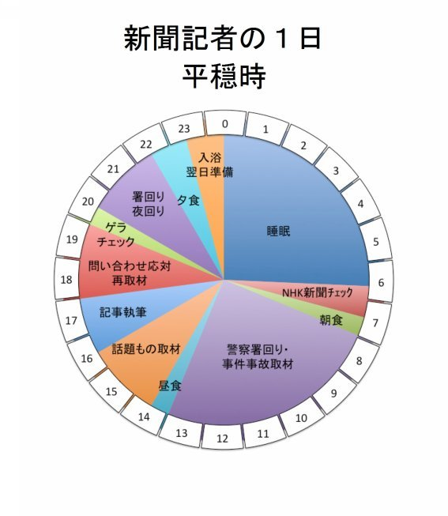
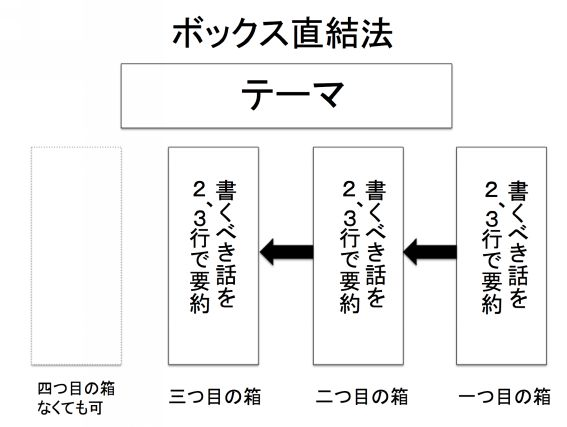
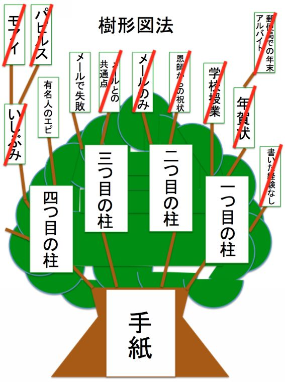
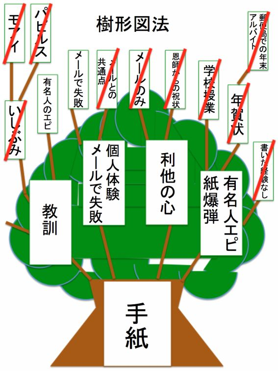

| ５年後に輝く就活（GO就活） 新聞記者編 (火雄出版) | |
| 本能寺逢休 | |
| Rio Publishing (2017) | |
５年後に輝く
就活
（ＧＯ就活）
新聞記者編
本能寺逢休
火雄出版
この作品の全部あるいは一部を無断で複製・転載・配信・送信することを禁止します。内容を無断で改変、改ざんすることも認められません。著作権法その他の関連法規で禁止されています。有償、無償にかかわらず、第三者に譲渡することもできません。
目次
（２） 説明しすぎの部分を削り、「まき餌」としての体を整える
Ｂ 新聞社やテレビ局でアルバイト経験・学生新聞の記者経験あり
Ｃ 海外体験・ボランティア体験で行動力をアピールするも......
お断り
本編では、すべての登場人物、引用文献の著者名を敬称略とさせていただいています。
第１章 はじめに 内定で満足してはいけない
いい時代になってきた。そう思わずにはいられません。就職活動でメディアを志望する学生にとっては、天国のような時代がやってきたと。
新聞やテレビといった既存メディアが、読者や視聴者離れを招いて勢いを失い、学生の就職人気企業ランキングでも、どんどん順位を下げています。かつて新聞やテレビは、若者を引きつける花形の職業の一つでしたが、現在では、ＮＨＫや朝日がかろうじて踏みとどまっている程度で、ベスト１００圏内から姿を消したメディアも多いのです。
人気がなくなれば、当然、競争率も下がります。単に数字だけの問題ではなく、優秀な学生が銀行など、勝ち組の匂いのする企業に流れていくので、内定を争うライバルたちのレベルも下がっていきます。
優秀なメディア志望者を巡る各企業の綱引きは熾烈を極めています。中には、全国紙の内定を取った学生に狙いを定めて、「内定済みの企業に断りの電話を入れれば、うちの内定を出す。ただし、目の前で電話してね」と迫る企業もあります。
こうした「引き抜き」や「失恋」によって、内定辞退者が相次ぎ、大手メディアでも、定員割れを起こすところも出てきています。そうなると、当然、補欠合格者にチャンスが巡ってきます。補欠から内定に引き上げられて、記者への道が開けてくるのです。
メディアへの志望度が高く、常識的なコミュニケーション能力があれば、誰でも全国紙に入って記者になれる時代がやってきた。そう言っても過言ではありません。まさに天国のような時代です。
私が就職活動をした１９９０年代はまだ、メディアの人気がまだ根強く残っていました。競争率も高かったのです。同世代の中では多少、元気と勢いがある学生でも、やすやすと内定が取れる状況ではありませんでした。
田舎でさえない学生生活を送っていた私は、テレビ局は全滅、全国紙も筆記で半分は落ち、最終面接まで残ったのはたったの２社だけ。綱渡りの末にぎりぎりで１社に拾ってもらいました。
月日は流れ、新聞社内で研修担当として若手記者を指導し、就職活動中の学生に講義をしたり、相談に乗ったりする立場になりました。比較的近い位置から就職活動を眺めていると、かつての就職活動と比較して、ついついこのような思いが湧き出てきます。
今なら、意中のメディアを含め、複数の内定を簡単に取れるのに。今、就職活動をしたら、めちゃくちゃ楽しいだろうな......。
もちろん、社会経験を積み、社内の色々な部署の人々と交わる中で、どのような振る舞いが、面接官の心を捉えるのか、そういった情報を熟知しているからこそ、言えるセリフ、そう、たわごとです。
そうした個人的な思いはさておき、就職戦線での競争率が低いということは、社内での競争も楽になります。地方支局での数年間の下積みをへて、本社に上がってきたときに、政治部、経済部、社会部、外報部と、希望の部署に行けるかどうかが、記者人生前半の大きなドラマになります。
１０年ほど前なら新聞社に入ってきていたかもしれない、体にポルシェのエンジンを積んだような行動力のあるライバルが、別の業種に流れているのです。将来、志望部署に行き、さらに部署内の競争をへてやりたい分野を担当できるチャンスは、非常に高いのです。
つくづくうらやましい限りです。ところが、ここ数年、新聞社に入ってくる若手を見ていると、幸せを謳歌できていない人が目立ちます。
優秀な成績で入ってきても、仕事への適応に苦しんだり、上司や取材先とうまく人間関係を築けなかったりして伸び悩んでいるのです。研修中に悩みを聞いてみると、自分で自分の首を絞めて、もがき苦しんでいるようです。
多くは、目の前の優先順位の低いことにこだわりすぎて、仕事上の大きなチャンスを逃しているのです。成長は、少しだけ手が届かないところにある仕事に挑戦し、失敗と克服を繰り返し、仕事の階段を一段一段上っていくことでしか達成できません。
彼らの同期入社の記者や後輩は、巡ってきたチャンスを着実にものにして、いい仕事がさらにいい仕事を呼ぶという正のサイクルに乗って、ぐんぐん成長しています。そうした中で、独り相撲に陥り、自分より少し高い位置にある仕事を蹴ったり、穴を空けたりしてしまうと、チャンスはどんどん自分を避けて通るようになり、結果的に同期や後輩に先を越されて、その差はどんどん開いていきます。
仕事が面白くない→やる気がなくなる→チャンスが逃げる→仕事がさらに面白くなくなる。悪循環に陥り、数年間、くすぶり続けた挙句、退社する。そうした負の再出発を選ぶ若手も、珍しくありません。
記者の仕事は、職人芸の世界です。取材相手と信頼関係を築き、話を聞き出す技術、聞いた話を上手にまとめ、読者の脳裏にイメージが思い浮かぶように文章を並べる技術......。仕事の中でこうした技術を身に着け、一人前の記者になるまで１０年かかると言われています。
下積みをへて５年、１０年たって、ようやく脂が乗ってきたはずの時期にうまく力を発揮できないというのは、本人にとっても、会社にとっても大きな不幸です。
私は、新聞社で３年以上、若手の研修を担当してきました。この仕事を通して痛感したことがあります。若手の成長を阻む多くの悩みは、早い段階、就職活動の段階で、適切な情報収集を行い、仕事への理解を深め、意識を切り替えておけば、楽に解決できたのではないかと。
大学生が熱意を持って、適切な方向に努力さえすれば、誰でも記者になれる時代がやってきたのです。テクニックを駆使して、効率的に内定をもらって安心するというだけの就職活動はもはや、時代には合わなくなってきています。
せっかくなら、内定を目標にするのではなく、５年後の活躍、長期的な成長に目標を定めた就職活動をした方がいいのではないか。そうした疑問が、本書執筆のきっかけとなりました。
誰でもとは言いましたが、就職活動では、熱意を目に見える形でアピールすることと、適切な方向への努力が必要です。記者に必要な能力、エントリーシートや論作文の書き方、面接に必要な心構え、面接官の思考パターンは、本書で余すところなくお伝えします。
自分でコミュニケーション能力や文章力を高める訓練法についても、複数、提案していますので、自分に合いそうだなと思った方法を選び、アレンジしながら実践してみてください。この本を何度も熟読し、自分自身を信頼しながら努力を続ければ、マスコミ塾に通わなくても、記者出身の大学教授に指導を仰がなくても、内定が獲得できる。そうした作りにしています。
さすがに皆さんの内定を保証することまではできませんが、記者への熱意と常識的なコミュニケーション能力さえあれば、必要なのは、ちょっとした工夫と発想の転換だけです。
もし、全国紙にすべて落ちて、留年や就職浪人している人がいれば、工夫が足りないか、努力の方向が間違っているか、本気度が伝わっていないか、運が悪いかのいずれかです。
なり手不足のこの時代、能力が足りないから不採用ということは考えられません。３年間で２００人以上の若手記者の育成に携わってきましたが、元研修担当の名に懸けて、そこだけは、はっきりと断言できます。
１人でも多くの皆さんが、入社５年後の活躍を見据え、記者として役立つノウハウや発想法を身に付けながら、内定を獲得できることを願っています。長期的な視点で就職活動をする学生がどんどん増えていけば、巡り巡って、右肩下がりのメディア業界のカンフル剤になってくれるはず。そう期待しています。
第２章 誰でもメディアに入れる
誰でもメディアに入れる時代と書きましたが、半信半疑の人もいるでしょう。
このポイントを正しく理解することは、自信を持って就職活動をするための前提条件になりますので、少し補足しておきます。そんなことはすでに知っている。そういう人は、この項は読み飛ばしてください。
下の図は、マイナビが実施している大学生の就職人気企業ランキングのうち、過去１５年間の新聞・テレビ業界の人気度を抜き出したものです。
２００３年卒業予定者（２００２年度）には、花形だった新聞・テレビ業界の人気が、徐々に凋落していく様子が、手に取るようにわかります。
少しごちゃごちゃしているので、整理してみましょう。テレビ界の雄、ＮＨＫと、新聞界の人気１位、朝日新聞、次点の読売新聞、その３社に絞った推移です。

就職氷河期（１９９３〜２００５年）にランキング上位の常連だったＮＨＫや朝日新聞を受験することを想像してみてください。
企業のブランドや人気度ランキングの数字は「勝ち組」「エリート」の匂いを醸し出します。メディア志望者はもちろん、「優秀」で元気がいいけれども、それほどメディアに興味のない学生までもが、蜜の香りに引き寄せられるように続々と試験会場に群がり、ただでさえ、狭い門は一層、窮屈になります。熱意だけで門をこじ開けるのは、至難の技で、幾重にも戦略と工夫を凝らしていかないと、門前払いを食らう。そんな時代でした。
しかし、２０１２年ごろから、流れが変わってきます。メディア業界の人気が凋落し、腕試しや興味本位、冷やかしだけでなく、本気でメディアを志望する学生の数も減ってきました。
いつの世も、学生は「勝ち組」や「負け組」の匂いに敏感です。ちゃんとした言葉で言い換えると、企業の将来性です。
理屈は単純です。インターネット革命に続いて、スマートホンやタブレット端末の発達で、手元で簡単に無料の情報を入手できるようになってきたこと。長引く不況の影響で、節約志向が高まり、新聞購読契約を打ち切る家庭が増加したこと。この二つが、ボディブローのように決まり、企業の体が「く」の字に折れ曲がってしまったのです。
昔は、どの家庭にも新聞があり、子どもや若者は、読むかどうかは別として、存在を身近に感じる機会は多かったのです。ところが、今では、記者が、小学校に出前授業に出かけても、自宅で新聞を購読していると答える子どもはたいてい１割未満。生活圏内に新聞がないという若者が増えてきました。
テレビも、新聞業界ほどではありませんが、ダメージを受けています。長く娯楽の王様の座に君臨していましたが、ネット配信という難敵が現れました。場所や時間から解放されて、いつでもどこでも好きな番組を視聴できるという武器を持ち、神出鬼没のゲリラ戦を挑み、テレビが支配していた余暇時間をどんどん奪い取っていきました。
学生にとっては、自分たちが商品を利用しなくなった企業が、将来、奇跡的なＶ字回復を果たすことは想像しにくい。既存メディアの人間からすると、悲しい限りですが、自分の所属を離れて、この現象を眺めると、極めて冷静な判断だと納得させられます。
拘束時間の長い労働環境も、学生離れの一因でしょう。
記者は、事件事故、災害、政治スキャンダル、政変が起きると、現場に駆け付け、関係者から情報を集め、何が起きたか、全体像を再構築しなくてはいけません。
大規模なものになると、記者を大量に投入し、何日も何日も、締め切り時間ぎりぎりまで情報収集に奔走し、ニュースの速度と深度を競い合うことになります。こうした「発生」が起きたときには、通常の休みも長期休暇すらも吹き飛んでしまいます。
この２０年間で労働環境は大きく改善されています。休日や長期休暇が潰れた場合、代休を取ることを推奨されるようになり、出産休暇はもちろん、介護休暇や男性の育児休暇も取りやすくなりました。ワーク・アンド・ライフバランス様様です。
上司や先輩の顔色をうかがって、用事もないのに長時間、会社に居残りをするという悪習も一掃されて、忙しいときとそうでないときのメリハリがつくようになってきました。
４０代、５０代になってくると、育児や介護など、それぞれの家庭が抱える事情も複雑になり、働き方も多様化してきます。私も３０代後半から４０代前半にかけて、独り暮らしをしていた母が認知症を発症し、遠距離介護をすることになりましたが、その間は、９時３０分から１８時までの定時勤務で、完全週休２日という部署に異動させてもらい、介護がひと段落したところで、編集の世界に復帰した経験があります。
それでも、記者の仕事は拘束時間が長く、ハードであるという本質に変わりはありません。ワーク・アンド・ライフバランスを通り越し、プライベートライフを最優先する昨今の風潮とは相容れない世界だと思います。
メディアの凋落、学生の理想とする働き方と労働環境の乖離。この二つの要因が、より糸のように絡み合い、学生のメディア離れを加速させています。
新聞社やテレビ局の側から見ると、目を覆いたくなる惨状ですが、記者を本気で志望する学生にとっては、願ってもないチャンスです。
エネルギーがあり余り、人間的な魅力にもあふれたライバルたちが、人気や流行の業種に流れています。単純な受験者数が減るばかりでなく、本当に競い合う層が少なくなり、実質的な競争率が下がりました。こうして熱意さえあれば、簡単に門をこじ開けたり、すり抜けたりできるようになってきたのです。
小さい頃から記者を目指してきた。あるいは高校、大学での経験を通じて、声なき人の声を伝えたいという使命感に目覚めた。そういう人々にとっては、大きなチャンス到来です。
自分の中の心の声に耳を傾けてください。記者になりたいという熱意はどれだけ大きなものですか。もし、思いが自分の体を突き破りそう、自分の体からあふれて宙に飛び出しそうだ、記者になった姿を想像しただけで鼓動が高鳴り、体の底から力が湧いてきそう。そういう思いを持っている人は、それだけで、他の受験者より一歩も二歩もリードしています。自信を持って、就職活動に臨んでください。
第３章 企業は、優秀な学生を採用している......
金本知憲、イチロー、中村紀洋、前田智徳、和田一浩、山本昌（昌広）、工藤公康......。プロ野球で、野手として２０００本安打、あるいは投手として２００勝を達成した名選手ですが、ここに挙げた選手のもう一つの共通点はおわかりですか。
プロ野球ファンなら即答できるでしょう。知らずに当てることができれば、記者としては合格点の勘の鋭さです。
毎年秋に各球団が選手を競り落とす、ドラフト会議で４位以下の下位指名された選手です。ドラフト会議は、スカウトたちの事前調査に基づいて、期待値の高い選手から順に指名していきます。１位指名というのは、その年に最も高い評価を受けた選手ということになり、以下、２位、３位と進むに従って、評価や期待値は下がっていきます。
プロ野球で２０００本安打を達成した野手は２０１７年９月時点で５５人、２００勝投手は２６人しかいません。冒頭に挙げた選手は、前評判を覆し、長期間にわたって安定した活躍を見せたということになります。
では、前評判が高かった選手はもっと活躍できたかというと、そうではありません。高校や大学で大活躍し、ドラフト１位で指名されたものの、プロ入り後は鳴かず飛ばずで、ほとんど１軍に上がれないまま戦力外通告。ひっそりとプロの舞台を去っていく選手も少なくありません。
ヤクルトの元スカウト部長、片岡宏雄が、週刊現代の取材に印象的な言葉を残しています。
「ドラフト1位というのは、才能があるはずの選手。でも、花ひらくかどうかまでは、３０年スカウトやっても見抜けない。......活躍するなんて絶対の確証は、持てないんです」（週刊現代２０１２年１０月２７日号）
企業の採用活動も、プロ野球のドラフト会議と本質は同じです。人材や才能を見極めるのは難しく、活躍するかどうかの確証など持ちようもないのです。
採用環境を考えると、いい人材を確保するのは、プロ野球のドラフトよりもはるかに難しいと言えるでしょう。
新聞記者や記者出身の幹部は、専門的なトレーニングを積んでいません。人の適性を見極める能力はありません。短い受け答えの印象だけで、面接の点数をつけているのです。
最近は、インターンシップで記者体験をさせて、適性を見極める会社もありますが、それでも１泊２日、長くても５泊６日です。
プロ野球のスカウトが、何か月、何年もかけて、調査を続けているのに活躍できる選手を見つけられないのに、採用の素人の新聞記者が短期間で、優秀な記者を見極めることはできません。
企業は、優秀な人材を採用しているのではなく、優秀そうに見える人材に賭け金を積んでいるだけ。 あとでギャンブルに失敗し、青くなっていることも多いのです。
このことを記憶のひだに刻んでおいてください。そのうえで就職活動に臨むと、小さな失敗に心をかき乱されることも少なくなるはずです。
記者になれるかどうか自信がない。不安だという人は、次のように気持ちを切り替えてみてください。
優秀でない人が毎年、一定数、内定者の中に紛れ込んでいるので、自分にもチャンスは十分にある。ドラフト６位、ギリギリのところで内定枠に滑り込んで、あとは地道に努力を積み重ね、能力を開花させればいい。
仮に面接で落とされたとしても、それは自分に能力がないからではなく、優秀そうに見せる工夫が足りなかったか、あるいは採用担当の目が曇っていたかのどちらかだ。
それくらいの気持ちで、長丁場を戦っていくと、心を安定させることができ、面接やインターンシップの場で、持てる力を十分に発揮できるでしょう。
目指すべきは、ドラフト１位でも、新人王でもありません。ドラフト６位でも何でもいいので、新聞社に滑り込み、５年後、１０年後にＭＶＰを取る。そうした意識で肩の力を抜いて、就職活動に取り組んでください。
第４章 若者へのレッテル、批判は栄養満点、おいしくいただく
「ゆとりでしょ？ そう言うあなたは バブルでしょ？」
毎年、見るものをくすりとさせるサラリーマン川柳、２０１７年の１位作品です。
「これだから、ゆとり世代は......」
上司の嫌味にうんざりした若手社員が、「そもそも、あんただって、入社したときは、『これだからバブル世代は......』と、役立たず呼ばわりされてきたんだろ」と心の中で毒づいている。そんな光景が目に浮かびます。
川柳が端的に表しているように、若者批判、若者へのレッテル貼りは、いつの世も花盛りです。戦後の若者へのレッテルをたどってみても、「しらけ世代」「新人類」「団塊世代ジュニア」「ゆとり世代」「さとり世代」と移り変わっています。
新聞のコラムの説明を借りると、こういうことになります。
１９７０年代には学園紛争が敗北という形で終わり、政治に距離を置く「しらけ世代」が現れ、無気力ぶりが頼りなく映ったという。
８０年代は何と言っても「新人類」か。高度成長後の豊かさの中で育った世代の言質は、それ以前の「旧人類」には理解不能だったようである。
９０年代は「団塊世代ジュニア」が、けちょんけちょんだった。他者への無関心に加え、援助交際、ブルセラといった特異な性行動が、道徳の崩壊だと大人たちを嘆かせた。（２０１２年１月７日、読売新聞解説面「ポケットにＮＥＷＳを」）
面白いものでは「○×式人間」というのもありました。試験で選択問題ばかり解かされてきたので、Ａという方法も駄目、Ｂも駄目、Ｃも駄目となると、思考停止に陥ってしまい、自分で解答を見つけられないというのです。
共通一次（１９７９〜８９年）やセンター試験（９０年〜）を受けた世代に対する当てつけかと思いきや、７９年に３０歳代を揶揄する言葉として使われていたといいます。戦後生まれの世代を指しているのです。
「指示待ち世代」。これも、現在の２０〜３０代への批判だと思っていましたが、使われ始めたのは８１年だと言います。
「言われたことはテキパキこなすが、言われるまでは何にもしない（中略）この年の新入社員の傾向を指すことばとして多くの共感を集めた。この世代の父親は、会社人間であることが多く、妻は子どもに関わりを求めざるを得ない。その結果、過保護、過干渉になる傾向が強い。子どもが何か行動を起こす前に『あれをしなさい、これをしなさい。これはこうやるのよ、あれはそうすればいいのよ』と、きっかけ作りから解決法まで全てを指示してしまう。それに加えて校則・偏差値・内申書・学歴というシステムが頑強な時代に育っているから、与えられたことをこなしてさえいれば自動的にステップアップして行ける。そんな世代に、旧世代はイライライライラ」（「新語・流行語大全 ことばの戦後史 １９４５→２００５」）
何のことはありません。現在の管理職たちが、自分たちに貼り付けられたレッテルを再利用しているだけだったのです。
自分たちのことを棚に上げている部分もありますが、人は、自分の理解できないものを恐れる性質があり、そうした恐れが、レッテル貼りや批判となって表れているようです。
ゆとり世代の気持ちや指導法がわからない――。最近では、企業でも、中間管理職を中心にそんな悲鳴が上がり、人材育成セミナーでは、ゆとり分析やゆとり対策の講座が人気を呼んでいます。
私も、新聞社で研修担当をしているときに複数の講座をのぞいてみました。そうした講座で語られていた「ゆとり像」を集約すると、以下のようになります。
・マニュアル人間
・無駄を嫌がる
・言われたことしかしない
・打たれ弱い
・失敗を恐れる
・自信満々だけど実力が伴わない
・顧客よりも自分の欲求最優先
・すぐに先輩や上司に正解を求める
・すべて検索サービスに答えを求める
・本音と建前を使い分けられず、言ってはいけない場所で本音を漏らしてしまう
さて、読者の皆さんは、ここに挙げた分析をどのように受け止められましたか。
（１） 怒りや不快感を抱く
（２） 人間は一人一人違うのに十把一絡げにしてレッテルを貼ろうとする人の人間性を軽蔑する
（３） 同世代はそうかもしれないが、自分は違うと、心の中で反論する
（４） くだらないので、さらりと受け流す
（５） 直視するのが怖いので、批判やレッテルから目を背ける
（６） 指摘を真摯に受け止め、自分の行動や態度を改める
（７） 感謝する
（８） 笑いが止まらなくなる
１０代や、２０代でも既に就職している人なら、どのような反応でも、構いません。しかし、就活生なら、（６）か（７）という選択肢になるはずです。
なぜ、レッテルを貼られたり、批判されたりしているのに、感謝したり、笑いが止まらなくなったりするのでしょうか。
それは、レッテルの裏で、社会や企業が求める人材像を教えてくれているからなのです。
先ほどの「ゆとり世代の行動分析」を一つ一つ、順を追って、見ていきましょう。
「マニュアル人間」は、やり方がわからなくても、取りあえず、自己流で仕事に挑み、試行錯誤しながら、自分自身の力で解決法を見出していく、そんな人材に育ってほしいという願いが込められています。
「無駄を嫌がる」は、何でも最初から効率化を求めるのではなく、無駄をいとわず、丁寧に、そしてより好みせずに仕事に取り組んでほしいという期待の裏返しです。
「言われたことしかしない」は、周囲がバタバタしているときは、言われなくても、自分に期待されていることを読み取ったり、自分にできそうなことを探したりして、率先的に仕事を手伝ってほしい。そんな願望の表れでしょう。
「打たれ弱い」。これはわかりやすいですね。仕事で失敗しても、上司にこっぴどく叱られても、一晩寝たらケロリとして、再び前向きに仕事に取り組む精神的なタフさがほしいということです。
「失敗を恐れる」。これも明瞭ですね。
「失敗とは、その価値がまだ実現されていない将来の財産である」
ポラロイドカメラを発明したエドウィン・ランドが説く「失敗」のススメです。
失敗するのは、自分の能力よりも高いところにある仕事に挑戦するからです。失敗しない人というのは、そもそも挑戦しないので、どれだけ長い時間をかけても、同じことを繰り返すばかり。これでは、能力は伸びません。大学を卒業して、右も左もわからないまま会社に入ってきて、５年たっても１０年たっても成長がない。それでは、会社は行き詰ってしまいます。
会社は、新人に失敗、言い換えると挑戦を望んでいます。新入社員になるというのは毎日、失敗してもいい権利を３年間、新聞社なら５年間なのですが、与えられるということです。
せっかく、チケットをもらったのに使わない。これでは、あまりにももったいない。どんどん失敗して、叱られて、反省して、翌日には、ケロリとして仕事に取り組んでほしい。そういう失敗のススメなのです。
「自信満々だけど実力が伴わない」。自分は、先輩や課長よりも仕事ができる。ただ、その権限と仕事を与えられないので、能力を発揮できないだけだ。入社して、数週間や数か月でそう確信し、上司を小ばかにする。それなのに、自分に与えられた初歩的な仕事はきちんとできない。注意すると、「こんな簡単な仕事は誰にでもできるので、ほかの人に振ってください」と言ってのける。そんな新人がいるのだそうです。
簡単そうに見える仕事でも、いざ、自分でやってみると、案外、難しい。そういうことはよくあるものです。自分がやったこともないのに、簡単と決めつけないことです。上司は、大した仕事をしていないように見えても、自分が見えないところで難しい交渉や調整をしているものです。自分はまだ、会社に入って間もない身で実績もないということを謙虚に受け止めて、目の前の仕事に着実に取り組んでほしい。そういう願望のようです。
「顧客よりも自分の欲求最優先」。少子化の影響で、家庭や学校で大切に育てられすぎたので、若者は、自分を常に顧客の立場に身を置いている。周囲の人々は、自分にサービスをしてくれて当然。大学を卒業するまで、そういった環境で生きてきたので、社会人になってからも気持ちを切り替えることができず、会社の中でも、取引先に対しても、自分が客であるような振る舞いをしてしまう。そういう姿勢に対する批判です。
会社に入ると、自分は客ではなく、顧客にサービスを提供する側に回ります。自分がどうしたいかではなく、顧客がどうしてほしいかを最優先に考える。そうした姿勢を身に付けてほしいということです。
「すぐに先輩や上司に正解を求める」。「マニュアル人間」や「無駄を嫌がる」ということに通じます。自分の頭で考えて、失敗を繰り返しながら、解決法を見出す、そうした自己解決型の社員を求めているということです。
「すべて検索サービスに答えを求める」。こちらも同様です。頭の中だけで考えるのではなく、自分で失敗して経験値を積み上げ、そこから解を見出してほしいということです。
「本音と建前を使い分けられず、言ってはいけない場所で本音を漏らしてしまう」。自分のことを顧客と思ったまま、入社してくる新人の話をしましたが、そうした顧客意識の表れでしょう。自分が顧客だと思っているので、会社に対してサービス向上を求める感覚で、上司に本音を漏らしてしまう。あるいは社内アンケートに本音を書いてしまう。そういう新人が増えているのだそうです。ＴＰＯに合わせて、本音と建前を使い分けてほしいということのようです。
いかがでしょうか。「ゆとり分析」「ゆとり批判」を通じて、企業の求める人材像が浮かび上がってきました。
・ 自己解決型人間
・ 無駄をいとわない精神
・ 自分の頭で考えて率先的に仕事に取り組む。忙しそうにしている同僚は、自発的に手伝う
・ 打たれ強い
・ チャレンジ精神にあふれて失敗を恐れない
・ 謙虚で目の前の仕事に地道に取り組むことができる
・ 顧客至上主義
・ 検索だけでなく、行動や体験によって解を求める行動型人間
・ 本音と建前を使い分けることができる
こうしてみると、非常にわかりやすいですね。「ゆとり分析」「ゆとり批判」というのは、見方を変えると、就活生にとって、大きなヒントになるのです。
もし、自分自身の内面を振り返り、ここに書き出したような資質や思考・行動パターンを持っていれば、十分、アピールポイントになるということです。
あとは、こうした強みを具体的なエピソードで示し、相手を納得させることができれば、エントリーシートや面接で好印象を与えられるでしょう。
さすがに「本音と建前の使い分け」だけは強みになりませんので、この点は、自分の頭の片隅にとどめておくだけにしてください。
自分の中には、こういう要素はない。そう思った方もいるかもしれません。焦らなくても大丈夫です。エントリーシートや面接の場でそのように取り繕う必要はありません。相手の求める人材像に合わせて取り繕うと、逆効果になり、かえって印象を悪くする恐れがあります。
ここに書き出したのは、企業が求める人材像のごく一部です。企業が求めている能力や資質は多岐にわたります。自分の持っている資質から、別の要素をアピールすればいいだけの話です。
就活生、特にメディアを目指す人たちは、情報を額面通り受け取るのではなく、様々な角度から分析して、裏の意味を読み取る能力が求められます。
私はかつて、就職活動の連載記事を書いたことがあります。そのうちの１回分で、企業の採用担当や大学の就職支援担当の本音を取り上げました。「就活戦線では、女子学生の優秀さが目立ち、ほしいと思える男子学生が少ない」と。
新聞社を含む多くの企業でそういう声が上がっていたので、なぜ、そうなるのかという背景分析も含めて紹介しました。
反響は大きく、ネットでは非常に盛り上がっていました。その多くは、記事に対する批判でした。
「女性は面接のときだけ取り繕っているだけで、入社後は使い物にならない」
「女性は最初の数年間は優秀だが、最終的には男性の同期に追い抜かれてしまう」
そうした意見を読みながら、もし本気でそう信じているのなら、あまりにももったいないと思ったものです。
私が、書きたかったのは、女性賛美でも、男性批判でもありません。就活戦線では、そういうイメージが広がっているという事実です。さらに言えば、そこから読み取れるメッセージを匂わせたかったのです。
ほしいと思える男子学生が少ないというのは、男子学生全体に対するイメージや期待値が低いということです。
裏を返せば、自己解決型で、チャレンジ精神にあふれたタフな男子学生は、少しアピール方法を工夫するだけで、限りなく内定に近づけるということです。企業側が、勝手に男子学生全体の印象を引き下げてくれているので、そこから頭一つ抜け出るだけで、印象はぐんと上がるのです。男子学生にとっては、チャンスにあふれる市場ということになり、笑いの止まらない状況です。
一方、女子学生にとってはどうでしょうか。企業の女子学生に対する評価が高いということは、当然、期待値も高くなります。自分が優秀そうな雰囲気を醸し出していても、周囲の女子学生も同じくらい高い評価を得ていて、埋没してしまう恐れもあります。競争率の高い市場で勝負をしなくてはいけないので、優秀な学生であっても油断はできず、幾重にも工夫を凝らす必要があります。
女子学生としては、市場の評価が高いことに自信を持ちつつ、熾烈な競争になることを覚悟して、気持ちを引き締めなくてはなりません。反面、何社も何社も落とされ続けるような事態になっても、自分の評価が低いということではなく、周囲の期待値や競争率が高すぎることが一因なので、気を落とす必要はないということになります。
就活市場の評価、記事から読み取れるのは、こういうメッセージです。
人間は、好き嫌いや快不快で情報を取捨選択し、自分に都合のいい情報を集めたくなります。しかし、メディアで働く人間は、情報を感情で判断するのではなく、物事を多面的に見ることが求められます。情報を斜めに見る。批判的な情報からもプラスの情報を引き出す。新聞社やテレビ局に入ったら、嫌でもそうした見方を身に付けることになります。遅かれ早かれそうなるのなら、就職活動中から視点の転換を意識することをお勧めします。
第５章 新聞記者の仕事内容を把握する
熱意さえあれば、誰でも全国紙の記者になれること。ゆとり批判は、企業が求める人材像の裏返し。この二つを理解していただいたところで、新聞記者は具体的にどういう仕事をするのか。入社後に数年間を過ごすことになる地方支局での記者生活を見てみましょう。
下の図に示したのが、新人記者の平均的な一日のスケジュールです。

新人記者は、事件事故、災害を取材する警察担当（サツ回り）から始めます。
県警本部を管轄する取りまとめ役「キャップ」の下、２年目の記者と新人記者で、複数の警察署を分担します。
最初は、警察署や事件事故現場に頻繁に顔を出し、署の幹部や捜査員に顔と名前を覚えてもらうことが、主な仕事になります。
午前８時ごろまでに警察署に行き、夜間の当直体制を取り仕切る「当直長」（当直主任）にあいさつ。夜間から未明にかけて、事件や事故、人命や動物の救助がなかったかを尋ねます。
日勤への引き継ぎが終わると、今度は、広報担当の責任者である副署長や警務課長、署長にあいさつし、雑談を交えながら、徐々に距離を縮めていきます。
以前は、殺人や強盗事件を扱う刑事１課や、詐欺や汚職を担当する刑事２課、少年や薬物事件、防犯活動を管轄する生活安全課といった各課にもあいさつし、課長席の前で雑談をすることもできました。しかし、１０年前くらいから、情報管理とマスコミ不信の高まりを受け、多くの都道府県警で各課への出入りを禁止されてしまい、署回りのハードルが上がっています。
事件や事故がないときは、自分が担当している警察署をはしごして、人脈作りのための種まきを続けます。
こうした種まきを昼頃まで続け、午後は、街の話題を探したり、取材したりします。支局には、管内の話題の人物の生き様に焦点を当てた「人もの」や、個性的な飲食店や企業の取り組みを紹介する企画記事があります。掲載は週１回で、各記者が持ち回りで担当する決まりになっているので、「決まりもの」とも呼ばれています。
警察が、事件事故の概要を短くまとめた「広報文」を発表することもありますので、そうした場合は、広報文を基に副署長に詳細を取材します。
話題ものと事件事故は、すぐに記事にまとめて、夕方までに支局に送信します。記事は、編集責任者であるデスクの手を通って、東京にあるレイアウト担当の編成部に送られます。編成部が大きさと配置を決め、見出しを付けて、紙面とほぼ同じ形に整え、ファックスでゲラ刷りを送り返してきます。
記事を送信すると、ゲラ刷りの形で戻ってくるまでひと段落......とはいきません。記事がきちんと書けるようになるまでには数年の修業が必要です。最初の１年は、記事の構成も表現もぐちゃぐちゃで、必要な情報が欠けていたり、事実誤認があったりと、密林で野生動物が暴れまくっているような混乱ぶりです。
警察キャップの手直しを受け、密林をサバンナにまで刈り込んで出稿しているのですが、デスクの目は誤魔化せません。問い合わせの電話をかけてきて、自分が理解しないまま、言葉だけを並べて取り繕っているところや、表現があいまいだったり、内容が前後で矛盾したりしているところを容赦なく突いてきます。記事に必要な情報を聞いていない、あるいは事実と認められるだけの根拠が薄い場合には、関係者への再取材を求められます。
デスクからの問い合わせに必死で答え、再取材した内容を報告しても、追加の問い合わせに言葉が詰まることもよくあります。その場合は、再々取材、再再々取材となります。取材相手の声も次第にトゲトゲしくなり、新人記者の頭からは嫌な汗が噴き出し、みぞおちの辺りでは、胃液がぐつぐつと煮え立っています。
ようやく記事が完成し、支局からメールやファックスで送り返されたときには、自分がパソコンで打ったものとは似ても似つかない内容になっています。９割以上は書き換えられていて、元の状態で生き延びたのは、人の名前と助詞の「て・に・を・は」だけ。そんな惨劇も頻発します。
ほとんど自分のものとは言えない原稿ですが、それでも事実関係に間違いがないか、発表資料やノートなどと何度も付き合わせて念入りに校閲します。
校閲作業が終わると、ようやく一息つけます。そこから担当の警察署を回って、当直長に顔を売り込み、管内の街の話題を交換したり、プライベートの話を切り売りしたりして、距離を縮めます。
支局に引き上げて、この日の収穫をまとめたり、メモや名刺を整理したりして、ようやく仕事は終了。夕食は、校閲後、当直回りまでの空き時間か、当直回りが終わってから取ることになります。帰宅時間は、２２時から２３時といったところでしょう。
これが大きな事件事件のない、平穏な一日の過ごし方です。
大きな事件事故が発生すると、生活は一変します。まずは、発生現場に駆け付けて、発生時や不審者の目撃情報を聞き込みします。東日本では、「地取り」、西日本では、聞き込みの末尾を取って「コミ」と呼んでいます。
被害者が亡くなったときには、顔写真を入手して紙面に掲載します。親戚、近所の住民、同級生や職場の同僚の中から、写真を持っている人を探し出し、怪訝な表情を浮かべたり、渋ったりする相手を説得して、写真を借りたり、接写させてもらったりするのです。
精神を擦り減らす交渉の連続です。新聞記者の取材を追ったルポルタージュや記者を主人公にした小説やノンフィクションでは、この写真集めの苦悩がよく描かれています。
警察回りをしていて、いわゆる顔写真とりほどいやな仕事はない。自分の持ち場で事件、事故の犠牲者が出るたび、暗い気持ちになったのを思い出す。
（「警察回り」）
森田は、同年配の石禾の声がいつもより一オクターブ高くなっていると思った。事件で関係者の写真が手に入らないとき、デスクがいかにいらだつかを、ベテランの森田はよく知っていた。
......
「実際、この仕事がなければ新聞記者もワルくないんやが」と、森田は思った。不幸に遭った家庭へ押しかけ、写真を貸して欲しいと頼んで、いい顔をする家人はいない。わかりきった話だが、それを承知で頼みこむのである。子供が輪禍に遭ったときなどは、とくにつらい。似た年ごろの子をもつ記者などは、どうかその仕事がおれにまわってくるな、と念じることさえある。
（「ドキュメント新聞記者 三菱銀行事件の４２時間」）
悠木は「面取り」を望月に命じた。事件や事故で死んだ人間の顔写真を探してくる仕事は、もっぱら新人の役回りだ。望月は元気な返事を残して出掛けたが、一時間もしないうちにスゴスゴ記者室に戻ってきた。......こんな時に写真を寄越せとは何事かと語気荒く追い返されたという。
もう一度行ってこい。駄目なら親戚や同級生を当たれ。そう指示を与えたが、望月は腰を上げず、悠木が声を荒らげると開き直った。なぜ死んだ人の顔写真を新聞に載せなくちゃいけないんですか。悠木は面食らった。押しも粘りもない記者が年々増えているのは実感していたが、しかし、最初から押す気も粘る気もない記者と相対したのは初めてのことだった。望月の胸を突いてどなりつけた。ばか野郎、商売だからに決まってるだろう。写真が載ってるほうがいい商品だから載せるんだよ。他にも言いようはあったろうが、悠木の腹は煮えくり返っていた。
......相手は右も左もわからない一年生記者だった。あくまで冷静に建前で納得させるべきだった。顔写真が付いていれば新聞の記録性が高まる。記事に説得力を持たせられる。それは即ち悲惨な交通事故の再発防止に役立つのだ、と。
（「クライマーズ・ハイ」）
接写した顔写真、そして現場の状況や目撃情報を記事にして送信すると、日が暮れます。
今度は、警察署の幹部や捜査員の家に向かいます。夜回りです。自宅の周囲に張り込んで、帰宅したところを待ち受け、昼間の記者会見で明らかにされなかった情報をこっそりと教えてもらおうというのです。
警察官は、口の堅い人種です。重大な事件が起きると、新聞記者は、現場に残っている証拠や逮捕した容疑者の供述など、事件の全体像を再構築し、深層を掘り出すのに必要な情報を聞き出そうと、あの手この手を講じます。
しかし、警察官の口は一層、堅くなり、真一文字に結ばれてしまいます。まったく教えてくれないか、ビスケットのカケラのようなヒントをほのめかしてくれる程度です。
犯人だけが知っている情報を取り調べで明らかにすることを「秘密の暴露」と言いますが、これが逮捕や起訴、有罪の大きな決め手となります。警察だけが握っていて、犯人に自発的に話させたい「秘密の暴露」に相当する情報を新聞やテレビで事前に報道されると、捜査に支障を来す恐れがあります。容疑者がいったん自供しながら、あとで否認に転じ、「自白を強要された。（秘密の暴露は）新聞で知った情報を話しただけ」と言い逃れをすることもあるからです。
情報は隠し始めると、秘密の範囲がどんどんと広がっていくものです。
隠しておくような話ではないが、秘密でないことも秘密扱いするのが警察のお家芸だ。
横山秀夫の警察小説「半落ち」には、そんな下りが出てきます。
読売新聞大阪社会部の元記者、大谷昭宏は、警察を含む役所の秘密主義について、こう評しています。
警察に限らず、役所というものは何事によらず隠したがる。こんなことを秘密にしてどうするんだというようなことでも隠す。この秘密主義は明治どころか、江戸幕府、いや、もっと昔に遡るかもしれない。要は「知らしむべからず、由らしむべし」の発想が役人の骨の髄まで染み込んでいるのだ。
（「事件記者という生き方」）
警察官は、地方公務員法で守秘義務を課せられています。組織として出さないと決めた情報は、その判断が間違っていようとも、記者会見では明らかにしません。
そこで記者は普段、回っている署の幹部や現場で顔を合わせる捜査員の家に行って、ほかの人の目の届かないところで、こっそりと情報を聞き出すのです。
もちろん、簡単には教えてくれません。取材先の警察官は、地方公務員法の守秘義務違反を犯すことになります。記者に漏らした情報が記事になると、警察内部で犯人探しが行われます。どの部署から漏れたのか、誰から漏れたかのかがばれてしまうと、懲戒処分を受けたり、人事異動や評価で報復を受けたりします。
そうしたリスクを犯してでも、この記者に情報を提供したい。記事にしてほしい。あるいは、この記者なら情報源を確実に守り、情報の出所をうまくぼかして書いてくれるはずだ。そうした信頼を勝ち得ない限り、夜回りをしても、取材先の口は閉ざされたままです。何時間も自宅前で待ち続け、何も収穫がないまま、肩を落として支局に戻ることになります。
朝晩の警察署回りや、現場で足をすり減らして行う地取り取材は、夜回りで秘密の情報を教えらもらうための信頼関係作り。言い換えると、普段の種まきの成果が夜回りで問われるのです。
いくら熱心に警察署を回っていても、昼間どれだけ仲良く話をしていても、夜回りをしたら別人のように冷たい反応が返ってくる。こんな話はよくありますが、これでは、仕事をしたうちには入りません。企業はどこもそうだと思いますが、結果がすべての厳しい世界です。
努力に運が重なって、重要な情報を聞き出すことができれば、県警本部を担当している警察キャップにすぐに報告し、本部の幹部にも情報の確認を取ってもらいます。情報の裏を取る、裏取りの作業です。
情報に価値があり、確度が高いということになれば、すぐに記事を送信して、朝刊での掲載を目指します。大事件が起きると、警察幹部の帰宅も遅くなります。夜回り、取材、報告、裏取り......。こうしたドタバタとしたやりとりを日付の変わる前後までやっていることも珍しくありません。こういうときは、帰宅は午前１時過ぎ、２時過ぎになることもあります。
いくら夜が遅くなっても、朝ものんびり寝ているわけにはいきません。現場に残されている証拠や凶器、容疑者の目星、逮捕の見通しなど、事件の核となる情報のうち、概略はつかんでいるものの、事実だと確認が取れていないものについて、確認を取らなくてはいけません。
別の警察幹部の家を張り込み、朝、通勤で自宅を出るタイミングを見計らって、自分がつかんでいる情報が正しいのかどうか、確認を求めます。「朝駆け」と呼ばれる仕事です。夜回りと違って、出勤前の慌ただしい時間帯ですので、話ができるのは、ほんの数分です。聞くべきことをまとめて、上手に核心に入らないと、相手をいら立たせてしまいます。
もちろん、これも相手の善意に依存した取材です。「しゃべれない」「俺の口からは言えない」「勘弁してよ」。短い一言でかわされて、目の前を素通りされることもあります。
朝駆けで情報をつかむことができれば、キャップに報告したうえで自分で記事を執筆するか、キャップにまとめてもらって夕刊用に出稿し、問い合わせに答えたり、手直しされた記事に間違いがないかをチェックしたりします。
それが終わると、今度は再び、事件現場を地取りしたり、警察署で捜査の進展がないかを確認したり、病院に張り付いて被害者の容体の変化を取材したり......。キャップやデスクの指示に従って、情報収集に走ります。
こうして、夜回り、朝駆け、現場回りと、昼夜を問わず、管内を休みなく飛び回る生活が、何日も続くことになります。事件発生時の新人記者の一日をまとめると、次のようになります。
警察担当とはいっても、事件事故だけを取材していればいいというものではありません。夏には、高校野球の地区予選の取材を任されます。褒賞の受賞者の喜びの声を取りにいったり、季節を彩る花が満開に咲き誇る様子や、大型連休に家族連れで賑わう観光地を写真に収めたり、動物園で新たに誕生した珍獣の赤ちゃんを取材したり......。
デスクやキャップから、ありとあらゆる取材の指示が降ってきます。少しでも時間が空いたら、繁華街をぶらついたり、趣味のグループに参加したりして、自分が面白いと思う話題を見つけて、記事にします。息つく暇もない生活です。
サツ回りで１〜２年修業すると、その後はいくつかのルートに分かれていきます。
（１） 市政担当として、市長選や市議選、市の政策を取材する
（２） 県内第２、第３の規模の市を管轄する「ミニ支局」、あるいは県庁所在地から離れた場所の市町村を管轄する「通信部」に異動し、市政から事件事故、経済、スポーツまで、管内のありとあらゆるニュースをカバーする
（３） 県政担当として、県知事選や県議選、県の政策を取材する
（４） 特定の担当に縛り付けられない遊軍として、連載を企画執筆したり、調査報道を行ったりする。大規模な事件事故が発生すると、警察担当の支援に回る
（５） サツ回りを取りまとめるサツキャップ
（６） 県庁担当を取りまとめる県庁キャップ
支局長やデスクが、記者本人の適性や支局の人材事情を考えながら、様々な担当を割り振っていきます。新聞社によっては、別の県に異動させて、新天地で経験を積ませることもあります。
取材対象は、警察官、被害者、目撃者から、公務員、政治家、財界人へと移りますが、取材の基本は同じです。重要な情報を隠しておきたいと思っている相手を説得したり、根負けさせたりして、情報を引き出し、読者の元に届けるということです。
第６章 新聞記者の生活から逆算した求められる資質
仕事内容を大まかに学んだところで、そこから逆算して、記者に求められる資質を考えてみましょう。
Ａ 体力
まずは、一にも二にも体力です。大きな事件、事故、災害が発生したり、首相が解散総選挙に打って出たりすると、瞬間最大風速５０メートル級の大嵐が吹き荒れて、１〜２週間、ときには１か月以上も、目が回るような忙しさが続きます。短期集中で力を発揮できるだけの体力がないと苦しい戦いを強いられます。
私が、入社した新聞社では、１次面接と２次面接で、体力があるかを何度も念押しされました。細身なので不安に思われたのかもしれません。
「高校時代は運動部で鍛え、大学時代は自転車にテントと寝袋を積んで、スイスのアルプスやモロッコのアトラス山脈を越えたこともあるので、自信はあります」
そう答えつつも、どうして、そんなくだらない質問ばかりしてくるのだろうと、不思議に思ったものです。
「なるほど、こういうことか」
質問の趣旨とその奥深さを理解したのは、入社して間もなくのことでした。
さて、ここで注意しておきたいことがあります。新聞社やテレビ局で求められているのは、「仕事体力」で、運動で発揮される体力や筋力とは、異なる種類のものだということです。
新人記者の中には、「体力だけは任せてください」と意気込んで入社してくる人がいます。小学校から大学まで運動部で活躍し、腕や背中は筋肉で盛り上がっている。地方支局には、高い期待とともに迎え入れられたものの、事件事故で睡眠不足が続くと、すぐにばててしまい、モティベーションもパフォーマンスも下がって使いものにならない。そんなこともよくあります。
対照的な人もいます。私の新聞社時代の後輩は、「高校は帰宅部で勉強ばかりしていました」という細身の記者でしたが、連日の過熱取材が続く中、笑顔を絶やさずに取材していました。仕事が大好きなようで、仕事体力は無尽蔵でした。
睡眠不足が続いても、気力が萎えることはありません。眼鏡をかけているのに肩凝りや腰痛とも無縁です。
「どうしてそんなに体力があるのか」
そう尋ねたところ、しばらく考えたあと、こんな答えを返してきました。
「受験勉強で毎日１０時間以上、勉強していたからじゃないでしょうか。長時間、座りっぱなしでデスクワークをするのは苦にならないんです」
もちろん、小学校から大学まで運動部で鍛えた記者の中には、運動体力も仕事体力も兼ね備えた鉄人もいますが、仕事体力は、見た目のたくましさや運動経験では、測れないところがあります。仕事体力があるかどうかは、実際に働いてみないとわからないのです。
読者の中に大学在学中にアルバイトをいくつも掛け持ちし、学費と生活費をすべて自力で捻出していたという方はいますか。あるいは、新聞奨学生として、夕刊と朝刊を配りながら、自活を続けてきたという方もいるのではないでしょうか。そういう方は、仕事体力に自信を持っていいでしょう。
社会人として働いた経験がある方は、繁忙期の働き方を通じて、自分の仕事体力がどの程度なのか、見当が付くのではないでしょうか。
仕事体力は非常に重要な要素ですが、ないからといって、記者の仕事ができないというわけではありません。大変な思いをするというだけです。
記者にも様々なタイプがいて、不幸にして仕事体力がない人もいます。それでも、頑張りどころと抜きどころをうまく見極め、自分の体を騙し騙し操り、長い間、記者を続けているのです。
あればアピールにはなるものの、なければないなりに補うこともできる。それが仕事体力なのです。
Ｂ コミュニケーション力
体力と同じくらい重要なのが、コミュニケーション力です。
新人記者の一日を振り返ってみてください。かなりの時間を、誰かと会って話をするのに費やしています。記事に直接、結びつかなくても、様々な場所に顔を出し、積極的に声をかけ、人脈を広げる努力をしています。
新人記者は、警察署に行って副署長や署長、当直長と話をし、県庁担当は、知事や幹部の執務室や県議会の議員控室、国会議員の事務所に足を運び、知事や議員、秘書と話をします。
開拓するのは、担当分野の人脈だけではありません。夜や休日に時間が空くと、面白そうな人が集まりそうな飲食店を掘り起こし、常連さんと仲良くなります。
名物女将、地元の情報通、街おこしのリーダー、素性不明の怪しげな客......。地方都市では、誰が、どこでどうつながっているかわかりません。ある日、突然、点と点がつながって、人脈や取材先が思わぬ方向に広がっていくということもあるのです。
好奇心旺盛で、知識欲も高く、本を読むのも大好き。でも、人と接するのは苦手で、できることなら避けたい、逃げたい。そう思っている人は、就職先について、もう一度、考え直した方がいいかもしれません。
沖縄の宮古島で新聞記者を目指す若者たちを追った読売新聞の連載「きょうも悲しい事件がなくてよかった 南の島の新聞記者物語」（２００１年４月７日～１２月２９日）には、人付き合いが苦手で引きこもりになってしまった新人の姿が描かれています。
一番つらいことは何か？と問われたら、たいていの新聞記者は「ネタ（書く材料）がないこと」と答えるだろう。それは、食材を持たない料理人と同じように無力で、言葉を失った政治家よりも悲しい。オタクっぽい新人記者が人と接しようとしないのだから、ネタ以前の問題だった。
（２００１年１０月１３日、読売新聞中部版「きょうも悲しい事件がなくてよかった 南の島の新聞記者物語」第２１回）
人見知りが激しくても、コミュニケーションを取るのが苦手でも、それ自体は、大した問題ではありません。そういうタイプの記者は、全国紙にもごろごろといます。
朝日新聞の夕刊コラムを１９年にわたって担当し、名文家としてならした斎藤信也もその一人のようです。
新聞記者は人に会わないと商売にならぬが、「私はひどい人見知りで、人と会うのは大の苦手なのだ。社命のままにことに当たっただけである」と斎藤は言っている。
（「新聞記者の流儀 戦後２４人の名物記者たち」）
大切なのは、コミュニケーションを取る意志があるかどうかということです。苦手だろうが何だろうが、仕事のときは勇気を振り絞ったり、記者を演じたりして、コミュニケーションを取ることができるのか、見知らぬ相手に声をかけることができるのか。自分自身の心にそう問いかけ、答えがイエスなら、あるいは、１年後にはイエスになっているだろうという予感があるのなら、問題はないでしょう。
人間は、環境に慣れる生き物です。記者生活をスタートしたときには、不安や恐れ、ストレスを感じるかもしれませんが、コミュニケーションを取ろうという気持ちさえ持っていれば、あとは慣れが解決してくれるでしょう。
Ｃ 雑談力
取材相手と話をするときに、仕事の話ばかりでは、話が広がりません。
警察署を回っているときに、現在捜査中の事件事故ばかりを話題にしていると、相手も仕事モード全開になってしまい、警戒心を解いてくれません。
事件や事件の少ない県警では、あっという間に話題が尽きてしまい、沈黙地獄に襲われます。「こっちも忙しいから、用がないなら帰って」。冷たく追い返されるかもしれません。
警察署への顔見せ、人脈の種まきをしているときに、人間関係の緊張をほぐしてくれるのが、雑談です。
まずは、自分から胸を開きます。大学時代のサークルやアルバイト体験、趣味、家族、恋愛、赴任後に開拓した飲食店、取材をして面白いと感じた地元の話題......。相手の反応をうかがいつつ、興味を持って食いついてきたなと思う話題を掘り下げ、会話を盛り上げます。相手の心のガードを少しずつ下げさせ、雰囲気が柔らかくなったところで、相手の私人としての顔を引き出していくのです。
県庁や市役所でのお堅い取材でも、読者に笑顔を届ける街の話題取材でも、適度な雑談や脱線は、新たな記事のネタにつながることがあります。
四角い顔をした県庁や市役所の職員が、マイナースポーツの日本代表やマイナーアートの第１人者としての顔も持ち併せていることに気付いたり、百貨店のオープン記念セールで、コメントを取ろうとしたお客さんが、大規模災害の被災者であることがわかったり......。取材の終わりに再取材を申し込めば、新たな話題ものやヒューマンストーリーの出来上がりです。
県の事業計画の取材に来たのだから、事業計画に関する質問だけ、百貨店のオープンセールのコメントなので、一言感想を聞いたらそれで十分。杓子定規なコミュニケーションを取っていると、一回限りの縁で終わってしまうでしょう。雑談が、取材相手の別の一面を引き出し、一期一会の縁を深め、将来の取材の可能性を広げていくのです。
雑談は、取材に欠かせない潤滑油ですが、学生の段階でうまくできなくても心配する必要はありません。雑談は、会話や取材を重ねるうちに上達していきます。逆に自信があるからといって、エントリーシートや面接での大きなアピールポイントにはなりません。
ないと困るけれども、あっても外部からの評価にはつながらない。取材やビジネスにおける「空気」のような存在なのです。
就活前に雑談力を磨きたい。そういう方のために、第１４章で雑談力を鍛える方法を紹介しています。 「居酒屋でオジサンもてなし」 を参照してください。
Ｄ 粘り・打たれ強さ
記者の仕事の根幹は、話したくない、できることなら隠しておきたいと思っている人から、情報を引き出すことです。
「話せない」「何も言えない」。そう言われて、「わかりました」とあっさり引き下がってしまってばかりいては、書くべき材料がいつまでたっても手に入らず、仕事になりません。
手を替え品を替え、タイミングを変え、ときには同情を引き出し、ときには相手を根負けさせる。あらゆる手段を講じて情報源と信頼関係を結び、情報を入手しなくてはいけません。
「相手は話したくないと言っているので、これ以上、しつこく粘るのは申し訳ない」
「相手を怒らせてしまうかもしれない」
「迷惑だと思われている相手にどう声をかけていいかわからない」
記者も人の子です。最初は、誰しも、こうした思いを抱き、内心びくびくしながら、取材に突撃するのです。
もしも、臆する気持ちを克服できずに、コミュニケーションを取ることを諦めてしまうと、自らの手でチャンスを潰すことになります。２度目、３度目に訪ねていったら、相手は話してくれるかもしれないのです。大切なのは、粘りです。
警察官、事件・事故・災害の被害者、政治家の家に取材に行く際には、相手がなかなか帰ってこなくても、あと１時間待ってみよう、１軒目の取材が終わっても、もう１軒回ってみよう。そういう粘りが必要です。
世の中で何が起きているのか。声を出せない人たちは、何に苦しんでいるのか。目に見える舞台の裏で、ＳＮＳで自己アピールをしたり、承認欲求を満たしたりすることに関心のない要人たちが、どういうふうに国や社会を動かしているのか。
そうしたことを伝えるのが、新聞やテレビの大きな役割ですが、報道するためには、情報がないと始まりません。情報を持っていない記者が、「食材を持たない料理人と同じように無力」と言われるゆえんです。記者は、作家と違い、想像力を働かせて、無から有を生み出すことはできないのです。
「今日はもう帰ってこないのではないか」「どうせ、何も答えてくれない」
夜回りで住宅街の片隅に車を止めて息を殺していたり、建物や電柱の陰に身を潜めていたりして、何時間も待ち続けている。ようやく待ち人が帰ってきたと思ったら、野良犬のように追い払われる。
あるいは、日中の地取り取材で、不審者や事件当時の目撃情報を求めて、民家のベルを一軒一軒鳴らしてみたものの、誰一人、有力な情報を持っていない。
そんな体験を繰り返していると、脳内で弱気の虫、諦めの虫がささやき始めます。
ホイホイと誘いに乗って、楽な道を選ぶと、情報は絶対に入ってきません。駄目で元々の精神で挑戦を続けると、メディアの仕事に理解を示してくれたり、個人の努力や熱意を評価してくれたりする奇特な情報源に行き当たることもあるのです。確率は低く、運の要素も強いのですが、そもそも行動を起こさなければ、運をつかむことすらできません。
新聞記者の仕事は、飛び込み営業と同じく、拒絶されることの連続です。取材拒否に遭うこともしばしばです。
「どうして、そんなことを聞くんだ」
「取材をやめろ」
「記事を書くな」
相手によっては、きつい口調で詰め寄ってくることもあります。
警察担当を離れても、「拒絶」されることからは逃れられません。
数年間の支局での修業をへて、本社に上がると、政治部、経済部、社会部、外報部、文化部、運動部と、様々な専門部に配属されることになります。しかし、政治家も財界人も運動選手も文化人も芸能人も、取材を受けてくれる人ばかりではありません。
芸能人に家族や学生時代の思い出を語ってもらう。私はかつて、そんな企画を持ち回りで担当したことがありました。楽しさしか感じられないような取材ですが、芸能事務所やマネージャーから「その取材は、うちのタレントにとって、何のメリットがあるのですか」と突き放すような口調で、取材を断られたことが何度もありました。
拒否されるたびにいちいち落ち込んでいては、仕事になりません。
仕事で粘りを発揮するには、意志の力も必要ですが、慣れや経験が粘りを育てることもあります。
私が、新聞社で研修担当をしているときに、短期間に急成長を遂げた新人がいました。無口で何を考えているかわからない男性記者だったのですが、１年後に再会したときには、優秀な記者のオーラをまとっていました。
本人が淡々と語る報告や、周囲の評価を聞いていると、ここ一番の場面で、必ず、重要な情報を入手しているようです。
手法は単純です。情報を持っていて、かつ、話してくれる人が見つかるまで、断られても断られても、ひたすら声をかけ続けるのだそうです。
心が折れたり、諦めようと思ったりすることはないのか。そう尋ねると、しばらく間を置いて、頼もしい答えが返ってきました。
「断られるのが当たり前だと思っているので、そういう気持ちになることはないですね」
このぼくとつな記者は 赴任して３か月目に、大きな事件を取材する機会に恵まれたそうです。このとき、現場で３０人近くに断られ続け、ようやく、被害者の顔写真を提供してくれる人に巡り会い、達成感とともに大きな教訓を学んだといいます。
「取材で断られることは当たり前。これは情報入手に必要なステップなのだ」と。
大きな現場は、記者を育てる。そんな格言を絵に描いたようなお話です。この記者は、現場で粘りとプロとしての気持ちの切り替えを学んだのです。
Ｅ 信頼
情報を話したくない。漏らすと、組織の中で不利益を被るかもしれない。取材中、相手の頭の中では、そうした抑止力が働きます。重要な情報を打ち明けてもらうには、当然のことながら、信頼を得ることが大切です。
この記者なら情報を正しいことに使ってくれる。世の中の役に立ててくれる。自分が、情報を漏らしたことがわからないように配慮してくれる。そうした信頼を得ないことには、情報はおろか、ヒントすらほのめかしてもらえません。
では、どうしたら、その信頼を勝ち得ることができるのでしょうか。
これは多くの新人記者の悩みでもあります。相手の元に通い詰め、言葉遣いに細心の注意を払い、盛り上がりそうな話題を思い描き、相手の気を引く行動を取る。ところが、せっかく信頼を得たいと思って取った行動が逆効果となり、相手をカンカンに怒らせてしまう。謝罪し、反省して態度を改めるものの、やっぱり相手を怒らせてしまう。そうやって悩み抜き、試行錯誤を繰り返した末にようやく身に付けていくものです。
結論を焦らず、この本を読み進みながら、じっくりと考えていきましょう。
Ｆ 協調性
こんな人材はいらない。オレが、オレが、何でもオレがの「オレガノフ」――。
私が就職活動をしていた十数年前、ある全国紙の入社案内でこんな表現を見つけました。
自己主張の強い人をロシア人の名前になぞらえて皮肉るとは、さすがは新聞社、うまい言い回しを考えるな。学生アパートで入社案内を読みながら、一人でニヤリとしたものです。
実際に新聞社に入ってみると、「オレガノフ」の言葉の重みがよくわかりました。
新聞社やテレビ局は、良くも悪くも組織ジャーナリズムです。フリーの記者では到底、捻出できない巨大な予算と人員を使って、幅広い分野をカバーし、チームプレイで、政治や経済、社会問題の裏に埋もれている断片的な情報を片っ端から拾い上げ、ジグソーパズルを組み上げるように全体像を浮かび上がらせていく。いざというときの瞬発力と人海戦術を駆使した情報収集力に最大の強みがあるのです。
熱しやすく冷めやすい。すぐに結論に飛びつきたがる。そんな批判がある通り、同じテーマを何年もかけて粘り強く追いかけ続けるといった継続性は苦手とするところですが......。
支局での仕事も、専門部での取材も、チームプレイです。
県警キャップの指示を受け、ニュースの核となる情報集めに奔走し、取材先で聞き出した情報を正確に投げ返す。自分でスクープの端緒を取ってきても、県警キャップに情報の裏を取ってもらい、デスクの厳しいチェックの目をへて、協力してジグソーパズルを完成させるのです。
署名記事を書くと、注目度が高く、反響も大きいので、記者としては、一人で仕事をしたような錯覚に陥りがちです。しかし、記事は署名であっても、著作権はあくまで新聞社にあるので、記者個人の記事ではないのです。
私が私が、俺が俺が、もっと私を見て見て、俺を見ろ見ろ。一人が我を張り、自己顕示欲や承認欲求の奴隷になってしまうと、チームの中でそこだけ仕事が停滞してしまい、前に進まなくなります。
そうなると、上司や同僚が本来、取材に割り当てるべきエネルギーを人間関係の調整に割かざるを得なくなってしまいます。巡り巡って、商品である紙面の質を下げることになりかねません。
一緒に支局で働く上司や同僚、そして東京で見出しを付け、レイアウトを考える編成部員（整理部員）。自分がどういう行動を取ると、彼らの仕事がやりやすくなるのか、紙面を作りやすくなるのか。そうした相手の立場への配慮は、記者の仕事にも求められるのです。
Ｇ 知識
新聞記者は、地方支局で県警担当や市政担当、県政担当を経験したあと、本社に異動し、政治、経済、社会、外報、科学、運動などの各取材部で、専門分野の取材を行います。
各取材部では、細かい担当分野が割り振られます。社会部なら、東京地検、裁判所、警視庁、厚生労働省、国土交通省、農林水産省、環境省、宮内庁、調査報道や事件事故の支援に当たる遊軍、都内版などです。
いったん、東京地検や裁判所、警視庁の担当になると、延々と同じ分野を取材し続けるかというと、そうではなく、２、３年ごとに配置換えが行われます。東京地検や裁判所を担当したら、次は厚労省、国交省、遊軍......といった具合です。
政治部でも、官邸、与党、野党、国会、中央省庁......、経済部でも、日銀・財務省・金融庁、中央省庁別、民間企業の産業別と、細かい担当に分かれています。やはり、定期的に配置換えを行い、様々な分野を経験できるようにしています。そのほかの取材部でも同様に 「ジョブ・ローテーション」を行っています。
これだけ幅広い取材を行うのであれば、新聞記者は、政治、経済、社会、国際情勢、科学とあらゆる分野に精通しているのではないか。新聞記者になるためには、大学生の頃から、幅広い知識が必要なのではないか。そう思っている人もいるようですが、そうではありません。
新聞記者は、取材技術を高めた素人の集まりです。取材を通して、その分野の基本知識を身に付け、専門家の取材や専門書の読み込みによって、にわか専門家になっていく。担当が替わると、古い知識を忘れ去り、新たな分野で再び、素人からにわか専門家への階段を上っていく。その繰り返しです。
朝日新聞の横浜支局は１９８８年６月、リクルートが、関連会社の未公開株を賄賂として、政治家や官僚に譲渡した「リクルート事件」の端緒を調査報道によってスクープしました。このとき、支局員は、企業経営や会計、証券の知識や取材経験がなかったので、会計士の元に通って、一から知識を学んでいました。
毎日新聞の北海道支社は２０００年１１月、多くの石器を発掘し、旧石器時代の歴史を塗り替え、「神の手」と崇められていた民間研究者の藤村新一が、自ら石器を埋めて発掘実績を捏造していたことをスクープしています。
毎日新聞は、捏造疑惑の端緒をつかむと、取材班を組織して、藤村の業績や動向を調べ上げていきますが、取材班による回顧録には、取材を始めたときの模様がこう記されています。
取材班は全員、考古学の素人。中学、高校時代に教科書で習った程度の知識しかない。『藤村』という名前を誰も知らなかったし、藤村氏が発掘した遺跡についても、ピンとこなかった。（「発掘捏造」）
やはり、素人集団が、専門家を取材したり、専門資料を熟読したりして、にわか専門家になり、不正に手を染めた民間研究者を追い詰めていったのです。
朝日新聞の編集局長を務めた外岡秀俊が、著書の中で、新聞記者と知識の関係について、わかりやすく説明しています。
編集局長として毎日、各取材部の出稿予定の内容から、どうやってニュースの価値判断をしているのか、その手順を紹介したあと、こう続けているのです。
ここまで読んだ方は、私のことを、世の中の森羅万象に通じた情報のプロと錯覚なさるかもしれません。もちろん、そんなことはありません。......介護保険法の仕組みは自分では説明できませんし、メタボリック症候群などは言葉を聞いたのも初めてでした。......後藤組は、映画監督の故・伊丹十三さん襲撃事件の記憶がおぼろにあるだけで、実態は少しも知りません。......タイは行ったことはあるものの、国王やタクシン首相に関する知識は皆無。インドネシアに至っては、行ったことすらありません。
こういうと、今度は「そんなことで新聞は大丈夫か」と心配されたり、「よくもまあ大胆にニュースを判断できるものだ」とあきれる方がいるかもしれません。
しかし、ご安心ください。私個人の知識に限りがあるのは当然ですが、新聞社総体としての知識量、情報量には、かなりの蓄積があります。それは、個々の記者が、どこに行けば正確な情報を入手できるのか、日夜必死になって追い続けているからです。
......私の場合は、各部のだれが、どの方面に強いのかという「インデックス情報」があるのみです。生半可な自分の知識や蓄積情報で判断するよりも、その分野に強い記者に質問し、その記者がさらに「その道のプロ」から精確な情報を聞き出す方が、ずっと確かです」
（「情報のさばき方 新聞記者の実践ヒント」）
もちろん、多分に謙遜も含まれているので、言葉を額面通りに捉えることはできませんが、各取材部を束ねる編集局長ですら、知識に限りがあることを自覚しているのです。記者だから、幅広い専門知識を持っているというのは、大いなる誤解なのです。
記者の仕事は、すでに自分が持っている知識を吐き出すことではありません。自分が素人だという自覚を持って、未知の分野の基礎知識を学び、正確で深い情報を持っている専門家や関係者を探り当て、そこから入手した情報を報じることです。最初から様々な専門知識を持っている必要はないのです。
本職の記者ですらそうなのですから、記者志望の大学生はなおさら、博学や博覧強記である必要はありません。記者の大半は、就職活動の段階で、社会事象の知識がない、専門知識を持っていないと不安を募らせながら、無事に内定を獲得しているのです。
全国紙の中でも、日経新聞は、高度な専門集団というイメージがありますが、その日経新聞ですら、例外ではないようです。
同紙の元ワシントン特派員、田村秀男が、経済紙の内情を明かしています。
実は経済記者も経済学がわかっているわけではないのです。
そもそもの問題は、経済学に関して造詣の深い人間が、経済記者になるわけではないという恐るべき事実です。法学部や文学部の出身者も就職試験に合格すれば経済記者になれます。全体的にみて、経済学部出身者はむしろごく一部にすぎないのです。
それでは、経済学部出身ではない人間が、経済記者になってから経済学を学ぶ機会はあるのでしょうか。
実はない、というのがその質問に対する回答になります。今考えれば、経済ジャーナリズムを謳っていながら、驚くべきことに、記者の側によほど強い決意でもない限り、経済学をきちんと勉強する機会はつくれないものなのです。実際に、経済記者のほとんどは、付け焼き刃で知識を詰め込んでいるだけにすぎないと言わざるをえません。
（「日経新聞の真実 なぜ御用メディアと言われるのか 」）
記者になるのに、知識は必要か。これに対する答えは明確に「ノー」です。ただし、筆記試験や面接を突破するための最低限の知識は、必要になります。これは、大学受験と同様、パズルを解くようなものです。しっかりと対策を行えば、身に付けられます。幅広い知識、専門知識、そうしたものは、新聞社の就職活動では、求められていないのです。
Ｈ 文章力
最後に紹介するのが、文章力です。どうして最後に持ってきたのか。それは、
新聞社に入社するのに文章力はそれほど求められないからです。
新聞記者の１日を思い出してみてください。新人が記事を書いたあとに、キャップやデスクから何度も問い合わせを受けたり、文章の手直しを受けたりしてようやく記事が完成します。新人の手元に戻ってきたときには、人や場所の名前を除いて、９割近くが書き換えられており、もはや、自分が書いたとは思えない内容になっている。そんなこともよくあります。
新聞記事のスタイルには強い癖があり、新聞独特の表現も多い。そんな酌むべき事情もあるのですが、書き直しが多い最大の理由は、新人記者が、文章を書き慣れていないことです。
構成はぐちゃぐちゃ、表現は回りくどく、文意がわかりにくい。そうした不完全な原稿をキャップやデスクが、文字通り一から作り直し、日本語として意味の通る文章に「変換」します。
新人時代は、自分でも意味がわからないまま、警察や行政の専門用語を適当に並べて文章らしきものに仕立て上げてしまいます。締め切り時間に追い立てられているので、ろくに見直しもしないまま原稿を送信してしまいがちです。キャップやデスクに徹底的に直された原稿を見て、ああ、自分が取材したのは、こういうことだったのかと、初めて納得する。そんな笑い話のようなことが起きうるのです。
新人の中から特に文章の下手な人を取り上げ、あげつらっているのではありません。文章を９割以上直される。別人が書いたような原稿になって戻ってきた。これは、毎年、新人記者が漏れなく通る道、通過儀礼のようなものなのです。
朝日新聞の記者の仕事を追った連載記事にも、新人記者、賀来遼子の苦悩が描かれています。
締め切り時間が迫り、デスクの声がだんだん大きくなる。遼子の原稿を、森河が端から赤鉛筆で真っ赤にしていく。こんなにも書けないものか。文章を書くのが得意だなどと思い込んでいただけに、心底情けなかった。原稿は九割方、森河の文章になっていた。
（若葉マークの勤務表「新聞うちあけ話」より）
手書き原稿を赤鉛筆で直すというところに時代を感じます。今はパソコンで記事を入力し、支局のコンピューターの画面上で修正し、電子データで返信しています。ただ、９割方書き直されるというところは、昔も今も変わりはありません。
新聞社というのは毎年、文章が下手くそな人が大量に入ってきて、５年間かけて定型の文章を書けるようになる。その後、血のにじむような努力を１０年、２０年続け、運も味方に付けることができれば、文章がうまい記者と言われるようになる。 そんな世界です。
東洋経済新報の元記者で、「東洋経済オンライン」の編集長をへて、「ＮｅｗｓＰｉｃｋｓ」の編集長に就いた佐々木紀彦が、面白い指摘をしています。
これまでの私の経験では、新聞記者や新聞記者出身で文章のうまい人にあまり出会ったことがありません（文芸部は除く）。それは、たんたんと事実を記す、無味乾燥な新聞流の「型」を叩き込まれてしまい、色彩ある文章を書けなくなっているからでしょう」
（「５年後、メディアは稼げるか」）
「文芸部以外、文章のうまい人にあまり出会ったことはない」というのは、少々、極端ですが、新聞社の特徴をよく捉えています。
新聞社には、古い言い方ですが、「取り屋」と「書き屋」という表現があります。「取り屋」は、情報を取ってくるのは抜群にうまいが、文章は下手くそな記者。「書き屋」はその反対に、文章を書くのはうまいものの、重要な情報は全く取れない記者。それぞれに対する羨望と揶揄の入り混じった言葉です。
本当は、情報も取れて、文章も書ける記者が理想なのですが、現実にはそんな万能選手はごく一握り。「取り屋」や「書き屋」になるのも大変で、どちらも平凡な「凡記者」が大半です。記者として１０年、２０年、キャリアを積み重ねていても、文章が下手だったり、苦手だったりする人は多いのです。
そういう現状ですので、記者になるのに高度な文章力は、必要ないのです。入社試験での作文や論文は、文章のうまい人を選抜するためのものではありません。新聞社で鍛えれば、数年後には記事が書けるようになりそうな最低限の文章力を持っている学生を見分ける。そのためのものです。
話が矛盾しない。言いたいことがはっきりと伝わる。自分の人柄や経験が伝わる具体的なエピソードを盛り込んでいる。大学生として標準的な文章力があれば、合格点を取ることができるのです。
就職試験を受ける１年から半年前から、正しい方法で訓練を重ね、コツをつかむことができれば、十分に達成できるレベルです。
記者になって、バリバリと記事を書いてみたいけれども、現在の文章力に自信はない。そんな人でも、記者になる道は大きく開けているのです。何もしないうちから諦めるのは、あまりにも、もったいないというものです。
どうしたら、論作文の合格に必要最低限の文章力を身に付けられるか。 第１１章の「論作文」 で複数、練習法を紹介しています。マスコミ試験対策本も参考にしつつ、自分に合った方法論を見つけ、練習に励んでください。
第７章 休みは自分で作る
文章力がなくても、記者にはなれる。それはいいとしても、一日のスケジュールがあれだけハードで、しかも、事件事故災害があれば、休みが簡単に吹き飛んでしまうとあっては一体、いつ休めばいいのか。そう思われた方も多いでしょう。
先ほど紹介した朝日新聞の連載「新聞うちあけ話」に登場する新人女性記者、賀来遼子は、記者になって一番つらいのは、「芝居とコンサートに行けないことだ」と告白しています。
「行けない」というわけではないのですが、県警担当をしているときは、いつ何時事件や事故が起きるかわからないので、予定が立てづらいのです。立てたところで、当日の事件の神様の機嫌次第では、休みが吹き飛ぶこともあるので、本当にコンサートに行けるのかは直前までわからない。ハラハラドキドキさせられる羽目になるのです。
この女性記者は、勤務表で休みの付いていた日に「Ｕ２」のコンサートのチケットを取り、祈るような気持ちで当日を迎えたのですが、朝、デスクからポケットベルで呼び出されます。
決まりものの原稿が出ていないというのです。先週やったはずなのに......。声を上ずらせながら反論すると、まさかの答えが返ってきます。
「先週はピンチヒッターやろ。交代と違うで。今日中にやっといてな」
よくある連絡ミスです。先輩が急きょ、何かの都合で取材ができなくなり、その代役を務めたときには、交代かどうかを確認しておく必要があったのです。
むだになったチケットを前に、遼子はしばらく動けなかった。
この一文に楽しみにしていた休日が潰れたショックが凝縮されています。
新人研修をしていても、休日の確保は、受講生の大きな関心事です。新人の平均的な一日のスケジュールを紹介すると、研修会場がしんと静まり返ります。「このスケジュールで一体、いつ休めって言うんですか？」。悲鳴に似た質問が上がることもあります。「新聞記者がこんなに忙しいとは知らなかった。やっていく自信がない」。落ち込みようはとどまるところを知りません。
もっともな疑問です。各社に毎年、配属される新人記者たちはどうやって、この過密スケジュールをこなしているのでしょうか。新聞社に入社する人というのは、仕事体力無尽蔵の特殊な人々なのでしょうか。
そうではありません。しっかりと、抜け道があるのです。
もう一度、新人記者の平穏時の一日を振り返ってみましょう。
午前中に「警察署回り」が入っていますが、５時間休みなく、警察署をはしごしたり、警察幹部に話をし続けたりするわけではありません。自分の種まき計画や、その日の疲労度に応じて、適度に仮眠を取ります。
県警や大きな警察署には、「記者クラブ」と呼ばれる部屋があります。中には、会社ごとについ立てで仕切られたブースがあり、全国紙や地元紙、テレビ局の記者が、記事を書いているのです。共有スペースには大きなソファがあり、自社のブース内に自前のソファを持ち込んでいる人もいます。これらのソファを使ったり、自分の車の運転席を倒したりして、睡眠不足を補うのです。
場合によっては、午後の話題もの取材の時間に仮眠を取ることもあります。本当に疲れ切っているときは、午前中の警察署回りも、午後の話題もの取材もさぼって、半日以上、睡眠に充て、全てのエネルギーを夜回りに投入するという日もあります。
その昔、警視庁淀橋署の記者クラブでは、加盟する全国紙の記者たちが、ひょっこりひょうたん島の替え歌で、記者生活を自虐的に表現し、互いに憂さを晴らしていたそうです。そこにも、記者クラブでの仮眠のシーンが登場します。
経費をスイスイ スイスイ吸い取って
酒をガブガブ ガブガブ飲み干して
（ガーブガーブガーブ）
ひょうたん記者は どこへ行く
どこへも行かない クラブで昼寝
(えええー えええー)
（「毎日新聞社会部」）
記者の勤務時間は固定されていません。忙しいときと、そうでないときの仕事量の落差も激しいので、９時半から１７時半までというように定時勤務にはできないのです。午前８時に警察署回りをするときに警察署でタイムカードを押して、最後の夜回りを終えて直帰するから、夜回り先で退勤時間をタイムカードに刻んで......というわけにもいきません。
基本的には、記者それぞれの自己裁量に任されているのです。記者の仕事は、極端に言ってしまえば、朝刊と夕刊の締め切り時間までに、ニュースとなるべき情報を掘り当て、記事にして送信する。それだけです。結果を出すことができれば、それまでの時間をどう使おうとも自由なのです。
長時間勤務で足を棒にして現場を駆けずり回り、睡眠時間を削って夜討ち朝駆けをかけようとも、締め切り時間までに情報を取ることができず、他社に抜かれてしまうと、「何をやっているんだ」と叱責されてしまいます。
逆に要所要所でタイミングよく取材源に接触して、うまく情報を引き出し、締め切り時間までに記事を送ることさえできれば、昼間、どれだけさぼっていようとも、「よく頑張った」と言われます。投入した時間ではなく、結果のみが問われる世界です。
ただし、どの世界でもそうですが、さぼることにはそれなりのリスクが付きまといます。ハードな記者生活には寝坊が付きものです。午前１０時ごろまで寝過ごしたときに運悪く、重大事件や大規模災害が発生すると、地獄絵図です。
支局のデスクやキャップは当然、署回りや取材をしているものと思っています。すぐに現場に駆け付けるようにと電話で指示が来るでしょう。
このとき、起きたばかりだと丸わかりのカスれた声を出したり、あるいは現場に駆け付けるのが大幅に遅れたりすると、大目玉を食らってしまいます。
いざというときに取材の初動が遅れると、その後の取材がどんどん後手に回ってしまい、支局全体が致命的なダメージを負いかねないからです。
こうした初動の遅れのリスクを避けるため、多くの記者は、いったん出勤し、警察署の記者クラブや、その周辺の車中で上手に休息を取っています。
「上手にさぼるのも記者の力量」
昔から新聞社では、このように言われています。朝日新聞の元記者、小原正雄は回想録「夜も昼も拘束１５時間」の中で、さぼり方を紹介しています。
仕事はいよいよ面白くなったが、身体はきつかった。こんな生活を真面目にやっていたら、どんなに丈夫でも身体がもたないことがわかってきた。サツ回り連中は、いろんなさぼり方を考えだす。私も時にそれを実行した。
まず朝だ。アパートから本社に電話をする。いかにも持ち場の警察に出勤したかのように装うのだ。しかし社に電話する前に、まず警察に電話して、事件が何もないことを確認してからでないといけない。......先に警察に電話して「何もないですか」と念を押し、「もし本社から電話があったら、ちょっと出かけましたといって下さい」と頼んでおく。そうすれば本当に警察に顔を出す前に本社から電話があっても、「今、いたんですが、どっかへ行ったようですね」と署の人は返事しておいてくれるのだ。このやり方で、ねむい時、疲れた時は、三十分ぐらい時間をかせげたのである。
（「警察回り記者」）
真面目に生きてきた方々には、さぼりを勧められても抵抗があるかもしれませんが、要は自分でスケジュールを組み立てなさい、自己管理をしっかりしなさいということです。
最初は、仕事に慣れないので、簡単な取材や原稿執筆にも膨大な時間がかかります。どの新聞社も、バブル後の採用抑制と、部数減による販売広告収入の減少のあおりを受けて、支局は慢性的な人員不足に陥っています。
慣れない仕事に人員不足が重なって、出勤日に仕事を消化しきれず、休日に持ち越すこともあるでしょう。しかし、慣れるに従って、要領を覚え、仕事の処理も早くなってきます。だらだらと仕事をせずにメリハリをつける。そんな気持ちを強く持ち、自分なりに工夫を凝らせば、休日への仕事の持ち越しは、最小限に食い止められます。
記者の労働環境は、この１０年で大きく改善されてきました。多くの新聞社では、事件事故で休みが潰れた場合には、代休を申請するよう奨励されています。
・ スケジュールをしっかり管理し、隙間時間に取材予定を詰め込んで、決まりものの取材と記事の執筆を出勤日に終わらせる。
・ 話題もの記事を定期的に出稿し、出稿量が少ないと上司に文句を言わせない
・ 取材先の人脈開拓を地道に継続する
この３点を心がけ、誰からも文句の言われない仕事をしておけば、平日にどんどん代休を申請し、堂々と休めばいいのです。
記者は、拘束時間が長い分、勤務時間中の自由度も限りなく高い仕事です。
締め切り時間内にミスのない原稿を出すことができれば、あとは、どこで何をしていても自由です。自由度の高さは、記者の大きな魅力の一つなのですが、見方を変えると、どこまでが仕事で、どこまでが遊びやプライベートなのか、線引きが難しいということにもなります。
取材先と一緒に登山や魚釣り、ゴルフに行って親交を深め、一生の付き合いになることもありますし、休日に飲食店で酒を飲んでいて面白い人と知り合いになり、偶然の縁が取材につながっていくこともあります。
線引きが難しい分、気を抜くと、効率の上がらないまま、だらだらと長時間労働を続けて、疲労とストレスを飽和状態までため込んでしまう。そういう事態になりかねません。こういう仕事だからこそ、どうすれば、まとまった休みが取れるのかを真剣に追求し、めりはりの利いた働き方をする必要があります。
休みは自分で作る。そうはいっても、これだけ拘束時間が長いと、独身時代は良くても、２０代後半から３０代で家庭を持ち、４０〜５０代になって、自分自身の体力が衰え、親の介護が必要になった場合には、どうすればいいのか。
長期的な働き方を見据え、このような不安を持った方もいるでしょう。
そういう場合は、会社の制度活用と異動希望、２種類の方法で、時間をやりくりすることになります。
新聞社は、産休、育休、介護休暇が充実しており、男性の育休取得も増えてきました。そうした会社の制度を活用し、育児と仕事を両立している女性記者、記者同士結婚して共働きで頑張っている夫婦も大勢います。
３０代、４０代に一時的に記者の仕事を離れて、人事や広報、新規事業部門といった定時勤務の職場で働き、１、２年後に再び、記者に復帰する道もあります。
私自身にも経験があります。３０代後半で、独り暮らしをしていた母に認知症の症状が表れて、遠距離介護を始めることになりました。
最初は、２、３か月に１度、東京から関西に帰省し、様子を見にいっていましたが、頻度は徐々に増えて、月に１回のペースになってきました。会社には当時、年５日（のちに年１０日に倍増）、介護休暇を取得できる制度があり、介護休暇と有休を組み合わせて、帰省日を捻出しました。
やがて母の認知症は進行し、毎日３回、薬の服用と水分補給を促す電話をかける必要が出てきました。お金がない、鍵がない。そんなＳＯＳの電話も頻繁にかかってくるようになりました。
当時は、編集局の中では比較的、時間にゆとりがある部署に勤務していました。休みも週２回きちんと取れる恵まれた職場環境でした。ただ、記者をしている以上、忙しい担当への配置換えや異動を命じられることもあります。自衛策として、編集局から出してほしいと上司に訴え、新規事業部門への異動がかないました。９時半から１８時の定時勤務で、毎週土日が休みの完全週休２日制。仕事と介護を両立するには、理想的な職場でした。
記者によっては３０代、４０代で、自ら希望して記者を完全に「卒業」し、人事や新規事業部門などで、第２の仕事人生を歩み始める人もいます。
新聞社は「職種のデパート」と呼ばれてきました。人事、総務、広報、デジタルメディア、新規事業、販売、広告、不動産、そして名前からは何をやっているのか見当も付かない不思議な部署まで、実に様々な仕事があります。定時職場で、完全週休２日の職場も用意されているのです。
人生のステージ、家庭の事情、本人の仕事観の変化に応じて、多様な働き方を選択するというのも一つの解決策です。
もし、福利厚生や休暇について関心が高いという方は、新聞社やテレビ局で内定を獲得したあと、本社で勤務している１０年目以上の記者にじっくりと話を聞いてみてください。
就職活動中に記者の仕事内容を把握する前から、福利厚生や休暇制度について根掘り葉掘り質問していると、熱意や本気度に疑いの目を向けられることもあります。まずは複数社の内定を取り、そのあと、労働環境についてじっくりと話を聞き、就職先を決定する。それが賢明な選択です。
第８章 記者の魅力 記者はかくも自由だ
記者はさぼったり、代休を取ったりして、上手に時間をやりくりし、仕事と家庭生活、仕事と子育て、仕事と介護を両立しています。
そうはいっても、記者の仕事が、拘束時間が長いということは否めません。ワーク・アンド・ライフバランス重視、あるいは私生活最優先の現代の学生に敬遠される大きな要因です。
こうした学生の増加によって、熱意だけで新聞社やテレビ局に採用される可能性が大きく広がってきた面もあります。
拘束時間の長さは、新聞やテレビ業界を志望する就活生にとっては、頼もしい援軍ではありますが、いずれは自分にも刃を向けてくることになります。諸刃の剣というやつです。
それでも毎年、一定数の学生が新聞社やテレビ局を受験しています。入社後、３年以内に退社する人もぽつりぽつりといますが、多くは、記者として自信を付けたり、覚悟を決めたりして、十数年、長いときには三十数年に及ぶ記者人生を送ることになります。
彼らを引きつけているものは何でしょう。
金、家族を養う責任感、惰性......、様々な要因はあるかと思いますが、最も大きいものは、仕事の面白さ、楽しさだと思います。
記者の仕事は、楽しいのです。しかも、その楽しさは多様です。
Ａ 社会正義の追求・スクープ
社会正義を追求したい。調査報道で埋もれている不正や不条理を掘り起こしたい。スクープ合戦を制して、どこのメディアよりも早く事実を伝えたい。
学生時代にすでにそうした使命感に燃えている人は、新聞社の目指している方向性と完全に一致するので、仕事の中でやりがいを存分に感じることができるはずです。
捜査機関のミスやでっち上げによる冤罪をスクープし、捜査機関や司法当局に再考を促し、無実の罪を着せられた人々の釈放や名誉回復に一役買った。捜査機関の判断ミスや怠慢により、防げたはずの犯罪を見逃してしまったことをスクープし、捜査態勢の見直しや法改正を実現に導いた。捜査機関が、裁判で有罪にできないと事件化を諦めた不正について、独自取材で事実を確認し、スクープした。政治家や官僚の公金の不正使用をスクープし、相手を辞職に追い込んだ―---。これらは、数あるスクープの代表例です。
毎日新聞北海道支社が２０００年１１月にスクープした「旧石器発掘捏造」は、日本史の教科書の内容を書き換えるほどの影響があり、旧石器時代の調査研究のあり方に大きな一石を投じました。
スクープには、国や行政、社会を動かす強い力と、不正を正し、矛盾を解消する浄化作用が備わっています。
メディアは傍観者であって当事者にはなれない――。新聞社に入ると、メディアの第三者性にもどかしさを感じ、思い悩む人もいるのですが、世の中や組織の中で埋もれている不正や不条理を掘り起こすことで、社会の風潮やルールを変えることもできるのです。
日本新聞協会では毎年、社会的に意義の大きかったスクープを新聞協会賞の編集部門で表彰しており、過去の受賞作をホームページ上で紹介しています。
< http://www.pressnet.or.jp/about/commendation/kyoukai/works.html >
受賞作をたどることで、メディアの社会貢献の役割を体感できるかもしれません。
Ｂ 歴史の証人
歴史の証人になる。これも古くから、大きなやりがいの一つに数えられています。歴史的転換点で、現場の最前線まで迫り、何が起きているのか、その内幕をじっくりと観察する。現場で見聞きした情報の断片をつなぎ合わせ、事実に限りなく近付けて報道する。そうして、現場に居合わせなかった多くの読者と情報を共有し、仕事や家庭生活、政治参加に役立つ判断材料を提供する――。
これは、一次情報収集に価値を置き、多大な予算と時間を投入しているメディアに属しているからこそ、許された特権であり、最高の贅沢でもあります。
・プラザ合意
・ベルリンの壁崩壊と冷戦終結
・湾岸戦争
・旧ソ連崩壊
・５５年体制の崩壊
・ペルー日本大使公邸人質事件
・アメリカ同時多発テロ事件
・第二次アフガニスタン紛争
・イラク戦争
・日本人拉致被害者の帰還を実現させた日朝首脳会談
・東日本大震災
事件事故、紛争の最前線で五感をフル活用して情報を収集するだけでなく、首脳会議や国内の政策決定の現場に近付き、当事者の証言によって、枠組みやルールが決まる過程を再現することもあります。いくつかの仮説を立てて、断片情報をつなぎ合わせることで全体像を浮き彫りにしていく。そこには、推理小説やパズルを解いているような楽しさがあり、そうした仕事を何度も繰り返すことで、世の中の表と裏の仕組みを深く理解できるようになるのです。
Ｃ 点の情報を線や面に
世の中に点のように散らばっている出来事に共通項や法則性、歴史的意義を見出し、点と点をつなげて線や面を浮かび上がらせ、埋もれている社会現象や問題に光を当てる。そんな役割もあります。
戦後、旧ソ連によって、中央アジアのキルギスに抑留されていた元日本兵がいた。話を聞きにいくと、満州国に設立されていた最高学府「建国大学」の卒業生だった。初めて耳にする大学名に興味をそそられて、調べてみると、日本人、朝鮮人、中国人、モンゴル人、白系ロシア人の優秀な学生を集めて、共同生活を送らせ、多言語教育を施し、「五族協和」の実践を目指していたことがわかった。
しかも、大学内では、言論の自由が保障されていて、朝鮮人学生や中国人学生が、日本政府に対する非難を日本人学生にぶつける自由まで認められていた。ＯＢたちは、卒業後も国境を越えて交流を続け、母校批判の本を書こうとする中国人ＯＢにも支援の手を差し伸べるなど、一貫して言論の自由を守り抜こうとしているという。
建国大ＯＢを一人一人探し当て、中国、韓国、台湾、モンゴル、カザフスタンまで訪ね歩き、建国大が掲げた「五族協和」の理想と現実の矛盾を体感しながら、ＯＢたちが戦後、母国で迫害や弾圧に耐えながら力強く生きてきた軌跡を追う――。
そんな地道な作業から生まれたのが、２０１０年１０月１２日から１５日まで、朝日新聞の夕刊総合面に連載された「満州建国大生の戦後」です。筆者はその後も取材を継続、日本国内でＯＢの足跡をたどり、「五色の虹 満州建国大学卒業生たちの戦後」というタイトルで書籍化しています。
最初に出会った建国大ＯＢという点のような存在をそのまま受け流していたら、おそらくは建国大ＯＢたちの戦後の受難や国境を越えた交流の模様が、まとまった形で世に出ることはなかったでしょう。
望まない妊娠で生まれた赤ちゃんが、養子斡旋業者の手でたくさん海外に送られている。しかも、業者には多額の謝礼が支払われているらしい。何人、送られているか、国も把握していない。取り締まる法律がないから、犯罪にもならない。
最初は、取材先との雑談の中で出てきた、ぼんやりとした点の塊だった。行政や産婦人科、児童養護施設、大使館、大学教授、弁護士、警察官......。点がつながりそうな場所をしらみつぶしに当たった結果、診療所や斡旋業者、未成年で出産した実母の親、里親、子供を手放しかけて踏みとどまった母親、海外の里親に引き取られた養子にたどり着き、当事者たちの生の声を取材することができた――。
読売新聞が２００４年１０月５日から１１日までと、０５年５月１７日から２３日までの２度にわたって、社会面に連載した「赤ちゃん あっせん」の取材経緯です。成果はやはり、「赤ちゃんの値段」のタイトルで書籍化されています。
外国人や日系人の移民で、母国と日本を数年おきに移り住んでいる家庭の社会適応なども、点から面への展開ができる内容です。
親は、ポルトガル語が母国語で、日本語は片言程度、家庭内での共通語は、ポルトガル語。学校は公立の小中学校で、授業は当然、日本語で行われますが、数年おきに移住を繰り返しているので、授業に付いていけずに落ちこぼれてしまいます。
静岡や群馬でそういう移民子弟の存在を知ったとします。その一家だけの話なら、個人的な事情、自助努力の問題として片付けられるかもしれません。
しかし、同じような家族が、日本全国に散らばっていて、周囲の支援を受けられないまま孤立しているとしたら......。
将来は、日本国内に母国語も日本語も中途半端なダブルリミテッドの若者や中高年が増えていき、彼らだけで閉鎖的なコミュニティを作り上げていくことになるでしょう。
日本の国内に社会の孤島がいくつも存在するようなものです。平時はそれでもうまくやっていけるかもしれませんが、雇用や医療、社会保障、災害などの場面で大きな混乱が生じかねません。
誰かが点と点をつないで面として、目に見える形で示すことができれば、協力や支援の輪が広がっていくかもしれません。そこに、記者が点と点をつなぐ大きな意味があるのです。
Ｄ 総理大臣から乞食まで
社会的な使命感がない。５年後、１０年後に使命感を抱いている自分の姿も想像できない。それでも記者は務まってしまいます。実際、そうした志望者は毎年、大勢います。しかも、社会問題への関心の薄さを隠して「修飾活動」を上手に乗り切り、全国紙の内定をしっかりと獲得しているのです。
「名刺１枚あれば、総理大臣から乞食まで、誰にでも会うことができる」
記者の仕事は昔からそう評されてきました。最近は、乞食が差別表現に当たるというので、取材対象の部分をあいまいにして表現するようになっていますが、「誰にでも会える」というのは、昔も今も変わらぬ、仕事の魅力の一つです。
学生や一般企業の会社員ではなかなか会ってくれない人が、社名を告げて取材を申し込むだけで、時間を取って会ってくれます。もちろん、取材拒否に遭うこともよくありますが、熱意と工夫次第では、面接を取り付けることもできるのです。
普通の生活をしていると、なかなか会えない人ばかりを特集する。かつて、そんな連載企画も存在しました。共同通信社会部が１９９９年に毎週土曜日に計５０回連載し、全国３４紙に配信した伝説の企画、その名も「当世希人（まれびと）列伝」です。
漫画編集者から世界放浪をへて英国人と結婚、主夫とギャンブラーを掛け持ちし、作家としても活躍する森巣博。終戦後２９年間も、フィリピンのルパング島のジャングルでゲリラ戦を続け、帰国後はブラジルに移住して牧場経営、その後、日本国内で自然塾を開いた小野田寛郎......。
「混迷の社会で存在そのものが、未来へ強烈なメッセージを発している人物」の半生や人生哲学を評伝形式で紹介しています。
「ろう者は孤独で悲しくて、というお涙ちょうだいはもうたくさん。だれかに助けてもらわなければならないとか。もうおなかいっぱい。ほんとはみんな元気で明るくエネルギッシュ」（聾の女優、忍足亜希子）
「手をとって教えられる世界じゃない」「私の時代には狭き門どころか門そのものがなかった」（映画字幕翻訳者、戸田奈津子）
「がっくりくるんですよ。ああ、四十代は男にとって人生の関所なんだなと。司馬遼太郎さんが書いていたんです。男にとって四十代は降り積もる雪の中、坂を登って関所を目指すようなものだと。本当にそうなんだな」（歌手・俳優、武田鉄矢）
「絵が好きだというだけ。ほかに何もない。成績も悪く、学校時代は希望がなかった。教師もあきらめていた。退屈で。教科書は、もらって三週間もしないうちに落書きだらけで読めなくなる。押し付けられることが嫌だった」（画家、ヒロ・ヤマガタ）
「豊かな日本で自分を見失った子どもが増えているんじゃないか」。裸の自分と向き合うジャングルの生活を通して、人間は自分が何が得手か不得手か知ることで生きる目標がおのずと決まってくることを経験した。射撃が得意な者、戦闘の作戦を練るのがうまい者といったように自然と役割分担が決まり、助け合いながら自分の存在意義を確かめていく。
「自分が何者なのか分からないと人間は荒れる」（自然塾塾長、小野田寛郎）
「毎日の生活が実は死の準備だということ。大事なのは、日々を懸命に、尊厳をもって生きること。いい生き方は、良い死に方につながるということ」（精神科医、大原健士郎）
道なき道を自ら切り開いてきた希人たちの言葉には、混迷の時代を生きるヒントが散りばめられています。１時間、ときには数時間に及ぶインタビューの中から、珠玉の言葉を引き出し、読者にメッセージを伝える。これも、記者冥利に尽きる瞬間の一つです。「当世希人列伝」は、「希人よ もっと激しく、もっと自由に」というタイトルで書籍化されていますので、興味がある人は読んでみてください。新聞の面白さを体感できるはずです。
人物取材は、相手のライフストーリーを根掘り葉掘り聞き出し、四方八方に飛び散った話を拾い集めて、当時の時代背景を盛り込みながら、相手の人生を再構築する作業です。その過程で、取材相手の人生を追体験できる。それも大きな楽しみです。
人生の先輩たちの生き様を追体験できる。特に社会的経済的に大成功を収めた人々の失敗談を追体験できるというのは、最高の人生勉強で、かけがえのない財産にもなります。
世の中には、これを金銭的な財産に換えてしまった人までいます。米国の成功哲学の指導者、ナポレオン・ヒルです。新聞記者から雑誌記者に転じ、財界人への取材をきっかけに５００人以上の成功者を取材して、その哲学を体系化。ノウハウをまとめた本やプログラムを世界中に販売して巨万の富を築いたというのです。実際に取材したのかどうかについては疑義も出ているようですが、真偽はともかく、成功者に失敗からの学びを聞くことができるというのは、貴重な経験です。
取材した結果は当然、メディアでも報じます。それを読んだり、視聴したりすればいいではないか。そう思われるかもしれません。しかし、新聞はスペース、テレビは時間枠に限りがあり、せっかくの人生模様も報じられるのはごく一部です。
「記者は１０を聞いて１を書く」
新聞社に入社すると、デスクや先輩からそう教わります。現場の記者は、あれも面白い、これも面白いと思いつつ、紙面のスペースの制約を前に泣く泣く、エピソードや表現をばっさり削って原稿を送ります。予想される紙面のスペースに合わせ、ぴったりの行数で原稿を送る。そういう訓練や指導を受けているからです。
記者によっては、あえて長い原稿を送り、デスクにスペースを割いてもらえるように交渉する人もいますが、十中八九、願いが聞き入れられることはなく、無情にもばっさりと削り取られてしまいます。
こうして、１０の情報から精査に精査を重ねて濃縮させた１の情報が、商品として流通する。そんな構図が生まれるわけです。削られた残る９の情報も、記者が心の中で流した悔し涙も、決して表に出ることはありません。
１０分の１まで濃縮させることが、顧客の需要を満たしているのかどうか。そういう議論はありますが、それはさておき、視点をずらすと、記者は、紙面や映像にはならない、残り９の情報に触れることができるのです。
Ｅ 人間理解
人間についての理解が深まる。これも、大きな魅力の一つです。
記者生活は、警察担当から始めることが多いと書きました。その理由はいくつかありますが、大きな理由の一つは、人間勉強です。
犯罪は、老若男女、地位、職業、収入、居住地域に関係なく、誰しもが加害者にも被害者にもなりえます。
高い地位についているのに、十分な収入があるのに、守るべき家族がいるのに、道を踏み外すこともありますし、生活に困窮して犯罪に手を染めることもあります。
どういう生活環境で育った人が、どういうきっかけで人生の坂を転げ落ちていくのか。犯罪の動機となったのは、欲か、見栄か、嫉妬か、怒りか、快楽の追求か。
現場や関係者への聞き込み、警察関係者への夜回り、裁判で明らかにされる被告の生い立ちや犯行動機......。そうした取材を通して、人間の本能や習性、弱さ、汚さ、矛盾といったものを学びます。
事故になると、犯罪よりも、はるかに多くの人が、巻き込まれる可能性を秘めています。
あのとき、この場所に行かなかったら、こういう行動を取っていなかったら......、そんなわずかな選択の違いが、事故に巻き込まれるかどうかの運命を分けます。どんなに努力を重ね、自分を律し、健康に気を使い、計画的に人生を生きていても、運によってすべてが終わってしまう。そんな人生のはかなさや不条理さを肌で学ぶのです。
そうした取材体験の積み重ねによって、人間の本質を学び、将来、政治家や官僚、財界人を取材する際に、目に見える動きの背後にある本質を見抜く力、洞察力を身に付けるのです。
Ｆ 文章で読ませる
文章が大好き、創造的な仕事をしたい。そうした芸術家志向の人にとっても、新聞社は、魅力的な職場になるでしょう。
新聞記事は、表現が硬く、真面目臭くて、面白みのかけらもない。そういうイメージを持っていませんか。もし、そうであれば、残念ながら、メディア志望者としては、新聞の読み込みが足りないと言わざるを得ません。
新聞をたまに開いて、ページをパラパラとめくると、無味乾燥な定型の文章、小難しい表現ばかりという印象を受けるかもしれません。新聞の表現は独特で、読みこなすには慣れも必要です。
しかし、どの新聞でも毎日、読み続けていると、１週間に１、２回、多いときには数回、驚きを感じることがあります。
「何、これ？ こんなに小説みたいな文体を使ってもいいの？」
そう思うような記事があるはずです。連載や企画記事、ルポルタージュなどです。
新聞の文章には、様々なルールが課せられています。多くの記者やデスクは、ルールでガチガチに文章を縛ったり、新聞表現を多用したりと、自己規制してしまいます。無味乾燥な記事が、あふれる要因です。
しかし、新聞はこうあるべきだと勝手に思い込んでいる人が多いだけで、新聞の文体には、自由な要素も多いのです。自分が日々、いろいろな文章に触れ、自分自身の文章力を磨いてさえいれば、いくらでも自由に書けるのです。
新聞はどこまで自由に書けるのか。その実例を見てみましょう。朝日新聞が２００３年から０４年にかけて、社会面に掲載した企画に「ひと文字」というものがありました。登場人物の人生や過ごした時代を一つの文字に凝縮して描いた物語で、 今回、紹介するのは、０３年７月６日付の「恋」です 。
出だしは、このように始まります。
いてつく外気と、人目を逃れた安堵感と、かすかな胸の高まりと。
ないまぜな気分で重い扉を押し、外套を脱いで顔を上げると、ツイストを踊る若者の向こうに、彼の顔が見えた。思わずときめいた自分に、ちょっと照れた。
６８年末、モスクワ。繁華街アルバート通りの一角にある「アイスクリーム喫茶」は、重苦しい体制下で唯一ともいえる学生たちのオアシスだった。アイスとワインとダンス。それが流行の組み合わせだった。
話をほぐしたのは彼女の方だった。「日本では、どんな踊りが人気ですか」
「ゴーゴーがある」。留学３年目の彼は流暢なロシア語で答えた。
（中略）
戸惑いの笑顔とぎこちない会話。すき間をビートルズの調べが埋めていた。
彼女は「西側」である日本人と会ってはいけない身だった。旧ソ連外務省に付属する国立国際関係大学の学生。外交官を夢見る２４歳だった。
日本語を学んでいた。遅れて届く日本の新聞を切り抜く程度で、訪ソ団との通訳を頼まれて失敗。「私には会話が必要」と思い定めた時、目の前に現れたのが、彼だった。
モスクワ大学大学院の留学生。たまたま日本の家族が訪ソ団に言付けた調味料を取りに来ていた。その彼に、彼女は「日本語を習いたいのです」と、アイスクリーム喫茶での逢瀬を取り付けたのだった。
「プラハの春」をソ連の戦車がつぶした年、東西冷戦さなかのモスクワでふたりの恋は始まった。
記事は、三つの章で構成されています。
第２章で、「ソ連の国家意思」を学ぶ彼と、「日本の民主主義運動」を専攻する彼女が結婚し、娘が生まれます。
物語は、彼女の視点で進んでいきます。モスクワにいるときは、日本人との交際に厳しい監視の目が光り、志望していた外交官の道も、内定していた通信社への就職の口も閉ざされてしまいます。
日本に居を移しても、周囲の冷たい視線にさらされ続けます。国籍を尋ねられて、「ロシア人」と答えると、みな黙り込んだといいます。米国が旧ソ連に「悪の帝国」とレッテルを貼り、日本が、米国経由の国際情報をうのみにしていたことも影響していたのでしょう。彼女は孤立感にさいなまれます。
落ち込んでいるときに支えとなったのは、家事や育児に積極的に関わり、笑顔をくれた彼の存在。彼女は、前を向いて生きることを決意し、ＮＨＫでロシア語のニュースを読み、大学でロシア語を教え、自分の居場所を切り開いていきます。
彼は、記者から秘書、政治家に転身、２人はロシアから彼女の母親を呼び寄せ、ようやく日本に根を張る環境が整ったところで、ほんわかとした第２章が終わります。
第３章もそのままの流れに乗って、幸せの果実を摘み取って終わるのかと思いきや、突如、彼の人生の幕が暴力的な方法で閉じられてしまいます。
彼との思い出の詰まった庭の枝垂れ桜の下で、彼女は、こんな言葉を発します。
「コウキさん、よく働いた、と、ふつうの人たちに言ってもらえればそれでいい、じゃない。それ以上何もいらない。いま、私、そう思うしか、ない、じゃない」
彼女と彼の名前が明かされるのは、このセリフの直後、記事の最後の５行です。聞けば、ああなるほどという有名な政治家とその妻の物語なのですが、主語を「彼」と「彼女」にぼかして話を展開することで、読者は誰のことだろうかと想像を巡らせ、謎解きを楽しむような感覚で読み進むことができるのです。
新聞記事の基本は、最も重要な情報を第１段落（前文）に凝縮させ、その後も重要度が高い順に第２段落、第３段落と書き進んでいく「逆三角形」です。
主人公の名前は、最も重要度の高い情報の一つ。通常であれば、第１段落、遅くとも第２段落には盛り込むべき内容です。しかし、連載や企画記事の中では、そうした「常識」を覆し、あえて最後まで名前を伏せ続ける。そんな小説のような手法を使うこともできるのです。
「恋」のもう一つの特徴は、臨場感です。読者の脳裏には、彼女が見てきた世界が具体的な映像となって、ありありと浮かび上がります。これを支えているのは、鮮やかな表現力です。
ハイキングに博物館めぐり。彼女がボルシチを振る舞えば、彼は解凍マグロの刺し身で対抗した。
きらきらとした時間が流れる一方で、いつも、どこかに視線を感じていた。それは彼女の進路を曲げる形となって顔を出す。
彼の消えた軒先に植え込まれた枝垂れ桜の葉で、雨粒が小さくはねては、丸い白テーブルと２脚の白イスに滑り落ちていた。
いつか２人きりで、田舎で暮らそう。その時には、桜もバラも百日紅も、僕が君のために植えたこの家の花木をみんな持っていこう。もちろん、このテーブルも――。いつもそう言っていた彼。
具体的な形や色を持った小道具を効果的に使うことで、読者の脳裏に鮮明なイメージを思い浮かばせることに成功しています。鮮やかな手法です。
この「ひと文字」シリーズは、０３年１月３日から０４年３月２８日にかけて、休日を中心に随時、社会面に掲載されて、計２７回続きました。「駅」（０３年１月３日）、「磨」（３月２日）、「無」（６月２９日）、「球」（８月３１日）など、いずれも読者を主人公の世界に引き込ませる力作ぞろいです。
図書館にある朝日新聞の縮刷版で、記事索引の「一般」を繰ると、「▼ひとつの単語を軸にした『物語』」という項目があり、掲載されているページ数から、それぞれの記事にたどり着くことができます。
もう一つ紹介したいのは、読売新聞の中部版、中部総合面に２００１年４月７日から１２月２９日まで、毎週土曜日に掲載された連載「きょうも悲しい事件がなくてよかった 南の島の新聞記者物語」です。
＜きょうも悲しい事件がなくて良かった――南の島の新聞記者募集＞
沖縄・宮古島の地元紙「宮古新報」が、本土で打った求人広告。理想郷を思い起こさせるような文面に引き寄せられた、５人の若者が海を渡って「幸せの新聞作り」を目指す物語です。
１回目は、こんな書き出しで始まります。
黄緑色のアロハシャツで編集局長が出勤してくるころ、三階建ての宮古新報ビルは、最上階の社長宅まですっぽりと甘い香りに包まれている。
隣にある泡盛の老舗、菊之露酒造が操業を始めたのである。二週間ほど熟成させた菊之露のもろみは、蒸留器に移した途端に息をし始め、新聞社の編集局を芳純なにおいで満たしている。
宮古新報は、一九六七年に創刊された八ページの日刊紙である。宮古諸島一円に一万四千部を配っているが、夕刊を発行していないこともあって、牛前中の編集部は生気がない。編集局長と八人の記者たちは、黒板の取材予定を確認して、のんびりと散っていった。
向かいは楽器のワルツドウ。店のガラスには「円舞堂」と白いペンキで小さく記してある。間もなく五十歳に手が届く主人は、三十五の免許を持っているのが自慢だ。
それを取材した宮古新報の新米記者は、古物商許可証から始まって、労働安全衛生法免許潜水士だの、甲種狩猟免状だの、コンクリート破砕機作業主任者技能講習修了証といった長ったらしいものまで、次々と免許証を見せられた。
（中略）
宮古新報の伝説的記者でもある座喜味弘二社長（６９）はこうした「街ダネ」、つまり街の話題が大好きだ。
読者はいきなり、宮古島の新聞社や取材現場に引きずり込まれて、目の前で取材風景を見ているような錯覚にとらわれます。物語に変化を付けてドラマを生み出しているのは、個性豊かな登場人物たちです。
社長は、ワンマンで迫力満点。大きな目をぎょろりとさせて、催眠術でもかけるように人の目を覗き込みます。東京のホテルのラウンジを面接会場に仕立てるアイデアマンで、周囲の奇異の視線をものともせずに面接に没頭できる肝の据わりようです。
編集局長は、社長の長男。辛口の社説や、まねのできない柔らかい文章で、一目置かれる存在です。父親とは打って変わって温和な性格なのですが、「オッケー、オッケー」と安請け合いして、社員を不安にさせることがあるのだとか。
政治経済部長は、社長の二男。普段は、太い眉をしかめて紙面をにらんでいるのに、居酒屋では態度が一変。若い記者に友だちのような口を利かれても、笑って受け流す懐の深さで、新人記者の良き相談相手となっているそうです。
本土の新人記者たちも個性が光ります。東京出身で、編集プロダクションやデザイン会社での勤務経験がある藤井真美子さんは、趣味がフラメンコ。スペイン人になりすまして全国を素人興行し、客から話しかけられても、「シー」（イエス）「ノー」、「マスオメーノス」（だいたい）の３語でやり過ごした「無口な舞踏団」の一員です。
同じく編集プロダクションに勤めていた新井淳子さんは、広告を記事のように書いてと頼まれて、経営者と衝突。そのまま会社を飛び出してしまった、真っ直ぐな性格の持ち主です。スクーターで島内を走り回りながら、特ダネを書いたり、職人たちの連載を書いたりと活躍しますが、赴任時には、帰りの飛行機のチケット代を隠し持っていたといいます。ホテルのロビーで行われた面接、迫力満点の社長......。架空の会社にだまされて、外国に人身売買されるのではないかと、本気で心配していたのです。
５人の新人の中で唯一の経験者は、元業界紙記者の川浦克彦さん。細身で内向的で、ほとんど口を利かないそうです。物語の中では「前橋の実家が骨とう屋だからではあるまいが、地味で、言葉を惜しんでいるかのようである」と紹介されています。一見、新聞記者には向かないようですが、責任感は強く、交通事故で重傷を負いながら、記者会見場に現れるガッツの持ち主でもあるといいます。
島の取材相手も曲者ぞろい。古物商の許可証から狩猟免許まで３５の免許を持っている楽器屋の主人。一卵性双生児だったものの、６歳のときに名前を交換してしまい、どちらが兄で弟か、取材しているうちにわからなくなってしまう兄弟。出版社の経営に失敗し、離婚をへて、島に流れ着いた世捨て人の男性......。
新聞社の幹部、新人、島の人々、彼らの人生が、蛇行しながら交差を繰り返し、やがて１本の流れとなっていく。そんな人生模様を描いています。
瑞々しい文章からは、舞台となる宮古島の色やにおい、空気感までもが伝わってきます。毎回の書き出しの文章も凝っています。いくつか見てみましょう。
第２回（２００１年４月１４日）
なんてしゃれた文章なんだろう。悲しい事件がない島なんて...。
本屋で買ってきた求人広告誌。「ちょっとマスコミ」という欄にあった縦横十センチほどの広告に、新井淳子さんは心を打たれてしまった。ゴシック体の二十六文字が、目に焼きついて離れなかった。
＜今日も悲しい事件がなくて良かった。――南の島の新聞記者募集＞
第９回（６月１６日）
健康な人におもしろい人物は少ない、と言われている。＜オッ、コレハと思うような人物の大半はビョーキである＞と、石山修武早大教授も書いている。
だが、新井淳子さん（２６）は、健康であって、しかもおもしろい記者でありたい、と思っていた。努めて笑顔で人のなかに溶け込んでいく。それくらいしか、新米記者にできることはなかった。
第１０回（６月２３日）
穂先を銀色に光らせ、サトウキビの畑はまるで波のように揺れていた。やがて、道は途切れて海に落ち、三百キロ・メートルの潮路の先に、宮古の島人が「本島」と呼ぶ沖縄があった。本土は、さらにその海の彼方にあった。
これほど離れて暮らすと、恋の坂も下りに差しかかるものなのだろうか。それとも、恋というほどのものではなかったのか。ワインレッドのスクーターで寒風を切りながら、新井淳子さん（２６）は考えた。何年に一度という寒い島の冬だった。
第１４回（７月２８日）
ゆっくりと、島はたそがれていく。海も道も家も何もかもが燃え尽きそうだった一日が過ぎ、浜辺には三線を持ち出す人たちが現れる。高校生にも見える若い女性は練習をしているのだろうか、絹糸の弦は同じフレーズを繰り返した。
宮古は、島全体がプライベートビーチのようなものだ。道路から外れて藪を抜けると、だれもいない真っ白の砂浜がそこにある。やがて、満天の星空が浮かび上がる。宮古にやってきた新米記者たちの心が騒ぐ時間だ。
第１７回（９月１日）
人がまだ文字を知らなかったころ、「いしぶみ」というものがあったという。遠くにいる恋人に気持ちを伝えるのに石を使ったのである。
飛行機事故で亡くなった作家、向田邦子さんが「無口な手紙」というエッセーで書いている。
＜男は、自分の気持ちにピッタリの石を探して旅人にことづける。受け取った女は、目を閉じて掌に石を包み込む。尖った石だと、病気か気持ちがすさんでいるのかと心がふさぎ、丸いスベスベした石だと、息災だな、と安心した＞
石ころが人の心を動かせるのだから、やがて生まれた文字が魔力を持つのは当然のことだ。
第２３回（１０月２７日）
毎日、宮古の海で泳いでいる。昨年は十二月十日まで泳いだ。パウダーのような白砂の砂山ビーチやパイナガマビーチまで歩いていって、海水パンツ一つで抜き手を切っていると、六十五歳という年を忘れてしまう。頑張るのはもうやめたのだ。
連載は計３１回続きました。毎回、同じ書き出しでは、読者が飽きてしまいます。今回は、どんなドラマが展開されるのか。冒頭の文章で読者を引き込み、ああ、今回はこういう話なのだろうなと思って読み進んだところで、期待を裏切るどんでん返しを仕掛けておく。記者やデスクが、脳内の読者と対話をしながら、言葉を選んでいる。そんな編集風景が浮かびます。
新聞社で文章のうまい人は少ない、と書きました。
これまでの私の経験では、新聞記者や新聞記者出身で文章のうまい人にあまり出会ったことはありません（文芸部は除く）。それは、たんたんと事実を記す、無味乾燥な新聞流の「型」を叩き込まれてしまい、色彩ある文章を書けなくなっているからでしょう」
ＮｅｗｓＰｉｃｋｓ編集長の佐々木紀彦の指摘は、的を射ています。
多くの新聞記者は、文章がうまくはないのですが、デスクの助けを借りながら、ごまかしごまかし記事を書き続けています。それでも、記者は十分に務まってしまいます。
しかし、うまくなりたいと強く願い、自分の下手さ加減にうんざりしながら、日々、血のにじむような努力を続けるか、あるいは、文章が抜群にうまい上司と一緒に仕事をする幸運に恵まれると、こんなにも楽しい文章を書くことができるのです。
記者になると、多大な時間と労力を紙面に投入することになりますが、それに見合った面白さや楽しさも返ってくるのです。投資するのは、時間と労力、見返りは、報酬とやりがい、そしてプロとしての技術。記者たちは、このバランスが取れていると考えているからこそ、長い間、仕事を続けることができる。そのように思います。
第９章 エントリーシート
記者になりたいという覚悟は固まりましたか。心身ともに苦しい思いをすることになるだろうが、それでも記者をやりたい。本気でそう思えるか、あるいは、自分に暗示をかけることができれば、内定獲得を大きく後押ししてくれるでしょう。
気持ちの整理がついたところで、入社試験の第一関門となるエントリーシートを作成しましょう。
下書きを始める前に、まずは、エントリーシートの役割を確認しておきましょう。
企業は、何のためにわざわざ、エントリーシートを提出させるのでしょうか。
人柄や資質、志望度の高さを見極めるため......。確かにそういう大きな役割もあるのですが、小さな視点で見ると、面接官が、質問を考える際の手掛りにするものです。
面接官が発する質問の６～８割は、エントリーシートに基づいて行われます。受験者の側から見ると、エントリーシートの記載内容によって、面接官の質問をある程度コントロールできる、そこまでいかないにしても、ある程度予測できるのです。
自分がアピールしたいこと、自分の得意分野の話題に面接官を引き寄せるための「まき餌」のような存在です。自分が尋ねられたら困ることは、絶対に書かない。それが鉄則です 。
何だ、そんなこと、当たり前じゃないか。そう思われた方もいるでしょう。しかし、その簡単なことが案外、守られていないものなのです。
記入欄をすべて埋めることができない。あるいは趣味や特技の数が少なすぎてエントリーシートの見た目が寂しい。
小さな危機感が芽生えます。何とか埋めなくては、文字数を増やさなくてはという強迫観念がどんどんと膨らんでいきます。いつまでたってもいいアイデアが思い浮かびません。精神的に追い詰められて、経験や知識が浅い話をついつい書き込んでしまいます。その場をしのぎ、ほっと胸をなで下ろしたところまでは良かったものの、面接当日、苦し紛れに付け加えたところを集中的に質問されて、しどろもどろに――。そういうことがよくあるのです。
「特技 モノマネ」「特技 漫才」
そう書き込んだばっかりに、面接官から、「じゃあ、やってみて」と言われて果敢に挑戦。しかし、そもそも、モノマネの対象が、自分の大学の先生だったり、知名度の低い芸能人だったりして、面接官は似ているのかどうかすらわからない。「わけがわからないね」「あまり面白くないね」。そう言われて、面接会場に寒風が吹き込んだ。そういうケースもあります。
それが、合否に直結するとまでは思いませんが、受験者としては、よほどの強心臓でもない限り、その後の受け答えがやりにくくなるでしょう。
本当に得意であったり、滑ったときの切り返しに自信があったり、あるいは、自分を逆境に追い込んだ方が力を発揮できたり......。そうでなければ、余計なことは書き込まない方がいいでしょう。
記入欄を埋められない。趣味や特技が少ない。これらは、さ末な話です。 自己ＰＲや志望動機で、最後の２、３行を空欄のまま提出しても、内定を取っている人はいます。エントリーシートで大切なのは、情報の質であって、量ではないのです 。
Ａ 自己ＰＲ
エントリーシートは、面接のための「まき餌」。その鉄則を頭に置きながら、次のステップに進みましょう。自己ＰＲの記入です。
（１） 性格や資質の書き出し
まずは、自分の性格や資質のどの部分を面接官に印象付けたいのか、すべて書き出してみましょう。
コミュニケーション力、社交性、リーダーシップ、粘り、打たれ強さ、協調性、行動力、好奇心、責任感、負けず嫌い、継続力、愚直さ、無駄をいとわない、計画性、緻密さ、臨機応変さ、柔軟性、相手の意見に耳を傾ける姿勢、未知の世界に飛び込む勇気......。まだ、出てきますか。思い付くだけ、書き出しましょう。
さて、このままでは、抽象的な言葉の羅列に過ぎません。自分には、意味がわかっても、面接官には、何のことだか、さっぱり理解できません。
「コミュニケーション力」を例に取ってみましょう。
学生によっては、フェイスブックで友人を５０００人、ツイッターのフォロワー数を１万人に増やし、毎回、書き込んだり、つぶやいたりするたびに数百単位の「いいね！」を獲得することだと思うでしょう。
別の学生は、部活動やサークルの部長として、１００人近い部員をまとめ上げ、一つの目標に向かって一丸となって取り組ませることを連想します。
一方、面接官からすると、大学の調査研究や、部活動やサークル活動のイベントで、地元の企業や商店街の経営者と交渉するなど、異なる世代と交流できる力をイメージするかもしれません。
「コミュニケーション力」一つとってもわかるように、抽象的な言葉から思い浮かべるイメージは、十人十色、百人百様です。
（２）具体的エピソードで補強
抽象的な言葉を並べても、自分の言いたいことは、相手に伝わりません。
面接官の脳裏に、はっきりとした映像が思い浮かぶよう、具体的エピソード（体験談）で補強しましょう。
「私の強みは、コミュニケーション力です。大学時代は、ゼミ/部活動/サークル/アルバイトで、○○○○をしました」
「私は大学時代、ゼミ/留学先/部活/サークル/アルバイト/ボランティアで、○○○○をしました。この体験を通じて、コミュニケーション力を磨くことができました」
前者は、先に性格や資質を説明し、そのあと、体験で補強する。後者は、先に体験を紹介し、そこから何を得たかを説明する。
どちらが先で、どちらが後でも、構いません。自分が書きやすいように記入してください。
体験だけをだらだらと並べて、そこから何を学んだのか、自分のどういう資質を訴えたいのか、よくわからない場合があります。そういうエントリーシートは、評価を下げられてしまいます。
自分のこの体験だけはどうしても伝えておきたい。そんなアイデアが、ふっと頭に下りてくることもあるでしょう。
ひらめきは大切です。ただ、いったん立ち止まって、よく考えてみましょう。この体験は、自分の資質の何を象徴しているのか。体験からどんな教訓を学んだのか。それらの要素を付け加えることを忘れないでください。
（３）成長ビフォー・アフターでドラマ性を加える
これでもまだ、面接官の目を引くことはできません。
多くの面接官が見たいのは、高校や大学でどのような失敗や挫折を経験し、それにどう向き合ってきたのか、困難を乗り越えて成長した過程です。
（１） 以前の自分はどういう性格や態度だったのか
（２） その後、ゼミ/留学先/部活/サークル/アルバイト/ボランティアで、どんなトラブルや失敗、挫折に直面したのか
（３） どういう努力と工夫で逆境を乗り切ったのか。どういう教訓を学んだのか
自分の「成長 ビフォー・アフター 」を伝える必要があります。学生の体験談は単調になりがちなのですが、「成長ビフォー・アフター」を加えることで、話に山と谷ができます。ドラマ性が生まれると言ってもいいでしょう。
伝えたい性格や資質、具体的エピソードによる補強、「成長ビフォー・アフター」。この三つの要素を組み合わせることで、自己ＰＲはぐっと締まり、面接官にとって、わかりやすい構成になるはずです。
Ｂ 志望動機
（１）記者への思いの源泉をたどる
熱意は、企業が学生を採用するかどうかを判断するうえで大きなポイントとなります。熱意を表現できる絶好の機会が、志望動機です。
自分の心に問いかけてみましょう。なぜ、記者を目指すのか。その気持ちがいつ頃、芽生えたのか。芽生えるきっかけとなった出来事は......。そうして思い付くものをすべて書き出してみましょう。
「私と新聞（テレビ報道）」
・ 小学生の新聞活用教育で、記事のスクラップを始め、中学高校と続けていた。
・ 全寮制の中学や高校で、規則が厳しく携帯電話の所有も禁止される中、新聞が唯一の情報源だった
・ １本の新聞記事に心を強く動かされた
・ 高校や大学の授業、新聞部の活動での取材体験
・ 高校の部活動、大学のゼミの研究で、メディアの取材を受けたことがある
・ 大学時代の恩師が新聞記者で、この出会いが人生を変えた
・ 大学時代にメディアでアルバイトし、社員の報道する姿勢に感銘を受けた
・ インターンシップで出会った新聞記者に触発された
「伝わらない現実へのもどかしさ」
・ 親が、がんや難病で長期療養、あるいは死去。がんや難病患者の精神的、経済的支援の必要性を感じた。患者の家族についても取り上げてほしい
・ 家族や親戚が、犯罪や事故に巻き込まれた。被害者家族の立場を知ってほしい
・ 父子家庭、母子家庭に育ち、子どもの視点を伝えたい
・ 貧困家庭で苦学した。貧困家庭の現状、貧困からはい上がる方法を伝えたい
・ アルバイトで社会の矛盾や企業の闇に触れた
・ 留学先で人種差別を受けた
・ 留学先や旅先でイスラム教徒と交流し、現実と報道のギャップに驚いた
・ 友人が、性的マイノリティー、在日外国人であることに悩んでいた
・ 自分自身が、日系ブラジル人３世であることへの悩みと葛藤を抱えながら生きてきた
「身近な人が政治判断や経済情勢、社会問題の影響を受けている、身近な出来事が、政治や経済、社会問題と結びついていることへの気付き」
・父親が、リーマンショックでリストラ
・祖父母が、満蒙開拓団の引き揚げを経験、シベリア抑留を経験
・貧困家庭の子どもの学習支援ボランティアを体験。貧困が学習意欲に与える影響を痛感
・小中学校で学級崩壊を体験。のちに校区が生活保護率の高い地域だとわかった
すべて書き出しましたか。動機付けが多くて、志望動機の欄に書き切れそうにない。そういう人は、取捨選択が必要です。
もう一度、振り返ってみましょう。この中で最も強く、あなたを記者の道に突き動かしているものは何ですか。次に大きな影響を与えているものは......といった具合に順位付けをし、優先度の高い順に書き込んでいくといいでしょう。
記者が記事を書く作業は、彫刻に似ています。膨大な情報の中から優先度の低いものをどんどんと削ぎ落として、本当に重要なものだけを浮かび上がらせるのです。あれも盛り込みたい。これも捨てがたい。そうやって情報を次々と羅列していくと、焦点がぼやけて、全体の印象が薄れていきます。
記者を志すきっかけの一つにはなったものの、影響力の薄いもの、あるいは面接で話を広げられそうにない話は思い切って捨てる。そうした勇気も必要です。
（２）新聞社、通信社、テレビ局の役割を考える
自分が、記者を志す源泉を再確認したところで、自分が考える報道の使命、報道の役割、重要性について考えてみましょう。
人知れず苦しんでいる人々や、知られざる現実に光を当てる、情報の正確さ、情報のバランス、背景を深掘りする、影響力、問題提起、多角的な視点、読者を勇気付ける、読者に行動変化を起こさせる......。
報道にも色々な役割がありますが、その中で自分が何を重視したいと思っているのか。自分が記者になったとして、書いた記事にどういう意義があるのか。思い付く限り、書き出してみましょう。
（３）新聞社、通信社、テレビ局に入って何がしたいのか
新聞社、通信社、テレビ局に入って何がしたいのか――。これは、志望動機の王道です。
いくつかの書き方がありますが、ここでは、三通り紹介します。
ⅰ 自分が考えるメディアの役割を説きつつ、その役割に絡めて、やってみたい取材を書く
ⅱ 具体的に志望部を挙げつつ、やってみたい取材を書く（任意）
ⅲ 受験する会社の具体的な記事名、番組名を挙げつつ、自分も同じようなことをやってみたいと書く（任意）
ⅰ 自分が考えるメディアの役割を説きつつ、その役割に絡めて、やってみたい取材を書く
（２）「新聞社、通信社、テレビ局の役割を考える」で、自分が重視する役割を書き出したことと思います。
人知れず苦しんでいる人々や、知られざる現実に光を当てる、情報の正確さ、情報のバランス、背景を深掘りする、影響力、問題提起、多角的な視点、読者を勇気付ける、読者に行動変化を起こさせる......。もっと、思い付いた人もいるでしょう。
そこがメディアの重要な役割だと強調したうえで、自分はその役割を果たすために、具体的にどういう取材をしてみたいと話を続けるのです。最も一般的な書き方です。
ⅱ 具体的に志望部を挙げつつ、やってみたい取材を書く（任意）
社会部で裁判担当をしたい、事件事故担当をしたい、皇室担当をしたい、子どもの貧困を取材したい、政治部で政策決定の裏側を取材したい、経済部で新規ビジネスを取り上げたい、社会部や国際部で弱者の声を拾いたい......。こういう具合に一歩踏み込んで、書くのです。
志望部を書いた場合、面接で「具体的にその部で何をやってみたいの？」と突っ込まれることが想定されるので、答えを準備をしておく必要もあります。
まだ、どの取材部に行きたいのか決まっていない。イメージも湧かない。そういう人は、無理をする必要はありません。志望部を書かなくても、内定を獲得している受験者は大勢います。
新人記者でも、志望部を固めているのは少数派です。多くは、登用研修や支局での取材経験、先輩記者との出会いを積み重ねながら、ゆっくりと自分の興味や関心の方向を理解し、志望部を決めています。
行きたい取材部が決まっていない場合には、エントリーシートではあえて触れず、面接でも、正直にそう打ち明けましょう。
「●や●など、色々なことに関心があるので、まだ、絞りきれていません」
「どの取材部でどのようなことをしているのか、まだ理解できていないので、志望部はオープンにしています。最初の数年は、与えられた場所で花を咲かせるように頑張ります」
このような答えを自分なりの言葉で伝えればいいのです。何か答えなくてはいけないと勝手に解釈し、うっかり、エントリーシートに社会部や政治部などと書き込んでしまうと、面接で「じゃあ、その部で何がしたいの？」と詰められて、自分の首を絞めることになりかねません。
ⅲ 受験する会社の具体的な記事名、番組名を挙げつつ、自分も同じようなことをやってみたいと書く（任意）
各取材部でどのようなことをするかはさっぱり見当も付かないが、社会面（政治面、国際面）に掲載されていた、あの記事は面白かった、●●記者の連載は、心を打った。自分も、ああいう記事を書いてみたい。
そういう憧れを募らせる人もいるでしょう。その場合は、記事の見出しと掲載日、署名記事の場合は筆者名をエントリーシートに書き込みましょう。この記事のここが良かったと短い感想を添えたうえで、「自分も、こういう記事を書きたい」という決意表明につなげるのです。これも、オーソドックスな手法です。
ただし、書いた以上は、その記事を深く読み込んで、記事に関連する社会問題についても調べておき、自分の意見を言えるくらいに準備しておきましょう。
さっと読んで、何となく気に入った。あるいは、特にお気に入りの記事がないのに、新聞を読んでいないと思われるのが嫌なので、無理やり、お気に入りの記事を仕立て上げた。そういう場合は、書かない勇気を持ちましょう。
エントリーシートの記載欄に「気に入った記事、番組名を書いてください」との指示がなければ、あえて書く必要はありません。お気に入りの記事を書かなくても、内定は獲得できるのです。
（４）志望動機の方程式
これで志望動機に必要な三要素が、すべてそろいました。
志望動機＝「１ 記者への思いの源泉」＋「２ メディアの役割」＋「３ 入社して何がしたいのか」
内定者のエントリーシートを分析してみると、だいたい、こういう図式になっています。
例えば、次のようなパターンが考えられます。
（例１）
「１ 私と新聞 １本の新聞記事に心を動かされた」＋「２ 読者勇気付け」＋「２ 読者に行動変化」＋「３ 役割を果たしたい」
（例２）
「１ 伝わらない現実へのもどかしさ 留学先でイスラム教徒と交流」＋「２ 知られざる現実に光」＋「２ 背景深掘り」＋「２ 多角的視点」＋「２ 読者に行動変化」＋「３ 役割を果たしたい」＋「３ 志望部」
（例３）
「１ 身近な社会問題 非正規雇用と介護離職の現実を目の当たりに」＋「２ 知られざる現実に光」＋「２ 影響力」＋「２ 問題提起」＋「３ 役割を果たしたい」＋「３ 志望部」＋「３ お気に入りの記事」
（例４）
「１ 私と新聞 メディアの報道への疑問」＋「２ 情報の正確さ」＋「２ 情報のバランス」＋「２ 影響力」＋「３ 役割を果たしたい」＋「３ 志望部」
これらの四つの例を具体的なエピソードや文章で肉付けしてみましょう。
（例１）
「１ 私と新聞 １本の新聞記事に心を動かされた」＋「２ 読者勇気付け」＋「２ 読者に行動変化」＋「３ 役割を果たしたい」
自分自身が高校時代、いじめや進路で悩んでいるときに、新聞のひと欄で、登山家の野口健の記事を読んだ。高校時代に落ちこぼれていたこと、植村直己の著書を読んで人生が変わったこと......。彼の生き様に勇気付けられた。自分にも、必要なのはちょっとしたきっかけだと思って、頑張ろうという気持ちになれた。新聞は、若者にとって人生の指針となりうるメディアだ。自分も記者になって、同じように悩みを抱える読者を勇気付け、一歩前に踏み出すきっかけとなるような記事を書きたい。
（例２）
「１ 伝わらない現実へのもどかしさ 留学先でイスラム教徒と交流」＋「２ 知られざる現実に光」＋「２ 背景深掘り」＋「２ 多角的視点」＋「２ 読者に行動変化」＋「３ 役割を果たしたい」＋「３ 志望部」
英国に留学中にシリア出身の留学生と仲良くなった。笑顔を絶やさず、困っている人を見ると、手を差し伸べずにはいられない性格だった。あるとき、彼が「●●●」とイスラム国を肯定するような発言をしたので驚いた。「間違っている。考えを改めるべきだ」と強く迫った。しかし、話を聞いてみると、同国の拡大する貧富の格差や欧米諸国に翻弄された歴史......、イスラム国に理解を示す理由も、わからなくはなかった。ただ、温和な友人と映像で見るイスラム国のイメージがどうしても結びつかなかった。帰国後、周囲の友人にイスラム教徒の印象を聞いてみると、「危ない」「怖い」といった感情論が大半を占めた。平和な市民生活を送っているイスラム教徒や、テロには賛同できないが、イスラム国には理解を示している人々もいて、現実は複雑だ。その背景に何があるのか。情報を扇動的に善悪二元論で伝えるのではなく、ニュースの背景を深掘りして、異なる宗教や文化への理解が広まる記事を書きたい。将来は海外特派員として、新興国の貧しい地域の声なき声を取材したい。
（例３）
「１ 身近な社会問題 非正規雇用と介護離職の現実を目の当たりに」＋「２ 知られざる現実に光」＋「２ 影響力」＋「２ 問題提起」＋「３ 役割を果たしたい」＋「３ 志望部」＋「３ お気に入りの記事」
アルバイト先で４０歳代の派遣社員の男性と知り合った。派遣歴８年、誰よりも仕事のことを熟知し、正社員以上の働きをしていた。本人は、正社員を希望していたが、会社は「前向きに検討する」と空約束ばかり。それでも、この男性は、愚痴一つこぼさず、前向きに働き続けた。話を聞いてみると、元々は中堅企業の正社員だったが、介護離職を経験。介護が落ち着いたあとは、正社員の口が見つからなかったという。不安定な派遣労働、正社員への壁、介護離職。社会問題は身近に存在することを知った。自分には何もできず、もどかしさを感じた。新聞は、発信力と影響力が大きく、社会を変える原動力となるはずだ。御社の「働く現場から」（４月１７日付、朝刊社会面）は、記者が派遣労働を数日間体験し、ともに働く中で労働者の本音に迫っていて、現場が目に浮かぶようだった。この記事のように真面目に働く派遣の人々に光を当て、読者に身近な問題として捉えてもらえるようにしたい。社会部で厚生労働省担当、あるいは遊軍記者として、派遣労働や介護離職の問題を取材してみたい。メディアの力で社会を変えていきたい。
（例４）
「１ 私と新聞 メディアの報道への疑問」＋「２ 情報の正確さ」＋「２ 情報のバランス」＋「２ 影響力」＋「３ 役割を果たしたい」＋「３ 志望部」
学生時代、友人と民泊ビジネスを起業した。過疎地の空き家を買い取り、ホームページやＳＮＳを使い、英語で情報発信を行ったところ、稼働率６割と成功を収めた。当初は、地元住民の強い反対にあった。マナーの悪い観光客にゴミを散らかされたり、治安を乱されたりすることを警戒していたのだ。村の民家を一軒一軒回って理解を求めた。開業後は、仲間を１人常駐させて、人の目を光らせつつ、丁寧な接客を心がけることで、迷惑行為を封じ込めた。結果的に村おこしにもつながり、村民からも感謝された。メディアは、負の側面ばかりを強調しすぎ、それが民泊ビジネスへの警戒や反発につながっているように感じた。成功事例も取り上げて、新しいビジネスモデルを後押しするのもメディアの役割だと思う。経済部の記者になって、ニュービジネスの現場を徹底的に回り、成功事例のノウハウを共有し、社会を活性化させたい。
（５）自己ＰＲと志望動機のエピソードが重なる場合
自己ＰＲと志望動機のエピソードが重なっている。そんなケースもあるでしょう。
貧困家庭の家庭教師の体験が、自己ＰＲでもあり、社会問題に目覚めるきっかけともなった。認知症の祖母の介護（難病の母の介護）と学業の両立が、最大のアピールポイントでもあり、社会問題や報道に目を向ける端緒ともなった。こういうケースでは、同じエピソードを自己ＰＲと、志望動機に書き分けることも可能です。
「貧困家庭の家庭教師」であれば、反抗的で勉強嫌いの子どもの心を解きほぐし、志望校に合格させた体験、つまり個人的な努力の部分を切り取って、自己ＰＲに充てます。子どもの家庭事情や勉強嫌いになった背景、社会問題に関わる部分は、自分が考える問題点、解決策などとともに、志望動機に収容すればいいのです。
「祖母の介護と学業の両立」も同様です。時間のやり繰り、介護の工夫、祖母との感情的な確執と関係修復の努力......、個人的な努力や工夫、失敗に関するものは、自己ＰＲに盛り込みます。
世間では、認知症になると、何もわからない、何もできないという誤解と偏見がまかり通っていること。軽度であれば、わずかな工夫と手助けさえあれば、日常生活を送れること。軽度認知症の患者は、自分の意見を聞かずに、周囲が勝手に支援策や治療方針を決めようとする「好意」に深く傷ついていること。高齢者の４人に１人が認知症、あるいはその予備軍と言われる時代なのに、社会の理解と関心が薄いこと。それをメディアの力で変えていきたいと思っていること。こうした要素は、志望動機に書き込みます。
自分の人生の根幹に関わるエピソードなのに、自己ＰＲで書いてしまったので、志望動機では、使えないと諦めてしまい、無理やり別のエピソードをひねり出そうとする人もいます。しかし、無理やり引っ張ってきたエピソードをいくら引き伸ばして、大きく見せようとしても、人の心は打ちません。
大切なのは、同じトピックであっても、個人的な努力と、社会問題に関わる部分といった具合に、切り口を変えることです。書き方を工夫すれば、同じトピックでも、自己ＰＲと志望動機に併用できるのです。
Ｃ 見直し
エントリーシートを書き終えたあとは、記入内容に沿って、面接で質問を受けている自分自身の姿を想像してみてください。
面接官は、エントリーシートを読みながら、あなたの経験について、「もっと詳しく教えてほしい」と尋ねてきます。
このとき、自分の返答のなかでチェックすべきポイントは二つあります。
（１） 苦手なトピックの洗い出し
答えに詰まる。辛うじて答えることはできるものの、話が盛り上がらない。話していて居心地の悪さを感じる。そうした話はおそらく、自分にとって、それほど自信を持って話せるトピックではありません。エントリーシートの該当箇所を削除するか、別の話題やエピソードに差し替えてみましょう。
（２） 説明しすぎの部分を削り、「まき餌」としての体を整える
頭の中で質疑をしてみて、エントリーシートの内容に付け加える要素がいくつか思い浮かびますか。
エントリーシートはあくまでまき餌です。まき餌のあとには、本物の餌で面接官を釣り上げなくてはいけません。まき餌のあとにどういう話を展開するのか、青写真を思い描いておきましょう。
エントリーシートに書き尽くしてしまい、面接の場で詳しい説明を求められても、話すことがない。そうなってはいませんか。その場合、もはや、まき餌の域を越えています。餌のやりすぎなのです。
まき餌は、ちょっとだけ、かじらせておいて、おいしそうだな、もっと食べたいなと思わせたところでやめておく。楽しみは面接の場に取っておく。それが、作法です。デパートの試食にも通じる極意です。
すべてを書き尽くしてしまった。そう思った人は、面接で話したら盛り上がるだろうなと思うエピソードを少し削っておきましょう。面白そうな話を小出しにし、この先を聞いたら、きっと面白いだろうなという期待感を抱かせておいて、とっておきの話は面接に残しておく。こうして、まき餌としての体を整えるのです。
自分自身が面接に臨んでいる場面が、どうしても思い浮かばない。そういう場合は、エントリーシートを提出する前に一度、身近にいる社会人に頼み込んで、模擬面接をやってもらいましょう。
この時点でのポイントは、面接で上手に答えられるかどうか、ではありません。（１）自分が聞かれると困る質問、答えていて居心地の悪さを感じる話題を洗い出し、質問の元となったエントリーシートの内容を書き換えること（２）エントリーシートに書き込みすぎて、面接で話す内容まで先取りしていないかどうかを検証し、書き込みすぎていれば、要素を少し削り取ること。この２点です。
（３） 脱マニュアル化
エントリーシートを書く際に、マニュアル本やネット上に掲載されている見本を参考にしましたか。もし、そうであれば、見本とエントリーシートをもう一度、見比べてみましょう。固有名詞、つまり、自分の名前や場所、所属組織名を変えただけで、あとはほぼ丸写しになっていませんか。
マニュアルをほぼ丸写ししたものは、簡単に見抜かれて、評価を下げられてしまいます。他の企業でもそうですが、新聞社やテレビ局は特に、マニュアル人間を嫌います。記者の仕事は、突発的に予期せぬ出来事が発生し、機転を利かせて柔軟に対応しなければいけない場面が多いからです。
最悪の場合、コピー・アンド・ペーストの疑いをかけられてしまいます。大学以上に、記者の世界では、コピペが大きな問題になっています。
過去の記事や他社の記事をコピペして、固有名詞と文章の順番だけを入れ替えて、自分の記事として提出する。記者の中には、そうした「剽窃」（ひょうせつ）行為に手を染める者もいます。プロとしては最も犯してはいけない大罪です。
剽窃した記者は、お詫び記事を書いたうえで記者生命を断たれますが、問題はそれだけでは終わりません。会社やメディア業界全体の信用を失墜させることになり、一度、失われた信頼は簡単には取り戻せません。各社は、コピペ撲滅に躍起になっていますので、就職活動段階でコピペの傾向があると思われると、それだけで大きなバツを付けられる可能性があります。
マニュアルや内定者のエントリーシートと似通っていて、種本が透けて見えるようであれば、その自己ＰＲや志望動機はいったん破棄し、一から自分で作り直しましょう。見本を参考にしても構いませんが、記入時の必須要素の把握程度にとどめておき、自分なりにアレンジすることが必要です。マニュアル人間と烙印を押されるよりは、多少下手でも、自分なりに工夫した文章の方が評価されます。
Ｄ 内定者のエピソード
内定者は、自己ＰＲや志望動機にどのようなエピソードを使っているのでしょうか。部活動・サークル、アルバイト、ボランティア。これが御三家です。体感値では、８割強の受験者が、この三つを組み合わせて勝負をしています。
残るは、留学、海外インターン、国際会議の運営、家族、学業です。社会人にとってはいずれも想定の範囲内で、特殊な経験を積んだ人はほとんどいません。
１９９０年代は、学生の間で留学、ワーキングホリデー、一人旅の海外体験シリーズが大はやり。猫も杓子も海外といった感がありました。その頃から比べると、海外体験を書き込んでくる学生は、少なくなった印象です。
２０１１年の東日本大震災以降は、学生の間で震災復興ボランティアが急増し、猫も杓子も震災ボランティアという状態が続きましたが、ボランティアブームも落ち着いてきたようです。
ここ数年は、ほとんどの内定者が似たり寄ったりのエピソードを使っています。見方を変えると、メディアの内定を取るのに特殊な体験は必要ないということです。起業やアプリ開発、アフィリエイトによる学費の捻出、自転車によるアフリカ縦断......。少し変わったエピソードで差別化を図らなくても、普通の大学生活を送っているだけで十分、内定を獲得できるということになります。
文章を作る行為はよく調理に例えられます。どちらも、大切なものは二つ、ネタ（エピソード）と調理人（執筆者）の腕。そんな共通点があるからです。
ネタに差がないのであれば、勝負を分けるのは、純粋に調理人の腕ということになります。部活動やサークル活動、塾や家庭教師、飲食店のアルバイトで、どういう気付きを得たのか、日常の生活や人間関係の背後に社会問題とのつながりを見い出すことができるか、トラブルや失敗、挫折から重要な教訓を学び取ることができるか、自分の成長をうまく表現できるのか......。観察力、感受性、思考力が問われます。
答えはすべて、自分の中にあります。自分の体験を振り返りながら、心の奥底に何度も問いかけ、思考を深めていってください。
第１０章 一般常識・時事問題対策
筆記試験のうち、一般常識・時事問題については、多くは語りません。得点を上げる術は、個人差が大きく、自助努力の要素が強いからです。
人によっては、普段、新聞を読んでいるだけで、過去問を解き込まなくても、楽々、合格点に到達できてしまいます。そうかと思うと、どれだけ新聞とにらめっこしても、日々のニュースや用語が、記憶の引き出しに入っていかない人もいます。後者のタイプは、過去問や予想問題で反復し、時事用語を記憶に焼き付けるとともに試験問題の癖にも慣れておく必要があります。
一つの目安となるのは、大学受験です。教科書を読んでいるだけで、塾に通ったり、有名講師の動画配信授業を受けたり、参考書に頼ったりすることなく、志望校に合格できた。そういう人は、記憶力、集中力、要領の良さを持ち併せているので、新聞を読んでいるだけでも十分、合格できる可能性があります。
大学受験も就職試験も語学の検定試験もそうですが、能力を問うというよりは、パズルのような作りになっています。要領とコツをつかめば、誰でもある程度の点数を取ることができるのですが、世の中には、試験という名のパズルが苦手な人もいます。
私もそうでした。大学受験では１浪し、在学中に交換留学制度に応募しようとしたのですが、最初に挑戦したＴＯＥＦＬが基準点に１１点届きませんでした。
「ＴＯＥＦＬは回数を重ねるごとに点数が上がっていく。すぐに合格点に達するよ」
２、３回受けて、５０点近く点数を上げた友人の助言を励みに再挑戦しましたが、上がるどころか、小刻みにどんどん点数が下がっていきました。ようやく合格したのは、１１回目。留学予定は２年も遅れてしまいました。
１年間の留学期間中は、言語を「英語縛り」にし、脳内の思考回路を英語に染め上げました。帰国後に自信を持って臨んだ英語検定１級は、２次試験のスピーチで不合格。ほとほと自分の駄目さ加減に嫌気が差してしまいました。
何度も試験に失敗した経験から、パズルが苦手だという自覚を持っており、就職試験では、過去問題と予想問題に必死で向き合いました。
悲しいかな、そこまで頑張っても、筆記試験の勝率は５割。全国紙や通信社の半数は、面接にも進めませんでした。
自分自身の体験、そして、後輩たちの試験対策を見てきた経験から言わせていただくと、過信は禁物です。
マスコミ１本、情熱だけは誰にも負けません。そういうタイプに限って、筆記試験で惨敗を喫し、熱意をアピールする機会すら与えられないものです。そんな学生を何人も見てきました。
時事問題は弱いが、文章には自信がある。時事問題で失った点数を論作文で取り戻し、総合点で合格圏内に滑り込む。そういう皮算用をする学生もいますが、おそらく、そんな逆転劇は起きません。
時事問題や英語は、採点が簡単です。しかし、論作文には正答はありません。デスク級のベテランが、会議室に缶詰になって、何十本も読み込んで、評価を下さなくてはいけません。労力も時間も一般常識・時事問題とは桁違いです。
すべての受験者の論作文を採点するのは、非効率です。時事問題で点数が低く、逆転の見込みが薄い人の分まで採点する必要があるのかどうか。当然、そういう議論が出てきます。時事問題に基準点を設け、足切りラインを上回った受験者のみ、論作文の採点をする。そういう会社が主流です。
時事問題で一定の点数を取らないと、論作文は採点官に読んですらもらえない。 そう思って一般常識・時事問題に取り組んだ方が賢明です。
熱意さえあれば、記者になれる。何度もそう強調してきました。その事実に揺らぎはありません。
時事問題で問われるのは、パズルを解く力です。頭の良さ、知性、仕事の能力といったものは必要ありません。パズルの点数で序列を付けないと、面接の人数を絞ることができないので、仕方なく課している。その程度の代物です。
人によって、かける労力や時間に差はあるものの、試験問題の癖に慣れ、コツさえつかめば、合格できるような作りになっています。諦めることなく、慢心することなく、地道に取り組んでください。
予想問題は、新聞ダイジェストの増刊号「時事用語＆問題」や臨時増刊号「マスコミ入社試験問題集」が定番でしたが、残念ながら大元の月刊新聞ダイジェストが休刊になってしまいました。朝日新聞出版が出している「朝日キーワード就職２０１８ 最新時事用語＆一般常識」などを上手に活用してください。
過去問については、朝日、読売、日経、共同通信が、ホームページ上で過去数年分を公開しています。
読売新聞
http://saiyou.yomiuri.co.jp/recruit/recruit03.html
共同通信
http://www.kyodonews.jp/saiyou/employment/past.html
日経新聞
http://www.nikkei.co.jp/saiyo/kakomon.html
第１１章 論作文
新聞社の入社試験で、筆記の大きな山となるのは、論作文です。まずはどんな問題が出るのか、過去の題を見比べてみましょう。ホームページで公開されている全国紙・通信社の論作文のテーマは次の通りです。
朝日新聞は２０１４年春が「ヘイトスピーチ」、秋が「男女格差」、１５年第１回が「危機」、第２回が「記録・記憶」、１６年第１回が「食のこれから」、第２回が「分断」。
読売新聞は１３年春が「世論」、秋が「生命」、１４年春が「偽装」、秋が「人口減社会」、１５年春が「大学」、１６年春が「選挙」、１７年春は「ＥＵ」。
共同通信は１１年春が「岐路」、秋が「記憶」、１２年春が「影」、秋が「道」、１３年春が「転機」、秋が「声」、１４年春が「嘘」、秋が「軸」、１５年夏が「会話」、秋が「手紙」。
日経新聞は、１４年春が「おくる」「受けとる」、夏は「決断」「調和」、１５年春が「本物」「信頼」「つなぐ」「結ぶ」「記憶」「時間」、秋が「生み出す」、１６年夏が「声」「勇気」「友情」「支える」「育てる」「光」、秋が「分岐点」「変化」
朝日と読売は、小論文型、共同通信と日経新聞は作文型のテーマを使っていることがわかります。
朝日は、１３年にヘイトスピーチが社会問題化したことを受け、翌１４年春には、そのものズバリのお題を試験問題に採用しています。
朝日の１６年秋のお題は「分断」です。この年は米国大統領選で、トランプ候補が、国内を敵と味方にくっきり色分けしながら快進撃を続け、英国では、ＥＵ離脱の是非を問う国民投票で「離脱派」が勝利しています。おそらく、こうした国際情勢をお題に反映させたのでしょう。
読売も１７年春のお題は「ＥＵ」で、朝日と近い発想でお題を選んでいることがうかがえます。
１８年に新聞社・通信社を受験する人、特に朝日や読売に挑戦する人は、１７年から１８年初めにかけて、国内外で話題となった政治問題や社会現象をテーマに、自分で予想問題を作り、実際に８００字で文章を書いてみましょう。いい訓練になるだけでなく、運が良ければ、予想した通りのお題が出る可能性があります。
別の社が使ったお題を「再利用」しているケースは結構、目立ちます。「記憶」は、朝日新聞の１５年第２回と共同通信の１１年秋、日経新聞の１５年春で、声は、共同通信の１３年秋と日経新聞の１６年夏で、それぞれ使われています。岐路、転機、分岐点は同じような意味合いですが、共同通信の１１年春と１３年春、日経新聞の１６年秋で、３回も登板しています。
日経新聞は、実施日や実施時間に応じて複数のお題を使い分けているので、アイデアをひねり出すのに困っているのか、共同通信の過去問を再利用していることが多いように見受けられます。偶然の一致かもしれませんが......。日経新聞の受験予定者は、共同通信の過去のお題を使って、練習しておいた方がいいでしょう。
まずは、公開されている過去問を使って、１週間に１本ずつ論作文を書いてみましょう。最初の３本から５本は、時間を気にする必要はありません。いいものを書こうと思う必要もありません。手書きで８００字以内、時間は無制限ですが、書き始めから完成までの時間は測っておいてください。
３本から５本書いたところで、課題を洗い出してみましょう。
・そもそも文章をどう書いていいかわからない。
・作文と小論文の違いがわからない。
・小論文で個人的な体験を盛り込んでもいいのかわからない。
・知識がなさすぎて、文章を完成させることができなかった。
・書いているうちに話があちこちに飛び、支離滅裂な内容になってしまった。
・思いつきで書き進めて４分の３近くまで来たところで、話がずれていることに気付き、消したり書いたりを繰り返しているうちに時間を食ってしまった。
・机に向かってみたものの、いいアイデアが思い浮かばず、１本仕上げるのに８時間もかかってしまった。
・書いてはみたものの、手応えがない。
・どれくらいの出来かわからない。
何でも構いません。疑問点や不安なところ、しっくりいかないところ、全て書き出してみてください。課題を洗い出して、一つ一つ克服していきましょう。
Ａ 作文と小論文 違いと共通点
違い
・作文は、自分の体験を物語風に語る
・小論文は、自分の意見で論を組み立てる。賛否、課題、提案を伝える
・作文は、自分の半径５メートルの世界
・小論文は、もっと広く社会に関わる問題
共通点
・どちらも個人的なエピソード、友人知人のエピソードを軸に話を展開できる
作文は、半径５メートルの世界だから、個人的な体験を伝えることができるのはいいとしても、小論文は、広い社会問題なのだから、個人的エピソードは使えないのではないか。そんな疑問や不安を口にする学生もいます。そうではありません。
自分の半径５メートルの体験を語ってもいいのです。ただ、その場所にとどまり続けるのではなく、途中でどんどん話を広げていき、背景にある社会問題にまで踏み込んでいくのです。
テーマが「子どもの貧困」の場合、自分が貧困家庭に育っていたり、あるいは、貧困家庭の子どもの勉強を指導したりしたことがあれば、その体験を語り、そこから見えてきた課題や解決法を展開していけばいいのです。
もちろん、小論文でのエピソードは必須ではありません。知識と洞察力、問題意識や解決法だけで論を組み立てられれば、それでもいいのですが、そういった骨組みだけで勝負するためには、相当の知識と論理構成力が要求されます。しかも、読者は普段、小難しい理屈を硬い文体でこね回している新聞社のデスクです。相手の土俵で勝負する形になってしまいます。彼らを論だけでうならせるのは至難の業で、かなり分の悪い戦いを強いられます。
知識と論理構成力に自信があれば、エピソードを使わずに論だけで勝負してもいいのですが、そうではない多くの大学生には、自分なりのエピソードを盛り込むことをお勧めします。等身大の大学生の体験や視点を披露し、「へえ、最近の大学生はこういうことをしているのか。こういうことを考えているのか」と思わせて、いったん読み手を自分の土俵に引き込んで、そこから説得力のある意見を展開していく。そこに勝機が見出せるのです。
Ｂ 作文と小論文どちらで書くべきか迷ったときは
硬いお題を出されたときに、小論文と作文、どちらで書いたらいいのか迷う。大学生の添削指導をしていると、そんな意見が出てくることがあります。
内容について何を書くかではなく、形をどうしたらいいか迷う。そんな気持ちが芽生えたときはたいてい、心のＳＯＳです。小論文だと何をどう書いていいかわからない。できれば、作文で書きたいけど、無理やりでも小論文で書くべきだろうか。そんな心の悲鳴が上がっているのです。
そういう気持ちを引きずったまま、小論文で勝負しても、あまりいい出来にはなりません。そうであれば、作文形式、あるいは作文と小論文の折衷のような形で書くことをお勧めします。設問のところで、小論文で論じなさいという注意書きでもしてあれば、別ですが、小論文風のテーマでも、作文で書くことはできます。
小論文なのに作文で書いた、小論文の意味がわかっていない。そう思われて減点されるリスクもありますが、論旨が破綻した小論文という名の箇条書きを提出するくらいならば、読み手を引き込む作文を書いた方がはるかにマシです。
形式と内容のどちらを取るか。究極の二者択一となれば、当然、内容になります 。
思い出してみてください。メディアは、文章のうまい人を採っているわけではありません。たまたま文章がうまい人が内定者の中に紛れ込んでいる可能性はありますが、大半は文章が下手な人を採用して、自社で鍛えていくのです。文章は下手でも、論旨がしっかりしている、面白い体験をしている、面白い視点を持っている、そんな人が選ばれるのです。そうした視点から考えてみても、形式よりは内容を重視した方が無難と言えるでしょう。
作文と小論文、両方書ける練習を積んでおいた方がいいというのは、言うまでもありませんが......。
Ｃ エピソードの手札を増やす
論作文を書くときに困るのが、テーマを見たときに書くべき内容が何も思いつかないこと。お題の文字がどでんと頭に居座って、それ以上、何も浮かんでこないという状況です。
新聞記者にとって一番つらいことは「ネタ（書く材料）がないこと」。それは、食材を持たない料理人と同じように無力で、言葉を失った政治家よりも悲しい――（「南の島の新聞記者物語 第２１回」。そんな記者の心情を吐露した言葉がありました。
ネタがないのが最もつらい。これは、新聞記者だけでなく、就活生にも当てはまります。就活生にとってのネタは、お題に関連するエピソードです。
私にも経験があります。
就職活動をしているときに、ある通信社の作文のタイトルが「宇宙の果て」でした。最初に頭に浮かんだのが、宇宙物理学者のホーキング博士の姿でした。著名人ですが、私の頭の引き出しの中には、他人に語るだけの知識を持ち合わせていませんでした。すぐに頭の中から出ていってもらいました。
次に浮かんだのが、きらめく星々の一角で渦を巻いている恐ろしげなブラックホールの映像です。ホーキング博士のときと同様、そこから何も話を発展させられそうにありません。ブラックホールにも消えてもらおうと思ったのですが、あろうことかそのまま脳内に居座り続けるではないですか。１０分から１５分、脳内でブラックホールが回転を続けていました。
その間、宇宙や果てに関連して、私でも書けそうなテーマを思い浮かべようと努力しましたが、脳内のブラックホールが吸い込んでしまうのか、何一つ浮かんできませんでした。
結局、「宇宙の果ては想像が及ばない」という小学生の作文とほぼ同レベルで、就職試験に対する白旗とも取れる内容の駄作を提出する羽目になりました。もちろん、その後、通信社からは何の連絡もありませんでした。
翌年、全国紙で警察回り生活をスタートしたときには、記者クラブや現場で、同期入社の通信社の記者と遭遇するたびに、尊敬の眼差しを向けずにはいられませんでした。「宇宙の果てで、テーマを見つけることができたなんて、すごい発想力だな」と。
当時、私はエピソードのストックを１０個ほど持っていました。豪州留学中に現地で侮蔑的な言葉を浴びせられたり、石を投げつけられたりと人種差別を体験したこと。自転車でモロッコを縦断しているときに現地人との交流を通して体感したイスラム教徒のイメージと現実の落差......。
これらを論作文のお題に合わせて、使い回ししていました。しかし、筆記を通過した全国紙は３紙だけ。エピソードのストックがうまくはまらないお題を出されたときは、完全にお手上げでした。６０分の制限時間内に新たな関連エピソードを思いつく発想力や臨機応変さがなかったのです。
ストックは多いに越したことがありません。特にかつての私のようにアドリブ力の弱い学生にとっては、生命線になります。当時は半年間、毎週１回、論作文を書き続け、メディア志望の学生同士で集まって回し読みをしていました。
書くという実践、そして同級生の工夫をヒントにストックを増やす努力を続け、自分なりにかなり頑張っていたつもりでしたが、それでも１０個をひねり出すのがやっとでした。
今から考えると、３０個でも４０個でも書く材料はいくらでも転がっていたと思うのですが、当時の私は、学生時代に自分が積極的に取り組んだ話でないと、論作文のエピソードにはなり得ない、勝手にそう思い込んでいました。自分で選択肢を狭めていたのです。
高校、大学、部活、サークル、アルバイト、留学、海外旅行と、体験の枠をベースに考えていっても、発想は広がりません。
自分の体験をどれだけ振り返ってみても、何がエピソードになるか、ピンと来ない。そんな方もいるでしょう。
では、どういうものがエピソードになりうるのか、一緒に考えてみましょう。
１、 生老病死
広い言い方ですが、生きることや人間に関することは、すべてエピソードになり得ます。ここは、人生や人間に関するエキスパート、仏教にお知恵を拝借しましょう。
まずは四苦八苦のうちの四苦、生老病死です。家族や友人に新しい命が生まれた。生死の境をさまよい、かろうじて生き延びた。家族や知人が老いや病で苦しんだ。家族や知人が老いや病と一緒に付き合う術を見出した。家族や友人の死を体験した。そこから教訓を得たり、社会や国への要望、提案を思いついたりした。そういうエピソードは強い力で、他人に訴えかけてくれます。
２、 喜怒哀楽
続いて中国の四書五経の一つ、「中庸」から拝借しましょう。喜怒哀楽です。特に怒と哀、自分が本気で怒りや悲しみを感じたことをストックしておくのです。
身近なところでは、家庭不和に苦しんだ、進路や進学を巡って親との確執があったなどが考えられます。貧困が再生産される、差別やいじめが広がっていく、人間が欲望をコントロールできなくなり、本人も周囲も不幸になっていく......。大学の調査やサークル活動、アルバイトで、そんな現場を垣間見たということでも十分、エピソードとして成立します。
喜と楽も、刹那的、表層的、自己満足に終わるものでなければ、エピソードの候補になるでしょう。心を揺さぶられる体験と言い換えることができるかもしれません。
苦しみながら頑張っている人が報われる姿に感動を覚えた、成功者を影で支える裏方の頑張りや喜びを体験した、自分が苦しみや悲しみの淵にあるのに、他人を思いやったり、気遣ったりできる人に接し、心を打たれた......。そういった話です。
３、失敗談
自分の話を展開するときには、失敗談も定番です。アルバイトやサークルで段取りを間違えたり、準備不足で臨んだりし、仕事に大きな穴を開けてしまった。不用意な振る舞いで、大人を怒らせてしまった。自信満々で立ち振る舞ったら、公衆の面前で失敗し、赤っ恥をかいてしまった......。 失敗は大きければ、大きいほど、エピソードとしての重みを持ちます 。
失敗を人に聞かせるのは恥ずかしい。能力が低いと思われて、評価を下げられてしまうのではないか。受験者の中には、そんな不安を口にする人も結構います。
心配には及びません。人は誰しも、失敗を繰り返しながら生きています。新聞記者もしかり。毎日、大小様々な失敗をし、試行錯誤の中で、いい記事を書こうと奮闘しています。入社試験の採点をする本社取材部のデスク陣だって、若いときは大きな失敗をして厳しく叱責されたり、赤面したりした経験を持っています。
デスクの仕事をしていても、日々、小さな失敗を繰り返しているはずです。ある全国紙のデスクは講演会で「私は、失敗が服を着て歩いているような男です」と自己紹介をしていました。聴講していて、うまい表現だなと膝を打ちました。
そうした失敗の大ベテランであるデスク陣が、若者の失敗談を読んだところで、評価を下げることはありません。むしろ、自分の若かりし頃を思い出し、「そうそう、自分も似たようなことをやったなあ」と懐かしんだり、共感したりするはずです。
失敗談が、エピソードとして強い力を持つのは、失敗は挑戦と表裏一体なので、失敗を通して挑戦する姿勢や意欲を伝えられるからです。失敗の前と後を比較することで、筆者の成長した姿を描き出すこともできます。失敗談＝挑戦と成長の物語と置き換えることもできるのです。
自分自身が、どういった教訓を得たのか、どういう具合に成長できたのか。そうした変化を意識しながら、自分の失敗の歴史を振り返ってみてください。
４、日常のさりげない一コマ
日常生活のさりげない一コマから、社会問題を切り取ったり、人の知られざる一面に気付いたり、そんな観察眼や洞察力を生かした話も面白く仕上がります。
私が就職活動で一緒に論作文を回し読みしていたときの仲間に、代行運転のアルバイト体験をエピソードに盛り込んでくる男がいました。
当時は、猫も杓子も海外という時代でしたので、私を含めて多くの学生が海外でこんな体験をした、こんなことに気付いたと得意げに書いていました。回し読みの参加者は１０人前後でしたが、半数以上はほぼ毎回、海外体験ネタで勝負していたのです。自分でやっておきながら言うのも何ですが、正直、自分で書いているときも、仲間の作文を読んでいるときも、海外ネタには飽き飽きしていました。
そうした中、彼は、運転代行で後部座席に乗せた酔客の様子を実によく観察し、生き生きと描き出していました。家族思いのお父さんや接待疲れのサラリーマンのさりげない言動を切り取って、そこから社会問題を読み解いたり、自分や家族を支えてくれた親への感謝に繋げたりと、自在に論を展開していくのです。
私はというと、１センチ四方の金箔を金づちで叩いて、１メートルに引き延ばして大きく大きく見せようとしていたのに対し、彼は、１センチ四方の金箔をそっと原稿用紙に乗せ、そこに凝縮されている面白さに焦点を当ててきたのです。
発想の違い、能力の違いにがくぜんとさせられました。もちろん、彼は、就職活動で真っ先にＮＨＫの記者職に内定し、回し読みの会を去っていきました。
大きな体験を描こうとするより、日常のさりげない出来事をエピソードに仕立てる方がはるかに難しく、料理人としての力量が問われます。私は、真似することすらできませんでしたが、日常生活のさりげない一コマをストックし、料理法も練習しておくと、採点者や人事の心をわしづかみにできるかもしれません。
５、本の引用
最後に紹介するのは、本のエピソードや印象に残った一言をストックしておくという方法です。どれだけ行動力があり、能動的に生活していたとしても、学生や大学院生の体験には限界があります。２２年、２４年しか生きておらず、大半を親の庇護の下で過ごしたわけですから、人生経験が少ないのは仕方がありません。
自分の人生経験が少ないのであれば、人生経験の多い人から拝借すればいいのです。それができるのが、読書、本の力です。普段から本を読む習慣がある人は、これまでに読んだ本の中で印象に残るエピソードや言葉を整理しておき、
うまくはまりそうなお題と巡り合ったら、さりげなく引用してみましょう。
今から乱読する時間的余裕はないが、新聞社の論作文で使えるネタ本を見つけたい。そういう人には、お薦めが３冊あります。
「かけだし泣きむし地方記者」（朝日新聞静岡支局編、ひくまの出版）
「名文どろぼう」（竹内政明、文藝春秋）
「名セリフどろぼう」（竹内政明、文藝春秋）
「かけだし泣きむし地方記者」は、朝日新聞静岡支局の県版コラム「天気あと」を書籍化したもので、支局の記者たちが、取材の舞台裏や、仕事や家庭にまつわる悲喜こもごもの心情をつづっています。
コラムの一部を引用し、「私だったら、こういう場面でどうするだろうか」と自問自答しながら話を展開してもいいですし、「私もこうした人の痛みに寄り添える記者になりたい」と決意表明で締めくくる方法もあります。
記者の仕事がどういうものかを学べるうえ、コラムの一部を引用することもでき、学びと引用の一石二鳥の効果が期待できます。
「名文どろぼう」「名セリフどろぼう」は、読売新聞の朝刊１面コラム「編集手帳」を執筆している論説委員が、コラムで引用した元ネタを紹介しています。論説委員は、ひとさまが心血を注いで編み出した言葉や文章を借りてきて、商売をしていることへの呵責から、「どろぼう」を自称しています。そのどろぼうの上前をはねる「大どろぼう」を目指して、どんどん盗んでいってください。
本のエピソードや言葉をストックしておくには、ＷｏｒｄやＰａｇｅｓに直接入力するという手もありますが、ペン式スキャナーを使うと、あっという間に文章を取り込んでくれるので非常に便利です。
紙に書いたり、文書に打ち込んだり、取り込んだりしなくても、面白い本の内容は記憶できる。そういう記憶力と集中力に恵まれている人はわざわざ、無駄な手間をかける必要はありません。記憶の引き出しにストックしておくだけで十分です。
本の引用というのは少し難しいので、ちょっと実演してみましょう。共同通信の２０１５年秋の試験問題で練習してみます。
受験会場で問題用紙を開いたら、「手紙」というタイトルが飛び込んできました。
手紙......って言われてもなあ。普段の連絡は、ラインやメッセンジャーだし、年始の挨拶もスタンプで済ましているし、書いた記憶なんてないよ。何を書けばいいんだ。私たちの世代は手紙は書きません......。駄目だ、数行で終わってしまう。頭をかきむしっていると、ふと、黄色い表紙が頭に思い浮かびました。
数か月前に読んでいたビジネス本、筆者は、出版社でいくつものヒットを飛ばした名編集者。社会は公平ではない、人間関係の好き嫌いで決まることも多い、それは仕方がない、いや、むしろ、上質な脳みそに裏打ちされたえこひいきは、見事な文化を生む、だから、えこひいきされる人になれ、そんな内容だった。
この編集者が、数々の大物と仲良くなるために使った「人たらし術」の一つに「手紙」も入っていた。よし、これで行こう。
「手紙」
「『紙爆弾』は、メールよりも印字した書面よりもインパクトがある」
編集者の島地勝彦は、著書の中で語っている。塩野七生、開高健、小沢一郎......。多忙な著名人を口説き落とし、無数のヒット作を送り出した秘策は、手紙にある。和紙の巻物に毛筆という手法で、塩野七生に送ったものは、長さ１メートルにも及んだという。
「下手でも墨の字は、相手の虚を突く」。名編集者は語るが、私は、島地流「紙爆弾」の真髄は、利他の心にあると思う。
巻き物を読んでいる作家の姿に思いをはせながら筆を執る。ローマまで行きながら、仕事の話はせずに文化的な雑談で盛り上がる。編集者は、出版によりウィンウィンの関係になるという思いを封印し、ひたすら作家を楽しませようと心を砕いていた。
苦い記憶が頭をよぎった。昨夏のことだ。大学の地域活性化ゼミで、地域おこしのイベントを企画。私は折衝担当として、地域の商店街の店主らに参加依頼のメールを一斉送信した。
企画の趣旨から経済効果まで丁寧に説明したつもりだった。だが、返事は来ない。督促メールにもなしのつぶて。仕方なく一人一人に電話をかけることにしたが、１人目に一喝された。
「いきなり送りつけてきて、しかも、すべてメールで済まそうなんて、人をなめるにも程がある」
すぐに商店街に足を運んで頭を下げて回り、何とか参加してもらえることになったが、「そんなつもりはなかったのに」という不満はくすぶり続けた。
今ならわかる。相手にとっても、おいしい企画。そう思っていたが、私は自分の都合ばかりを優先させ、相手の気持ちに思いを巡らせることができていなかったのだ。
私は、新聞記者になる。来年の今頃は、事件や事故の現場を走り回っているだろう。記者の仕事は、取材拒否に遭うことが多いと聞く。そんなときは、巻き物を使うことはないだろうが、手紙、あるいは、その根底に流れる利他の心で相手の心を解きほぐしたい。
（終わり）
自分自身、ほとんど手紙を書いた経験はなくても、名編集者の手紙にまつわるエピソードを拝借。そこから手紙の対極に位置するメールでの失敗談につなげ、決意表明で締める。
いかにも就活用という典型的な内容で、うまさも面白さもありませんが、ストーリーの流れはしっかりと通っていて、読者である採点者とのコミュニケーションも成立している。だから合格点に達するという寸法です。
採点者とのコミュニケーションとは何か。採点者は、この受験者はどういう性格で、どういう体験をしてきたのだろうか。そんなことを思いながら、論作文を読んでいます。
最初は、事前の情報が何もないので、作者のイメージは、のっぺらぼうですが、読み進むに従って、真面目な学生なのかな、ひょうきんな面もあるんだな、最近の学生にしてはガッツがあるなと、様々な思いがよぎります。自分の身の回りにいる真面目な同僚やひょうきんな親戚の顔を思い浮かべながら、こんな学生なのかな、あんな学生なのかなと想像を膨らませ、イメージを作り上げていくのです。
では、「手紙」では、書き手と読み手の間にどんな対話が成り立ち、書き手は、どういうイメージを思い浮かべるのでしょうか。
まずは、「今時の学生にしては珍しく、本を読むのか、へえー」と興味を引かれるでしょう。
新聞記者は、活字が大好きです。特に４０代以上は、本好きが多く、社内でも、空き時間によく本を読んでいる人の姿が目に付きます。ところが、年齢が下がって２０代になると、日常的に本を読んでいる記者の率は、がくんと落ちます。「本？ 読まないっすねー」と堂々と言ってのける若手もいるくらいです。
デスク陣が、大学の臨時講義で教壇に立っても、本を読んでいる学生はほとんどいない。そういう経験を繰り返しているうちに、若者は本を読まないというイメージが定着していきます。
そう思い込んでいたところに、文面から日常的に本を読んでいそうな匂いを感じると、「おおっ、こんなところに本を読んでいる学生がいたのか」と、懐かしい顔ぶれに再会したような気持ちが湧き上がります。「面接で見てみたいな」。こうして次のステージへの道が開けることになるのです。
ただし、本のエピソードや言葉の引用は、テーマに合っていることと、さりげなさが大切です。「手紙」という柔らかいタイトルなのに、突如、トマ・ピケティの「２１世紀の資本」を引用して、私はこんな難しい本も読んで、しかも内容も理解しているんですよと、アピールするのは最悪です。
知識をひけらかすというのは、取材先から最もバカにされて、かつ嫌われてしまう行為です。関係のない本の話を無理やりねじ込んで、読書家であることや知識量をアピールしてしまうと、逆に評価を大きく落としかねません。自分の読んだ本のストックの中に、お題との関連を見い出せなければ、本からの引用はさっぱりと諦めた方が賢明です。
次に細かい部分に目を移しましょう。文中に出てくる塩野七生や開高健は、メディア関係者にとって人気の作家です。自分が読んでいた本も、ひょっとしたら、編集者が、長い巻物で口説き落として世に出たのかもしれない。そんな想像を巡らせるのは楽しいものです。
論作文の採点は、何十人もの受験者の作品を短時間で読み上げるので、採点者にとってもつらい作業なのですが、その最中に突如、文面からユーモラスな光景が思い浮かぶというのは、一服の清涼剤のようなものです。
今回、作文に盛り込んだ「紙爆弾」のような奇抜な発想やエピソードは、読み手の心を引き付けますが、吸引力となっているのは、頭の中に具体的なイメージが浮かぶ細かい描写です。
「巻物」「毛筆」「１メートル」。この三つの描写が、採点官の脳内に具体的なイメージを浮かび上がらせるのです。塩野七生が椅子に座りながら長い巻物を読み、巻物の先端が床にコロコロと転がっている姿です。
名編集者の島地の言葉にもありましたが、相手が読んでいる姿を想像する、もっというと、読み手の脳内にどんなイメージが浮かんでいるかを思い浮かべることが大切です。訓練を積まないとできないことですが、それがうまくいくと、書き手と読み手の間に無言のコミュニケーションが生まれるのです。
原稿用紙を目にした瞬間から、時間との戦いに突入するので、そこまでの余裕はないかもしれませんが、採点官はどんな思いで読むのか、ほんの少しだけでも頭の片隅に置いておくといいかもしれません。
実際に入社試験を受ける半年、できれば１年前から、エピソードのストックを集めておきたいところです。
まずは、高校、大学、部活、サークル、アルバイトと、体験の枠組みベースで振り返ってみる。次に生老病死、喜怒哀楽、心を揺さぶられた体験、失敗談、日常の何気ない一コマの中で印象に残っていること、これまで読んだ本で印象に残っているエピソードや言葉......。
思い付く限り書き出してみましょう。
椅子に座り、机に向かって、ひねり出せということではありません。逆に椅子の上にいると、思考が硬直して、いいアイデアは浮かばないものです。
歩いているときや電車に乗っているとき、シャワーを浴びているとき......。体を動かしているときに頭の中でぼんやりと考えてみて、思い浮かんだ瞬間にメモしておくといいでしょう。
これらは、私が仕事をしているときにアイデアの浮かびやすい場所です。記者として連載記事を執筆しているときには半日、スーパー銭湯にこもっていたこともありました。
温泉に浸かっているときに様々な構成や文章、アイデアが頭の中に浮かんでくるので、ある程度まとまった段階で休憩室に移動して、原稿用紙にペンを走らせます。思い付いたことを書き尽くしたところで、再び、温泉に戻ると、やはり、アイデアや文章が湧いてくる。これを何度も繰り返すことで、スーパー銭湯の中でほとんど原稿が完成してしまうのです。
歩行中、電車での移動中、入浴中は、アイデアが浮かびやすい。これらは、私が経験の中から発見したものですが、スウェーデンの作家にして、創造性の専門家、フレドリック・ヘレーンも、同じようなことを言っています。
この作家は、 アイデアが浮かびやすいのは、バー、バスルーム（お風呂・トイレ）、乗り物のバス、ベッドの４か所 であるといい、それぞれの頭文字を取って、 「創造性の４Ｂ」 と名付けています。
アイデアの発想法には個人差もあります。自分なりにアイデアが浮かびやすい環境はどこか、行動を何かを意識し、自分にとっての創造性の源を見つけるといいでしょう。創造性の高まる環境や状況にいるときは、タブレット端末や携帯、メモ帳を手元に置くように習慣付けましょう。
Ｄ エピソードの配役を考える
エピソードは集まりましたか。ある程度、集まったら、次の作業に移りましょう。それぞれのエピソードは、論作文の中でどういう役割を果たすのか、どういう教訓を象徴することになるのか、エピソードの「配役」とでもいうべきものを考えておくのです。
エピソードというのは、自分にとって、印象に残る出来事であれば、何でもいいというわけではありません。受験者によっては、とにかく何でもいいからエピソードを書かなくてはという強迫観念に駆られる人もいます。無関係なエピソードをいくつも並べて、結局、何を言いたかったのか、さっぱりわからない。そうなっては元も子もありません。
論作文では、特定のお題が与えられますが、そのお題に対して、受験者が自分なりの切り口で話を展開していくことになります。
「家族」や「仲間」であれば、信頼や結束、助け合い、亀裂、裏切り、関係維持の難しさ、不和の克服......、「記憶」であれば、楽しい記憶、恐ろしい記憶、思い出したくない記憶、記憶力向上、記憶喪失......と、様々な切り口が考えられます。
お題が「家族」で、自分の切り口が「信頼」であれば、エピソードは当然、「家族の信頼」を象徴するものでなくてはいけません。論作文をドラマだと見立てると、登場人物もさることながら、出てくるエピソードにも「役」を割り当てるのです。
東西の寓話も同じような作りになっています。例えば、イソップ物語。橋の上から川面に映る肉をくわえた犬の姿を見て、「よこせ」と迫った瞬間、自分の肉を水面に落としてしまう犬のエピソードは、欲をかくとかえって損をするという教訓が、配役されています。
論作文を組み立てるうえでも、このエピソードは何を象徴しているのか、どんな役割が与えられているのか、配役を慎重に考える必要があります。
採用試験では、お題を見て、頭の中に様々な関連エピソードを思い浮かべ、そこから切り口を考えることになるかと思いますが、一つのエピソードでも、お題によって、様々な役割を演じ分けさせることができます。せっかく、エピソードをストックしたのであれば、あらかじめ、複数の配役を考えておきましょう。
頭の中に浮かんだエピソードが、「進路を巡る親との確執」で、粘り強く説得して、最後は応援してもらえるようになったという話であれば、配役は「粘り強い説得」や「認めてもらうための努力」ということになります。
高校時代は「どうしてわかってくれないのか」「どうして、自分をこんなに苦しめるのか」と思っていた。しかし、大学進学で一人暮らしをしたり、週６回のアルバイトを経験したり、親戚から裏話を聞かされたりしたことで、子を思う親心に気が付いた。そういう話であれば、「親子関係の修復」「親の立場の理解」「視点の転換」「精神的な成長」といった配役になるでしょう。
エピソードが「学習塾でのアルバイト」で、内容が「勉強嫌いの落ちこぼれの生徒とぶつかりながら人間関係を築いた」、あるいは「勉強の面白さに気付かせ、志望校に合格させた」としましょう。そうなると、考えられる配役は「勉強が楽しくなるコツを教えた創意工夫」「反抗期の子どもの心を時間をかけて溶かした粘りと愛情」「低学歴の背後に潜んでいた貧困への気付き」などです。
「留学」であれば、「言葉がしゃべれず、友達もできないどん底から、授業についていけるようになるまでの創意工夫」「言葉や文化の違いで大げんかをした人と関係を修復した努力と粘り」「人種差別を体験し、身に付いた弱者の視点」「人種差別を受けてみて、気付いた自分の中の差別意識」「イスラム教徒と接する中で発見したイメージと現実のギャップ」といった配役が思い浮かびます。
エピソードは、単体ではなく、配役とセットにしてストックしておきましょう。図にして整理しておくと、わかりやすいと思います。
エピソードを長方形で囲んで真ん中に配し、その長方形から何本も線を伸ばし、配役をぶら下げておくのです。下の図のようなイメージです。
エピソードと配役のストックができたら、次は過去の論作文のテーマを見ながら、エピソード、配役、テーマの三つをうまくつなぎ合わせてみましょう。
過去に出題されたテーマは、「ヘイトスピーチ」「男女格差」「危機」「記録・記憶」「食のこれから」「分断」「世論」「生命」「偽装」「人口減社会」「大学」「選挙」「岐路」「記憶」「影」「道」「転機」「声」「嘘」「軸」「会話」「手紙」「おくる」「受けとる」「決断」「調和」「本物」「信頼」「つなぐ」「結ぶ」「時間」「生み出す」「声」「勇気」「友情」「支える」「育てる」「光」「分岐点」「変化」でした。
それぞれのテーマを配役の先につなげていくのです。
「留学」→「人種差別」→「ヘイトスピーチ」
「留学」→「人種差別」→「分断」
「留学」→「人種差別」→「勇気」
（自分自身が人種差別を受けた際、勇気を奮いおこして抗議をしたところ、大げんかののちに仲良くなり、誤解の解消、相互理解につながった。自分の友達が、イスラム教徒のクラスメイトに差別的な発言をしたときに、やめるようにたしなめる勇気がなく、その後悔から大きな教訓を得た）
「留学」→「人種差別」→「友情」
（豪州の大学でアジア人として人種差別に耐え、ときに戦う中で、中国人、韓国人の留学生と仲良くなった）
「留学」→「人種差別」→「変化」
（差別をする相手から逃げずに、対話を続けた結果、徐々に相手の態度に変化が芽生えて、人と人との付き合いができるようになった）
「学習塾アルバイト」→「落ちこぼれに勉強の楽しさを教えた創意工夫」→「育てる」
「学習塾アルバイト」→「反抗的で心を閉ざしている子どもの心を時間をかけて解きほぐし、信頼関係を構築してやる気を引き出す」→「声」
（子どもの心の中の声を引き出すことができた。暗いだけだと思っていたが、意外な声を心に秘めていたことに気付いた）
「学習塾アルバイト」→「勉強の目標が定まらない、将来が描けない子の進路指導」→「大学」
（大学の役割とは何か、改めて考えさせられた）
「学習塾アルバイト」→「落ちこぼれの子どもの成績を上げて志望校合格に導いた」→「信頼」
（生徒と信頼関係を築いたことで、モティベーションが上がった。信じる力の強さを痛感した）
先ほどの図に落とし込むと、次のようになります。必ず、この図を真似るようにということではありません。自分に合う整理法があれば、そちらを使ってみてください。
目的は、採用試験で特定のテーマを出されたときに、脳内のストックから、エピソードと配役を効率的にダウンロードすることです。この目的を達することができれば、特定の方法に固執する必要はありません。柔軟に対応してください。
Ｅ 物語の構成法
ストックの整理をしながら、同時並行で構成についても考えていきましょう。文章を書き慣れていないときは、ぶっつけ本番で書き始め、書きながら考えがちです。自分で書いておきながら、話がどういう方向に展開するかは皆目見当も付かない。物語の着地点は、原稿用紙の上を滑っている鉛筆の動き次第なので、鉛筆に聞いてくれという具合です。
これは無計画な船旅に似ています。コンパスも海図もないままに大海原に漕ぎ出し、船がどこに向かっているかは、風任せ、運任せ、たどり着いたところが上陸点。上陸の見通しが立ったところで全体を振り返るという手法です。
無事に目的地にたどり着くことができれば、いいのですが、船が本来の航路を外れて大海原で遭難したり、上陸寸前に航路（話の筋）に一貫性がないことが判明して、途中まで引き返したところで時間切れを迎えたりすることも考えられます。
雰囲気やノリ、勢いで書き始めたり、物語の展開や筋を運任せにしたりしていると、取り返しのつかない結果を招きかねません。
締め切り時間が迫り、精神的に余裕がなくなる気持ちはよく理解できますが、そういうときこそ、５分から１０分くらいかけて、じっくりと構成を考えてから、書き出しましょう。
では、その構成はどうやって、考えていけばいいのでしょうか。構成の仕方も、エピソードの整理法と同様、人によってやり方は様々ですが、ここでは、私が新聞記事を書いていたときに実践し、若手記者への研修でも指導していた方法をいくつか、ご紹介します。
１、【初級編】ボックス直結法
縦長の長方形の箱を三つか四つ並べます。そこに章ごとの主題を２、３行で書き込み、物語の流れ、展開、全体像を視覚化できるようにします。

先ほどの「手紙」を例に説明してみましょう。
一つ目の箱には「紙爆弾 和紙の巻物に毛筆。多忙な作家口説く」
二つ目の箱には「真髄は利他の心にあり」
三つ目の箱には「個人的エピソード 紙爆弾の対比 メールによる失敗談」
四つ目の箱には「教訓と決意表明。紙爆弾の真髄である利他の心と、記者の仕事を関連付ける」
この場合、二つ目の箱はあえて書き出さずに一つ目の箱に盛り込んでしまい、三つの箱で構成しても構いません。
大切なのは、短い主題を書き連ねることで、自分が進もうとしている方向性を視覚化することです。この作業によって、流れがつながっているかどうかを事前に確認することができ、前後のつながりが悪ければ、構成段階で修正できるようになります。
構成段階で、各章の主題を短い言葉で表現できれば、章の軸がしっかりしているということになります。１章目と２章目のつながり、物語全体のつながりさえしっかりしていれば、１行も書き出していない状況でも、作文は８割方完成も同然です。あとは、主題に詳しい情報を肉付けしていけばいいだけです。
８００字の論作文なら、話を展開するための箱は三つ、多くても四つです。 それ以上の話を盛り込むと、話が散漫になったり、総花的になったりして、何を言いたいのかよくわからない、あるいは言いたいことは何となく伝わるが、一つ一つのエピソードが表層的で話に深みを感じられなくなってしまいます。
構成段階で、書きたい話題が五つ以上思い浮かんだ場合は、優先度の高いものを三つ、どうしてもという場合には四つ選んで、残る話は思い切って、捨ててしまいましょう 。
全部盛り込みたいと頑張ってみたところで、結局、買いては消してといった作業を繰り返した挙句、最後に泣く泣く諦めざるを得ないのです。勇気を持って、構成段階でばっさりと切り捨てましょう。
２、【初級編】樹形図法
白紙の中央に大きな樹木を描きます。まずは、大きな幹を描き、そこから枝先を何本も伸ばしていきます。幹の中央の空洞にはテーマを記し、枝先には右から順に章題を並べていきます。
これはテーマを与えられたときに、関連するエピソードがなかなか思い浮かばないときや、頭に浮かんだエピソードが多すぎて整理がつかないときに、有効な手法です。
先ほどと同様、「手紙」で試してみましょう。幹の中央に「手紙」と大書きし、そこから何本もの枝を伸ばすことで、手紙に関連して思い浮かぶエピソードやイメージをどんどんと書き込んでいきます。
「自分で書いたことはない」「小さい頃に親戚と年賀状のやり取り。特筆すべき話なし」「小学生のときに手紙を書く授業 記憶なし」「高校時代、郵便局で年賀状配達のアルバイト。特筆すべき記憶なし」「大学合格時に中学校の恩師から祝いの手紙。感動したが、返事を出し忘れた」「手紙を使わず、メールで何とか切り抜ける術」「メールと手紙の共通点」「メールで失敗、手紙にすればよかったと後悔した体験」「有名人の手紙とメールにまつわるエピソード」......。
思い付くままに書き出して、作文で使えなさそうなものは一本線を引いて、消していくのです。

締め切りに追われて文章を書いているときに、恐ろしいのは思考が堂々巡りを始めることです。開始早々、「自分で書いたことはない」「小さい頃に親戚と年賀状のやり取り」といった話が思い浮かび、これでは話が展開できないとボツにしたはずなのに、頭の中にこの二つのボツネタがぐるぐると回って、そこから先に進めない。そういうワナに陥らないためにも、どんどん枝を増やし、古いアイデアのことを忘れて、新しいアイデアを書き付けていくのです。
視点や切り口を工夫する。一見、何の関係もなさそうな話から書き出し、「手紙」のエピソードにつなげ、最後は、冒頭の話と手紙のエピソードに共通する教訓や真理で締めくくる。新聞の１面コラムでよく使う高等技術です。ここまでは難しいとは思いますが、少し視点をずらして書いてみようと思った場合にも、樹形図法は役立ちます。
幹の中央にテーマを配しているので、常にテーマを意識しながら構成を進めることができます。「メール」「ライン」「テレビ電話」「電話」「パピルス」「いしぶみ」（紙と筆の代わりに石を使った情報伝達法）「石」「モアイ」「イースター島旅行のエピソード モアイは現代人へのメッセージ」......。
枝にぶら下げた様々なアイデアが根底のところで、「手紙」につながっているか、最後に手紙に回帰できるのか。幹に「手紙」と大書きしていることで、常にテーマとの関連を意識せざるを得ず、話の脱線を防ぐことができる。それが、樹形図法のメリットです。

３、【上級編】脳内スクリーン法、脳内劇場法
脳内に真っ白なスクリーンを思い浮かべ、頭の中に思い浮かべたエピソードを映画や動画のように映像として流していく手法です。
「手紙」を例に別の文章を作ってみましょう。
まずは、下準備です。いつものように「手紙」にまつわるエピソードはないか。記憶の糸をたどります。
「いしぶみ」。昔の男女が、自分の気持ちにぴったりの形の石を探し出し、旅人に託して、遠く離れた恋人に思いや近況を伝える伝達手段です。向田邦子のエッセー「無口な手紙」の中で紹介されていました。
これで「手紙」という縛りを脱し、話題の範囲を「石」にまで広げることができます。
「石」で思い付くことは......。脳内の引き出しを整理していくと、ある情景が浮かんできました。東日本大震災の被災地を訪問したときのことです。津波が押し寄せた山の中腹に１００体の羅漢像がありました。明治三陸大津波の犠牲者の魂を鎮めるためのものだそうです。
もう一つ、宮古市のある地区では、海抜数十メートルのところに石碑が立っているとも聞きました。「高き住居は児孫の和楽......。ここより下に家を建てるな」。昭和三陸大津波のあと、難を逃れた住民が、当時の津波の到達点と子孫への教訓を石碑に刻んだとのことでした。
新聞で見た記憶があります。読んでいたときの感情まで蘇ってきました。ご先祖様は賢いなあ。日記で残しても、散逸したり、虫食いで風化したりする恐れがある。石ならなくなりもしないし、風化の影響も少ないと。
記憶をたどる旅はここまででおしまいです。いしぶみ、１００体の羅漢像、教訓の石碑。ここまでで三つの話題がそろいました。これ以上、集めても、原稿用紙のマス目からあふれてしまいます。
ここから、脳内スクリーン、脳内劇場の出番です。映像としてインパクトが最も大きいものを出だしに持ってきましょう。ダチョウ倶楽部ではありませんが、ツカミは最重要事項、ここで読者を引き付けられなければ、読もうというモティベーションが下がってしまいます。
映像として、最もインパクトが大きいのは何でしょうか。いしぶみか、１００体の羅漢像か、教訓の石碑か。
いしぶみは、説明調の内容になってしまいますので、映像には向きません。１００体の羅漢像か、教訓の石碑の二者択一です。
いきなり登場して、何だろうと不思議に思い、好奇心をそそられるのは、羅漢像の方でしょう。教訓の石碑はすぐに大震災の話だと見抜かれてしまいます。内容に予想がつくと、わくわく感がなくなり、読者の楽しみは半減してしまいます。羅漢像にしましょう。
脳内のスクリーンに１００体の羅漢像を登場させ、次にカメラのレンズを引いて、羅漢像がまつられている山の中腹、そこから見える大海原を映します。
ナレーションが入ります。「この羅漢像は、明治三陸大津波の犠牲者の御霊をまつるため、生き残った住民が寄付を募って建てたものです」
場面が切り替わります。九州の長崎かどこかの砂浜、ディレクターの手のひらには、様々な形の石が並んでいます。角の取れた丸石、表面がすべすべした平たい石、角張った石、穴だらけの無骨な石......。
再び、ナレーションが入ります。「昔は、男女が遠く離れた恋人に思いや近況を伝えるために石を手紙代わりに使っていました。この丸くて美しい石は愛を、穴だらけの石は、待ち疲れて身悶えする心の内を表しているのでしょうか」
３度目の場面転換、今度は、薄暗い山道の中腹にある石碑の前です。カメラが石碑に寄っていき、文字を映し出します。「高い住居は、児孫の安楽......。ここより下に家を建てるな」。最後にカメラは、冒頭の羅漢像のアップを捉え、物言わぬ羅漢像の悲しげな表情を映し出します。
物語は、頭の中をスムーズに流れていきました。構成は完了です。試しに「ボックス直結法」に従って、各箱に各章の主題を短く書き込んでみてください。簡単にボックスを作れるはずです。
脳内スクリーンに沿って、作文を作ってみます。
「手紙」
穏やかでどこか物憂げな目が、白と青のきらめきを見つめていた。水面はどこまでも平坦に広がり、水平線に吸い込まれていく。太平洋を望む小高い山の中腹に１００体の羅漢像が立っていた。東日本大震災の被災地、岩手県釜石市のとある地区。明治の三陸沖津波でも被災し、１００人が死亡、生き残った住民が寄付を募り、犠牲者の鎮魂のために建てたものだった。
石には、昔から人と人をつなげる不思議な力があった。国から海岸警備に徴集された防人の時代の話であろうか。昔の男女は、石を使って遠く離れた恋人に自分の思いや近況を伝えたという。自分の気持ちにぴったりの形の石を探し出し、旅人に託すのだ。丸石は、愛する気持ちや健康を、尖った石は、待ち続けて恋に身悶えする気持ちや病気を表現したのだろう。「いしぶみ」と呼ばれる習慣だ。
彫刻の技術が発達すると、「いしぶみ」も形を変え、より具体的なメッセージを帯びる。やはり東日本大震災の被災地の一つ、岩手県宮古市のある地区では、海抜数十メートルのところに石碑が立っているという。「高い住居は、児孫の安楽」。石碑は、この場所より下に家を建ててはいけないと、警鐘を鳴らしている。
そこは、昭和の三陸大津波の海水の到達点だった。大津波が長い年月をへて、何度も繰り返し襲ってくることを知っていた生存者が、子孫のために残した教訓だった。この地区では、教えをしっかりと守り抜き、東日本大震災では建物の被害は１軒もなかったという。
紙だと散逸したり、虫食いで風化したりする恐れがあるが、石碑なら長く残る。先人の知恵と気遣いに胸を打たれた。
思えば、憂いをたたえて太平洋を眺め続ける羅漢像も、いしぶみではなかったか。１００年後の未来に届ける手紙。新聞も、メッセージを運ぶ一助になりうるはずだ。記者を目指す一人として、ぜひ、そうありたいと思う。（終わり）
私なら、こういう感じで作ります。ちなみに１００体の羅漢像というのは、仮にそういうものがあったらという仮定の話です。脳内スクリーンや脳内劇場の使い方をお伝えするために、そういうものが記憶の引き出しにあれば活用するという例を示しただけです。実際の論作文では、架空の話は使わない方がいいので、ご注意ください。宮古市の石碑は実在しています。
脳内スクリーン・脳内劇場は、記者がルポルタージュや連載を書く際には、非常に便利な構成法ですが、就活生の皆さんにはあまり、お勧めはできません。
使いこなせるようになるまでに時間がかかるからです。
私が、この手法と出会ったのは、記者になって８年目、社会部で修業をしていたときのことです。
戦争や仕事、子育てを経験し、還暦を過ぎて野球に熱を上げる男たちの「青春」を取材する。そんな機会があったのですが、人生経験があまりにも盛りだくさんで、何をどう料理していいかわからなくなり、材料を思い付くままにぶち込んで闇鍋のような原稿を提出してしまいました。
デスクは、編集機の画面で原稿に目を通し、半分くらいに達したところで「訳がわからん」とさじを投げました。「一体、どんな話を見聞きしてきたんだ？」。取材内容を口頭で報告すると、デスクはしばらく目をつむったのち、「それなら、こういうことだろう」と言って、記事の内容をすらすらとそらんじてみせました。
報告を聞いただけで、頭の中で瞬時に原稿に変換していたのです。１２００から１５００字の長文記事を一瞬で作り上げる。そんな神業を目の当たりにしたのは、初めてでした。
普通、デスクは、編集機の画面に映し出された闇鍋を見たら、深いため息をつきます。どうしたら少しでも料理らしく見えるのか。思いをめぐらせ、問い合わせを繰り返し、自らも悩み苦しみながら記事を完成させます。それを一瞬で、しかも頭の中でやってのけるなんて......。何をどうやったら、そんな芸当ができるのか。
秘訣を知りたい。そう思い、問い合わせに答えているときに、デスクの様子をじっくり観察するようになり、ある結論にたどり着きました。デスクは、聞いた言葉をすぐに映像に変換し、情報の断片をつなぎ合わせて、脳内でドラマや映画を上演していたのだと。
「脳内スクリーン」「脳内劇場」。勝手にそう命名し、見よう見まねで習得を試みました。小さい頃から空想癖があり、大人になっても空想の世界に浸っていることが多かったので、自分にも適性はある。そう思っていました。
しかし、最初は、脳内に真っ白なスクリーンを思い浮かべても、取材で集めた情報は何も映りませんでした。役者や舞台装置が示し合わせてストライキを起こしているのではないか。そう思えるほど、見事なくらい何も思い浮かびませんでした。
ようやく登場人物や背景を呼び出すことができたと思ったら、彼らは静止画の世界に迷い込んでしまったかのように、ピクリとも動きません。物語が全く進行しないのです。
入社したときから、毎日、パソコンで原稿を打ち続けていたために、画面に実際に文字を並べてみないと、次の展開の想像がつかない。そんな悪い癖がついていたのです。昔から物覚えが悪く、何をするにも人の倍は時間がかかる。そんな愚鈍さも災いしました。
結局、脳内スクリーンや脳内劇場で、登場人物や背景が自在に動いて、物語を展開してくれるようになるまでに、３、４年かかりました。
論作文の訓練は、半年から１年程度の短期決戦です。目的は、採用試験に通過することで、文章を上達させることではありません。
興味のある人は、試しに２、３回挑戦してみてください。もし、頭の中に映像が浮かび、ドラマや映画のように物語が進んでいくようであれば、本番でも役に立つでしょう。
しかし、登場人物やストーリーがまったく頭に浮かばない場合は、すっぱりと諦めてしまいましょう。構成の手法にこだわり続けた結果、無駄に時間を食い、作文を最後まで仕上げることができなかった。それでは、本末転倒です。
採用試験の論作文に適しているのは、「ボックス直結法」や「樹形図法」です。ボックスに材料を放り込んで、順番を考える。それだけで十分です。
脳内スクリーン法、脳内劇場法はいったん身に付けると、文章を書くのが早くなり、自由自在に物語を展開できるようになります。文章修業としては、高い効果が期待できますが、これは内定をもらい、入社してからのお楽しみとして、取っておきましょう。
４、【おまけ】起承転結は忘れ去る
やはり、構成は起承転結にすべきでしょうか。大学生に論作文を指導していると、よくそんな質問を受けます。学校教育で「起承転結万能主義」を刷り込まれた。そんな形跡がうかがえます。
結論から言うと、起承転結にはこだわる必要はありません。むしろ、頭の中からいったん忘れ去った方がいいでしょう。
頭に思い浮かんだ様々な情報を起承転結という型に押し込める、あるいは、頭の中に起承転結という型を準備しておいて、そこに当てはまる情報を探し求める。文章の４分の１に差し掛かったところで「承」が浮かばないと思い悩む。半分まで書き進んだところで、ここで「転」にしなければと、無理やり、話の流れを変えてしまう。
最初に型ありきで文章を作ろうとすると、型ばかりにとらわれてしまい、結果的にストーリーの流れを損ない、読者を引き付けることができなくなってしまいます。
「ボックス直結法」や「樹形図法」は、型ではありません。文章の塊をどうつなげていくのか、文章の順番をどう並べていくのか。そうした構成作業を視覚化するためのツールです。
それぞれのボックスや樹形図の枝に「起」「承」「転」「結」のような型枠を作り、文章をその型に流し込んでいるわけではないのです。
話をどういう展開に持っていくのか。それを決めるのは、型ではありません。ボックスや樹形図に書き込んだ情報を見ながら、どういうふうに展開させたら面白いか。自分の頭で考え、一回ごとに作り上げていくのです。
そもそも、「起承転結」は漢詩の構成法なので、論作文の参考にはなりません。
作文の書き方で、起承転結と教える先生は、自分自身が文章をほとんど書いたことがなく、書き方を知らないのではないか。私はそう推測しています。
作文なんてほとんど書いたことがないし、書き方を習った覚えもない。それなのに教えなくてはいけないなんて......。おそらく多くの先生が、教壇に立つときに頭を抱えたことでしょう。何とか指導しなくてはいけない。
しかし、作文の書き方なんて見当も付かない。追い詰められた先生が、努力しなくても簡単に教えられる方法に逃げ道を求め、行き着いた先が「起承転結」。おそらく、そんなところではないでしょうか。
新聞社でも、「文章の書き方は起承転結」と指導しているという話は聞いたことがありません。「過去記事を見て、型を学べ」。こういう「指導」は横行しています。こうしたことを口にするデスクやキャップはたいてい、自分で文章の構成法がわからず、感覚で書いている人たちです。小中学校で起承転結を崇めている先生と同様、自分の頭で構成できないので、文章を型にはめようとしているのです。
文章を型にはめようと思っても、読者を引き付けることはできません。ボックス直結法や樹形図法で構成し、文章を作ってみたら、結果的に起承転結になっていた。こういう場合は構いません。
最初に何が何でも、起承転結で書くと決め打ちし、ボックス直結法のそれぞれのボックスの脇に「起」「承」「転」「結」と書き込んでおく。そうした方法は、論作文の出来を押し下げることになるので、やめた方がいいでしょう。
文章は、型ありきではなく、内容ありきなのです。
Ｆ 物語の組み立て
文章は、無理やり型に流し込まない。口にするのは簡単ですが、実践するのは難しいかもしれません。特に文章を書き慣れていないと、何らかの手本や指針に頼りたくなるものです。
「型は使わない」。これだけで終わってしまえば、小舟から人間を大海原に投げ込んで、そのまま放置するようなものです。「あとは自由です。自分の好きな島に泳ぎ着いてください」。いくら甘い言葉をかけられても、泳ぎ方や行き先がわからなくては、溺れてしまいます。
そこで「型」の代わりに、三つの箱に放り込んだエピソードを使って、どうやって文章を組み立てるのか、その「考え方」をいくつかご紹介します。
【初級編】第１の箱
まずは一つ目の箱、序章ですね。ここには、インパクトの強い話を配置しましょう。脳内スクリーン・脳内劇場法でもやりましたね。人間も文章も、第一印象で勝負が決まります。
インパクトとは何か。
▽ 言葉を映像に置き換えたときに、スケールが大きい、美しい、面白い、滑稽だと感じる情景描写
▽ 意外性のある出来事
▽ ピンチの場面
▽ 謎めいた話や言葉
▽ 強く印象に残っている言葉
こういったところでしょう。
こうした視点で、手持ちのエピソードや話題を振り返り、インパクトの強さを比較します。強烈なインパクトを放っている話題のうち、二つ目の箱につなげやすいものを選びます。
言葉で説明するだけはわかりにくいので、実際の体験を使って、冒頭の選び出しをやってみましょう。
私の体験で恐縮ですが、しばらくお付き合いください。
私は、最新機器が大好きで、パソコンやタブレット、周辺機器、カメラ、家電、トレーニング機器と、目新しいものが出ると、アマゾンや楽天のボタンをすぐに押してしまいます。
ドローンもいいですね。新婚夫婦が世界一周しながら、各地の名所の風景をドローンで撮影してＹｏｕＴｕｂｅに投稿し、世界中の視聴者から大きな反響を得ていました。
名所の前で二人仲良く並んで記念撮影......と思っていたら、二人の姿もその背景もぐんぐん小さくなって、名所の全景が浮かび上がる。あんな映像を見ていたら、私も同じように撮ってみたいなと憧れが募りました。
買ってもどうせ使わないかもしれない。使ってもすぐに落下したり、行方不明になったりするのではないか。そんな不安もあり、迷い続けていましたが、先日、とうとう１万円台の入門機を購入しました。機体が２００グラムと軽く、航空法の規制に触れないで、自由に飛ばせる代物です。
普段は、午前９時頃に起きて、終日、電子書籍を執筆しているだけのモノトーンな生活に刺激と彩りが加わりました。午前４時に起き出し、周囲の人に迷惑がかからないように河原に向かいました。
黒い機体は、小さな回転音とともにゆっくりと上昇、白いもやの中にくっきりとしたシルエットが浮かび上がりました。そのまま右に旋回、そう思ってレバーを右に倒したのですが、機体はひたすら上昇を続けます。
あっと思ったときには、ビルの４階付近まで達し、そのまま風に乗って反対方向にぐんぐん進んでいきます。必死にレバーで帰還命令を出しましたが、機体はどこ吹く風で物流倉庫の上空に侵入し、そのまま行方を絶ってしまいました。
観光名所や役所の敷地内に落下したドローンの残骸。迷惑行為を繰り返しても、まったく悪びれる様子のない若者。ニュースで何度もそんな映像を見てきました。
迷惑がかからないように最大限の注意を払っていたつもりでしたが、結果的に企業の敷地内に落下させてしまいました。
商品に当たって破損させていなければいいな。いい年こいて、謝りに行くのは格好悪いなあ。ドローンを墜落させて叩かれている若者も、まさか落ちるとは思っていなかったんだろうなあ。様々な思いが頭をよぎります。
物流倉庫の営業時間を待って、謝りに行きました。「河原でドローンを飛ばしていたら、風に流されて、御社の敷地内に落ちてしまいました。申し訳ございません」。体を４５度に傾け、平身低頭、誠心誠意、謝りました。
作業服姿の男性は、無表情のまま事務所に入っていきましたが、間もなく、黒い機体を手に笑顔で戻ってきました。見つかってよかったね。そんな表情でした。お叱りの言葉も嫌味もありませんでしたが、それがかえって申し訳なく、頭と背中に大量の汗をかいてしまいました。
いやあ、４３歳にもなって、随分と恥ずかしい思いをしました。
だらだらと時系列で書きました。おそらく、読んでいても変化に乏しく、退屈でイライラしたのではないでしょうか。
では、あなたが同じ体験をしたと仮定し、この話で文章を作るとしたら、どこから書き始めますか。考えてみてください。
できましたか。私なら謝罪の場面から入ります。
久しぶりに平身低頭、腰を４５度にかがめてお詫びをした。
朝もやの中、河原での一瞬の出来事だった。
手のひらサイズの黒い機体は、小気味よい回転音を立てながら、ぐんぐんと上昇。首をそらして見上げていると、風に乗って反対方向にまっしぐら、必死のレバー操作も空しく、物流会社の倉庫群で消息を絶ってしまった。
お昼を待って物流倉庫に問い合わせてみた。正面入り口で待っていると、作業服姿の男性が、事務所からこちらに向かってきた。手には、黒い機体が握られている。ただただ、深く頭を垂れるしかなかった。
男性は、笑って許してくれたが、頭を上げると、その顔には驚きの色が広がっていた。無理もない。近くには大学がある。学生の仕業だと思っていたに違いない。それなのに２倍近い年齢のおっさんがやってきて「ドローンはありませんか」と頭をかくのだから。
こういう感じで話を展開します。作文のテーマは「初めての体験」「挑戦」「恥」といったところでしょう。
先ほどのインパクトの定義に当てはめると、「ピンチの場面」です。時系列では、終盤です。その終盤の「ピンチの場面」を切り取って、冒頭に持ってくる。そこから徐々に過去にさかのぼって「経緯」を説明していくのです。
同じ話でも、時系列で展開するのと、インパクトのある場面から始めるのでは、読んだときの印象が変わってきませんか。読者の立場から見たときに、面白さや興味の引かれ方に大きな差が付くのではないでしょうか。
一つ目の箱、序章はインパクトが勝負です。時系列の中盤や終盤に来る一場面を切り取って、いきなり冒頭に持ってくる。その後、過去をさかのぼって、冒頭の場面に至るまでの「経緯」を説明すればいいのです。
【初級編】第２・第３の箱
二つ目の箱では、いくつかの展開が考えられます。ここでは、２パターン、ご紹介します。
選択肢の一つは、「冒頭の話の続き」です。一つ目の箱では、印象的な場面から入り、そこに至るまでの経緯を説明しています。その後、どうなったのか、続きを展開するのです。
ピンチの場面から始めたのであれば、その後、どうやって切り抜けることができたのか。失敗の場面からであれば、どうやって盛り返し、成長の糧としたのか。自分でピンチや失敗だと思っていたのに、実はチャンスの到来だった。そんな展開でもいいですね。
ドローンの話に当てはめると、次のような展開が考えられます。見つけてくれた作業員の男性との間に交流が生まれた。男性が実はドローンの達人で、操作の極意をわかりやすく解説してくれ、その極意が人生の思いもかけぬ場面で役に立った。河原を避けて別の場所で飛ばしたら、新たな発見があったり、幸運に巡り合えたりした。
選択肢のもう一つは、「別の話題」に切り替えることです。一見、冒頭の話とは何の関わりもなさそうに見えて、根幹の部分ではつながっている。そうした話題を持ってくるのです。あるいは、話をもっと大きなくくりに広げていってもいいでしょう。新聞の１面コラムでよく使われている手法です。
ドローンの例でいくと、「大量の汗と同時に恥までかいた。でも、初めてのものは何でも楽しい。失敗を繰り返しながら、少しずつ上達していく。仕事や外国語を覚えたてのときもそうだった」と続けると、「仕事」「外国語習得」「挑戦の楽しみ」に話を広げることができます。
三つ目の箱では、教訓を導き出すか、話にオチをつけるか、決意表明、意見表明で締めくくる。こういったところが、締めの王道です。
二つ目の箱で「冒頭の話の続き」を展開している場合には、冒頭のエピソードとその結末から得た教訓。「別の話題」を使っている場合には、二つのエピソードに共通する教訓を導き出すのです。
一つ目の箱からの展開をまとめると、次のようになります。
・ インパクトのある場面（＋経緯説明）→冒頭の話の続き→教訓・決意表明・オチ
・ インパクトのある場面（＋経緯説明）→別の話題→共通する教訓・決意表明・オチ
ただし、これは「型」ではありません。あくまでも「考え方」や「発想法」です。使いたいエピソードや導きたい終着点によって、組み立て方は、柔軟に変更できるのです。
【上級編】謎解き型
少し視点をずらして、文章に遊び心を加えると、「謎解き型」という方法もあります。
冒頭にインパクトを出しつつも、文章の構成要件である「５Ｗ１Ｈ」（いつ・どこで・誰が・何を・なぜ・どのように）のうちの一つをあえて伏せておきます。
これは一体、何の話だろうか。何の場面だろうか。読者の頭に疑問を植え付け、ヒントを小出しにしながら、２番目の箱や３番目の箱で「種明かし」をするというやり方です。
「謎解き型」は、高度な計画設計が要求されます。
まずは、話の「核心」を理解しておかなくてはいけません。この話の面白さ、深さ、オチはどこにあるのか。話の核心を意識したうえで、「５Ｗ１Ｈ」のどの部分を謎に設定すると、種明かしをしたときの面白さが増すのかを考えます。続いては、ヒントの設定です。どういうヒントをどういう順番で出すと、謎の全体像のうちのどの部分が浮かび上がるのか、読者の脳内を想像しながら、慎重に構成を組み立てるのです。
お気付きになられた方はいますか。先ほど紹介した「ドローン失踪謝罪事件」の作文にも、謎解きの要素を組み込んでいます。
「事件」の核心は、４３歳のおっさんが、ドローンで遊んでいて企業の敷地内に墜落させ、頭を下げて機体を引き取りに行く。そんな子どもじみた振る舞いにあります。
ドローンを企業の敷地内に落として謝罪に行きました。最初に核心部分を書き尽くしてしまうと、面白くも何ともありません。
そこで「なぜ」謝っているのか、その部分を謎にしました。冒頭の謝罪の場面で、久しぶりにここまで真剣に謝ったと強調。どんなに深刻な話だろう。おそらく、仕事のミスだろうな。この人は一体、何をやらかしてしまったのだろう。そう思わせておきます。
２行目でいきなり場面転換。ヒントは、朝もやと河原です。読者はおそらく、オフィスを想像していたはずなので、肩透かしを食らいます。朝の河原で、どうして頭を下げなくてはいけない事態に発展するのか。疑問に疑問をかぶせます。
３行目で黒い機体を登場させて種明かし。「なあんだ。どれだけ深刻な話かと思ったら、ドローンを墜落させただけか。ばかばかしい」。読者が脱力するという寸法です。
組み立て法としては、２番目の応用で、下のようになるでしょう。
・ インパクト（謎解き＋種明かし）→別の話題・話を広げる
「８、記者の魅力」のところで、 朝日新聞の企画記事「恋」 を紹介しましたが、これこそ、まさしく謎解き型の手本のような文章です。
主人公の夫婦の名前を謎に設定。二人の出会いや時代背景、結婚後の人生の歩みと、悲劇的な最期......。こうしたエピソードで、ヒントを小出しにし、最後の５行で種明かし。「あの有名人のことだったんだ」。読者は、あっと膝を打ちます。
組み立て法は、シンプルです。
・ 謎めいたロマンス→ヒント→ヒント→種明かし
もう一つ、朝日新聞の静岡県版のコラム「天気あと」にも、お手本のような文章が掲載されています。
＜老紳士＞ 知人に紹介された老紳士は、写真よりずっと温和な感じがした。「朝日の記者さんですか。前に主筆をされていた〇◯さんご存知？」「......」。悲しいことに、駆け出しには大先輩の名前がわからない。会話が途切れた。千本松原にある宴会場は、旧制沼津中学時代の集まりでにぎわっていた。「僕、先生の本はたいがい読みました。きょうは「夏草冬涛」の同窓会のようですね。」老紳士はかすかににっこりとし、著書に丁寧な文字で私の名を書き、「恵存 井上靖」と署名してくれた。
（１９８５年３月１５日付、「かけだし泣きむし地方記者」より）
主人公は老紳士、写真に映る姿が世間に出回っているということは、相当の有名人です。朝日新聞の主筆の知り合いで、旧制中学出身、どうも文化人のようです。「先生の本」の一言で、作家ということがわかりました。作品名「夏草冬涛」というヒントで、文学好きは、ここで答えにたどり着きます。それでもわからない人のために最後の署名で、答えを公開、毎日新聞の記者出身の作家、井上靖であることを明かします。
読者の想像力をくすぐりながら、上手に情報を小出しにしています。「駆け出し」という表記で、作者は、新人記者であることがわかりますが、到底、新人には書けるレベルではありません。デスクが徹底的に手を入れて、９割近くを書き直したとは思われますが、非常に美しい文章です。
「謎解き型」を考えるのは楽しいのですが、６０分の制限時間で謎を組み立て、ヒントを小出しにしたまま謎を引っ張り続け、最後に種明かしをするというのは、至難の業です。
書きためておいたストックの中に「謎解き型」が一つか二つあり、ぴったりのお題を課されたという場合は別ですが、そうでない限りは、謎解きの誘惑に駆られても、ぐっとこらえて、着実な道を選びましょう。
Ｇ 切り口を広げる
論作文のお題を見たときに、関連するエピソードが思い浮かばない。そういうときは、切り口を工夫してみましょう。お題に真正面から包丁を入れるだけが料理ではありません。横や斜め、裏側......。包丁を入れられそうな場所を必死で探すのです。
ここでは、切り口を広げる方法を二つ紹介します。
「反対語・対義語連想法」
一つ目は、「反対語・対義語」からお題を切るというやり方です。お題の対極に当たるものを想像し、関連エピソードを展開。そこから得られた教訓を１８０度引っくり返して、元のお題に当てはめるのです。
すでに「手紙」というお題でも、実践していますね。「手紙」で思い浮かばなければ、その対極に位置する「メール」や「ライン」「メッセンジャー」にまつわる失敗エピソードを探し出せばいいのです。対極ツールの失敗原因に切り込むことで、本題である手紙の良さを引き出すことができるのです。これが「教訓を１８０度引っくり返す」ということです。
もう一度、全国紙や通信社の過去のお題を振り返ってみましょう。
「世論」「生命」「偽装」「人口減社会」「大学」「選挙」「岐路」「記憶」「影」「道」「転機」「声」「嘘」「軸」「会話」「手紙」「おくる」「受けとる」「決断」「調和」「本物」「信頼」「つなぐ」「結ぶ」「時間」「生み出す」「勇気」「友情」「支える」「育てる」「光」「変化」......。
この中で「反対語・対義語」から切り口を広げられそうなものを拾い出してみます。
「生命」→「死」
「偽装」→「本物」
「人口減社会」→「多産社会」（欧米で合計特殊出生率が回復している国、あるいは、インドや中東、アフリカの多産社会を取り上げる）
「記憶」→「認知症」
「影」→「光」
「嘘」→「真実」
「調和」→「不和」
「本物」→「偽装」
「信頼」→「裏切り」
「時間」→「無限」
「勇気」→「臆病」
「光」→「影」
「変化→安定」
視点をずらすと、切り口が２倍に増えます。課題テーマに関連するエピソードや話題が思い浮かばないときは、そのまま思考停止に陥るのではなく、視点を１８０度切り替えて、テーマを逆さまから見てみましょう。
「類義語・関連語連想法」
ここまで説明すれば、もう一つの手法はもうおわかりですね。「類義語・関連語」にまで範囲を広げて、そこから「類義語・関連語」と「お題」をまとめて、ぶった切るのです。
「手紙」では、「いしぶみ」にまで話を広げました。紙も石もメッセージを伝える手段という点では一緒でしょ、という理屈です。これと同じ発想で、話を広げていくのです。
過去の課題に照らし合わせてみると、次のような発想が浮かんできます。
「世論」→「選挙」
「生命」→「地球」
「偽装」→「擬態」
「大学」→「教育」
「選挙」→「民主主義」
「声」→「音」「さえずり」「動物の鳴き声」
「嘘」→「詐欺」
「軸」→「柱」
「会話」→「コミュニケーション」
「本物」→「ジェネリック」
視点を正反対にずらすことで、切り口は２倍に増えましたが、少しだけ脇にずらしたら、さらに倍増します。切り口に困ったときは、視点をずらす。覚えておいてください。
Ｈ 失敗談で落差をつける
ストーリーを作るうえで大切なのは、話に「落差」を付けることです。これは論作文だけでなく、新聞記事にも通じる鉄則です。落差のないストーリーは単調すぎて、読者の興味を引き付けられません。
文章を書くという作業は、映画や舞台の監督や演出家に似ています。主人公や脇役を設定し、彼らに様々な体験をさせ、ときには試練を課します。
論作文の場合、主人公は自分自身、ごくまれに家族や友人を起用することもあります。新聞記事の場合は、取材相手を主人公にして、人生体験の中から面白い部分を抜粋して、場面を演じてもらうことになります。
主人公たちのライフストーリーにとって、大切なのが「落差」です。作者の立場から見ると、主人公をいったん持ち上げておいて落とす、あるいは落としたところで持ち上げる。そうやって山場、見せ場を作っていくのです。
一番わかりやすく、簡単に作ることのできる「落差」は、失敗談です。主人公に大きな失敗を経験させ、それを乗り越えて成長する姿を描く、そこから学んだ教訓を披露する。それだけで物語はあっという間に完成します。
「手紙」の1本目、「紙爆弾」でも、ストーリーに「落差」をつけるため、失敗談を盛り込んでいます。
冒頭では、名物編集者の「紙爆弾」を紹介しています。利他の精神にあふれていて、受け取った人の心をとろけさせてしまう手紙の最高峰です。
最高峰の直後に、利己的なエピソードを持ってくると、天国から地獄、遊園地のフリーフォール並みの「落差」が生まれます。「落差」は、物語に深みと面白さを与えてくれるので、大きければ大きいほど理想的です。
そこで、主人公である自分自身が、利己的なメールを出して怒られたというエピソードを起用したというわけです。
この作文の中には、二つの落差を仕掛けてあります。一つは、利他の精神にあふれた「紙爆弾」と自分の都合を最優先した「メール一斉案内」の落差。もう一つは、「メール一斉案内」による失敗と、心を入れ替えて利他の精神で他人に接しようという反省の落差です。
通常の作文では、落差は一つ仕掛けておけば十分です。
組み立てとしては、「インパクトのある失敗談→苦しみ・試行錯誤→教訓・決意表明」といったところでしょう。
課題テーマを見て、いいアイデアが思い浮かばない。どうしようかと思い悩んだときは、最低限、自分自身の何らかの失敗談と結び付けることはできないかと、失敗談のストックをあさってみる。それも有効な危機の脱出法です。
余談ですが、「落差」は、小説でも生命線に当たります。小説家の大沢在昌は、「変化」という言葉を使って、こう表現しています。
「主人公に変化のない物語は人を動かさない」
小説の書き方の指南書「小説講座 売れる作家の全技術 デビューだけで満足してはいけない」で、その理由を説明していますので、核心部分を引用させていただきます。
＜小説というのは、ストーリーの進行によってキャラクターに変化を生じさせるものだと私は思っています。物語の始まりと終わりで主人公がまったく変わらないという小説は、まずない。ストーリーが進むにつれて主人公は変化する、ストーリーが登場人物を変化させていく、この変化の過程に読者は感情移入するんです。主人公の感じる怒りや悲しみ、喜びを、読者が共有する、これは非常に大事なポイントです。
キャラクターを描くということは、読者が感情移入できるような出来事を主人公に起こしてあげて、読者がそれを共有できるようにきっちりと伝えてあげることなんですね。どんなに悲惨な出来事が主人公に起こっても、その主人公が抱く感情に読者が共感できなければ、「ああ、かわいそうに」で終わってしまいます。「かわいそうに」で終わるのか、それとも主人公と一緒に泣くのか、二つの小説はまったく違ったものになるでしょう。
......もっと単純に言いましょう。「ひねる」とは、 登場人物、特に主人公に対して「つらく当たりなさい」ということです。 簡単に達成させてあげないこと。あなたは運命の神様になって、主人公をどれだけ残酷な目に遭わせるか、どれだけ苦労させるか、どれだけ泣かせ、傷つけ、苦しめるかを考えてください＞
まさに採用試験の論作文にも、通じる極意です。
読者というのは、もちろん採点官です。彼らの共感を得て、応援したいな、会ってみたいなと思わせる。それが論作文の最大の目的です。
論作文で取り上げるエピソードには、自分の性格や人柄、個性、熱意を知ってもらうという役割もあるのですが、自慢話や成功話ばかりを並べても、相手は絶対に乗ってきません。
採点官自身も３０年前は、大学生だったのです。勉強や研究、部活やアルバイトをやっていても、うまく行くことばかりではない。むしろ、失敗の方が圧倒的に多い。そのことを体感として知っています。
若者の自慢話や成功談の裏にあるのは、ハッタリや自惚れ、生きてきた世界や交友範囲の狭さです。採点官はそんな匂いを瞬時に嗅ぎとってしまうので、学生が熱い思いを込めて書いた成功談を冷めた目で見ることになります。これでは、会ってみたいと思わせる、つまり、最大の目的を達成することはできません。
主人公であるはずの自分自身につらく当たり、苦難を味あわせ、ときにはピエロのような滑稽な失敗をさせ、恥をかかせます。
「ああ、私にも同じようなことがあったなあ」。自分の過去を重ねた採点官の共感を引き出したところで、失敗からの学びや成長物語を展開し、話に「落差」を付けるのです。
採点官が、主人公に共感し、一緒に失敗の奈落の底まで下りてきてくれたのであれば、失敗のあとの成長への階段にも付き添ってくれ、一緒に成長を喜んでくれるはずです。
赤裸々に失敗談を語ってしまうと、バカだと思われたり、無能だと見なされたりして、採用試験ではマイナスになるのではないか。
学生の中にはそんな不安を口にする人もいますが、失敗談を成長に結びつけて書けば、よほどのことがない限り、マイナスに評価されることはありません。
失敗談を人前で開示できるのは、失敗を克服して成長した証し。多少恥ずかしい話をしても、動じないだけの精神的なゆとりや自信がある証拠。大人の世界では、そう受け止められるからです。
ただし、失敗談であれば、何でもいいというわけではありません。コンビニや飲食店の冷凍庫に入ったり、公共の場所で全裸でポーズを決めたりして、記念写真を撮ったところ、めちゃくちゃ怒られた。こうした反社会的行為や犯罪行為は、若気の至りでは済みません。人間性を疑われてしまうので、絶対に書いてはいけません。言わずもがなですが......。
失敗談の書き方にも注意が必要です。救いようのない悲劇として描くと、暗い、落ち込みやすい、失敗をいつまでも引きずりがちと、受け止められる恐れがあります。失敗の言い訳をして自分を取り繕おうとすると、言い訳がましい、プライドが高い、他人に責任を転嫁しようとする癖がある、とやはり、否定的に捉えられてしまいます。
失敗談は、客観的に淡々と書くか、明るく表現する。敗因は素直に受け止めて、前向きに反省し、克服に向けた努力のエピソードにつなげる。それが失敗談を書くときの作法です。
Ｉ エピソードにもギャップを
論作文で取り上げるエピソードには、自分の性格や人柄、個性、熱意を知ってもらうという役割もあると書きました。そうなると、多くの受験者が、エピソードを使って、自己ＰＲをすることになり、自分で選んだ渾身のエピソードが埋没してしまう可能性もあります。
どうすれば、エピソードを際立たせることができるのでしょうか。言葉を変えると、どうすれば、読んでみたい、会ってみたいと思わせることができるのでしょうか。
ここは、他人のエピソードを見て、採点官になったつもりで考えてみましょう。同じようなエピソードを二組ずつ作り、タイトルを並べてみました。どちらが心引かれるか、比較してみてください。
（１）スマホアプリ
・ ３０代のIＴ会社員が、スマホアプリを開発
・ ８０代の独居女性が、スマホアプリを開発
（２）ヤクザ
・ サングラスをかけ、肩で風を切る不良少年が、ヤクザの下っ端に転身
・ 高級スーツを身に付けた貫禄のある５０代の男性が、ヤクザの下っ端に転身
（３）空手
・ 空手道場の息子が、極真空手の日本チャンピオンに挑戦
・ 読者モデルの女性が、極真空手の日本チャンピオンに挑戦
（４）とび職
・工業高校を卒業してとび職
・女子大を卒業してとび職
（５）甲子園
・１８０センチ、８５キロの選手が、エースで４番で甲子園出場
・１６０センチ、５０キロの選手が、エースで４番で甲子園出場
（６）神職
・島根県の過疎の村で、地元出身の３０代男性が、小さな神社の宮司に就任
・島根県の過疎の村で、ペルー出身の３０代男性が、小さな神社の宮司に就任
いかがでしょうか。多くの場合、２番目のエピソードの方がインパクトが強く、読んでみたいなと思わせられたのではないでしょうか。そうでなくても、ここは進行上、そういうことにしておいてください。
１番目は比較的よく聞く話で、２番目には、「えっ、こんな人が？」という意外性、イメージと現実のギャップがあります。
（１） スマホアプリでは、機械に疎いはずの高齢女性が、アプリの複雑な仕組みを理解して、自分で作り上げてしまうという驚き
（２） ヤクザでは、分別のついているはずの年になって、ヤクザの世界に入り、しかも、下っ端として、１０代や２０代の兄貴分に頭をペコペコ下げているという滑稽さ
（３） 空手では、日々、美を磨くことに余念がないと思われている読者モデルの女性が、顔が傷付くリスクを負いながら体を鍛え、しかも強いという意外性
（４） とび職では、一般企業に就職すると思われがちな女子大生が、男の世界に飛び込み、足場の上で重い鉄骨を運んでいるという意外性
（５） 甲子園では、体が小さいという弱点を克服し、体格に恵まれた選手たちを押しのけて、エースで４番を務めたことへの驚きと賞賛
（６） 神職では、カトリックの国の外国人が、神社の宮司を務めるという不思議さ
見た目と中身にギャップがあると、「なぜ」「どうして」という疑問が湧き起こり、話を聞いてみてみたい。そう思うものなのです。
テレビや新聞のニュースを思い浮かべてみると、わかりやすいかもしれません。ニュースで話題の人物、旬の人物を紹介する際には、多くの場合、ギャップのある人を取り上げます。
スマホアプリを開発した８０代の女性、空手の日本選手権に挑戦する読者モデル、女子大を卒業して鳶の世界で活躍する女性、１６０センチの小さなエース、神社の宮司に就任したペルー人......。ヤクザは別として、テレビや新聞が取り上げたがる話題ばかりです。
ギャップというのは、人間にとって大きな魅力です。読者や視聴者が、ギャップのある話が大好きなので、メディアも追いかける。面接官や採点官も、仕事でそういう話を追いかけ続けてきたので、記者の習性として、ギャップのある話を見聞きすると、ピクリと反応してしまうものなのです。
では、就職活動でどうやって、自分のギャップを演出すればいいのでしょうか。
ギャップというのは、外見と中身の落差です。つまり、他者の視線があって、初めて成立するものなのです。他者の偏見、ステレオタイプの上に成り立っているといってもいいでしょう。
先ほどのエピソードを振り返ってみると、ギャップは、次のような偏見や思い込みを利用して作られています。
（１）スマホは、年齢に対する偏見。高齢者には、スマホや情報機器は扱えないという思い込み
（２）ヤクザも、年齢に対する偏見。ヤクザで貫禄があるのは、幹部クラスという思い込み
（３）空手は、性別や外見に対する偏見。外見を磨く女性は、格闘技など興味はないという思い込み
（４）とび職は、性別や職業に対する偏見。女性は、建設作業には向かないという思い込み、とび職は、男の世界というイメージ
（５）甲子園は、体格に対する偏見。体が小さい選手は、野球選手としては大成しないという先入観
（６）神職は、外国人や職業に対する偏見。外国人には神道は理解できない、神職には、外国人は就くことはできないという思い込み
他者の視線、偏見、ステレオタイプ、思い込み......。こうしたものを上手に利用すれば、ギャップは簡単に演出できてしまうのです。
偏見、ステレオタイプ、思い込み......。思い当たることはありませんか。そうです。若者批判、ゆとり批判。 「第４章 若者へのレッテル、批判は栄養満点、おいしくいただく」 で取り上げていますね。これらを活用しない手はありません。
どういうものがあったか、おさらいしてみましょう。
・マニュアル人間
・無駄を嫌がる
・言われたことしかしない
・打たれ弱い
・失敗を恐れる
・自信満々だけど実力が伴わない
・顧客よりも自分の欲求最優先
・すぐに先輩や上司に正解を求める
・すべて検索サービスに答えを求める
・本音と建前を使い分けられず、言ってはいけない場所で本音を漏らしてしまう
企業社会では、こういうふうに若者たちのことを見ているので、こうしたイメージとは対極にあるエピソードを拾い集めれば、ギャップを生み出すことができます。
・ゆとりなのに、マニュアルに頼らない。試行錯誤で自分のやり方を見つけた
・ゆとりなのに、無駄をいとわない。近道を探さずに愚直に下積みを続けた
・ゆとりなのに、指示されなくても、自分の役割を見つけて、自発的に動くことができる
・ゆとりなのに、打たれ強い
・ゆとりなのに、チャレンジ精神にあふれている。失敗を恐れない
・ゆとりなのに、顧客至上主義
・ゆとりなのに、ネット検索に依存しない
いかがでしょうか。自分の記憶をたどってみて、該当するエピソードはありましたか。もし、あれば、エピソードのストックに加えておきましょう。きっと、論作文や面接で力を貸してくれるはずです。
偏見やステレオタイプというのは、年齢や世代だけにはとどまりません。性別、人種、育ち、経歴、住所......。あらゆるところにラベルが貼り付けられます。若さやゆとり以外にも、活用できそうな偏見・ステレオタイプがあれば、積極的にエピソードに取り入れましょう。
男性なのに、茶道や華道をたしなんでいる
女性なのに、格闘技の有段者
帰国子女なのに、民謡や三味線が得意
都会育ちなのに、素潜り漁が得意
貧乏だったのに、留学できた
田舎の大学なのに、都内のセミナーに毎週、夜行バスで通っている
東大生なのに、麻雀の研究をしている
あまりいい例は思い浮かびませんでしたが、キーワードは「なのに」です。自分の中に「なのに......」で続けられる要素があれば、せっかくなので、それもストックしておくといいでしょう。自己分析がうまくいくことを祈っています。
Ｊ 論作文の練習法
エピソードのストックの方法、物語の構想や組み立て法、切り口の広げ方について、説明をしてきました。
しかし、読んで仕組みを理解できただけでは、論作文は上達しません。学んだ技術を使って、自分で文章を書いてみる。練習を繰り返して、技術や知識を自分の手に染み込ませ、自由に使いこなせるようにならないと、本番の論作文では、学んだことを生かしきれないでしょう。
せっかく、エピソードをストックし、配役まで決めておいたのなら、論作文の練習で使ってみましょう。目標は、週に１本のペースで１年間、あるいは、週に２本のペースで半年間、少なくとも５０本は書いておきたいところです。
ここでは論作文の練習をする際の決まりごと、鉄則を記しておきます。
１、 時間制限を設けて、体にペース配分を刻み込ませる 。実際の試験時間に合わせて、自分自身に制限時間を課して、時間内に書き上げるように努力しましょう。時間が来たら、途中でも打ち切る。何がうまく行かなかったのか。敗因を分析して次に生かすのです。
２、 最初の５分から１０分は構成に充てる癖をつける 。論作文の命は構成です。最初の５分、１０分を惜しんで、いきなり書き始めるのは危険です。海図も羅針盤もなく、気分のおもむくままに筆を進めていたら、４分の３まで書き終えたところで、論旨につながりがないことがわかった。こうなっては、取り返しがつきません。ボックス直結法、樹形図法、あるいは自分で編み出した方法を使って、しっかりと構成を整えておきましょう。
３、 手書きを徹底する 。大学生を相手に論作文の添削会を開くと、必ず、タブレットやパソコンで入力し、プリントアウトした作文を持ってくる人がいます。「原稿用紙に書き写す時間がなかったので、これで勘弁してください」。結果として、文章が出来上がっていればいいでしょう。そういう理屈なのでしょうが、それでは、本番の練習になりません。タブレットやパソコンに入力するのと、原稿用紙に手書きするのでは勝手が違います。パソコンに依存しすぎると、画面を見ないと文章が浮かんでこない。そんな副作用に襲われることがあります。本番の環境に合わせて、すべて手書きで練習しましょう。
４、 一文、一段落を短くして、読みやすさを意識する 。一つの文章が長いと、内容を理解するのに時間がかかります。何行も読み進んでいるのに、一向に句点「。」の気配がない。こういう文章は読んでいて疲れます。「主語と述語の距離を縮める」「一つの文章に情報を盛り込みすぎない」「長い文章は２分割、３分割、４分割して、できるだけ早く句点『。』を打つ」「形容詞をできるだけ省く」。こうしたことを心がけて、一文を短くしましょう。段落替えも早めに行いましょう。新聞には、１５行以内に段落を替えるというルールがあります。原稿用紙に換算すると、８～１０行です。１０行前後で段落を替えるように意識しましょう。
５、 他人に作文を読んでもらう 。いくら作文を書きためても、自分の中だけにとどめておいては、独りよがりになりがちです。何が悪いのか、どこを直せばいいのか、わからない。そういう状態で何本書きためても、大きな進歩は望めません。大学の友人、できれば、周囲の大人たちに作文を読んでもらいましょう。メディアに就職した先輩や同級生でなくても構いません。相手に求めるのは、論作文の指導のスキルではありません。読んで面白いと思えるかどうか。率直な感想です。面白いか、面白くないか。そこをフィードバックしてもらうだけでも、反省と工夫が生まれます。
最後に......。論作文で問われているのは、文章力でも能力でもありません。ここだけはくれぐれも、忘れないようにしてください。何度も繰り返しますが、新聞社は、文章がうまくない人を大量に採用し、数年から１０数年かけて、文章が書けるように鍛えていくのです。
論作文で問われているのは、あくまで熱意です。どんなに文章が下手くそでも、何十回と練習を繰り返し、コツをつかむことができれば、合格点には到達できます。そういう仕組みになっていないと、毎年、文章のうまくない人が大量に新聞社に入社する理由の説明がつきません。
論作文の対策にかける努力と時間も、記者になりたいという熱意のうちなのです。１年がかりの長い戦いにはなりますが、上達が感じられないからと言って、途中で心を砕かれることなく、最後まで努力を続けてください。
Ｋ １面コラムの機械的な書き写しは無意味
新聞の１面コラムを書き写すと、文章の勉強になる。自分の手を使って書くことで、いい文章を体に染み込ませることができるからだ――。
大学時代、新聞記者出身の教授にそう教わりました。毎日、文章を書き続けてきた経験者の言葉だけに説得力があります。早速、朝日新聞の天声人語を毎日、原稿用紙に書き写し、就職活動中の１年間、続けました。
新聞社に入社してからは、毎日、新聞を読んでいて、これはと思うルポルタージュに出会うと、全文をノートに書き写しました。ベテラン記者の文章を少しでも、盗んでやろうと思っていたのです。これも１年間、続けました。
計２年間、記事の書き写しを続けた結果、大きな発見がありました。ただ、機械的に書き写しているだけでは、文章は絶対に上達しないということです。
朝日新聞や読売新聞では、１面コラムを書き写すための専用ノートを販売しています。マスコミ向けの就活読本の中にも、１面コラムの書き写しを勧めている本がありますが、私は、自分自身の経験上、機械的な書き写しは、無意味なのでやめた方がいいと思っています。
新人時代は、自分の文章力が一向に上達しないので、無意味だということには気付きましたが、その理由まではわかりませんでした。元記者の恩師が勧めてくれたのに、それでも上達しないなんて、ひょっとして、記者としての能力が皆無なのではないだろうか。そんな不安に陥ったこともありました。
しかし、記者を１５年近く務め、自分自身でも研修担当として教える側に回ってみて、その理由がはっきりと見えてきました。
手本にしているのが、いくら優れた文章力であっても、機械的に書き写しているうちに脳に自動運転のスイッチが入ってしまうからです。そうなると、思考停止に陥ったまま、ただ、手だけが動いている状態になってしまい、何も吸収できなくなるのです。
本来、文章を書くという作業は、取材で得た膨大な情報から、どれを記事に使うかという選別と、さらにそこから情報をどういう順番で並べるかという構成の二つの大きな過程があります。
筆者は、選別と構成に頭を悩ませ、頭頂部から湯気を吹きながら、文章を絞り出しているのに、読み手は、そうした苦労をすっ飛ばし、楽々と完成品を手にして、右から左に書き写すだけ。中学や高校の数学の勉強で、途中の計算式に目もくれず、ひたすら巻末の答えだけを書き写すようなものです。
数学でも文章でも、大切なのは、過程を追体験することです。筆者は、どういう山の中から、情報を選別したのか。それを選んだ理由はなぜなのか、どういう考えで並べ順を決めたのか。
特定の情報を第１段落、あるいは第２段落、第３段落に持ってきたことで、文章全体の中でどのような役割を果たさせようとしているのか。一つ一つの文章配置によって、読者の脳内にどんなイメージを思い浮かべようとしているのか。
筆者の脳内に思いを巡らせ、思考パターンを分析し、自分が筆者になりきって、脳から手に指令を送らないと、まったく効果はありません。自己満足に終わるだけで、時間の無駄です。
筆者になりきって、文章を分析するというのは、コツのいる作業です。文章を書き慣れていない人が、就活中の短い期間で学びとるのは難しいでしょう。そう考えると、１面コラムを書き写すのはやめた方がいいように思います。
その時間に論作文の模擬問題を一つでも二つでも書き上げた方がよほど、勉強になります。自分で文章を考えているときは、脳は自動運転を解除されて、フル稼働し、吸収力も高まるからです。
ぜひ、時間は有意義に使ってください。
Ｌ 原稿用紙の使い方
新聞記者は現在では、ラップトップ・パソコンを使って原稿を書いていますが、２０年以上前までは、ワープロを使い、さらにその前は、原稿用紙に手書きというスタイルが、長く続いていました。
何十年にもわたって、原稿用紙と格闘を続けてきただけあって、プロの使い方には、文章を早く合理的に書くコツが凝縮されています。
プロのノウハウを上手に活用すると、就職活動の論作文の練習にも、大いに役立つはずです。もちろん、どんなノウハウでも、人によって合う合わないはありますので、相性を見極めることも大切なのですが......。一部を紹介しますので、関心のある人は参考にしてみてください。
① １行空きで使用し、ページ番号は分数で記入
新聞社の原稿用紙は、２０字×１０行の２００字詰めで、これを１行空きで使っていました。
１枚当たり、最大５行使える計算になりますので、使った原稿用紙の枚数で、おおよその行数や文字数がわかる仕組みになっています。就職活動の論作文は、８００字が主流ですので、８枚に達したところで、制限字数を使い切ったことがわかります。
プロの原稿用紙の使い方に倣うなら、まずは ４００字詰めの原稿用紙を半分に切って、２０字×１０行の２００字詰めで使ってみましょう 。
原稿用紙を１枚書き終えるたびに、右上や左下の余白にページ数を書き込んでおきましょう。
記者は、ページ数を分数で表記します。分子には、現在のページ数を、分母には、原稿の総ページ数を書き込みます。分母は、最後まで空欄のままにしておき、記事完成後に合計ページ数を数えて、１枚１枚記入していきます。
ページ数を記入することで、自分が何行くらい書いているのか、自分の位置情報を知ることができます。
運悪く原稿用紙が途中でバラバラになってしまっても、内容を一つ一つ確認することなく、すぐに順番通りに復元できる。そんな利点もあります。
② １行空きの理由 挿入・修正・削除
わざわざ１行空けて書くのには、大きな理由があります。一つは、デスクが、１行空いた欄に手直しできること。もう一つは、記者が自分で原稿を練り直すときに、挿入、修正、削除といった指示記号を空欄に書き込むことができるからです。
新聞記者が原稿用紙を使うときには、後戻りしない、文章の途中で消しゴムを使って、引き返さないという原則があります。
途中まで書きかけて、やはり、こうではないと思って、消しゴムの往復運動で文章を消去し、数行も十数行も戻る。書き直しては消し、消しては書き直す。そんな作業を繰り返していると、時間も消耗しますし、最悪の場合は、立ち往生したまま、なかなか先に進めなくなってしまいます。
そうした事態を防ぐために、消しゴムを使わずに、ひたすら前進を続けるのです。書き直すときは引き算ではなく、挿入、修正、削除の指示記号を使って書き加えるのです。
大胆な書き換えが必要になったら、不要だと思った数枚分を抜き取って、脇に置いておけばいいのです。書き換えた内容が気に食わない。やはり元に戻したい。推敲していると、よくそんなことがあるのですが、そうした場合にも、一から書き直す必要がありません。小脇に置いていた数枚分を元に戻せば、あっという間に復旧できます。
挿入は、言葉の間に武道の刺股のような、Ｕの字を反時計回りに９０度倒した記号を差し込んで、右側の空欄に挿入する文章を書き込み、挿入文全体を丸で囲みます。
修正は、直す文章を一本線や二本線で消し、右側に正しい文章を記載します。
削除は、同じように一本線や二本線で消し、そこから線を引っ張って、トルとカタカナで表記します。
挿入、修正、削除、この３種類の記号を使うだけで、消しゴムをこする手間、書いたり、消したりを繰り返して立ち往生する「行きつ戻りつ地獄」から解放されるのです。早く文章を書くための秘訣の一つです。
③ 禁則処理 行頭の句読点、小書き文字、閉じカッコ、
原稿用紙を使う際には、行の先頭に句読点、小書き文字、そして閉じカッコを置かない。そういうルールがあります。小書き文字は、きゃきゅきょ、しゃしゅしょといった、よう音のうち、小さく書かれている文字のことです。
こういう場合は、前行の最後のマス目の下に書いてもいい、ということになっています。
Ｗｏｒｄで原稿用紙のマス目に文字を書くときも、同様のルールが適用されていて、禁則処理と呼ばれています。
④ カギカッコ
新聞でカギカッコを使う場合には、独特のルールがあります。
カギカッコは、開きカッコも、閉じカッコもいずれも、１マス分を使います。
学校では、句点「。」を先に打ってから、閉じカッコで締めると教わったことでしょう。新聞は、その逆です。閉じカッコで締めてから、そのあとに句点を打つのです。これは、カギカッコのあとに文章を続ける場合のルールです。
改行後に開きカッコを展開し、閉じカッコのあとにすぐに改行する――。つまり、一つの段落を、カギカッコ内の発言部分だけで構成する場合には、閉じカッコだけで、句点「。」を不要。そんな変則ルールが適用されています。
⑤ 段落替え・改行
新聞はできるだけ早く改行をして、文章を読みやすくしています。
どんなに長くても一つの段落は１５行まで、もっと早く改行できるのであれば、その方が望ましい。記者はそういう訓練を受けています。２０字詰めの原稿用紙なら、８～１０行以内ということになるでしょう。
書いている最中に１段落が長くなりすぎた、１０行を超えてしまったと気付いたら、文と文の間に日曜大工のＺ型金具、空気椅子のイラストのような記号を挟み込んで、ここから先は「改行」したことにしておく。そんな便利なルールがあります。
これも挿入、修正、削除と同様、消しゴムを使わなくてもいいので、時間の節約になります。
⑥ 別行別紙→別エピソード別紙
原稿用紙を現役で使っていたベテラン記者たちは、改行するたびに新しい原稿用紙を使うように指導を受けていたといいます。書きかけの原稿用紙にどれだけ余白が残っていても、別の行に移ったら、別の原稿用紙を使う――。「別行別紙」のルールです。
別行別紙を徹底すると、段落ごとに独立した原稿用紙の束が、いくつもでき上がります。こうしておくと、文章の流れが悪い、文章の順番を入れ替えた方がいいかもしれないと思ったときに、段落の入れ替えが簡単にできるようになります。パソコンのカット・アンド・ペーストを手書き原稿で実践するようなイメージです。
なんだ、ずいぶんとまだるっこしいことをするのだな。カット・アンド・ペーストを使うのであれば、原稿用紙の束を入れ替えるような面倒な作業をしなくても、そもそも、パソコンで入力して、プリントアウトすればいいではないか。
そう思われるかもしれません。しかし、パソコンと原稿用紙では、同じカット・アンド・ペーストをしていても、大きな違いがあるのです。
パソコンを使ったカット・アンド・ペーストは、多くの記者が実践していますが、この作業をいくら繰り返しても、文章が上達することはありません。
一つには、カット・アンド・ペーストに過度に依存するようになり、どうせあとで修正すればいいやと思って、書き始める前に十分な構成を怠るようになるからです。
もう一つ、カット・アンド・ペーストで調整するときには、画面で全体の文章を眺めながら、文章の流れが自然かどうかを視覚的、感覚的に判断することになり、つねに勘頼みで文章力が安定しないといった落とし穴があるからです。
原稿用紙を使って書く場合には、それなりの構成が求められます。「別行別紙」の原稿用紙の束を使って、カット・アンド・ペーストをする際にも、記事の全文を一覧できるわけではないので、頭の中に残っている記事の全体的なイメージを頼りにして、順番を入れ替えることになります。
文章を作る際に、パソコンの場合は目で組み立てますが、原稿用紙の場合は、頭の中で組み立てていることが多いのです。そして、文章を上達させるためには、頭の中での組み立て作業が必要なのです。
ＩＴ全盛の時代に、有名作家が手書き原稿にこだわるのも、パソコンに切り替えたのちに再び手書きに回帰していくのも、すべては、文章の組み立てを頭の中で行いたいからでしょう。
私自身、新聞社入社と同時にパソコンを配備されて、いきなり、パソコンで記事を入力し始めましたが、１０年たって原稿用紙で書くようになってから、文章力の向上を実感しました。以後、現在に至るまで、長い文章はほぼすべて、手書きしています。この「５年後に輝く就職活動」も９割以上は、手書きで作っています。
そういうわけで、皆さんにも、パソコンではなく、手書き原稿によるカット・アンド・ペーストをお勧めします。
「別行別紙」とまでは行かなくとも、別のエピソードに移ったときには、別の原稿用紙に移る「別エピ別紙」は徹底しておいた方がいいと思います。
原稿用紙をエピソードごとの束にまとめておけば、順番の入れ替えも簡単です。エピソードだけを二つ並べてみて、文章の境目に気の利いたつなぎの言葉を入れるだけで、文章の流れがすっと良くなることもあります。パズル感覚で構成を学ぶこともできます。
一度、練習で使ったエピソードをストックしておく際にも、束ごと保存、あるいは束をＰＤＦ化して保存しておくことができるので、非常に便利です。
「別行別紙」、あるいは「別エピ別紙」。試してみてはいかがでしょうか。
第１２章 面接
Ａ 面接は答え方が９割
面接対策について、大学生からよく寄せられる質問があります。
（１） 面接では、どんな質問が出るのですか？
（２） それに対して、どう答えたら、高い評価が得られますか？
就活生としては、面接に合格するための模範解答、そこまではいかなくとも、評価のポイントくらいは知っておきたい。そういうことなのでしょう。かつて、就職活動を経験し、面接前に大きな不安と緊張を抱えていた者の一人として、気持ちはよく理解できます。
（１）の質問内容については、ある程度の予測を立てることができますが、（２）の模範解答については、答えることができません。正しくいうと、答えはありません。
面接官が重視しているのは、答えそのものではなく、答え方にあるからです。「人は見た目が９割」。かつてそんな本がヒットしましたが、面接は答え方が９割。つまり、受験者の答えたときの態度や雰囲気、人間性を見ているのです。
質問を予想し、自分なりの答えを準備しておくことは、熱意を形に表すことでもあり、大切なことです。しかし、面接官が答えの内容に重きを置いていない以上、模範解答を追い求めることに意味はありません。
模範解答は存在しない。それは採点結果にも如実に表れています。総合点で高い点数を取った内定者でも、面接の成績だけを見てみると、 面接官によって評価にばらつきがあるのです 。
面接官一人当たりの持ち点を１００点とすると、Ｍ１グランプリやキングオブコントの決勝進出者並みの高得点を付けた人がいるかと思うと、英検や日本語検定などの各種検定試験なら不合格になりそうな辛口の点数を付ける人もいるのです。
どんなに準備を重ね、面接官にいい印象を与えようと努めても、面接官全員から高い評価を得ることはほぼ不可能です。
通常は、面接官の何人かが可もなく不可もなくの評価で、何人かが高い評価を付け、合計点が押し上げられて内定への道が開ける。そういう仕組みになっています。
・ 面接に模範解答はない
・ 面接は答え方が９割
・ 評価は、面接官によって大きく分かれる
面接の準備をする前に、この３点を押さえておいてください。
Ｂ 面接官の頭の中
敵を知り己を知れば、百戦危うからず
言わずと知れた「孫子の兵法」です。
これはもちろん、就職活動にも当てはまります。就職活動の場合、多くの受験者は「己を知る」自己分析には力を入れています。しかし、「敵」についての情報はどうでしょうか。
会社案内や就活本の情報を足し合わせると、正体についてはわかっているつもりではいる。しかし、敵がどういう戦い方をしてくるのか。戦法や戦術については、就活サイトに飛び回っている受験者同士の噂などから想像を巡らす程度。肝心なところについては、霧のベールに包まれている。
仕方がないので、おそらく、こういう戦いをしてくるだろうと仮説を立てて、あとは勢いに任せて突進していく。多くの受験者は、そういう感じではないでしょうか。
孫子によると、敵を知らずして己を知るは、一度勝ちて、一度負く。つまり勝率は５割と説いています。
面接官の評価は、人によって大きく分かれます。これは、採点結果というデータに裏付けられています。こうした不確定要素が強い中、面接官の戦法戦術がわからないまま、やみくもに戦っていては、どれだけ事前準備をしても、勝率は５割前後になるでしょう。
５割でも十分いい出来だとは思いますが、その勝率を７割、８割に近付けるためには、面接官のものの見方を知らなくてはいけません。面接官の頭の中をのぞいてみて、なぜ、評価が割れるのか、その理由を探ってみましょう。
新聞記者の採用では、面接官は現役の記者か、記者出身の幹部です。
彼らは、人材の適性を見分けるプロではありません。ましてや５分、１０分の面接の場で、優秀な人材が誰かを見極めることなど、至難の業。よほど、うぬぼれの強い人でもない限り、そのあたりの自覚はあります。
自分は、人材見極めのプロではないが、役職として面接官をしなくてはいけない。わからないなりに頑張って、いい人材を採用しよう。そこが彼らの出発点です。
彼らが頼るのは、自らの取材者としての経験則です。記者を長く続けていると、二つの視点を身に付けることができます。
一つは、取材相手の視点、
もう一つは、支局や取材部の上司としての視点です。
（１）取材相手の視点
取材するときは、役所や企業が秘匿している情報を何としても引き出したいと、あれやこれやと知恵を巡らせます。
取材相手と人間関係を作り、信頼関係を結びたい。取材相手の性格や趣味趣向を叩き込んで、相手の好きな話をしたり、趣味を合わせて一緒にゴルフや釣りに行ったりと、努力を重ねます。
こうした経験を１０年も２０年も積み重ねるうちに、取材相手がどういうふうに記者を見ているか、相手の視点が徐々にわかってくるようになります。
面接官によっては、途中で広報部を経験している人もいます。他のメディアから取材を受ける中で、取材相手の視点の理解が一層、深まるのです。こういう記者は信頼される。こういう記者は手強い。この記者は賢くなさそうなので、適当にあしらっておけばいい......と。
他社の記者の横暴な振る舞いやピント外れの質問を見て、我が身を省みることもあります。自分が駆け出し時代、取材相手を激怒させたことがあるが、あのときの相手もこういう気持ちだったのか。苦い過去を思い出し、顔を赤らめたこともあるはずです。
面接官は、こうして体得した取材相手の視点を受験者にぶつけてきます。自分が取材相手になったと仮定して、この受験者の取材を受けたら、信頼関係を結べるだろうか、重要な情報を教えてもいいと思えるだろうか。端的に言うと、この受験者に取材が務まるのだろうか。そんな基礎的なことを見極めようとしているのです。
面接官が想定する取材相手というのは、警察官、検察官、政治家、官僚、企業幹部......といったところです。面接官それぞれに出身部が異なり、同じ取材部でも担当分野によって、思い浮かべる取材相手の顔や姿は変わってくるかもしれません。
常識的な面接官であれば、県警の警察官を思い浮かべるでしょう。新人が経験する仕事は、地方支局の警察回り。まずは第一関門を突破しないと、本社での取材部にはたどり着けないからです。
面接官が頭に思い浮かべるのは、様々なタイプを取り込んだ平均的な警察官像である場合もあれば、特定の警察官、特に自分が取材で苦戦させられた「難敵」の場合もあるでしょう。
こうした警察官の目で、質問への反応を観察します。この受験者が醸し出す雰囲気、質問への切り返し方、目の動き、表情、態度、相手に与える印象、そうしたものを総合して、信頼関係を結ぼうという気になれるか。この受験者が何度も足しげく通ってきたら、自分の身の危険を冒してまで、秘匿情報を教えてもいいと思えるかどうか。
秘匿情報を教える――。記者の側から見ると、特ダネが取れるかどうか、ということになります。ここは、面接官にとっても、新聞社にとっても、大きなポイントです。
新聞社や通信社では、最も価値のある報道は「特ダネ」、「スクープ」ということになっています。どんなに人の心をぽかぽかさせる人ものや話題ものを書いても、惚れ惚れとするような名文で魅了しても、わかりやすい解説記事で読者の疑問を解きほぐしても、特ダネには及ばない。これが新聞社や通信社の論理です。一般の読者が、どれだけ特ダネに価値を見出すのか。そういう顧客のニーズとは、別の論理が働いているのです。
南の島の新聞記者物語にもこんな一節があります。
新聞社で一番偉いのは、その日、特ダネ記事を執筆した記者ということになっている。新聞は寿命の短い商品だが、汗の成果がすぐに紙面に現れる世界でもあって、努力にツキが加わると、新米記者でも肩で風を切って社内を歩くことができる。（第１８回）
特ダネにも、新聞協会賞や社長賞を取るような破壊力抜群のものから、地方支局で他者の記者に後追いさせて胸のすく思いがしただけで終わるものまで、大小様々なものがあります。
社会を揺るがすような特ダネはともかく、役所の発表を半日早く報じただけの小さな特ダネに何の意味があるのか。なんでそんな小さな自己満足に拘泥するのか。読者、受験者の立場からすると、首を傾げたくなるかもしれません。
しかし、特ダネを取ると、支局や取材部に勢いがつきます。特ダネを取った記者は、しばらくは賞賛の言葉を浴びて、チヤホヤされます。その光景に触発されて、周囲の記者も発奮します。「ようし、自分も頑張って特ダネを取るぞ」と。競争心が波紋のように広がって、新たな特ダネが生まれやすくなります。
支局や新聞社として、特ダネを連発していると、相乗効果も生まれます。この新聞社なら情報を提供しても、しっかり取材して紙面化してくれるはず――。組織の決定や方針に不服を持っている不満分子や、内部の不正を通報しようかどうか悩んでいる正義漢が、報道に信頼を寄せて、情報を次々と提供してくれることもあるのです。特ダネは、特ダネを呼ぶのです。
そういうわけで、若い記者には、特ダネが期待されます。支局の起爆剤となってほしいのです。この受験者は、記者となったときに、果たして取材源からネタを取ってくることができるのか。面接官は、そんな目で見ているのです。
ここで一つ、大きな疑問が生じます。どうすれば、秘密情報を持っている取材相手の信頼を勝ち得て、特ダネを取ることができるのか。
実は、そこには決まったやり方はないのです。公式も模範解答も存在しない融通無碍の世界なのです。
各記者は、自分の個性や強みを生かしながら、自分なりの攻略法を編み出しているのです。
何度も通い詰めて熱意をアピールするのはもちろん、捜査や警察のことを好きになって、一生懸命、刑事訴訟法や捜査手法、組織の論理を勉強する。これは基本中の基本ですが、これだけで心を開いてくれるかどうかはわかりません。
ここからが知恵の見せ所です。人間同士の距離を縮めるのは、何と言っても共有体験です。よくある手口は、警察官の趣味を聞き出して、夜回りや署回り中に話を脱線させて趣味の話で盛り上がるというものです。早速、釣りの約束を取り付け、一緒に午前４時から魚釣りに行って、互いに体から魚の臭いをプンプンさせたまま出勤。周囲に顔を背けられるという体験を共有して仲良くなった。そんな記者もいます。
「将を射んと欲すればまず馬を射よ」。中国の故事の通り、奥さんや子どもと仲良くなって、そこから活路を見出した記者もいます。奥さんの作る手料理をとろけるような笑顔で「おいしい、おいしい」とほお張ったり、子どもの臨時家庭教師を引き受けたり......。
家族を動員する記者もいます。新婚の妻にお願いして夜回りについてきてもらうのです。警察官と玄関口で話しているときに、さりげなく、妻を車の中で待たせていることに触れると、警察官は、この男の奥さんはどういう人なんだろう、ちょっと見てみたいなと好奇心をくすぐられます。「何だ、奥さんと一緒か。ばか野郎、こんな寒い日に車の中で待たせる奴がいるか。ちょっと、うちに上がってもらえ」。そう言って、家族ぐるみのお付き合いが始まるという寸法です。
記者本人は無愛想でかわいげのかけらもないけど、妻は表情が豊かで人の心を捉えるのがうまい。自分と家族のことを冷静に分析した記者が、やはり、妻と一緒に夜回りに行ったところ、行く先々で妻のファンができた。そんな話もあります。記者が夫婦そろって、ご飯に呼ばれるのですが、妻があまりにもおいしそうにご飯を食べるので、一緒に食卓を囲んでいる警察官も、料理を作ってくれた奥さんも楽しい気分になって、心をわしづかみにされてしまったのです。
愚鈍さやしつこさが転じて、情報源開拓につながった例もあります。「こんな記事を書きやがって」「現場や捜査のことがまったくわかっていない」「邪魔だ。早く帰れ」。毎日、警察署の副署長や刑事課長から、どなられたり、嫌味を言われたりして、警察署のトイレで肩を落として用を足していると、隣にやって来た捜査員から声をかけられる。「毎日、怒られて大変だねえ。だけど、あの課長は誰に対しても厳しいから、気にしない方がいいよ。俺たちも毎日、怒られているから」。同病、相哀れむ。人前で叱られる姿が共感を呼び、自宅の住所を教えてくれて、仲良くなることができた。そういうケースです。
そうかと思うと、事件や事故の現場で、規制線ギリギリのところで写真を撮ろうとして、「撮るな」「撮らせろ」のどなり合いを演じ、それを見ていた警察官から「骨がある」と言って、気に入られた記者もいます。
信頼関係を勝ち得る方法、取材相手の攻略法は十人十色です。強いていうならば、自分の性格や外見、雰囲気に合った魅力の出し方、かわいげの出し方を見つけられるかどうか、というところではないかと思います。
一口に警察取材といっても、記者によって、得意とする取材対象も違います。情報が集約される幹部への取材が得意な記者もいれば、現場で地道に捜査を続けている職人肌の捜査員から情報を取るのがうまい記者もいます。
警察幹部は、頭の回転が速く、優秀な匂いを漂わせている記者を大切にし、職人肌の捜査員は、愚直な記者を好む。一般的にそういう傾向があると言われています。
警察を担当していたときに、幹部回りを得意としていた記者と、職人回りを得意としていた記者では、想定する取材相手の姿も異なり、どういう記者なら気に入られるかというイメージも大きく変わってきます。
幹部回りが得意だった面接官は、面接での受け答えや切り返しが鋭く、賢そうな雰囲気をまとった受験者を高く評価するでしょうし、職人回りが得意だった面接官は、愚直なオーラを漂わせた受験者を評価するでしょう。
さらにややこしい話になりますが、面接官の中には、支局の警察回りでは、さっぱり使い物にならず、県庁や市役所回りも今一つだったという人もまれにいます。本社の取材部に行ったところで才能が開花した遅咲き派、本社デビューの記者です。
将来の自分の能力に不安を抱える受験者や若い記者にとっては、希望の星のような存在ですが、こういう面接官は、思い浮かべる取材相手の姿や、理想とする記者の資質についても、一味変わったものになるでしょう。
取材相手の視点で、受験者の切り返しや受け答えを観察する。しかし、取材相手との信頼関係の構築法や特ダネの取り方は十人十色で、記者それぞれに得意のスタイル、得意の取材相手がある。こうした事情があるので、面接官によって受験者の評価にばらつきが出てしまうのです。
（２）上司としての視点
もう一つは、上司としての視点です。この受験者が新人として入ってきたときに、自分がキャップやデスクとして一緒に働きたいと思えるかどうか。極めてわかりやすい理屈ですね。
では、キャップやデスクの立場から、どういう部下だと一緒に働きたいと思えるか、一緒に働いていて楽しいか。人物像を書き出してみましょう。
・ 【諦めない】 事件事故現場での聞き込みや口の堅い警察官への夜回りで、どれだけ情報が取れなくても、足が痛く、体やまぶたが重くなっても、最後まで諦めずに情報を取る努力をする。こういう記者は、いずれ大きな特ダネを取ってきます。また、好不調の波も比較的少ないので、非常に安心感があります。
・ 【打たれ強い】 支局や取材先でどれだけ怒られても、ぐっと耐え忍ぶ。夜中に繁華街で発散したり、トイレや自宅で人知れず涙を流したりして、その日のうちにダメージを消化し、翌日には何事もなかったかのように元気にあいさつできる。あるいは、どれだけ怒られても、さらりと聞き流し、まったく動じる気配もない。こういうタイプは安心して怒ることができます。怒るというのは、指導を続けていれば、そのうち成長するのではないかという期待の裏返しです。これとは反対に、怒られると、すねる、ふて腐れる、寄り付かなくなる。そういう新人は、記者以前に大人にもなりきれていないということになります。「俺たちは、幼稚園や小学校の先生ではない」。上司の嘆きが聞こえてきそうです。取材の指導どころではありません。そのはるか前の段階、生活指導や社会人としての心構えを説くのに時間を取られてしまいます。上司が、できるだけ関わりたくないと敬遠しがちな新人です。
・ 【無駄をいとわない】 取材相手が、重要な情報を教えてくれるかどうかは、しばらく通い続けてみなくては、わかりません。大きな事件では、しらみつぶしにローラー作戦をかけなくてはいけない場面もあります。無駄足になるかもしれない。そんな労をいとわずに愚直に回る記者は、大きな特ダネを拾ってくる可能性があります。逆に可能性の種が残っているのに、「そんなところ回ったって、どうせ無駄ですよ」と決めてかかる若い記者がいます。合理的、効率的。そんな口当たりのいい言葉を振りかざしますが、楽をしたいという意図が透けて見えます。本来、ローラーをかけていれば、簡単に取れていたであろう情報を取りこぼし、一社だけ記事を掲載できない「特オチ」のリスクすらあります。こういう記者と一緒に取材をしていると、危ない橋を渡らせられることもあるので、ヒヤヒヤさせられます。
・ 【素直】 ここを取材した方がいい。こういう書き方をした方がいい。上司の指導に素直に耳を傾け、次の取材や記事執筆時に教わった内容を反映させようとする。こういう記者は、上達が早く、上司としても教え甲斐があり、丁寧に指導をするので、相乗効果でぐんぐんと成長していきます。もちろん、素直でない記者も大勢います。大学生新聞や新聞社のアルバイトで聞きかじった知識や、少し現場で取材経験を積んだだけですぐに取材の極意を悟った気になるタイプです。「それくらい知ってますよ」。知ったかぶりをし、キャップやデスクの忠告に耳を貸そうとしない。プライドの高さで自分の首を絞め、自ら成長を遅らせてしまうのです。
・ 【腰が軽い】 「すぐにここに取材に行け」。キャップやデスクから指示されたときに、現在の作業を中断し、さっと荷物をまとめて現場まで行く。新聞社では、そんなフットワークの軽さを「腰が軽い」と表現します。様々な取材現場を踏めば踏むほど、取材技術や判断力は高まります。新聞記者を主人公にした小説「クライマーズ・ハイ」の中にも、現場を踏むことの大切さを説いた一節が出てきます。「現場なのだ。......記者職が染みついた人間は、自分が現場で体感したことしか語ることも誇ることもできない」。腰の軽い記者になるには、熱意だけではどうにもなりません。１、２週間先に締め切りが設定されている「決まりもの」の取材については、できる限り早く済ませておくこと。取材したらすぐに原稿を出す癖を付け、取材しっぱなしで原稿をため込まないこと。休みの日でも現場に行ける体力があること。段取り、仕事の手早さ、体力。この三つがそろっていないと、「すみません、今ちょっと、原稿を抱えていて身動きが取れません」と釈明し、貴重な経験を積む機会を失うことになるのです。
・ 【自分の頭で考える】 「師に聞きに行く弟子ほど、使えない弟子はいない」。大相撲の貴乃花親方が、靴職人になった長男に語った言葉です。記者も職人の世界なので、この言葉がピタリと当てはまります。「この取材はどうすればいいですか？」「何を聞けばいいですか？」「どう書けばいいですか？」。取材する前に自分の頭で考えることなく、手順をすべてキャップやデスクに尋ねる若手記者が増えています。失敗して怒られることがないように、最初からうまくできる方法を聞いておき、要領良く仕事をこなそう。そういう「合理的」な発想のようですが、こういうタイプはいつまでたっても自立ができないので、長いスパンで見たときに大切な仕事を任せることができないのです。
・ 【人が嫌がる地味な仕事、雑用を率先して引き受ける】 支局では、地味な仕事がごろごろと転がっています。複合機まで紙面のゲラ刷りを取りにいって、コピーして支局員に配ったり、二人一組で記事とデータの照合作業をしたり、自分の担当している県警関連のスクラップをしたり......。新人記者は、慣れない仕事にてんてこ舞いで、周囲の状況にまで気が回らないかもしれません。目先の仕事を先に終わらせたい。そんな誘惑や切迫感に駆られるかもしれません。小さな誘惑や焦りを断ち切り、やりかけの仕事をさっと中断し、率先して席を立って雑用を引き受ける。そういう姿勢が巡り巡って、上司の信頼につながっていくのです。
・ 【仕事を選り好みしない】 新聞社に入ると、取材や執筆以外にも、思いもつかない仕事を命じられることがあります。多くは地味な仕事です。新人や２、３年目の記者に割り振られることになりますが、そういう仕事に露骨に嫌な顔をして、「こんなことをするために新聞社に入ったのではありません」という自己主張をする記者がいます。取材をしていても、「これは興味があるので一生懸命やる」「これは、やりたくないので、他の人にお願いしたい」と露骨に好き嫌いを表に出す。どうしても避けることのできない場合には、嫌々仕事をする。そんなタイプです。こういう記者は、仕事に大きなムラがあり、手を抜いた仕事で訂正を出す恐れもあるので、上司としても信頼して使うことができません。
キャップやデスク経験者と話をしていて、出てきた意見をまとめると、以上のようになります。しかし、ことはそう簡単ではありません。
素直な若者がいいと言う人が多勢を占める一方で、デスク経験者の中には、記者は、ひねくれているくらいでちょうどいいと言う人もいます。さらには、ひねくれてなければ使いものにならないと断言する人までいます。多角的な視点でものを見るには、ひねくれていた方がいい。そういう理屈です。
「仕事の選り好み」についても、異論があります。デスクとしては、仕事の選り好みをされるのは困るし、非常に腹が立つ。当然、「何様だ。偉そうに」と思う。しかし、もっと大きな視点、組織全体で考えたときには、記者は、ワガママで、生意気で、跳ねっ返りの方が面白い。そんなことを言ってのけるつわものもいるのです。
記者は、取材相手の心の機微を読み取る繊細さが必要だ。そういうことを言う人がいるかと思えば、いやいや、記者は鈍感力があるくらいがちょうどいい、そっちの方が大物になるのだ、という意見もあります。
何のことはありません。結局、上司の視点で見たところで、やはり、理想の記者像、記者に求められる資質というのは、面接官によって意見が分かれるのです。
面接官は、取材相手と上司、二つの視点で受験者を評価しますが、どちらの眼鏡をかけたときも、面接官同士で正反対の評価を下すことがありうるのです。
１人の受験者に対する面接官の評価に大きなバラツキが出る背景には、こういう理由があるのです。逆に言うと、１人の面接官の経験値や眼鏡で人物を評価してしまうと、どうしても内定者の資質や個性に偏りが出てしまう。そうした偏りを補正し、内定者をバランスよく採るために、評価基準の異なる複数の面接官を配しているのです。
（３）評価の最大公約数
いったん話を整理して、面接官の頭の中の評価ポイントを図式化してみましょう。面接官が４人いたとすると、こういう感じになるでしょう。
図式化した評価ポイントは、あくまで仮定です。現実には、人それぞれ細かい評価ポイントを持っていますが、それを逐一、予想するのはきりのない作業です。ここでは、面接官すべてに高い評価を得ることが難しいということを実感していただくのが目的です。
面接官すべてに高い評価を得ることは難しい。では、受験者としては、どういう対策を練ればいいのか。
図を見ると、面接官４人の評価ポイントが、中心部で重なりあっている部分があります。記者ならば、誰しもが大切だと思う評価ポイント、「評価の最大公約数」です。この最大公約数を押さえておくことが重要なのです。
評価の最大公約数は、関係者の話を総合すると、次のようになります。
なあんだ、メディアは専門的な仕事なので、面接でも、特殊な技術や専門知識、分析力、批判精神といったものが評価されるのかと思ったら、極めてありきたりの能力ばかりではないか......。拍子抜けされた方も、いるのではないでしょうか。そうです。メディアの面接でも、極めて当たり前の能力を見ているのです。
ここはいったん面接官を離れて、広い視点、企業としての視点から、採用活動と人材活用戦略を見てみましょう。 仕事をするうえでは、自分の視点、相手の視点、全体を上空から見渡す天の視点、三つの視点が必要です。 ドローンになって、上空から全体像をつかむイメージで読み進んでください。
日本の新聞社では、大学で文系、理系、様々な学部を卒業した学生を採用しています。大学や大学院でジャーナリズムを専攻した学生を集中的に採っているわけではありません。多くの日本の企業同様、知識や技術はゼロでいい。真っ白な学生をゼロから鍛え、５年、１０年かけて、１人前の記者に育てていく。それが、日本の新聞社の戦略です。
新聞社としては、優秀な人材が欲しい。これは当たり前の話です。しかし、プロ野球のドラフトと一緒で、将来、優秀な記者になる人材を見抜くのは、非常に難しい。そこで、こういう学生なら優秀な記者になってくれるのではないかと目星を付けます。当初の予想が外れて、正反対の人材が大成する可能性も踏まえ、幅広い人材を採用するのです。
では、そうして予想を立て、期待を込めて採用した学生の２８年後から、３５年後の姿を見てみましょう。２２歳で入社したとして、５０歳から定年間際の年齢になっています。このとき、全国紙で論説委員や編集委員として、現役で記者を続けていられるのは、どれくらい、いるのでしょうか。入社年次によっても大きな差はありますが、同期入社のうち、最大でも１割程度です。
入社後に優秀な記者として評価を受け、上司に気に入られて、好き嫌いというどの組織にも存在する人事の荒波を乗り越えて、生涯一記者を貫けるのは、多くても同期入社の１割ということになります。
こうした現実、つまり入社後の人事の結果から、「優秀な人材が欲しい」という言葉の裏の意味を読み解くと、次のような翻訳が成り立ちます。
優秀な人材が、採用者のうちの１割でいいので交じっていてほしい。残る人材は、普通の記者、標準的能力を備えた記者になってほしい。
普通の記者、標準的な能力を備えた記者というのは、たまに中トロ級の特ダネを書く。あるいは、安定的に記事を出し続けて、紙面に貢献する記者といったところでしょうか。
２・６・２の法則を聞いたことがあるのではないでしょうか。どのような組織でも、優秀な働きをするのは２割にとどまり、残る６割は普通、２割は、働きが劣るという理論です。
新聞社でいうと、１・８・１か、１・７・２といった構成になるでしょう。記者にとっては直視したくない現実ではありますが、優秀な人材は、同期のうち、１割もいないのです。
新聞社としては、優秀な人材は１割でいいのでいてほしい、残るは普通の記者になってほしい。そういう思いで、採用活動をしているわけです。
これが、二重の祈りになっていることに注目してください。新聞社は、残るは普通でいいとか、普通でもいいと妥協しているわけではないのです。
普通の記者になってほしいと、祈りと期待を込めているのです。「１・８・１」の最後の１、あるいは「１・７・２」の２が、紛れ込んでくるのをできるだけ食い止めたいと思っているのです。
最後の１や２というのは、記者に向いていないことがわかった、途中で、やる気をなくして、お荷物社員に成り下がってしまったというタイプです。最悪の場合は、３年から５年以内に辞めてしまいます。
３年といえば、記者の生活にようやく慣れてきた頃、５年は、新聞社としての育成投資がほぼ完了し、これからようやく投資の回収、つまり投資に見合う分の活躍を期待する頃合いです。
地方支局で修業中に辞められると、人繰りによっては、補充ができないこともあります。そうなると、長引く不況に伴う採用抑制の影響で、ただでさえ、人員不足に悩んでいる地方支局に追い打ちをかけることになります。残された支局員は当然、疲弊します。退社の連鎖という事態に陥ると、目も当てられません。
採用する以上は、最低限、短期で辞めない人材を採りたいのです。「普通」には、辞めないという意味合いも込められているのです。
そういう視点でもう一度、先ほどの最大公約数を振り返ってみましょう。
いかがでしょうか。優秀な人材が１割、交じっていてほしい、優秀でなかった場合にも、普通の人材に育ってほしい。少なくとも辞めないでほしい。そんな切実な思いが伝わってきませんか。
評価の最大公約数が、ありきたりの能力になるという背景には、そんな理由があるのです。
コミュニケーション力というのは、支局内で先輩や上司に、報・連・相がしっかりできるか。ぶつかり合う利害を上手に調整しながら、取材相手と信頼関係を結び、情報を取ってくることができるのか。
タフな人材というのは、肉体的、精神的に厳しい長時間労働に耐えられるのか。支局の上司や取材相手との間に生じる様々なあつれきに耐えられるのか。
そういったところになります。
相撲で言う「心技体」のうち、「技」は新聞社でゼロから鍛えるので必要はない。残る「心」（熱意、コミュニケーションを取ろうという意欲）と「体」（タフさ）を見せてほしい。新聞社側の要求をそう読み取ることもできます。相手のお望み通り、「心」と「体」を見せてやればいいのです。
Ｃ 面接の心得
面接では次のような質問が想定されます。
「なぜ、記者になりたいのか？」
「記者としてどんな取材をしたいのか？」
「最近、関心を持っているニュースは？」
「最近の時事問題について、どう思うか？」
「いつもどこの新聞を読んでるの？」→「どういう面を読むの？」→「最近、印象に残っている記事は？」→「どこが良かったの？」→「本当は新聞読んでないんじゃないの？」
「なぜ、この新聞社なのか？」→「本当は、ライバル会社に行きたいんじゃないの？」
「弊社の魅力は？」
「若者に読まれる紙面を作るにはどうしたらいいか？」→「それ過去にやったんだけど、うまくいかなかったんだよ。なんでうまくいかなかったと思う？」
「ＩＴ時代の新聞の生き残り戦略は？」→「それ、すでにやってるんだけど。他にはないの？」
「体力的にきついけど、大丈夫？」
「この仕事は、取材拒否に遭うことが多いけど、もし、取材拒否に遭ったら、どうする？」→「具体的にはどうやって説得するの？ちょっと、やってみて」
「新聞社の仕事では、事件や事故で亡くなった人の顔写真を借りなくちゃいけないこともあるけど、取りにいけと言われたらどうする？」→「断られたら、どうするの？」→「具体的にどういう言葉で説得するの？」
「志望の部署は？」→「志望部署に行けなかったら、どうするの？」
「支局で波長の合わない上司、苦手なタイプの上司がいたら、どうする？」
「自分のやりたくない仕事を命じられたら、どうする？」
「自分の主義主張と異なる内容の記事を執筆しろと命じられたら、どうする？」
「人生で最大の失敗を教えて」
「これまでで最も恥ずかしい体験を教えて」
「あなたの短所は何ですか？」
「尊敬する記者、ジャーナリストは？」
「好きな本、映画を教えて」→「どこがいいの？」
また、圧迫系の想定質問については、 「１５ 話題作りで実力ＵＰ ２ 学生同士の自主勉強会 模擬面接 ３回目 面接官による圧迫の回」 も参照してください。
（１）自分なりの答え
これらの想定質問に、自分自身が実際に面接で受けた質問を付け加えていき、答えを準備しておくといいでしょう。この際、大切なのは、自分なりの答えを出すことです。自分の経験をしっかりと振り返り、経験に裏打ちされた考えをわかりやすく伝える。そして、自分の個性や雰囲気に合った答え方をするのです。
真面目な人は、真面目に、元気が取り柄の人は、元気良く、ユーモアを武器にしている人は、ユーモアたっぷりに、ひょうひょうとした雰囲気の人は、普段通りひょうひょうと、からかわれやすい人や抜けている人は、少し隙をのぞかせながら、自分らしく答えるのです。
その人の人間的な魅力が最大限ににじみ出る答え方をして面接官を魅了し、「これなら取材先も、この受験者のファンになって、重要な情報を話してくれるかもしれない」と思わせることが大切なのです。
個性やキャラを封印したり、自分が勝手に思い込んでいる新聞記者像にはめ込もうとしたり、キャラを装ったり、演じようとしたりすることはお勧めできません。
そんなことをすれば、不自然さが目立ちます。話していることと、心の中で考えていることが違うのだなと見抜かれてしまいます。それでは、取材相手としても、心を開いて、本音を打ち明けたり、大切な情報を託したりしたいとは思わないでしょう。
３年間、記者研修を担当し、毎年４月に数十人の新人記者を受け入れてきて、痛感したことがあります。大学時代に面白い経験をしている、面白い家庭環境で育った、人物に興味を引かれて質問攻めにしたくなる......。そんな新人は残念ながら、ほとんどいないのですが、個性は千差万別だということです。
明るいチームリーダー、世話焼き、熱血漢、お調子者、勝ち気、不器用、クソ真面目、おっちょこちょい、夜遊び全力型、文武両道型、体力自慢、人見知り、いじられ役、生意気、読書家、クール......、実に多様です。
こうした採用結果から逆算しても、新聞記者に向いている性格、タイプなどないということが言えます。キャラを装ったり、演じたりすることは無意味なのです。大切なのは、自分のキャラに応じた魅力、取材相手や上司の視点から見た「かわいげ」を出せるかどうかです。
（２）自己開示
魅力や、かわいげというところにもつながりますが、コミュニケーションで大切なのは、自己開示です。初対面の人間同士のコミュニケーションは、互いに緊張を強いられるものです。相手がどういう人間かわからない、信頼できる人間か、危害を加える人間か、警戒しなくてはいけないのか。獣の本能として、警戒信号が発動しているのです。
そんなときは自ら胸襟を開いて、短所も失敗談もさらけ出し、自分はこういう人間で、危ない人間でも、敵意があるわけでもないということを示し、緊張を和らげなくてはいけません。
取材相手との間に生じた緊張を和らげる義務を負うのは、取材相手ではありません。記者が緊張を和らげ、相手に話しやすい雰囲気を作らなくてはいけません。
面接官が相手のときも同じです。緊張感を和らげられるかどうかは、実際には、面接官のさじ加減、相手に主導権を握られていることになります。しかし、面接官が取材相手の視点に立っている以上、取材相手と接するつもりで、受験者の側から緊張をほぐす努力、つまり自己開示をしなくてはいけません。
６割、自己開示をしたので、もういいだろう。残る４割は、ツッコミどころ満載で、恥ずかしいところもあるので、できれば隠し通したい。面接も終盤に差し掛かり、これまでは比較的、受け答えでいいところを見せることができた。あとはボロを出さないようにこのまま逃げ切りたい。そういう守りの姿勢に入ると、面接官に一発で気取られてしまいます。
ボクサーのように両拳を口元にかざし、腕を高く掲げて、ガードを固めている。面接官の目にはそう映ります。できるだけ自分を開示したくない。自分は安全圏にいて、絶対に傷つきたくない。それは、コミュニケーションを取る意思がないと受け止められてしまいます。どんな相手であっても、お互いにまったく傷を負うことのないコミュニケーションなど、存在し得ないからです。
素の自分、短所や失敗談をさらけ出して、能力が低いと思われたら、どうしよう。そんな不安を口にする学生は多いのですが、これまでも強調してきた通り、杞憂です。面接は、優秀さを見極めるためのものではなく、人物を、取材先に信頼される人物を見極めるためのものです。
人間は誰しも、短所や欠点を隠し、自分を良く見せたい生き物です。だからこそ、自分の短所や失敗談を堂々と語れる、しかも、若いのにそうした芸当ができるというのは、よほど、自分に自信がある、と肯定的に評価されます。少なくとも、短所や失敗談を知られたところでビクともしないだけの自信があるのだろうと。たとえ、自分に自信がなくても、短所や失敗談を語る勇気を持つだけで、大人は勝手にそう評価してくれるのです。これは非常に、お得です。恐れることなく、自分をさらけ出していきましょう。
（３）もてなしの心
面接の間、面接官は、取材相手の視点を持っています。ところが、受験者は、実際に取材をするわけではありません。様々な質問攻めに遭うだけで、相手の話を聞き出すことはできません。こういう状況では、受験者としては、自分を取材者と思って、面接に臨むことは難しいでしょう。
しかし、記者として仕事をしていても、採用面接と似たような状況はあるものです。役職の高い取材相手へのあいさつ回りです。県警本部長や警察署長、県知事、総理経験のある政治家といった面々です。面会の目的は、取材ではありません。内容を記事にするわけではないのですが、自己紹介をして自分を印象付けなくてはいけません。
このとき、記者として心がけることは、５分、１０分という短い面会時間で、コミュニケーションをできるだけ楽しいものにして、相手にまた会ってみたい、話してみたいと思わせることです。この記者としての心構えは、面接にも十分応用できます。
面接の５分、１０分という短い時間、できるだけ、面接官に楽しんでほしい。自分の受け答えで、面白い、興味深い、また、会って話を聞いてみたいと思わせる。そんな、もてなしの精神で面接に臨むのです。
相手に楽しんでほしい。自分の経験、手持ちの話の中で、どれをどう話せば、５０、６０代の大人たちが楽しんでくれるだろうか。こういう話は興味を持ってくれたり、面白がってくれたりするのではないだろうか。自分には、こういう一面もありますよ。外見や雰囲気とのギャップを感じさせる特技や趣味、エピソードを話してみてはどうだろう。この話をすると、バイト先の店長や大学の先生は、しょうがない奴だなあとか、面白いやつだなあと言いながら、喜んでくれる......。そういうことを頭に思い描きながら、面接の想定問答を整えるのです。
相手をもてなそう、楽しませようと努力したが、コミュニケーションの技術が未熟で、結果として、面接官をうまく楽しませることができなかった。それでも構いません。少なくとも、楽しませようという気持ち、もてなしの気持ちだけは、面接官に伝わるはずです。
コミュニケーションには、うまい、下手というのはありますが、優劣よりも大切なものがあります。相手を楽しませようとする心、相手を思いやる心、もてなしの精神です。
これさえ持ち合わせていれば、コミュニケーションの優劣は、時間が解決してくれます。下手な人でも、場数を重ねることで、ある程度の水準までは上達するのです。「今は未熟だが、そのうち何とかなるだろう」。面接官も楽観的に受け止めてくれます。もてなしの心は、コミュニケーション力の未熟さを補ってくれる。そう言っても、過言ではありません。
（４）エピソードでもてなし 話の順番の工夫
面接で、もてなしの精神と言われても、ピンと来ない。話で人をもてなすなんて、考えたことがなかった。本当に話で面接官をもてなすことができるのだろうか。そんな疑問を持っている方もいるでしょう。
できるのです。面接官は皆、新聞記者、あるいは記者経験者です。記者は面白い話をどこからか拾ってきて、読者に伝えるのが仕事です。猟犬のような習性が染み付いており、面白い話に飢えています。
難しいのは、彼らの鼻や舌が肥えているということです。取材では、１０代から８０代まで幅広い年代層から話を聞き、政治家、起業家、宗教家、冒険家、あらゆる業種の人々と交わり、さらに面接官としても毎年、多くの学生を見てきています。
人生経験の浅い大学生で、面接官をあっと言わせるエピソードなど、ほとんどありません。記者を１０年もしていると、内定者と話していても、若手記者と話していても、エピソード自体に面白さを感じることはほとんどなくなります。普段の取材で聞いている話の方がはるかに刺激的です。
手元にあるのは、ありきたりの食材。これで舌の肥えた猟犬を満足させるためには、どうしたらいいでしょうか。調理法を工夫するしかありません。
もう一度、手持ちの食材、自分自身のエピソードを見直してみましょう。普段、友人や大学の先生に話をするときにどう調理していますか。彼らがこの話を聞いて、面白いと思うだろうか。聞く側のことを考えて、話の構成を練っていますか。だらだらと時系列に話をしたり、思いつくままに話をしたりしていませんか。
そうだとしたら、調理の方法、簡単なところでいくと、話す順番を工夫してみましょう。文章と同様、会話も順番を変えるだけで、ぐっと面白みが加わってきます。
例えば、コカ・コーラの発明秘話を他人に話して聞かせる。そんな場面を想定してみましょう。
１９世紀末、米国ジョージア州で年配の薬剤師が、ヤカンとかき混ぜ棒、それにレシピを若い薬局の店員に売りつけました。店員は全財産をはたいて、１７５０ドルで３点セットを買いました。レシピには、砂糖、クエン酸、重曹と書いてあり、店員はそこに独自の素材を加えて、コカ・コーラを作り、世界的なヒット商品に成長させました
これだけの短い話をするとき、あなたならどういう順番で話をしますか。
「ご存知でしたか？コカ・コーラって、元々、ヤカンとかき混ぜ棒と、簡単な炭酸のレシピからスタートしたって。これを１７５０ドルで買い取った薬局の店員が、世界的なヒット商品に育て上げたんですよ」
おそらく、相手は、雑学王やコカ・コーラフリークでもない限り、ご存知ではないでしょう。しかし、これを聞くと、「へえー」で終わってしまいます。驚きは少なく、会話が盛り上がることもありません。
しかし、次のように話してみてはどうでしょう。
「世の中って、どんなアイデアがお金やビジネスに化けるかわかりませんよね。１９世紀の米国では、ヤカンとかき混ぜ棒とレシピを人から買い取って、巨万の富を築いた人がいたそうです。何のビジネスだと思います？」
今度はどうでしょう。おそらく、聞いている方も「えっ」と興味を引かれて、何だろうと考えつつ、話の続きが聞きたくなることでしょう。
ヤカンとかき混ぜ棒とレシピという想像するだに安っぽい組み合わせと、巨万の富のイメージには、恐ろしいほどの落差があります。エピソードにギャップを利かせています。しかも、話が謎解きの構図になっているので、聞く側に想像を巡らせる楽しみを提供しています。
ギャップと謎解き......。そう論作文を作るときと同じ要領です。話の核となる要素を一つ抜き取って、謎を設定するのです。
この話の場合、コカ・コーラという誰しもが知っている世界的ヒット商品の名前を伏せるだけで、話はぐっと謎めきます。商品名を謎にした以上、相手に最初に伝える情報の中には、すぐにわかるヒントを盛り込んではいけません。レシピの中身が炭酸であること、企業のロゴが赤と白であること、大量のガラス瓶を消費することなどです。こうしたわかりやすいヒントを徹底的に排除して、小さなヒントを小出しにしていくのです。そうすると、聞いている側も、想像力をかき立てられるので、話を十分に楽しめるのです。
では、一つ練習してみましょう。私が実際に体験した失敗談を紹介します。あなたなら、どういう順番で話を組み立てるか、考えてみてください。
私は九州の田舎の高校を卒業し、１浪して、東京の私立大学を受験しました。飛行機で上京し、浜松町のホテルに泊まったのですが、試験当日、焦りと緊張で鏡で自分の顔や身だしなみをチェックことすら忘れてしまいました。
口の周りいっぱいに白い歯磨き粉を付けたまま、電車に乗り、大学のキャンパスまでたどり着きました。正門前には、様々なサークルに所属する美人女子大生が並んでいたのですが、皆、私の顔をジロジロと眺めたり、くすくす笑ったりしています。
私は、すっかり舞い上がってしまいました。彼女たちに気に入られたのではないか。そんな勘違いをしたのです。合格すると、バラ色のキャンパスライフが待っている。足取りも軽やかに試験教室に入りました。幸せな時間は長くは続きませんでした。１科目目が終わり、トイレに行ったときに、鏡の前でようやく目が覚めました。バラ色のキャンパスライフなど幻で、現実にあるのは口の周りの白い歯磨き粉だけだったのです。結局、試験にも落ちてしまい、二重に落ち込む羽目になりました。
面白い順番は思い付きましたか。私ならこうします。
１浪して東京の私立大学を受験したときのこと。大学の正門前に様々なサークルに所属する美人女子大生が並んでいました。皆、私の目を見て、意味ありげにほほ笑みかけてきます。
九州の片田舎でまったく、モテない高校時代を過ごしました。田舎では、男としての魅力が評価されなかったものの、東京に来たら、こんなに女子大生の注目を浴びるなんて。これは大学に入ったら、モテモテだな。頭の中は、バラ色のキャンパスライフ一色に染まりました。試験に対するやり気も高まります。（落差の創出。自分をあえて持ち上げてみせる）
ところが、１科目目が終わり、トイレに行ったところで、現実に引き戻されました。鏡に映る自分の口の周りが、まるでアマゾンやパプアニューギニアの部族のように真っ白に染まっていたのです。
慌てていたこともあったのでしょう。歯を磨いたあと、口の周りに歯磨き粉をいっぱい付けたまま、鏡も見ずにホテルを飛び出してしまったのです。美人女子大生がほほ笑みかけてくれたのは、男の魅力に引かれたからではなく、歯磨き粉の付いた間抜け面を見て失笑していただけだったのです。（落差の完了。持ち上げた自分を思いっきりおとしめる）
ああ、これで東京でのバラ色モテモテライフも終わってしまった。そう思ったら、受験にも落ちて、そもそも東京でのキャンパスライフすら始めることができなかったのです。（二重の落ち）
今回、謎に設定したのは、口の周りに付いた歯磨き粉です。女子大生のほほ笑みですっかり舞い上がっていたら、実は口に付いた歯磨き粉を笑われていただけだった。ここがオチなので、オチの正体は最後まで伏せたままにしなくてはいけません。
話の中では、女子大生にほほ笑みかけられた自分をモテていたと勘違いさせますが、登場人物である自分自身を勘違いさせると同時に、聞いている側にも同じ勘違いをさせなくてはいけません。そのためには、モテている場面の描写をよりリアルにして、聞き手を錯覚させるように努めることが大切です。
主人公と一緒に聞き手も勘違いさせ、主人公と聞き手の目線をそろえたところで、最後の最後に、主人公と聞き手をまとめて奈落に突き落とす。これで話に落差を利かせることができます。
論作文の書き方の項で、難しいので受験者にはお勧めしないと言いながら、謎解き型を紹介しました。なぜ、お勧めしないと言いながら、紹介するのだろうか。矛盾した行動に疑問を抱いた読者もおられたのではないでしょうか。
その理由は、まさにここにあります。謎解き型は、面接でも応用が利くのです。しかも、謎解き型を文章の中に仕掛けることに比べると、会話の中に潜ませることは極めて簡単です。普段の会話の中で少し練習を積めば、すぐにマスターできてしまいます。
話術と文章力は、連動しています。頭の中で行う構成の作業はまったく同じだからです。話が本当にうまい人は文章もうまいし、文章が本当にうまい人は話もうまいのです。普段の会話で、謎解き型の話をする努力を続けていると、年月の経過とともに文章でも謎解き型を作ることができるようになる。そんな相乗効果もあるのです。
論作文で謎解き型を作るのはお勧めしませんが、会話の中では積極的に取り入れてみてください。大学の先生やアルバイト先の店長など、社会人を謎解き型の話で楽しませることができれば、面接の場でも、もてなしの精神を形にすることができるでしょう。
（５）自分の土俵で勝負する
敵を知り己を知れば――。「面接官の頭の中」で、敵の戦略を学んだことで、勝てる確率は上がったはずです。その割には、あまり有利になった実感がない。そういう人もいるのではないでしょうか。
敵の戦略を学んだところで、受験者との戦力差はまだまだ歴然としています。何しろ、敵は、記者として取材で得た知識と経験、情報を隠したがる取材相手とのせめぎ合いを通じて磨き上げたコミュニケーション力を備えています。さしずめ、近代兵器で武装した正規軍のようなものです。受験者は、正規軍に短銃で立ち向かっていくゲリラ兵といったところです。
ここは、１万人の正規軍を相手に３００人で立ち向かって最終的に勝利を収めたキューバ革命に学びましょう。革命の英雄フィデル・カストロやチェ・ゲバラが、２年間にわたる山間部でのゲリラ戦で駆使した戦術です。
戦力差のある敵と戦うときには、相手を自分の土俵に引きずり込む。これが鉄則です。カストロたちは、小さい頃から探検や狩猟遊びで地形を知り尽くしている山間部に誘い寄せ、攻撃と撤退を繰り返し、正規軍をかく乱。精神的に優位に立って、味方の士気を高め、徐々に戦力差をひっくり返していったのです。
面接の舞台は、新聞社の会議室、完全に敵陣ですので、雰囲気で飲まれてしまう恐れがあります。それなら、せめて話題だけでも、敵ではなく、自分の土俵で戦うのです。
面接官の土俵は、ジャーナリズムと時事問題、あとはそれぞれの面接官の出身部によって、政治、経済、法律、国際情勢、科学、医療、教育、スポーツ、文化と多岐にわたります。
受験者にとってアドバンテージがあるのは、大学生活、育った家庭環境、自分の半径５００メートル以内で経験したり、感じ取ったりしたことと、それに関連する社会問題です。
自分や親しい友だちが、貧困家庭で育っていたら貧困問題、家庭内暴力を受けた経験があればＤＶ問題、中学や高校で深刻ないじめを受けた経験があれば、いじめ問題、アルバイトで不利な条件での労働を強要された経験があれば、ブラックバイト問題......。ゼミやサークル、アルバイト、留学などで、社会の矛盾を垣間見た、声を出せずに苦しんでいる弱者の存在を知った、人と共有したいと思える感動体験があったというなら、その体験談を語るのです。たとえ、それが相手の専門分野であろうとも、当事者の話すリアリティーには勝てません。
自分の身の回りに起きた問題について、愚痴っぽさや恨みがましさ、非難がましさを感じさせることなく、あくまで客観的な視点で淡々と語る。話の順番を意識し、謎解きの手法を使って情報を小出しにし、続きがどうなるのだろうと思わせながら......。
面接官も、仮面の下には、記者としての顔を持っています。記者にとっての一番のごちそうは、自分の知らない話、聞いたことがない話です。受験者が、当事者しか知り得ない話をもてなしの心を持って話してきたら、ぐいぐいと引き込まれていき、気が付くと、完全に受験者の土俵に乗っているかもしれません。こうなると、かなり有利に戦いを展開できます。
面接官が、時事問題、しかも、自分にとって縁遠い時事問題で攻めてきたときは、敵陣で戦わざるを得ません。新聞で読んだ一般的な知識に自分の意見を交えて、敵の矢継ぎ早の攻撃を正面からがっちりと受け止めるのです。
しかし、面接官が、時事問題を自由に選ばせてくれるときは迷わず、自分の土俵に引き込んで戦いましょう。自分が普段読んでいる新聞や本の知識を見せつけようと、わざわざ相手の土俵に乗り込んでいくと、返り討ちにされかねません。あくまでも、自分の土俵で戦うのです。
相手が興味を持って自分の土俵に入ってきたときには、土俵を硬い土から沼地に変えてしまうのです。自分の魅力がたっぷりと詰まった沼、名付けて「魅力沼」です。相手を魅力沼の中にずぶずぶと沈めてしまい、自分のファンにしてしまうのです。
恋愛と同じような要領です。恋愛でのテクニックは、情報源を開拓するときにも応用できるのですが、採用面接でも生きてきます。恋愛経験が豊富な人は、恋愛をイメージしながら、面接での会話の流れを考えると、うまくいくかもしれません。
大学生の就職活動体験記を読んでいると、面接官の態度に一喜一憂、気持ちを左右される場面が目立ちます。
Ａ社の面接官は、笑顔で「緊張しなくていいですからね」と優しい言葉をかけてくれて、和やかな雰囲気で面接できた、Ｂ社の面接官は終始、厳しい表情で不機嫌そうだった、Ｃ社では、１次の面接官は柔らかい雰囲気だったが、２次では打って変わって、高圧的な態度だったという具合です。
自分の将来の命運を握る人が数人、不機嫌そうな顔で並んでいる。思い浮かべるだけで、胃液が逆流してきそうな状況です。ひょっとして、エントリーシートに何か欠陥があったのだろうか。面接官の神経を逆なでする表現を使ってしまったのか。それとも、自分の表情や態度、服装が、不快感を与えているのだろうか。そんな不安が次々と浮かんでくるかもしれません。
どうすれば、彼らを笑顔に変えることができるのだろうか。そうだ。もてなしの心だ。もてなし、もてなし......。駄目だ、どう頑張っても、ニコリともしてくれない。一体、どうしたら......。受験者の悲痛な心の叫びが聞こえてきそうです。
しかし、もう一度、基本に立ち返って、採用試験における面接の意義を考えてみましょう。面接官が、意識する視点は、何だったでしょうか。
そうです。取材相手と上司の二つの視点です。このうち、記者がより厳しい視点や圧力にさらされるのはどちらでしょう。
取材相手に接するときですね。警察官や検察官の自宅まで行って接触を試みるとき、秘密情報について探りを入れるとき、事件や事故の被害者遺族の家を訪問し、被害者の性格や生前の思い出、容疑者に対する怒りの声を聞き出すとき......。相手は警戒心を丸出しにしたり、不快感を露わにしたり、ときには脅しに近い言葉を投げつけてくることもあります。
面接官の疑問はずばり、そうした緊張感の漂う場面、取材相手から圧力を受ける場面で、ひるむことなく、まあ、多少はひるんでもいいが、心を奮い立たせて相手に向き合うことができるのか、拒絶に遭っても、心を折られることなく、粘りを発揮することができるのか。まさしく、コミュニケーション力とタフさ、打たれ強さを見極めたいわけです。
どうすれば、そうした資質を見極めることができるのでしょうか。一番簡単なのは、模擬的に緊張感の漂う場面を作り出すことです。
もうおわかりですね。面接官は、完全に警察官や検察官になりきって、しかも、自分が取材していて一番苦戦した難敵になりきっているのです。かつて自分が受けた強烈な圧力を思い出し、受験者に投げ返しているのです。取材相手を演じている以上、最後まで演じきるでしょう。途中で態度を変えたり、表情を崩したりする可能性は低いのです。
そうなると、受験者の回答と、面接官の態度や表情の間には、何の相関関係もありません。答えが面白かろうが、つまらなかろうが、内容に深みがあろうが、なかろうが、受験者のことを気に入っていようが、気に入っていまいが、面接官は終始、しかめっ面を浮かべているでしょう。
面接官が態度や表情を決め打ちして、面接に臨んでいる以上、彼らの顔色をうかがい、一喜一憂することにまったく意味はありません。
受験者としては、ああ、取材相手を演じているんだなと覚悟を決め、相手がどんな表情を浮かべようとも気にすることはないのです。
面接官が演技をしているのなら、こちらも演技で対抗すればいいのです。誰を演じればいいのか。普段の自分自身です。自分らしく振る舞えばいいのです。いつも笑顔でコミュニケーションのリズムをつかんでいる人は笑顔で、ひょうひょうとしている人はひょうひょうと、ユーモアを交えて話す人はユーモア交じりで......ただし、笑いが返ってくる可能性は１０％以下だと思いますが、それでも動じずに得意のコミュニケーションのスタイルで勝負しましょう。
頭の中で面接官をカカシや動物に変えてしまうというのも一つの手ですが、一つだけ注意が必要です。面接官の表情や態度を気にしないとは言っても、相手の目を見ずに宙を眺めて話すことはやめましょう。質問や話に注意を払っていない、相手のことを軽んじているのではないかと誤解される恐れがあります。
相手の表情や態度は気にしない。それでも、気持ちがひるんでしまいそうな場合は、面接官の顔を頭の中で、似ている動物の姿に変えてもいい。ただし、面接官一人一人の目は順番に見つめながら、相手にちゃんと注意と敬意を払っていますよという態度は明確にしておきましょう。面接官が、どんな取材相手を演じてきても、こちらはできるだけ平常心で臨み、しかも、もてなしの心を忘れない。それが面接のマナーです。
（７）受験者のハッタリに踊らされない
採用を前提としたインターンシップに参加したり、面接を受けたりすると、他大学の受験者と知り合う機会も多いかと思います。
東大、京大、一橋、早稲田、慶応、「中東に２年間、国費留学」、「新聞社の海外支局でインターン経験」、「政治家の事務所でインターン経験」......。隣の席の受験者と自己紹介を交わしただけで、圧倒されてしまった経験はありませんか。
私にも経験があります。田舎の大学で山や田んぼに囲まれ、電車も通っていない世間から隔離された環境で、のんびりとキャンパスライフを送っていたので、超難関の大学名や、まばゆいばかりの経歴を耳にしただけで、激しい劣等感に襲われてしまいました。
新聞社や通信社はこういう特別な学生が入る会社で、自分のような田舎学生はお呼びではないのではないか。そう思えてきて、自信喪失のスパイラルに陥ってしまいました。彼らには負けたくない。負けてはいられない。劣等感の裏返しで、ついつい肩に力が入り、自己アピールが空転を続けました。
今から振り返ると、随分、くだらないハッタリに心を乱されて、努力の方向を歪めてしまったものだと反省の念が込み上げてきます。
東大、京大、一橋、早稲田、慶応を含め、大学入試はパズルを解く能力を試しているだけです。入試に合格するかどうかと、仕事で能力を発揮できるかどうかということは、別次元の話です。
採用の結果を見てみても、東大や慶応でも採用試験や面接で落とされることもあれば、明治や法政、地方の国立大で内定を勝ち取ることもあります。偏差値の逆転劇は、メディアの就活では頻繁に起きているのです。
華やかそうに見える経歴にしても、就職活動で有利に働くかどうかは保証の限りではありません。こうした学生は毎年、一定数いるので、面接官の目には「また、似たような受験者が来たな」と映る程度です。
そもそも、どこまで真実なのか、怪しいところもあります。学生は自らを飾り立てて、「修飾活動」に臨むわけですし、学生同士で会話をするときには、さらに誇張している可能性もあります。
人間は、猿や犬と同じく群れをなして生きる動物です。ピラミッドのような階層や序列を作り、その中で安定的な地位に納まり安心を得たいという本能があります。初対面の相手を見ると、しかも、それが競争相手となると、ハッタリをかましてでも、精神的に優位に立とうとするものなのです。私は、そのハッタリをばか正直に受け止めて、勝手に劣等感を抱いていました。まさに相手の思うツボです。
深い反省を踏まえて、助言を送ります。
ほかの受験者のハッタリにお付き合いする必要はありません。
大学がどこであろうと、留学経験があろうと、ＴＯＥＩＣが９００点以上あろうと、４か国語を話せようと、政治家のインターンや新聞社でのアルバイト、大学新聞での記者経験があろうと、受かる人もいれば、落とされる人もいるのです。なぜ、彼らが落とされる可能性があるのか、興味がある人は、 第１３章「面接でうまくいかないときは」 をご参照ください。
学生の視点だと、こうした経歴を堂々と語る受験者は、すごい人のように見えるかもしれませんが、記者や面接官の目には、それほどの驚きはありません。
どんなに本人が、特別な体験だと思い、差別化を図れると自信を持っていても、毎年、同じような経験をしている受験者は一定層いるものです。学生が考えうる活動など、似たり寄ったりです。
中には、学生時代に起業してビジネスを軌道に乗せたという行動力と発想力を兼ね備えた人材もいるかもしれませんが、そういう人はまず、新聞社や通信社を受験することはないので、心配には及びません。
全国紙や通信社の内定者を見ていても、特殊な経験を積んでいる人はほとんどいません。そもそも、面接の段階で、将来、優秀になる記者を見極めることなどできないのですから、特殊な経験を積んでいる人が優秀という見立てすら成り立ちません。
東京大学卒業、帰国子女、留学経験あり、ＴＯＥＩＣ９００点以上、４か国語を話せる、政治家のインターン経験あり、新聞社でのアルバイト経験あり、大学新聞での記者経験あり。そういう内定者もいますが、そうした経歴や経験のない人との能力差は、誤差の範囲内です。記者としては、皆同じスタート地点に立っているのです。
才能も智恵も努力も身持ちも忠誠も、すべてを引っくるめたところで、ただ可愛気があるという奴には叶わない 。
読売新聞で１面コラムを担当している論説委員の竹内政明も「心にジーンと響く１０８の名言」の中で、文芸評論家の谷沢永ーのこの名言を紹介しています。
１０代、２０代でこの言葉を聞いても、首をひねるばかりでしょう。３０代になると、「ふーん、そんなものなのかな」と半信半疑、しかし、４０代になると、この言葉の重みが身に染みてわかるようになり、ウンウンとうなずく以外になくなるのです。
才能や知恵や努力が、仕事の世界では思っていたほどの力を発揮しないのであれば、大学時代の経験や身に付けた能力などはやはり、誤差で片付けられる程度のものなのです。
普通でいいのです。新聞社や通信社が求めているのは、普通の人、常識的な人で、そういう人が内定を勝ち得ているのです。
採用インターンや面接の会場で、ほかの受験者からきらびやかな経歴を聞かされて圧倒されそうになったときには、「ハッタリだ」「ハッタリだ」と自分に言い聞かせましょう。サル山のサルが敵を威嚇している光景を思い浮かべながら、心の中で、よしよしと受け流し、自分のいつも通りのコミュニケーションスタイルで本番に臨んでください。
（８）想定問答に強引に結びつけない
いったん想定問答を作っておくと、少し心に余裕ができるはずです。面接で精神的に追い詰められた場面を思い浮かべても、頼るよすががあるというのは、非常に心強いものです。しかし、その安心に大きなワナが潜んでいます。
面接官が想定外の質問をしてきた。あるいは、質問の内容が、準備していたものとは微妙にずれている。面接官の質問を真正面から受け止めて、その場で自分のエピソードの引き出しをすべてひっくり返し、ゼロから答えを考えるべきか。それとも、強引に用意していた答えに結びつけるべきか。そんな葛藤に苦しんだことはありませんか。
答えは、簡単です。その場で答えを考えましょう。１０秒、１５秒の沈黙は恐るに足りません。「少し、考えをまとめさせてください」。そう前置きすれば、考える時間を稼ぐことができます。
たとえ、苦しんだ末に絞り出した答えが、内容の薄いものであったとしても、強引に準備していた答えに落とし込むよりは、はるかに高い評価を得られます。
強引に準備していた答えに落とし込むと、面接官の受け止め方は２通りに分かれます。一つは、面接官の質問の意図がわかっていない、理解力が低いというもの。もう一つは、何でもかんでも用意した答えで済ませようとしている。応用力や思考力ゼロのマニュアル人間。どちらにしても、評価を大きく下げてしまいます。
上司の視点、デスクやキャップの視点で部下を見たときに、いら立つワースト３が、のみ込みが悪い部下、指示された内容とはかけ離れた取材をし、トンチンカンな情報を取ってくる部下、そしてマニュアル人間です。
デスクが時計をにらみながら、下手くそな記事を書き直していたところ、再取材を命じていた記者が、現場に落ちていた凶器の詳細な描写を報告してきました。デスクの額に青筋が浮かびます。「誰が、凶器の詳細を詰めろと言った？」「えっ、凶器じゃないんですか？」「ばか野郎、動機だよ、動機」「えっ、ああ、すみません。すぐに取材し直します」
さすがにこんなコントのような勘違いをする記者はいないと思いますが、指示された内容を曲解したり、ぼーっと聞き逃したりして、あさっての方向の情報を取ってきたり、まったく必要のない作業をしたりする記者はいます。上司としては、二度手間、三度手間になるので、重要な取材では、こうした部下と一緒に働くのを嫌がります。
マニュアル人間も毛嫌いされます。取材を命じるたびに、取材先の開拓法、接触法、取材の質問項目に至るまで、すべてやり方を事前に教えてほしいと尋ねられると、デスクの時間はいくらあっても足りません。事件や事故の現場で1人で取材しているとき、想定外の事態が発生することもあります。「誰もどうすればいいのかを教えてくれなかったので、取材することができず、ただただ、その場に立ち尽くしていました」。記者が電話でそんな報告をしようものなら、今度は青筋どころでは済みません。首筋の血管が破裂しそうなほどの勢いで怒られるでしょう。
面接でいったん、理解力が極端に悪い、あるいはマニュアル人間と評価されると、そこから評価を盛り返すのは至難の業です。最悪の評価を下されることを思えば、内容が多少薄くなっても、時間が多少かかっても、質問に応じた答えをその場で考える方がはるかに傷は浅くて済み、しかも、別の質疑での逆転のチャンスを残すことができます。
想定問答に過度に依存せず、面接官の質問には、しっかりとかみ合う答えを返しましょう。
Ｄ 記者とのコミュニケーション マナーとタブー
面接官のもう一つの視点、上司としての視点で合格点を勝ちうるには、デスクと記者の間に存在するコミュニケーションのマナーを押さえておく必要があります。
（１）結論ファースト
質問を受けたら、まず、結論を先に返しましょう。例えば、次のような答え方です。
「小池百合子都知事の都民ファースト旋風についてどう思う？」
「私は、こう思います」→「その理由は、こうこうこうだからです」
「人工知能による記事執筆の可能性について、あなたの考えを聞かせてください」
「私には、四つの可能性が考えられますが、最終的には、こうなると思います。その理由は、こうこうこうなることが予想されるからです。残る三つの可能性は、一つ目がこれこれ、二つ目がどれどれ、三つ目があれこれです」
デスクが記者とコミュニケーションをする場合、あるいは記者同士でコミュニケーションをする場合にも、結論を先に伝えるのがマナーになっています。新人記者は、そういう受け答えをするように徹底的に指導されます。
記者の仕事は、時間に追われることが多く、背景説明や理由を聞いて最後に結論を報告していては素早い判断ができません。結論を先に聞いていれば、その情報は必要か不要かをさっと判断でき、すぐに行動に移すことができます。
新聞のニュース原稿の書き方も、結論ファーストなっています。第１段落に結論と要点を詰め込み、大切な要素から書き進めていき、段落が進むごとに情報としての重要度は下がっていきます。逆三角形型の文章ですね。
紙面のスペースには限りがあります。いったん、記事を組み上げて紙面を作り上げたあとに、急きょ、重要なニュースが飛び込んでくると、すでに組んだ記事を外すか、短くするしかありません。記事を短くする際には、後ろの段落からばっさりと削っていきます。最悪の場合は、第１段落しか残らないこともあります。第１段落だけになっても、意味が通じるように結論と要点を詰め込んでいるのです。
記者は、コミュニケーションを取る際にも、文章を書く際にも、結論を真っ先に伝えることに慣れているため、背景や理由説明をだらだらと展開し、いつまでたっても、結論が見えてこないと、イライラしてしまいます。職場でこういう説明や報告をすると、「で、結局、何を言いたいんだ？」「だから、結論は何なんだ」と怒声が飛んできます。マナー違反を犯したと思われるからです。
面接は当然、職場内のコミュニケーションではありません。結論ファーストは入社後に覚えればいい作法です。しかし、染み付いた習慣というのは恐ろしいもので、職場以外でも、相手に結論ファーストを求める記者も多くいます。
まず先に結論をはっきりと打ち出さないと、それだけで印象を悪くしたり、話の内容まで聞いてもらえなかったりすることもあります。「この受験者、何を言っているかわからなかったのでバツ。思いっきり低い点を付けておいた」。そんな面接官もいるのです。
結論ファーストで特に注意しておきたいのは、質問内容がイエス・ノー・クエッションになっている場合です。
「エントリーシートに書いてあったけど、君はこういうきっかけで記者を志したの？」
「大学時代は、ラクロスをやっていたんだって？」
「好きなジャーナリストは、池上彰なの？」
これらはいずれも、「はい」か「いいえ」で答えられるイエス・ノー・クエッションになっています。
まずは「はい、そうです」「いいえ、違います」と、イエスかノーの結論をはっきりさせてから、話し始めましょう。
イエス・ノー・クエッションなのに、イエスかノーかがなかなか出てこない。そういう返答は致命的です。相手が途中で聞く気をなくす可能性もあります。
「私が、記者を志したきっかけはですね。こうこうこうで、こういうことになりますので、確かにご指摘の通り、そういうきっかけで志したということになるかと思います」
「私の好きなのは球技全般でして、元々は野球をやっていたのですが、大学時代にラクロス部の練習を見ていて、そのスピード感に魅せられてしまいました。実際にやってみると、ここがこう面白くてですね......」
「まずは、私が理想とするジャーナリズムを説明させてください。私が思うにジャーナリズムとはこうこうあるべきで、それに対して現在のジャーナリズムは......。そう考えると、池上さんのスタンスは......なので、そう考えると、理想のジャーナリストは、池上彰さんということになります」
こういう答え方は、結論が最後に来る悪い見本です。面接官は途中でげんなりし、演技ではなく、本当に不機嫌になってしまい、冷たく言い放つでしょう。
「だから、私が質問した通りで良かったんだよね。エントリーシートに書いてある通りだよね」
返答は「結論ファースト」、イエス・ノー・クエッションの場合にはまず、イエスかノーかをはっきり伝える。このことを胸に刻んでおいてください。
例外は、エピソードを尋ねられたときです。
「あなたが今までに経験した最も恥ずかしい失敗は？」
こういうエピソードを尋ねる質問に、結論ファーストで回答してしまうと、オチを先に伝えることになるので、話があっという間に終わってしまいます。エピソードを語る際には、謎解き型で、結論、オチを最後に持ってくる方がいいのです。
質問の趣旨をよく見極めて、結論ファーストと謎解き型を使い分けてください。
（２）熱意はエピソードで語らせる
エントリーシートの章でも強調しましたが、志望動機や熱意、性格、長所は、エピソードを交えて具体的に伝えましょう。
どうしても記者をしたい、どうしてもこの新聞社に入りたい。私は、好奇心旺盛で行動力があり、打たれ強く、誰とでもコミュニケーションを取れるタイプで......。
抽象的な言葉をいくら並べてみたところで、記者になりたい、この会社に入りたいという思いの強さ、好奇心や行動力の大きさ、打たれ強さの度合い、コミュニケーション能力の高さはまるっきり伝わりません。
思いの強さ、能力や資質の高さを表すためには、指標が必要です。指標......具体的な行動、つまりエピソードで示すということです。
どうしても記者になりたいので、地元の県庁や市役所の記者クラブに押しかけて、全国紙と地元紙の記者、計１０人に記者の仕事とやりがいについて、逆取材をしました。「忙しいのに、アポなしで押しかけるなんて非常識だ」。そう言って怒られたこともありましたが、各クラブにそれぞれ５、６回通い続けたら、大抵は記者の方が根負けしました。１５人に声をかけて、１０人が逆取材を受けてくれました。
「質問のポイントが絞れていない」「何を聞きたいのかわからない」。逆取材中もかなり厳しく怒られましたが、怒ってくれる人ほど、そのあと、一緒に飲みに連れていってくれて、飲み屋で記者の心を教えてくれました。最初に怒られたときに、諦めたりひるんだりせずに本当に良かったと思っています。
たったこれだけの短いエピソードが、記者への熱意、好奇心、行動力、打たれ強さが、どれだけ大きいのかを雄弁に物語っています。記者への熱意、好奇心、行動力、打たれ強さ......、いずれも受験者の中では、上位１０％に入るレベルの高さであることがうかがえます。
目には見えない熱意や性格、抽象的な形容詞で表現されがちな事象を、エピソードを使って視覚化する。記者の世界では、こうした手法を「エピソードに語らせる」と言い、新聞記事を書く際には、基本中の基本となっています。
今回の衆院選は、自民党にとって苦しい戦いになりそうだ――。そういう趣旨の原稿を書こうとするときに、自民党県連幹部や支援組織の「これほど厳しい選挙は、記憶にない」というコメントを並べただけでは、記事にはなりません。
デスクから注文が付くはずです。「これだけだったら、読者には切迫感が伝わらないだろう」「エピソードを盛り込め」「エピソードに語らせろ」と。
現職の首相が、応援演説に駆けつけても、周囲の人影はまばら。数百人の群衆が、選挙カーの近くに押し寄せて、プラカードを掲げながら、「帰れ、帰れ」の大合唱。支持者の紹介カードへの記載を求めても、協力してくれる人が少なく、選挙事務所には、白紙の紹介カードが山高く積み重なっている......。こうした具体的な情景が浮かぶ情報を取材して、エピソードに語らせるのです。
記者は、伝えたい内容をエピソードで語らせることが習いになっているため、ついつい、第三者に対しても、エピソードを使って語ることを期待しがちです。受験者が、記者にとって馴染みのあるコミュニケーションスタイルで回答すれば、面接官としても、内容が頭に入ってきやすいのです。
（３）知ったかぶりはしない
面接官に対しても、人事担当者に対しても、絶対にやってはいけないこと、それは知ったかぶりです。
この受験者、知ったかぶりをしている――。面接官にそう思われてしまったら致命的です。これまで１次面接や２次面接でコツコツと積み上げて来た印象が地に落ちてしまい、その後の挽回が難しくなるでしょう。
若者はいつの世も背伸びをしたがるもの。ましてや面接の場とあっては、緊張に力みが加わって、思ってもいないことを口走ってしまうことがあります。
自分では、知ったかぶりをするつもりがなくても、質疑で時事問題への理解を突っ込まれているうちに、ついつい勇み足が出てしまうこともあります。面接官に厳しく攻め立てられて、守勢に回ったときには、自分の発する言葉が、知ったかぶりと受け止められないように気を付けましょう。
なぜ、知ったかぶりが、そこまで忌み嫌われるのでしょうか。
知ったかぶりは、自分を能力以上に大きく見せようとして、理想の「できる」自分と現実の「できない」自分の差を口先だけで埋めようとする行為です。こういうことをする人は、商品作り、紙面作りで、致命的なミスを犯す恐れがあるからです。致命的なミス――誤報と虚報です。
新人は誰しも、右も左もわからない、社会の仕組みがどうなっているのか見当も付かない、そんな状態で記者生活をスタートします。全力で取材をしても、重要な情報を聞き漏らしたり、ピントがずれていたりして、穴だらけの原稿をキャップやデスクに提出することになります。
「こういう要素が抜けているじゃないか？ ちゃんと、聞いたのか？」「記事中に書いてある法律の条文や役所の運用規定はちゃんと原典で確認したんだろうな？」
キャップやデスクから問い合わせを受けたときに、記者として模範的な振る舞いは正直に答えて、すぐに再取材することです。
「すみません。取材していないのでわかりません。すぐに取材します」
「すみません。広報文やネットで見て書いてしまいました。すぐに原典を調べます」
こうしたやり取りを何度も繰り返し、正確な記事ができ上がっていきます。当然、問い合わせの回数が増えるごとにキャップやデスクの言葉は、とげとげしさ、鋭利さを増すことになります。それでも、知らないことは「知らない」、取材していないことは「取材していない」と正直に申告し、逃げずに真正面から怒られることが、記者としてのマナーです。
ところが、知ったかぶりをする記者は、自分の能力以上に高いプライドが邪魔をして、自分のミスを素直に認めることができない傾向があります。知らないのに知っている、取材していないのに、取材している振りをして、誤魔化そうとするのです。
キャップやデスクは、記者が「取材した」と言い張る情報の詳細を根掘り葉掘り尋ね、あっという間に嘘を見抜いて再取材を命じ、知ったかぶりをした記者は悔しさと恥ずかしさで顔を真っ赤にしながら再取材することになります。
通常ならば、デスクが防波堤の役割をしっかりと果たすので、知ったかぶりをする記者がいても、そう簡単には誤報や虚報は生まれません。
ところが、こういう記者が３年、５年と経験を積んでいき、ある程度の技術や知識を身に付けてくると、双方に油断が生まれます。
簡単な記事だと高をくくり、手を抜いて取材したところ、２年目の記者でもしっかりと聞いてくる情報をうっかり聞き忘れてしまった。
「ここはどうなってるんだ？ 基本的な情報が入っていないじゃないか。ちゃんと取材しているのか？」。デスクからそう尋ねられたときに、簡単なことができていなかったと思われるのが嫌で、適当に言い逃れをしたり、取り繕ったりする。
デスクもまさか、こんな簡単な記事で姑息な嘘をついたりはしないだろうと思い、記者が、取材してもいないのに、推測で答えた内容をそのまま書き加えてしまう。誤報の出来上がりです。
あるいは、事件や事故が次々と重なったり、大事件がどかんと発生したりして、支局が目の回る忙しさになったときに、知ったかぶりが見過ごされて、大きな「事故」になることもあります。
デスクは、知ったかぶりをする記者には誤報や虚報のにおいを感じ取るので、普段は厳しく取材内容を追及しているのに、この日はばたばたしていて、どうしても問い合わせが甘くなる。知ったかぶりをすべて見抜くことができず、確認の甘い内容を掲載してしまい、忙しい最中に訂正の処理に追われる。そんな地獄絵図が展開されます。
記者の基本は、「知らないので教えてください」と、取材先に謙虚に尋ねることです。知ったかぶりをする記者は、こんなことも知らないのかと思われるのが怖くて、取材先に基礎的な話を聞けずに、自らコミュニケーションの壁を作ることになりかねません。記者の世界では、知ったかぶりの代償は大きいのです。
友人や知人、大学の先生から、「知ったかぶりをする」と指摘を受けたことのある人は、特に注意しましょう。指摘してくれた人にどういう振る舞いが、知ったかぶりに映るのかを尋ね、普段の自分の言動を修正しておきましょう。
知ったかぶりはどのようなものであれ、評価を大きく落としますが、中でも特にダメージが大きいのは、メディアやジャーナリズムに関する知ったかぶりです。
大学でジャーナリズムを専攻していた、恩師が全国紙の元論説委員だった、新聞部の記者をしていた、メディアでアルバイトをしていた......。そういう経験を持っていて、かつ、自分はほかの受験者よりもジャーナリズムの世界をよくわかっていると思っている人は、注意してください。
個人的にも経験があります。かつて、大学生の論作文や模擬面接の指導をしているときに、ジャーナリズムを専攻していた熱心な学生と出会いました。論作文が書き慣れていて、文章にも様々な技巧を凝らしていました。ほかの学生よりも頭一つ抜け出ているという印象です。さらなる高みを目指してほしい。そう思い、ほかの学生より厳しく指導したのですが、この学生は何を指摘されても、「そうですよねえ」と笑って返してきます。
そうですよねえ――。私も、そのことは知っていて、そういうふうにしようかどうかと迷いましたが、結局は、別の選択をしました。でも、やはり、そうすべきでしたよねえ。そう言わんばかりです。
ジャーナリズムを何年も勉強していて、そんなことも知らないと思われるのは恥ずかしい。勝手にそう思い込んで、何を聞かれても「そうですよねえ」で逃げている。そんな様子がありありとうかがえます。
知ったかぶりは、一目瞭然です。
「さも、知っていたような口ぶりだけど、本当に知っていたの？」
そう突っ込むと、案の定、「知りませんでした」と認めました。
知らないことを指摘されたときは、「そうですよねえ」ではなく、「そうだったんですか？」とか「そうするのですね」と答えた方がいい。そうしないと、面接官の心象を悪くする。そう諭すと、それに対する返答も「そうですよねえ」。知ったかぶりが染み付いていて、すぐには修正できないのです。
この学生は一生懸命、努力しているのに、就職活動は大苦戦を強いられていました。そうだろうなと思いました。熱意も努力も人一倍ですが、知ったかぶりも強すぎて、新聞社の面接官としては、怖くて合格点をつけることができないのでしょう。
染み付いた知ったかぶりを修正するには、普段の会話を意識的に行い、自分が知ったかぶりをしたときに、はっと気付けるようにすること、知らないことを素直に認めるように習慣付けること、２種類の努力を要します。
自分の知っているジャーナリズムの知識をアピールすると、面接官は知識の深さを試そうと、激しく突っ込んでくるはずです。最初は良くても、だんだんぼろが出てきます。
自分の知らない領域に足を踏み入れたときに、知ったかぶりの誘惑が首をもたげてきます。知ったかぶりで乗り切りたい。自分の心にそういう気持ちが芽生えたときこそ、はっきり「知りません」と言える勇気が必要です。
「勉強不足でした」。まずは謙虚に認めたうえで、「あとで調べるようにします」とフォローを入れれば、何の問題もないのです。
Ｅ 社論がらみの質問
「安保法制についてどう思うか？」
「原発再稼働についてどう思うか？」
全国紙によって論調が分かれている問題について、意見を求められることがあります。質問された瞬間、受験者の頭の中に浮かぶのは、「社論と異なる意見を述べても大丈夫だろうか？」という疑問でしょう。
質問の趣旨は「踏み絵」で、社論に合わない人間は振るい落とされるのではないか。そんな懸念を抱くのも無理なからぬことです。ネット情報を見ていると、全国紙は、社論にがちがちに凝り固まっていて、社論に合致する情報だけを拾い集めて結論ありきの記事を作っている。そんな印象を抱きがちです。
しかし、全国紙はそこまで度量が狭くはありません。社論に反する意見を述べても、知識が正確で論旨がしっかりしていて、面接官との間で冷静なやり取りができれば、高い評価を得ることができるでしょう。
質疑で問われているのは、時事問題についての理解度の深さと、理路整然と矛盾することなく論理を組み立てることができるかという点です。
社論に迎合させる方が論理を組み立てやすく、その後の質問や反問もかわしやすい。そんな計算が働くかもしれませんが、多くの受験者が社論に迎合すると、逆に反対意見を理路整然と述べた場合の印象が際立ちます。
時事問題への理解と論理構成力に加え、社論という無言の圧力の中で、堂々と自分の意見を展開できる勇気を証明したのです。面接官も仮面の下で、舌を巻いていることでしょう。
全国紙は、右と左、保守と革新にくっきりと色分けされることが多いのですが、どの会社も、記者個人の思想は、右から左、ノンポリまで多様な構成になっています。
就職活動をするときに、論調で受験先を決める人もいることはいます。しかし、大半は、記者ができるならどこでもいいと思って複数の新聞社を受験し、運と縁があって採用された会社で記者をしているのが実情です。入社をした途端、記者の多くが「思想統制」されるということは現実的ではありません。
会社の幹部や論説委員は、一定の方向に従って「社論」を展開していますが、社内の人間は内心、冷ややかに見ている。そんなこともよくあります。大胆なデスクや記者になると、隙を突いて社論とは異なる記事を潜り込ませようとすることもあり、たまに成就すると、読者に密かな楽しみを提供することになります。
「毎日新聞社会部」という本で、社会部記者が１９６０年の安保闘争で、学生のデモ隊が国会に突入して警官隊と衝突した事件を取材し、警官隊が丸腰の学生を警棒で殴打したと報じたときのエピソードを紹介しています。
「これじゃあ、デモの暴力を肯定しているように見える。いずれの暴力も排除するという社説と食い違っている」
ゲラ刷りを見た論説委員長が血相を変えて、社会部長に詰め寄ったものの、社会部長は「社会部は殊更デモを支持しようとしてはいません。いつもの体制、いつもの取材方法で自然に出来た紙面です。これが今日の現場のカガミです」と言って紙面を守ったそうです。
筆者の山本祐司は、語っています。
「安保などの重要問題で見解が一致しない時には、自分の信念を通すほかない。しかしそれが目立つようになれば、編集局長、社会部長などの上司によって更迭されるだろう」
記者たちは、飼い犬のように上司に尻尾を振っているわけではなく、ギリギリのところでせめぎ合いをしているのです。
これは記事が社論と衝突した場合の「成功例」ですが、記事が社論に合致しているのに却下されるという逆転現象もあります。
ヘイトスピーチが、社会問題となっているとき、ある「右寄り」の新聞社で、記者が「愛国心とは何か」を考える企画記事を提案したところ、部内で予想外の猛反対に遭ったというのです。
「読者から安倍政権におもねっていると思われる」。それが反対の理由でした。社論は右ですが、部内の意思決定権を握っていたのはたまたま、左寄りが多かったので、数の力で潰されかかったといいます。
社論は右だから全員右にならえ、左だから全員左にならえという単純な図式にはなってはいないのです。
そういうわけで、面接では、社論に縛られることなく、自由に論を展開していいのですが、社論に反する意見を述べる際には、２点だけ注意が必要です。
一つは、自分の正義を振りかざさないこと。あくまで自分はこう思うということを冷静に論理的に述べるだけにとどめて、面接官からどんなに厳しく突っ込まれても、相手を説得したり、論破したりしようとしてはいけません。
もう一つは、自分の意見に柔軟性を持たせ、面接官の顔も立てながら、軟着陸を図ることです。
正義を主張し始めた瞬間から、不幸が始まる――。これは、僧侶にして、経営者に成功哲学を説き続けた人生の達人、無能唱元の言葉です。
自分が正義を振りかざすと、相手を正そうとすることになり、相手の「自己重要感」を傷つけてしまい、報復を受ける可能性があるというのです。自己重要感というのは、他者と競争して優位に立ちたい、優越感を感じたいという本能的欲求だそうです。
無能は「 議論に勝って説得に成功したためしはない 」という西洋の格言も使って、こう説明しています。
「なぜこのような事態が生ずるかというと、それは相手の自己重要感を議論に勝つことによって、したたかに低下させてしまったことによります。
すなわち、傷ついた相手は、理論が正しかろうと間違っていようと、そんなことは問題ではなくて、要するに不快なのであり、そして、その不快を与えてくれた相手を嫌い、避け、そして無論そんな説得には同意しないのであります」
（「人蕩し術」）
時事問題について意見を持つのは大切ですが、自分の意見が絶対、自分の主義主張は譲れないと正義を振りかざすと、面接官の厳しい反論に遭います。それに対して、さらに正義の刀でばっさり切ろうとしたり、反論に露骨に嫌な顔をしたり、「このおっさん、わかってないな」と小ばかにした態度を取ったりすると、当初は演技で厳しい質問をしていた面接官もヒートアップする恐れがあります。
このとき、面接官の頭の中には、反感が渦巻いています。「よく知りもしないくせに、聞きかじった知識で聞いた風な口を利くなんて生意気な」「こっちは何年、何十年現場で取材してきたと思っているんだ。プロに説法を垂れようというのか」。こうなると、もはや、社論という無言の圧力を乗り越えた受験者の勇気を褒め称える気持ちはどこかに吹き飛んでいます。
仮に、面接官が、演技で激昂し、頭の中は極めて冷静で、天の視点から、自分と受験者のやり取りを眺めていたとしても、おそらく、評価は芳しくないでしょう。
仕事の現場では、取材相手と利害がぶつかって交渉が必要な場面が多々あります。そういう場面でも正義を振りかざすと、相手が態度を硬化して、説得に応じてくれなくなってしまいます。まさに「 議論に勝って説得に成功したためしはない 」のです。
すぐに正義を振りかざしたり、議論を吹きかけたりすると、取材相手と良好な関係を築けるのかどうか疑問の目を向けられてしまいます。原理原則にこだわりすぎる記者は、不要なところで周囲とぶつかるので、上司としても使いにくいものです。
反感、疑問、あるいは二つの合わせ技１本で、「記者には向かない」という烙印を押されてしまう。そんなリスクが非常に高まるのです。
面接で、社論に反する意見を述べたら、落とされてしまった――。こういう言い方をする受験者がいますが、社論に反する意見を述べたから落とされたのではないでしょう。
（１）知識が浅かった（２）論旨が通っていなかった（３）あくまで自分の意見であるはずなのに、無理に説得しようとしたり、相手を論破しようとしたりして、反感を買ったり、記者としての資質に疑問を投げかけられてしまった――。このいずれかです。
議論好きで、自分の主義主張に強いこだわりを持っている人々は、自分の欲求やこだわりを心の中だけにとどめておいて、面接の場では、意見だけを淡々と述べるように訓練しておいた方がいいでしょう。
大切なのは、柔軟さを示し、軟着陸を図ることです。意見を述べる際には、最後に付け加えればいいのです。
「個人的には、こう思いますが、実際に自分で現場を取材したわけではないので、理解が不十分な部分もあるかと思います。メディアでは、両方の意見、言い分をしっかりと、取材すると聞いています。もし、自分が取材する段になったら、予測は立てつつも、偏見や先入観を持たずに現場の声に耳を傾けたいと思います」
これを自分の言葉で表現すれば、意見表明にとどめられます。正義を振りかざしたことにはなりません。面接官の意見や社論も尊重していることになり、反感を買うリスクも減らせます。
「両方の意見を聞くなんて、けしからん。片方の意見だけで十分だ」。どんなに思想色の強いメディアやその幹部であっても、そんなことを言って、マイナス点を付ける人はいません。そんなことをすれば、メディアの大前提が崩れ去ってしまいます。
面接は、議論の場ではない。面接官を議論では説得できない。仮に論破できたところで高評価を得ることはない。これらを念頭に置いたうえで、面接に臨んでください。
Ｆ 想定外の質問
「野球はどこが好き？」
「酔うと性格変わる？」
「失恋したことある？」
「君、ラブレター書いたことある？」
面接をしていると、予想外の質問をされて、どぎまぎすることがあります。
せっかく、エントリーシートをおいしそうに見える「まき餌」の形に整えて、想定問答も複数のパターンを用意してきたのに、メディアとも記者の仕事ともまったく関係のない質問をしてくるなんて......。ダチョウ倶楽部なら、きっと、おなじみの決めゼリフを口にしていることでしょう。
どんなに準備に時間をかけても、面接ですべての質問を予想し尽くして、答えを用意できるわけではありません。面接の場では、想定外の質問は必ず、飛んでくるものです。しかも、たいていが、この質問に一体、何の意味があるのだろう。この面接官はアホなのではないか。そう思いたくなるような、くだらないものばかりです。
新聞社の中には、プロ野球の球団を保有しているところが２社あります。
この両球団、もとい新聞社では、面接の際に「ところで、プロ野球で好きな球団はどこ？」と聞いてくることがあります。
私も、就職活動をしているときに同じ質問を受け、答えに詰まった経験があります。応援している球団が別にあったのですが、それを正直に答えていいものかどうかちゅうちょしてしまったのです。
ひょっとして、これは踏み絵ではないか。好きな球団があっても、系列の球団名を挙げて、忠誠心を誓わせようとしているのではないか。そう思ったのです。一方、圧力に怯まずに堂々と好きな球団を言えるかどうか、度胸を試している可能性もあります。どちらを期待されているのか、さっぱり、わかりません。
１０秒ほど目を白黒させながら考えた末に、系列の球団名を挙げました。圧力に屈してしまったのです。
すぐにしまったと思いました。最悪の選択です。相手にすり寄るならすり寄るで、即答すれば良かったのです。逡巡したなら、せめて度胸を示して、自分の好きな球団を答えるべきでした。悩んだ挙句に相手にすり寄る。もっとも芯のない対応です。落ちたなと思い、肩を落として会社を出たことを覚えています。なぜか、その面接は無事に通過していましたが......。
記者になったのち、球団を保有している新聞社２社の記者と雑談をする中で、採用面接での質問内容を尋ねると、応援している球団名を聞かれた人は、ちらほらといました。
その答えは、三者三様でした。たまたま、好きなチームと、新聞社の系列球団が重なっていたので正直に答えた人、好きなチームは別にあったが、無言の圧力に負けて、新聞社にすり寄った人、堂々と好きなチーム名を挙げた人......。
結局、期待されていた答えも、模範解答も存在しなかったのです。どのように答えても合格していた、つまり、答えの内容に大した意味はなかったのです。
何ともくだらない質問をするものだ。会社の見識が疑われる。長らくそう思ってきましたが、記者になって１０年たったあたりで、質問した面接官の気持ちがようやく理解できるようになりました。
私自身、会社で後輩と顔を合わせるときに、相手が予期していない問いかけをするようになったからです。
「忙しそうだね？」「元気？」
そういうありきたりのあいさつをする代わりに、「楽しいの？」「どう......、人生は？」と尋ねるのです。後輩たちは十中八九、戸惑いの表情を浮かべます。
「どう......と言われても......」「人生がどうかって、幅広いですね......」
苦笑いを浮かべながら、逃げるように去っていく人もいます。変わり者と関わりたくない、そう思ったのかもしれません。
後輩を困らせたかったわけでも、嫌がらせをしようと思ったわけでもありません。会話の中でどれだけ機転を利かせることができるのか、会話の変化球に対して、どう柔軟に切り返すことができるのか。そこを観察したかったのです。
取材相手との会話でも、同じような場面はよくあります。役職の上位者と話をしていると、突如、変わった変化球を投げてくるのです。
言葉の裏の意味を読み取って禅問答で返したり、ユーモアを利かせたりすると、取材相手は、目を細めます。ところが、質問の意図がわからず、まごまごしたり、あさっての方向に切り返したりすると、相手の口元が緩みます。取材相手も時折、記者を試しているのです。
話を面接に戻します。面接官は、受験者が想定問答を作り、準備万端で暗記した答えを繰り返していることを知っています。そうした用意された答えではなく、生の反応を見てみたい。予期せぬことを尋ねられたときに、その場でどう考え、どういう様子で答えるのかを見てみたい。あわよくば、そこから人間性の一端をのぞいてみたい。そう思っているのです。現場で取材相手から、予期せぬ言葉を投げかけられる。それが記者の日常でもあるからです。
「君、日本人としての意識が足りないんじゃないの？」
ある帰国子女の大学生が、全国紙の面接でこんな質問を投げかけられた挙げ句に落とされたと言って、怒っていました。日本人としての意識の大きさで、合否を決めるなんて、あまりにも了見が狭すぎるというのです。
日本人としての意識で合否を決めているわけでも、了見が狭すぎるわけでもないと思います。挑発されたときの反応を見たかったのだと思います。
笑顔でやり過ごすことができるか、余裕を持って切り返せるか、機転を利かせて相手をうならせる回答ができるか。そうしたものを見たかったのでしょう。
不快な思いをされたとすれば、それは気の毒なことです。企業のイメージ戦略として、潜在的な顧客をおとしめるような発言をすべきではない。そう言われれば、おっしゃる通りかもしれません。しかし、記者として取材相手と向き合ったときに、揺さぶりをかけられたり、小ばかにされたり、おとしめられたりするのはよくある話です。
取材相手の言動を真似て、受験者の耐性を見極める。企業のイメージ戦略上は良くないことでも、採用戦略上はやらなければならないこともあるでしょう。イメージ戦略と採用戦略を天秤にかけ、ここまでは聞いておきたい。そう判断したうえでの質問なのでしょう。
どれだけ準備しても、予期せぬ質問は降ってきます。前年に就職活動した先輩や、一緒に就職活動している同級生に取材攻勢をかけ、リストを作ってみたところで、想定外の質問をすべて網羅することはできません。
面接官は「あっ、この質問にも準備をしてきているな」と思えば、次から次へと即興で突拍子もない、珍妙な質問を繰り出してくるでしょう。イタチごっこなのです。
ここは、覚悟を決めて、想定外の質問は絶対に来ると思っておいた方が懸命です。友人との間で模擬面接をやってみて、思いっきりばかばかしい質問を交ぜてもらい、アドリブ力を高める練習をしておくといいでしょう。
面接本番では、不快感を覚える質問も飛んでくるかもしれません。そんなときは、天の視点に立って、自分と面接官のやり取りを冷静に見つめましょう。
面接官も好き好んでそんな質問をしているわけではない。現実の取材の場面に近付けようと、無理やり聞いているのだ。面接官が取材相手を演じているのなら、こちらも記者を演じて、上手に切り返してやる。そういう心持ちでいれば、大きく心をかき乱されることも少なくなるでしょう。
Ｇ 「なぜ、うちの会社に？」
「どうして、うちの会社で働きたいの？」
採用面接で、面接官が必ずと言っていいほど発する質問です。この答えをしっかりと準備することが、就職活動の基礎中の基礎のように言われています。
しかし、新聞業界の面接官は、自らこの質問を発しながら、「我ながら、おかしな質問をしているな」と冷めた意識も持っています。
受験者の大半が、記者ができるならどこでもいい、できれば全国紙で働きたい。そう思って、就職活動をしていることを熟知しているからです。
面接官自身、多くが２０年から３０年前、特定の新聞社に入りたいと思っていたわけではありません。記者になりたい。その一念で就職活動をし、たまたま、現在の新聞社に入って仕事をしているに過ぎません。
ごく一部の例外はいるでしょう。例えば、朝日新聞。７０年代には、学生の人気企業ランキング１位だったので、ブランド力に引かれて、新聞記者ではなく、朝日の記者になりたいと思って入ってきた人もいるでしょう。読売新聞も世界一の発行部数に憧れて、あるいは大きな新聞社に入りたいが、朝日は嫌いなので、と消去法で何が何でも読売をという人もいたかもしれません。
しかし、記者志望の就活は昔も今も、記者になりたいと思っているだけで、絶対にこの新聞社でなくてはならない、この新聞社以外は受かっても行かない、この新聞社しか受験しないという人は、ほとんどいません。
「私自身、記者ならどこでもいいと思って就職活動していて、縁があってこの会社に入っただけなのに、よくもまあ、抜け抜けと『どうして、うちの社に？』『ほかの社でもいいんじゃないの？』なんて聞いているよな」
面接官も自分自身の就職活動を振り返り、心の中で自嘲していることでしょう。
読売新聞大阪社会部の元記者で、ジャーナリストの大谷昭宏も、大切なのは、どこの会社に入るかということではなく、記者になることだと強調しています。
学生たちと話していて「ボクはどうしても朝日」なんて聞くと、私はどこかシラけてしまう。入ったこともない会社になぜ、そこまで執着するのか。大事なことは、まず記者になることではないのか。
そもそも採用する方だって、そんな右も左もわからない若造に「何がなんでも御社に」なんて言われたって尻がこそばゆくなるだけではないか。「お若いの、どこまでわが社のことをご存じかな」といったところではないのか。私が面接官だったら、そんなことより、その若者がどれだけ記者になることに情熱を持っているか、まずそこを見る。（「事件記者という生き方」）
大谷の言葉にもある通り、新聞社や通信社の面接では本来、「なぜ、記者になりたいの？」と尋ねるだけで十分なはずです。答えがわかりきっているのに、あえて「なぜ、うちの会社に？」という白々しい質問を浴びせてくるのは、どうしてでしょうか。
記者志望が少なくなり、熱意とコミュニケーション力、打たれ強さを兼ね備えた人を集めるのが難しくなってきている中、メディア間で限られたパイの奪い合いが激化し、内定者の引き抜き合戦が激しくなっているからです。
せっかく、新聞社が、優秀そうに見える、将来、優秀な記者に化けてくれるのではないかと目星を付けた人材が、他社に引き抜かれていく。そうした事態が相次いでいるため、何があっても自社に入ってくれるという確証が欲しいのです。
そうは言っても、現実にはそんな確証のようなものは存在しません。面接は、企業と受験者がタヌキとキツネの化かし合いを演じる場です。受験者は「御社が第一志望です」と言うに決まっています。本心はそうでなかったとしても......。
仕方がないので「どうして、うちの会社で働きたいの？」の出番です。返す刀で「本当は別の会社に行きたいんじゃないの？」とお決まりの質問をして、受験者の反応をうかがい、本心を探り出そうとしているだけなのです。
この質問以外に、自社に対する志望度、本気度を測る指標が存在しない。見方を変えると、新聞社や通信社の悲痛な叫びとも言えます。「何としても、他社には行かないで、自社に来てほしい。その確証を示してほしい」と。
自社の新聞をよく読んでいなさそうだ、自社の特徴をあまり勉強していなさそうだ。面接官がそういう心証を得ると、第一志望は別の会社なんじゃないか、内定を出してもどうせ、別の会社に流れるのではないかという疑念を膨らませ、面接の評価に影響が出る可能性があります。
もちろん、エントリーシートと試験、面接の合計点が抜きん出て高く、優秀そうに見える、将来、優秀な記者になりそうだと判断されれば、志望度の高さを疑われたところで、内定は揺るがないでしょう。
しかし、受験者が合否ギリギリのラインに立っていて、その前後に似たような成績の人たちが団子状に固まっているときには、「どうして、うちの会社で働きたいの」の質問に対する答え、会社に対する本気度が、明暗を分ける可能性もあります。
ばかばかしい質問ではありますが、新聞をよく読み込んで、その新聞独自の面や取材部はしっかり研究しておきましょう。余力があれば、複数の新聞社や通信社をＯＢ訪問しておき、その社の魅力や特徴を聞いておくといいでしょう。
「どうして、うちの会社で？」「本当は、他社に行きたいんじゃないの？」
厳しい表情の面接官に質問を重ねられると、心理的に追い込まれる、不安になる、そんな人もいるかもしれません。そういう人は、面接官が、この質問を発した瞬間、悲痛の叫びが出た、と思うようにしてはどうでしょう。面接官の不安を取り除く。そんな心持ちで答えを返すと、多少はリラックスできるかもしれません。
Ｈ 面接官の心をつかむ魔法の言葉
面接のコツに移ってからというもの、面接のポイントは答え方にあるとか、自分らしさのにじむ受け答えをとか、雲をつかむような助言ばかり。聞きたいのは、そんな抽象的な話ではなく、面接官の心をつかむ具体的な言葉なのに......。そういうフラストレーションを募らせている人もいるのではないでしょうか。
そういう人々のために、とっておきの話をご紹介しましょう。面接官が食いつく魔法の言葉というのは、存在することは存在します。
１、 とにかく、特ダネが取りたい
２、 とにかく、社会部で東京地検特捜部や警視庁を回りたい
３、 とにかく、社会部で調査報道がやりたい
２と３は、専門紙である日本経済新聞を除き、全国紙や通信社を想定しています。
なぜ、面接官の受けがいいのでしょうか。面接官が、就職活動をしていたり、現役で記者をしたりしているときは、こういう野心や競争心にあふれた学生や記者がごろごろしていていました。しかし、今では、学生だけでなく、若手記者の中にも高い志や野心を持った人が激減し、レッドリストに掲載されそうなくらい少数派になっているからです。
特ダネも、東京地検特捜部や警視庁での取材も、調査報道も、時間と体力を大量に投資しないと、成果が得られない仕事です。休日を返上し、家族との時間を犠牲にし、睡眠不足と戦いながら努力を続けなければなりません。
ワーク・アンド・ライフバランス重視の２０、３０代の記者の価値観とは、真正面からぶつかります。
どの取材部にいても、どの分野を担当していても、特ダネは、評価に直結します。若手記者は将来、自分の希望部に行くために、希望の分野を担当するために、一定期間、息を止めていればいいと覚悟を決めて、勝負に挑みます。
しかし、各新聞社で最も記者数が多く、最も忙しいイメージのある社会部への志望者は少なくなり、社会部の中でも花形であるはずの東京地検特捜部や警視庁への希望者も希少種に転じ、調査報道も敬遠対象になりつつあります。
この三つのいずれかを、あるいは複数を組み合わせると、エントリーシートの上を滑るように動いていた面接官の目がピタリと止まり、ほおが緩むはずです。
「おっ、久しぶりに骨のある若者が出てきたな」「草食系、草食系と言われているが、こんな肉食系も隠れているんだな」と。
しかし、魔法の言葉は、諸刃の剣でもあります。使い方を間違うと、大怪我を負うことになります。個人的には、使うことをお勧めしません。私自身、記者としての経験を持ったまま、大学生に戻って就職活動ができたとしても、おそらく、魔法の言葉は封印して戦うでしょう。
魔法の言葉を復唱してみてください。特ダネ、東京地検特捜部、警視庁、調査報道......。これらの言葉を聞いて、パッとイメージが思い浮かびますか。
おそらくは思い浮かばないのではないかと思います。およそ、普通に大学生活を送っていたら、自分の身近で出てくる言葉ではありません。大学生や大学院生が口にするには極めて、不自然な言葉です。
特ダネ、スクープは、ニュース番組や小説、ドラマで取り上げられることも多いので、三つの魔法の言葉の中では一番、なじみがある方だと思います。しかし、内定者を見てみても、新聞社が特ダネに最も価値を置いていることを知ってはいても、特ダネを取る意義を理解している人はほとんどいません。
大学生は、会社よりも読者の側にいるので、どうしても読者の側から商品を眺める癖が付いています。
特ダネを取り、他社よりも半日、あるいは１日早く報じたからといって、それが読者にとって何の利益になるというのか。１日遅れたところで、詳しくわかりやすく報じる方が、読者にとっては有益ではないか。特ダネ、特ダネといっても結局、気にしているのは新聞社だけではないか。
そもそも一般の読者は、特ダネの存在に気付かない人も多い。テレビの報道で気付いたとしても、特ダネの抜き抜かれが続けば、どの新聞社が、どの特ダネを抜いたかは、記憶の中で曖昧になってきます。特ダネが実質的に商品価値を高めたり、部数の大幅増につながったりしていない以上、単なる新聞社の自己満足ではないのか。そういう感覚でいるのです。
そんな大学生が４月１日になったからといって、急に会社の考えに染まるわけはありません。睡眠時間を削ってまで、特ダネ競争に身を投じるモティベーションを持ち得ないのが普通です。新人研修で手を替え品を替え、特ダネの意義を説くわけですが、新人たちを腹落ちさせるのは、実に骨の折れる作業です。
面接官は、そうした事情をよく知っていますので、大学生が「特ダネを取りたい」と言っても、額面通りには受け取りません。極めて不自然なにおいを嗅ぎ取ってしまうのです。
ひょっとすると、内定を取りたいがためにデマカセを言っているのではないか。当然、そう疑ってきます。
新聞記者は、人材の適性を見分けるプロではありませんが、人の嘘を見抜くことにかけては、プロ中のプロです。警察官、検察官、政治家、経済人......。取材相手の中には、秘匿情報を守るために平然と嘘をつく人もいます。嘘のにおいには敏感で、嗅ぎ取った瞬間、猟犬のような追跡本能に火が付いてしまいます。
新聞社にとって特ダネの意義は何なのか。受験者は個人的に特ダネにどのような価値を見出しているのか。過去の特ダネについて知っていることと、その特ダネが社会にどのような効果をもたらしたのか。息つく暇もないほどの質問攻めが予想されます。
質疑の話題は、完全に相手の土俵の中です。面接官は日々、特ダネに向き合い、肌感覚で特ダネを熟知しています。それに対して、受験者の側は、基本的には本で積み上げた知識で立ち向かっていかなくてはいけません。かなり分の悪い戦いです。知ったかぶりと取られることなく、相手の猛攻をしのぐというのは、相当の力量を要します。東京地検特捜部や警視庁、調査報道についても同様です。
魔法の言葉を使うのであれば、特ダネを取りたい、東京地検特捜部や警視庁で取材したい、調査報道をしたいと本気で思っていることが大前提です。内定を取るための方便だとしたら、徹底的に自己暗示をかけて、自分が本当にそう思っているのだと錯覚させる必要があります。
もちろん、気持ちだけでは、面接官を納得させることはできません。本気度を形にしなくてはいけません。しっかりと勉強し、理解度の深さを証明する必要があるのです。
各新聞社や通信社の社会部が発行している、事件取材や調査報道についての本を何冊も何冊も読み込んで、特ダネや調査報道、東京地検特捜部や警視庁を取材することの意義を自分の言葉で説明できるようにしておかなくてはいけません。
ほかの受験者よりも事前準備に時間と労力をかける覚悟があり、さらに面接官の猛攻に耐えうるだけの精神力を持っている。そういう自信があれば、魔法の言葉を使いこなせるでしょう。そうでない人は、使わない方が賢明です。
面接官の心をつかむ、魔法の言葉をまとめてみます。
１、 とにかく、特ダネが取りたい
２、 とにかく、社会部で東京地検特捜部や警視庁を回りたい
３、 とにかく、社会部で調査報道がやりたい
使用条件
１、 本気でそう思っている。あるいは、自己暗示をかけて、自分でも本気でそう思っていると完全に錯覚させることができる
２、 各新聞社や通信社の社会部が発行している事件取材や調査報道の本を読み込んで、自分の言葉で意義を語れるようにしておく
３、 嘘のにおいを嗅ぎ取った面接官の猛攻に耐えうるだけの精神力がある
第１３章 面接でうまくいかないときは
面接は、自分の魅力を最大限に引き出すことができれば合格点を取ることができ、その引き出し方は、人それぞれです。本番の面接で場数を踏んで、試行錯誤しながら、自分に合った最適の方法を見つけていくしかありません。
受験者に下手に踏み込んだ助言をしてしまうと、その人の良さを逆に損なってしまう恐れがあるので、原則としては、一般的な助言だけにとどめるようにしています。しかし、面接で連戦連敗を繰り返し、自分の敗因にも見当が付かない、何をどう改めたらいいのかもわからない、そんな絶望的な状況に追い込まれたら、経験上いくつかの助言ができるかと思いますので、この章を参考にしてください。
受験者がよく陥りがちな失敗をタイプ別に分類し、改善策を提示しています。ただし、くれぐれも注意してください。面接で失敗する前からいきなり、この章で紹介している助言を取り入れると、自分を最初から型にはめることになりかねません。自分の魅力を自分で封じてしまう恐れがあります。
まずは、自分の思い通りにやってみて、どうにもうまくいかないときにのみ、代替策として試してみるようにしてください。
Ａ 帰国子女・留学経験・英検１級・ＴＯＥＩＣ９００点
自分は帰国子女で語学が得意、あるいは留学経験があり、英語検定は１級で、ＴＯＥＩＣは９００点以上。配属されれば、すぐにでも英語で取材する自信がある。東京五輪を控え、外国人観光客のますますの増加が見込まれる中、語学ができる「即戦力」は、新聞社や通信社としても、のどから手が出るほど欲しいはず。
面接では、語学力やコミュニケーション力を十分にアピールしているのに、面接官は興味を示すそぶりを見せず、落ち続けている。しかも、あろうことか、自分より語学のできない友人が、全国紙や通信社に複数、内定をもらっている。もう、さっぱりわけがわからない。
こういう混乱に陥っている人もいるのではないでしょうか。
私にも経験があります。まったく英語がしゃべれない状態で留学し、１年後には、単位互換の授業単位を取得、英語検定も、２次試験で１回、憂き目を見たあと、１級に合格できました。
自分の手札を振り返ったときに、トランプで言うところの「エース」や「キング」級の切り札ではないかと思い、エントリーシートや面接で、留学経験をアピールし続けたのですが、連戦連敗、あとがなくなって戦術転換を余儀なくされました。
自分なりに差別化を図って、商品価値を高めようとしたつもりだったのですが、結果的には逆効果になってしまいました。
なぜ、うまくいかなかったのか。その理由は入社後、何年もたってから、ようやく理解できました。自分では、希少価値があると思っていたのに、企業側はまったく、そうは捉えてくれていなかったのです。
技術や能力で差別化を図ろうとする。希少価値で勝負しようとする。そのためには、同じ年の受験者の傾向という横軸と、過去１０〜１５年間に入社した社員の傾向という縦軸で、技術や能力の希少性を客観的に見定める必要があります。
私が就職活動をしていた１９９０年代後半を振り返ってみます。
まずは横軸、同じ年の受験者全体で見てみると、留学経験のある人は、そこらへんにごろごろと転がっていました。
９０年代は、ちょっとした国際ブームに沸いていました。大学はこぞって、「国際」の名の付く新設学部を立ち上げ、既存の学部に「国際」と付けただけでイメージ刷新と集客を図ろうとする大学も相次ぎました。
これからは「国際人」の時代――。大学も英会話学校も企業も、そんな耳障りのいいキャッチフレーズを世の中にまき散らし、まんまと踊らされた大学生が、猫も杓子も海外体験を追い求めていたからです。
次は、縦軸です。会社に入社してみて、先輩記者の経歴を聞いてみると、縦軸が見えてきます。８０年代後半から９０年代前半に入社した社員は、猫も杓子も海外という時代背景を共有しているので、当然、留学経験者は大勢いました。
横軸と縦軸を組み合わせると、次のようなイメージ図ができ上がります。私は、留学でほかの受験者との差別化を図ろうと思っていたものの、留学経験者は、珍しくとも何ともなかったのです。完全な戦略ミスでした。
では、２０１７年の時点での希少性を見てみましょう。
２０００年代に入ると、大学生の内向き志向が指摘されるようになり、留学ブームも下火になってきました。留学を経験した受験者にとっては、願ってもない状況です。
しかし、メディア志望者の中には比較的、行動派が多いので、横軸には、それなりに留学経験者がいます。縦軸の先輩記者の中には、海外ブーム時代の留学経験者がごろごろとしています。
１７年の横軸と縦軸を組み合わせると、次のようなイメージ図になります。面接官の目で見ると、やはり、希少性は感じられません。
再び、話を１９９０年代後半、私が就職活動をしていた当時に戻します。
英検１級、あるいはＴＯＥＩＣ９００点以上となると、留学経験者と比べると、数は少なくなりますが、それでも同期の内定者の中には、２、３人いました。受験者全体で見ると、もっと多かったはずです。
先輩記者を見てみても、各入社年次につき、何人かは英検１級やＴＯＥＩＣ９００点以上の取得者がいました。結局、差別化を図れるほどの希少性はなかったのです。希少価値があると思っていたのは私だけ、自意識過剰なだけでした。
２０１７年になると、さらに希少性は失われます。英検１級、ＴＯＥＩＣ９００点以上で、横軸と縦軸を組み合わせると、次のようなイメージ図ができ上がります。
帰国子女や２か国語以上を話せるマルチリンガルについても、ほぼ希少性はなくなっています。２０１７年で、帰国子女、マルチリンガルで、横軸と縦軸を組み合わせると、次のようなイメージ図になるでしょう。
１９７０年代から８０年代に日本企業が次々と海外に進出し、家族同伴での赴任に伴い、帰国子女もどんどん増加していきました。８０年代から９０年代前半にかけては、帰国子女の日本の学校への適応や、大学入試の帰国子女枠の創設が話題を呼びました。この時代ならまだ希少性はあったかもしれませんが、今となってはメディアの就職戦線では、目立つ存在ではなくなってしまいました。
全国紙の就活では、３か国語、４か国語を話せるという触れ込みの受験者が、面接で不合格になっているケースがあります。語学を武器に内定獲得という時代ではなくなっているのです。
語学に関しては、それだけで絶対的な武器にならない理由が、希少性以外にも、隠れていました。
二つ目は、語学試験の限界にあります。試験の成績と実際のコミュニケーション能力には開きがあるということです。
過去に英検１級やＴＯＥＩＣ９００点以上をうたって、採用面接をくぐり抜けた社員の英語力が、ふたを開けてみると、まったく取材現場では使いものにならなかった。そういうケースがいくつもあるのです。
語学の試験もしょせんは、大学受験と同じようなパズルに過ぎません。傾向と対策がわかれば、英検１級でも、ＴＯＥＩＣ９００点以上でも取ることはできますが、それがビジネスレベルのコミュニケーション能力を保証するものではありません。
そんな語学試験のからくりと限界を、企業は、経験値として知っているのです。女優の仲間由紀恵が、映画「トリック」の中で決め台詞にしているように、企業は「ずるっとまるっとお見通し」なのです。
三つ目は、外国語の能力と記者の能力は、必ずしも一致しないという点にあります。外国語が流暢にしゃべれる記者であっても、取材力を身に付けるのを怠ったり、文章力が上達しなかったりして、記者として使いものにならない。そういうケースもあるのです。
語学が得意な記者の中には、支局時代に語学力を維持し、さらなる磨きをかけることばかりに気を取られて、取材の下積み経験を軽んじてしまう人もいます。
取材現場に何度も足を運んだり、難攻不落の取材相手の元に通い詰めて重要情報を取ってきたり、部下を指揮して事件や事故の取材をまとめたり、企画や連載に挑戦して構成力を磨いたり......。若手記者は、こういう実践を通じて、取材力を身に付けていくものなのですが、自分の特技を伸ばすことばかりを優先していると、取材力を身に付ける貴重な機会を逸してしまいます。
支局をへて、本社の取材部や海外支局に異動しても、取材力も執筆力もないのでは、商品の最終形である「記事」を作ることはできません。いくら語学ができたとしても、普通におしゃべりしているだけでは、記事にはならないのです。
企業は、過去に人材起用や配置の失敗を何度も経験し、学んでいるのです。結局、優先されるべきは語学力ではなく、取材力だと。
語学ができれば、記者が務まるのであれば、米国人は全員、英字紙の記者ができ、日本人も全員、邦字紙の記者ができるという話になってしまいます。もちろん、現実にはそんなことはありえません。
何がニュースかを見極め、テーマを見つけたり、仮説を立てたりする能力。誰が重要な情報を持っているのか、どこに行けば接触できるのかを探り当てる力。情報源と接触し、交渉を重ねて情報を引き出す能力。ニュースの意義を説明しながら、記事をわかりやすく書く能力。こうした複合的な能力を身に付けることができて、初めて語学が生きてくるのです。
残念ながら、全国紙や通信社の外報部であっても、語学力と取材力を両方兼ね備えた記者というのは、かなり少ないものです。大半は、語学力があっても取材力がないか、取材力があっても語学力がないか、そのいずれかです。
究極の二者択一であれば、新聞社にとっては、どちらがメリットが大きいのか。取材力があって、語学力が足りない場合は、事前に１年間の語学研修を受けさせ、要人との取材では通訳を雇えば、補完できます。しかし、語学力があっても、取材力がない場合には、取材相手と楽しくおしゃべりをして終わり。その内容を原稿にまとめる力もないので、救いようがありません。
結局、語学は、どの外国語であろうとも、新聞社や通信社に入るうえでの決め手となる要素ではないのです。
四つ目は、面接での印象です。３か国語以上を話せることを売りにしている受験者の中には、優秀さをアピールしようと張り切りすぎて、面接やグループディスカッションの場で発言を独占したり、同席する受験者を小ばかにしたりする人がいます。自己主張が強すぎて、記者として最も大切な傾聴の姿勢が欠けているのではないか。面接官にそんな疑念を持たれてしまいます。
こういう受験者が支局に配属されて、取材先と向き合ったときに、自分ばかりがしゃべり続けて相手をうんざりさせてしまうのではないか。常に自分の主張を押し通そうとして、誰彼構わず、議論を吹きかけてしまうのではないか。しっかりと聞く姿勢を見せないので、取材相手も信頼して、大切な話をしてくれないのではないか。
そういうことが重なると、取材がうまくいかないので、仕事が楽しくなくなる。なまじ、自分に自信があるので、自分の立ち振る舞いを反省しない。上司ともぶつかり、支局内で孤立していく。周囲に転がっている学びの機会を自分で摘み取り、取材力のない記者に育っていく。最悪の場合は途中で辞めてしまうのではないか。過去に採用した語学自慢の記者の失敗例に照らし合わせると、様々な最悪想定が面接官の頭をよぎります。
横軸で見ると、その年の受験者の間ではたまたま、３か国語以上を話せる人が極端に少ないということもあるかもしれません。しかし、縦軸で見ると、先輩記者の中には、一定の入社年次ごとにマルチリンガルは何人もいるのです。それならば、あえてリスクを冒す必要はありません。安全策を取って、内定を見送る。そういう選択肢も十分にありうるのです。
もし、語学力を前面に出して、アピールを続けてきて、それが空回りしているのであれば、いっそ、語学アピールはエントリーシートだけにとどめ、面接では、別の武器をアピールしてみてはどうでしょう。
語学ができる受験者から、語学もできる受験者への脱皮を図るのです。会話の中で語学への依存度を薄めることで、あなたの持っている別の良さ、内面の魅力が引き立って、面接官の印象が１８０度好転する。そんな可能性も広がっていくでしょう。
Ｂ 新聞社やテレビ局でアルバイト経験・学生新聞の記者経験あり
新聞社や通信社でアルバイトをしてきて、編集局取材部のデスクの仕事ぶりを観察してきた。締め切り時間終了後にデスクや記者と話をする機会もあり、新聞社や記者の仕事については、ほかの受験者よりもよく知っている。
あるいは、大学新聞で取材経験を積み、自分が書いた「特ダネ」を全国紙が地方版で追いかけてきたこともある。自分は「基礎」ができているので、ほかの受験者よりも一歩も二歩も進んだ位置から記者生活をスタートできる。新聞社としても、即戦力が欲しいはず――。
それなのになぜか、面接で落ち続けている。しかも、同じ大学で取材経験ゼロの友人が、全国紙の内定を早々にもらっている。納得がいかない。そういう人もいるでしょう。
今回も、先ほどの語学系の受験者の悩みと、根底ではつながっています。向こうは語学、こちらはアルバイト経験や取材経験という違いはありますが、技術や経験によって、ほかの受験者との差別化を図ろうという戦略は同じです。
先ほどと同様、同じ年の受験者の傾向という横軸と、過去に入社した記者の傾向という縦軸で見ていくと、わかりやすいと思います。
受験者の中で、新聞社や通信社でアルバイトをしたり、大学新聞で記者をしたりした経験を持っている人はそれほど多くはありません。しかし、逆は真なり。メディアのアルバイトや大学新聞の記者が、新聞社や通信社を受験することは、よくある話です。
横軸、同じ年の受験者との比較で見ても、アルバイト経験者や大学新聞の記者経験者は一定数いますし、縦軸、過去に入社した記者を見てみても、アルバイト経験者や大学新聞の記者経験者は毎年、ちらほらと入っています。イメージ図を作るとしたら、次のようなものになるかと思います。決して多いとは言えませんが、希少性はほとんどありません。
アルバイト経験や大学新聞の記者経験があっても、新聞社の採用活動で特段、有利になるわけではありません。毎年、ちらりほらりと採用される人はいますが、そういう「経験者」ばかりを優先的に採用していると、企業としての多様性が失われてしまいます。
企業が危機に見舞われたときに、学生時代に同じような経験をしている社員ばかりで固めていると、そうした社員が苦手とする方向から大波が迫ってきたときに対応できずに壊滅してしまう恐れがあります。「経験者」は入ってきたとしても、一定数いれば十分なのです。
受験者の中には、自らの「経験」に足を引っ張られて、就職活動で苦戦したり、運よく内定しても、入社後に現場で不要な苦労を背負ったりしている人がいます。
自分は、就職活動の段階で記者の仕事を熟知している、ほかの受験者よりもはるかに優秀だと過信している、インターンシップで応対した記者が、記者の仕事について説明しても、「はい、はい、わかります。知ってますよ」と訳知り顔で得意げにうなずいて見せる......といったタイプです。
こういうタイプは採用しても、入社後に先輩記者の助言や指導を素直に受け入れることができずに、不要な対立を生んで、自分自身で成長の芽を摘んでしまうことがあります。
自分は、大学新聞では、こうやってきた。顧問は、全国紙の論説委員から転身してきた教授で、３０年以上にわたる記者生活で培った「極意」を教わってきた。アルバイト先で知り合ったデスクやベテラン記者は、こう助言してくれた――。
支局の２、３年目の先輩記者から指導や助言を受けても、自分の中にある知識やこだわりと照らし合わせて情報を取捨選択するので、ついつい自己流を貫きがちです。しかも、顔にはしっかりと本音が出てしまいます。「あんたみたいな若造に何がわかる。こっちは、記者歴３０年の教授に鍛えられてきたんだぞ」。
なまじ、先入観のない同期が、先輩やデスクの助言を素直に受け止めて、どんどん先のステージに進んでいく中、自分の知識が通用しないはずはないと、初歩の初歩で不要な葛藤を続けているので、その差はどんどん広がっていき、支局内で落ちこぼれていきます。
そうすると、プライドが邪魔して一層、意固地になって、余計に助言や指導を受け入れられなくなります。そんな悪循環に陥ってしまい、支局内でどんどん孤立していきます。どの新聞社でも、そうした事例が過去に複数あるのです。
記者や人事担当者の中には、大学新聞の記者経験者に対して、「頭でっかちで使えない」と露骨に言い放つ人もいます。予断ではありますが、あながち偏見とは言い切れない部分もあります。彼らは、過去の経験に基づいて、判断しているのです。
アルバイト経験者や大学新聞の記者経験者のうち、一部は採用されるのに、一部は採用されない。そして、自分が採用されない側に選ばれ続けているのだとしたら、面接でアルバイト経験や大学新聞での記者経験を必要以上に強調し続けて、「頭でっかち」「知ったかぶり」という印象を与えてしまっている可能性もあります。
もし、そうであれば、アピール色を薄めて、謙虚さを見せるのも、一つの手かもしれません。
「私は、大学新聞の記者をしていて、取材と記事執筆に青春のほとんどを費やしました。仕事としてお金をもらって取材している本職の記者から見ると、かなり甘いものだとは思います。しかし、自分では全力で取り組み、こんな楽しさや、やりがいを見出しました。今度は、新聞社に入って、取材の基礎を一から学び直して、本物の記者になれるように頑張りたいと思っています」
こういう内容を自分なりの言葉で伝えることができると、面接官の印象も変わるでしょう。経験や知識があると思っている人は、そこに自分の能力を冷静に見つめる天の視座を身に付け、謙虚さを見せることで、逆に凄みが出るものです。
Ｃ 海外体験・ボランティア体験で行動力をアピールするも......
新聞社や通信社では、「肉食系」の行動派の学生を求めていると聞いたことがある。だから、海外での一人旅や、バックパッカー体験、途上国での井戸掘りや学校建設体験、国内での震災ボランティア体験などで、行動力をアピールしている。
自分の周囲には、そういう活動的なタイプは少なく、同級生からは「行動力があるね」と言われてきた。面接でも、その行動力を売りにしたい。どこにでも取材に行き、情報を取ってくる突破力を印象付けたい。それなのに面接官の心には微塵も響かない......というケースです。
気持ちは痛いほどよくわかります。私も就職活動の初期には、語学と並んで海外体験を二大看板にしていました。自転車にテントと寝袋と自炊器具を積んで、ニュージーランドやモロッコを一人旅。そんなエピソードで行動力をアピールしようと目論んだのですが、やはり空回りを続けてしまいました。
海外一人旅、海外武者修業は留学と並んで、１９９０年代の学生の流行でした。自転車で海外というのもありふれていました。ニュージーランドを縦走しているときに、直線道路の向こうからサイクリストが走ってくるなと思ったら、日本人の大学生だった。そんなことが何度もありました。そのうちの一人はなんと、休学したまま消息不明になっていた同じ大学の同級生でした。
当時は毎年、多くの受験者が海外一人旅や自転車旅行の体験を語っていたので、「またか」と面接官をうんざりさせてしまったのかもしれません。エントリーシートで海外体験をアピールする受験者を横軸と縦軸に表すと、次のようなイメージ図になります。安易な海外体験の有り難みのなさがよくわかります。
２０１７年を基点にして、横軸と縦軸を組み合わせると、次のようになります。海外体験のエピソードは一時期に比べると少なくはなってきましたが、１０年前までは大流行していましたので、面接官としては、見飽きている可能性があります。
大学生の就活エピソードの流行は２０１１年の東日本大震災をきっかけにがらりと変わりました。多くの大学生が震災ボランティアに参加し、就職活動でも、ボランティア体験を通して、行動力をアピールするようになったのです。
震災から２、３年後に面接官を務めていた複数の先輩や上司が「また、震災ボランティアの話だったよ。もう飽き飽きだ」とぼやいていたことを思い出します。
ボランティア体験を横軸と縦軸に起こすと、次のようになります。１０年前までは希少価値があったかもしれませんが、２０１１年以降は急増しましたので、これまた、面接官に既視感を与えてしまうかもしれません。
海外体験、ボランティア体験はいずれも、自分にとっては人生に大きな影響を与えた特殊な体験かもしれませんが、受験者全体で見ると、金太郎アメのように同じような体験をした人が続いていて、面接官にとってはそれほど強い印象を与えられない。そういう可能性もあることを意識しておきましょう。
食材が平凡であるならば、調理法を工夫するか、顧客が食傷気味になっている場合を想定して、もう一つか二つメーンの食材を準備してみてはどうでしょうか。
Ｄ アピールがすべて空回り
語学力に海外体験、サークル、アルバイト、ボランティア......。あらゆる食材を駆使して、行動力や努力、指導力、交渉力、粘りと思い付く限りの長所をアピールしてきた。その甲斐あって、二次面接や最終面接までは進むものの、どうしてもあと一歩のところで、内定が手元をすり抜けてしまう。
もう何をどうアピールしたらいいのかわからない。そういう人は、ひょっとすると、自分の持っている外見や雰囲気、キャラクターでアピールしすぎると、鼻に付いたり、我が強すぎるという印象を与えたりして、逆効果になっているのかもしれません。アピールはエントリーシートまでにとどめ、面接では思い切って封印してみてはどうでしょう。
面接はもちろん、自己アピールの場ではありますが、自己アピール、自己主張が強くなりすぎると、この受験者は、記者になったときに取材相手に気持ち良く話をしてもらうことができるのか。面接官が、取材相手の視点に立ったときに、そんな不安を抱くこともあります。
これは、グループディスカッションにも当てはまります。発言を独占したり、自説を押し通そうとして、他の受験者の発言を遮ったり、蹴散らしたりしても、やはり傾聴の姿勢や協調性に疑問を持たれてしまいます。
面接は自己アピールの場。しかし、新聞記者にとって、最も大切な仕事は、人の話を聞くことですので、加減が難しいところです。
もし、アピールが逆効果になっているようであれば、すっぱりとやめてしまい、面接ではひたすら、面接官をもてなすことに努める。それも一つの戦略です。
出世を控えた中間管理職のように面接官にゴマをすったり、媚びたりしろと言っているのではありません。
どうしたら、面接官が自分との会話を楽しんでくれるのかと心を配り、相手の好奇心をくすぐったり、話を盛り上げようとしたりして、もてなしに徹するのです。記者が、初対面の取材相手に対して、自分を印象付けるために意識的、あるいは人によっては無意識に行なっていることを面接の場で実践するのです。
結果として、話が盛り上がるかどうかは問題ではありません。もてなしの心を持って接することができるかどうか、というところが重要なのです。
面接は自己アピールの場。受験者の全員がそう思っていて、頑張って自己アピールをしようと前のめりになっています。面接官は、朝から晩まで入れ替わり立ち替わり、受験者から肩に力の入った話を聞かされ続けるのです。仕事とは割り切っているとはいえ、そこは感情を持った人間のすることです。徐々に疲れが出てきます。
そこに突如、肩の力を抜いて、楽しく会話をしようとする受験者が現れると、新鮮さを感じるものです。随分と話しやすい受験者がやってきたなと、好意的に受け取ってくれるでしょう。たとえ、見た目には仏頂面を崩していないにしても。
就職活動は別名、「修飾活動」とも揶揄されています。企業も学生も自らを飾り立て、タヌキとキツネの化かし合いを演じているのです。新聞記者は、職業的に疑り深く、批判精神が旺盛なので、受験者の自己アピールも半信半疑で聞いていますが、アピール色が薄れると、素朴な言葉の一つ一つに重みが増してくるので、印象はぐっと良くなる可能性があります。
人間としての凄みも、にじみ出てきます。自己アピールの場で、あえて強くアピールしないのは、それだけ自分に自信がある証拠......。実際には、そうでなくても、面接官の方で勝手にそう解釈してくれます。新聞記者は習性として、言葉を額面通りには受け取りません。言葉の裏の意味や言外のメッセージを読み取ろうとします。そうした記者の習性にも合致する戦略です。
受験者は、自分の手持ちの中からよりすぐりのエピソードを選んで、他者との差別化を図ろうとするものですが、実は、一番の差別化は、面接の場でアピールを封印してもてなしに徹することです。多くの受験者にとっては盲点で、仮に気付いたとしても、実践するには勇気を伴う戦略ですから。
あくまでアピールが逆効果になっている人に向けての助言 ですが、昔からよく言われているように押しても駄目なら引いてみるといいのです。
Ｅ 親が外国人、自分が日系人だと不利？
親が外国人、あるいは自分自身が日系ブラジル人やペルー人として、日本と南米を往復しながら育った。家の中では、ポルトガル語かスペイン語、家の外では、日本語という言語環境で、日本語は一通り話せるものの、敬語と社会常識には自信がない。新聞記者には憧れるが、自分の育った環境や身に付けてきた常識では、就職に不利なのではないか。そんな不安を抱いている人もいるのではないでしょうか。
親が外国人という記者は、ポツリポツリと増えています。顔の彫りが深かったり、名字がカタカナだったりするので、新聞社内ではそれなりの存在感を発揮しています。日系ブラジル人やペルー人の記者は、個人的には、聞いたことはありませんが、やがて増えてくることと思います。
新聞社や通信社の就職活動では、親が外国籍、あるいは自分自身が日系ブラジル人３世やペルー人４世というのは、不利どころか、有利に働きます。社会的少数者の生活や心情を肌感覚で理解していること、多角的な視点を持っていることは、記者になって比較的自由に書けるようになったときに大きな武器になるからです。
親がポルトガル語で、自分は片言のポルトガル語、あるいは親が片言の日本語で、自分は流暢な日本語で会話をしていた。市役所への提出書類を自分が代筆していた。家庭内で意思の疎通を図るのが難しく、親子で互いに工夫していた。
自分は一体、何人なのか。日本人なのか、ブラジル人なのか。どちらかだと思いたい。しかし、日本人にもブラジル人にも当てはまらない自分自身がいる。アイデンティティを巡って長い間、葛藤を抱えていた。
親が日本語の読み書きができないこともあって、家庭内での学習環境が整っていなかった。学校の勉強についていくのが大変だった。周囲には、落ちこぼれて次第に学校に行かなくなり、グレてしまった日系人もいた。自分は幸いにも、粘り強く勉強を教えてくれた先生やボランティアとの出会いに支えられて、大学に進学することができた――。
こういう体験はありませんか。
日系ブラジル人、日系ペルー人、あるいはもっと幅広く移民の家庭は増えています。そうした移民の社会適応は、行政の課題となっています。行政の課題は、取材のテーマでもあります。当事者としての視点を大学生の段階で身に付けているというのは、記者としては大きな強みです。
新聞社や通信社の就職活動では、その強みをしっかりと自覚して、わかりやすく伝えることができるかが成否を分けます。エントリーシート、論作文、面接ではいずれも、心の痛み、葛藤、苦しみ、絶望、失敗、劣等感といった負の体験や感情が大きければ大きいほど光を放ち、採点官や面接官の心をぐっと捉えます。
まずは自己開示、移民の家族だからこそ体験できた文化やアイデンティティの衝突、葛藤を表現できるかどうか。恥ずかしい、人には知られたくない。そんな思いが先立ち、ちゅうちょしてしまうかもしれません。
そんなときは、いったん自分自身の視点を離れて、天から自分の将来の姿を眺めてみましょう。記者として取材現場に立ったときには、取材相手が恥ずかしい、人には知られたくないと思っている話を聞き出さなくてはいけない。そんな瞬間があります。
そんなとき、記者自らも、同じような心の傷を受け、葛藤を抱えた経験があると、取材相手との間に共感点が生まれます。自分からそうした体験を打ち明けることができれば、事実を報じる意義に説得力が増し、取材相手も心を開いて、つらい体験を話してくれるかもしれません。
首都圏連続不審死事件をモデルにした小説「ＢＵＴＴＥＲ」では、主人公の週刊誌女性記者が、拘置所にいる被告に単独インタビューを申し込もうとして説得に難航し、大手通信社の編集委員に相談する場面が出てきます。
編集委員は次のように助言します。
「そういう時に大切なのは、君が自分の心臓を差し出すっていうことだと思うよ」「絶対の信頼感を与えるとでもいうのかな。媚びたり、嘘をついたりということではないよ。君の急所を相手に教え、命の一部を差し出すということだと思う」
編集委員の言葉を借りると、日系人としての体験や葛藤は、取材相手に差し出すべき心臓をすでに得ているということになります。記者になったら、いずれは、この心臓を取材相手に差し出すことになるのです。
そうした将来の姿を思い浮かべると、就職活動で自分の内面をさらけ出す、あるいは心臓を差し出すというのは、予定を１年か２年だけ前倒しすることにすぎません。遅かれ早かれ、自己開示することになるのなら、就職活動の面接の場で予行演習をしてみてはいかがでしょう。
移民としての困難や心の葛藤を語る際には、自分の環境を恨んだり、愚痴をこぼしたりしていると受け取られないように注意しましょう。自己分析の常ですが、自分自身を突き放して観察するのです。天の視点で過去の自分自身を振り返り、淡々と事実を語り、当時の自分の感情を分析するのです。
試行錯誤を繰り返した克服の過程、教訓、自らの体験が移民家庭全体の縮図であることを強調し、行政として必要な支援策や、報道として何ができるか、そうした意見も語れるように準備しておきましょう。
そこまでしっかりと訴えることができれば、あとは採点者や面接官との相性にもよりますが、合格点は取れると思います。
かつて私が勤務する新聞社で、大学生のインターンシップを受け入れたとき、日系ブラジル人３世の学生が参加していました。何度か論作文を添削する機会があったのですが、その学生がエピソードとして使ってくるのは、サークルやアルバイト体験ばかり。自分の家庭や移民の子弟としての葛藤は一切、登場しませんでした。
せっかく、心の中に宝を持っているのにもったいない。でも待てよ。ひょっとして、日系人としてのアイデンティティを隠しておきたいと思っているのではないだろうか。そう思って、それとなく水を向けてみると、本人は目をパチクリさせていました。
日系ブラジル人としての葛藤は、周囲の日系人の子弟が皆、経験しているので、特別なことだとは思っていなかった。また、仮に日本の家庭に育った人たちにそんな話をしても、理解されないと思い込んでいたので、そういう話を論作文に書こうという発想すらなかった。そう言うのです。
実にもったいない話です。幸せの青い鳥は家の中にいましたが、就職活動では、移住や苦難を体験した人の宝は、心の中にあります。眠っている宝を見逃さないようにしてください。
Ｆ 上がり症・アドリブに弱い
受験者の中には、極度の上がり症で、準備していた質問にはきちんと答えられるものの、想定外の質問でアドリブを求められると、とたんに言葉に詰まってしまうという人もいるでしょう。
私もそうでした。アドリブ力が弱いので、面接で話したい内容をカンニングペーパーにまとめて徹底的に暗記して臨みました。
ある全国紙の２次面接で悲劇が起きました。名前を呼ばれて会議室に入り、頭を深々と下げたところで、手元がお留守になってしまいました。目の前の灰色のカーペットに白い紙がふわりと舞い落ちます。「何、それ、カンペ？」。いたずらっぽい笑みを浮かべた面接官のツッコミに、全身が凍り付きました。最終的にこの全国紙に内定をもらうことになるのですから、人生はわかりません。
就職活動だけではありません。英語検定の２次試験の３分間スピーチでも、スペイン語検定の２次試験の５分間スピーチでも、徹底的に予想問題を作り、スピーチ原稿をほぼ丸暗記しました。運が悪いことに、どちらも１回目の挑戦では、問題の予想が大きく外れて頭が真っ白に。やけくそで、頭にたたきこんだスピーチを暗唱し、見事に玉砕してしまいました。
新聞社に入ると、記者として１０年以上経験を積んだのち、小中高校や大学で講義をしたり、社内研修の講師を務めたりする役回りが巡ってきました。アドリブ力がほぼゼロなのにどうすればいいのだろうか。目の前が真っ暗になりました。
模擬授業や模擬プレゼンを何度も繰り返す中で、意図的に最悪の状況を作り出すことを思い付きました。そこからの切り抜け方を何度も練習しているうちに、本番でも、うまく切り返せる自信がつき、肩の力を抜いて楽しんで講義ができるようになりました。
野球の選手は、２塁や３塁、得点圏に走者を背負った状態で、投球や守備の練習をしていますが、それとほぼ同じ練習を仕事にも取り入れた。そんなイメージです。
受験者の皆さんにも、模擬面接を行い、意図的に最悪の状態を作り出して、自分をプレッシャーに慣れさせるということをお勧めします。詳しくは、 第１５章「話題作りで実力ＵＰ」 で紹介しますので、そちらをご参照ください。
Ｇ 学歴の壁
自分の大学から全国紙や通信社に入ったＯＢ・ＯＧが少ない、あるいはまったくいない。全国紙や通信社に入っているのは、有名大学の学生ばかり。学歴の壁があるので、自分には無理ではないか。そんな不安や劣等感と戦っている人もいるのではないでしょうか。
新聞社や通信社が人気企業であった時代には、内定を得られる可能性はかなり低かったと思いますが、既存メディアの凋落に拍車がかかっている今は、様相が違います。どの大学に在学、卒業していても、熱意があり、それを形にすることができさえすれば、全国紙の内定も十分に射程圏内にあると思います。
ここはあくまで、本人の心持ち一つです。私は選択肢は二つしかないと思っています。
自分が、母校から全国紙に内定する第１号（あるいは１０年ぶりの第２号）になるのだと徹底的に自己暗示をかけ、自分の能力や内定の可能性を疑わないこと。内定を取るためには、ありとあらゆる困難や苦痛を積極的に引き受け、すべて乗り越えていく。それができないのなら、初めから諦める。
完全に二者択一です。面接で何度、落とされようとも、愚痴をこぼさない、文句を言わない、言い訳をしない、弱気にならない、学歴のせいにしない。失敗は成功に必要なプロセスだと自分に言い聞かせ、内定がどんどん近付いていると自己暗示をかけ、最後まで、自分は母校の全国紙内定第１号だと信じ続ける。もし、これができないと思うようであれば、全国紙の挑戦は、時間と労力の無駄に終わるでしょう。
新聞社や通信社の内定者の出身大学には、偏りがあることは事実です。国公立では、東大、京大、一橋が毎年、安定的に入っている「常連校」です。北海道大、東北大、筑波大、東京外大、名古屋大、大阪大、神戸大、広島大、九州大は、各メディアで年によって入ったり入らなかったりとバラツキがある「准常連校」。国際教養大、津田塾大、お茶の水女子大、聖心女子大、千葉大、横浜国立大、金沢大、奈良女子大、大阪市立大、岡山大、熊本大は、それぞれのメディアに何年かに１度入る「不定期校」です。
私立では、早稲田大、慶応大、上智大、明治大、法政大、中央大が、常連です。青山学院大、立教大、学習院大、同志社大、関西学院大、立命館大は、准常連校。国際基督教大、日大、駒沢大、専修大、成蹊大、成城大、南山大、関西大、西南学院大は不定期校です。
全国紙でも、大阪や福岡で、本社別の採用を実施しているところは、少し事情が異なり、大学も地元色が強まります。大阪本社なら、京都大、大阪大、神戸大に加えて、同志社大、関西学院大、立命館大、関西大が常連校、西部本社なら、九州の国立大と西南学院大が常連校になります。
もちろん、どの全国紙にも、メディア業界では珍しい大学の出身者がいるものです。文部科学省から大学として認められていない各種学校、スポーツ強豪校のイメージが強い私立大、四国や九州沖縄の国立大、日本ではほとんど知られていない海外の大学......。
では、常連校や準常連校と、そうではない大学を分けている最大の要因は何でしょうか。卒業生の母数、メディアを志望する学生の数......。もちろん、それらも影響しているでしょう。卒業生の母数やメディア志望者がそもそも少なければ、内定者も出にくくなります。
ここで取り上げたいのは、表面的なカラクリではなく、もっと本質的なところです。有名大には、能力の高い人が多いからというのも、もちろん違います。何度も説明してきた通り、記者としての能力が高いかどうかは、就職活動の段階ではわかりません。
常連校や準常連校は毎年、内定実績を積み重ねることで、あるものを生み出しているのです。試験や面接を突破するためのノウハウ、ＯＢ訪問できる人脈......。いい線に近付いてきました。技術的なものも確かに重要です。ただ、就職活動の最終段階で、最終面接落ちと内定の明暗を分けるのは多くの場合、もっと精神的なところです。
それは「根拠のない自信」です。自分は必ず、全国紙の内定を勝ち取り、翌年から記者になるはずだ。論理的に理由を説明することはできないが、何となくそういう気がして仕方がない。自分の背中から、火の鳥や火拳のエースのように炎が飛び出してきそうなほどの強いエネルギーを感じる。歩いていると、背中に強い追い風を感じ、そのまま空を飛べてしまうのではないかと錯覚することがある。
第三者にはさっぱり理解できない感覚で、本人の勘違い以外の何ものでもないのですが、就職活動では、メディアに限らず、こうした「根拠のない自信」が大切だと言われています。
なぜ、常連校や準常連校では、受験者が「根拠のない自信」を持ちやすいのでしょうか。
常連校の場合、１社あたりの内定者は２、３人であっても、全国紙５社、通信社２社、ＮＨＫ、民放キー局５社を合わせた大手メディアで見ると、２０、３０人は内定を獲得している計算です。準常連校の場合、１社あたり１人としても、大手メディア全体では１０人前後に上ります。
これだけ内定者がいると、その横顔も多様です。学生時代に文武両道だったり、成績優秀だったり、指導力や頼り甲斐があったりする先輩や同級生だけではないはずです。ぐうたらで、だらしなく、遅刻癖があり、お調子者で酒の席での失敗も多く、ゼミの教授やサークルのＯＢからは叱られてばかり。そんなどうしようもない先輩や同級生も必ず、交じっています。
こうしたぐうたらでだらしない先輩たちの存在が、新たな内定者を次々と生み出す鍵になるのです。
あのだらしない先輩でも、全国紙の内定を取ることができたのだから、一緒にばか騒ぎをしていた自分にも、きっと内定が取れるはずだ――。そうです、根拠のない自信を簡単に得ることができるからです。根拠のない自信を持っている受験者には、面接本番で風が吹きます。人によっては、内定を取りそうなオーラが漂うこともあり、オーラのおかげで優秀そうに見えてしまい、さらに内定を引き寄せることになります。
対照的に、全国紙には１０年に１度くらいしか内定しない、これまでに１人も内定者が出ていない大学の受験者は、根拠のない自信を得にくい環境にいます。
ぐうたらでだらしない学生でも全国紙の内定を取っているという、希望の持てる現実を目にする機会はありません。「内定者は優秀」。そういうイメージを勝手に膨らませ、自分でハードルを上げてしまいがちです。
何回か面接落ちが続くと、やっぱり有名大学の優秀な学生でないと、内定は取れないのだと勝手に勘違いしては落ち込み、どうせ、自分なんかが受かるはずがないと、自ら諦めムードを漂わせてしまいます。負のオーラを放っている人と、誰も仕事をしたいとは思わないので、どんどん不採用を引き寄せることになります。
メディア業界でのマイナー大学や各種学校から、全国紙の記者になった人というのは、負の気持ちを跳ね飛ばして、前向きに挑戦を続けた人々と言えるでしょう。ひょっとすると、独力で「根拠のない自信」を身に付けることができたのかもしれません。もし、そうだとすると、かなりの精神力の強さです。
これから挑戦しようという人にも是非、何とかして「根拠のない自信」を自力で獲得し、就職活動に臨んでほしいと思っています。
就活のノウハウは、この本の中で語り尽くします。大人とのコミュニケーションに不慣れで、どうやって改善したらいいのかもわからない。そういう人には、 第１５章「話題作りで実力ＵＰ」 で、具体的な特訓法を紹介しています。
自分に合った訓練法を選択し、何度も繰り返し実践することができれば、並みの内定者には負けないコミュニケーション能力と精神力が身に付くでしょう。
それでも、自信が持てない。やはり、学歴コンプレックスを拭えない。そういう場合は、第１５章で紹介している七つの訓練「試練の七番勝負」を完全制覇し、さらに 第１６章「本を読む」 に掲載している推薦図書を完全読破してみてはいかがでしょうか。
試練の七番勝負は、内容がハードで、途中で何度も挫折体験を味わうことになるので、一般には、自分に適した訓練、自分にもできそうな訓練を選んでから挑戦することを勧めています。
しかし、本気でコンプレックスを払拭したいのであれば、七番勝負の完全制覇に挑戦する価値はあります。
七番勝負と推薦図書の両方を完全制覇することができれば、相当な力が付きます。メディア志望者の中でも、トップレベルのコミュニケーション能力と打たれ強さを持っていると言えるでしょう。
熱意も十分に証明することができます。何しろ、これだけの課題をこなすには、相当の労力と根気、時間が必要です。おそらく、９９％の読者は、完全制覇できないでしょうし、挑戦しようとも思わないはずです。それをやり遂げたということは、メディアに行きたいという熱意では、誰にも負けないと胸を張ることができるのです。
私が後押しできるのは、そこまでです。勝負の鍵を握る「根拠のない自信」まで提供することはできません。あとは、自分自身の心の持ちようです。特訓の最後のワンピースをはめるのは、自分自身なのです。
「自分が、全国紙内定第１号になる」「１０年ぶりの内定者になる」。しっかりと自己暗示をかけ、何があっても気持ちが揺るがないようにする。勝負の鍵は、これができるかどうかにかかっています。
Ｈ 落とされた会社の悪口
恋人に振られた経験はありますか。
自分がこんなに思いを寄せているのに、こんなに尽くしてきたのに、相手が心変わりしてしまった。別に好きな人ができたと去っていった。悔しい、苦しい、自分が惨めに感じる。失恋すると、誰しもが経験する感情です。
ここからが大切なところです。こういうとき、あなたはどうやって乗り切りますか。
① 酒を飲んで、ぱあーと騒いで忘れる
② 部屋で１人泣きはらす
③ 合コンを設定しまくり、新たな恋を探す
④ 面白おかしく笑いに変えて、笑い飛ばす
⑤ 浮気症な相手を懲らしめるため、あるいは周囲の異性に注意を呼びかけるため、悪口を言いふらす
ここでいったん、自分自身を離れて、異性の視点に移ってください。男性なら女性、女性なら男性の立場に視点を転換してください。
失恋して苦しんでいる人がいて、１から５の行動を取っています。それをまったく第三者の異性の立場から見ると、どう映りますか。
① 酒を飲んで騒ぐ②部屋で泣きはらす。この二つの行動を見て、湧き起こる感情は、「かわいそうになあ」、同情ではないでしょうか。
③ 合コンには、「頑張れよ」と応援したくなるでしょう。
④ 笑い話には、器の大きさを感じる、あるいは、笑いの裏にある悲しみの深さや強がりにほろりと来るかもしれません。
⑤ 悪口は、どうでしょう。異性の視点から、かつての恋人の悪口を言いふらしている男性や女性は、どう映りますか。自分が、恋人を探しているとして、こういう人を恋愛対象として見ることができますか。おそらくは、できないのではないかと思います。
恋愛は、自由競争、しかも、感情が支配する世界です。道義の入り込む余地のない、極めて不安定なゲームです。ある日突然、相手の興味がなくなると、はい、さようなら、そういうことが頻繁に起こりうる世界です。
相手が心変わりしたということは、見方を変えると、その人の魅力がその程度のものだったとも受け取れます。自分に魅力がなかったから振られたのに、さらに相手の悪口を言いふらすのですから、人間としての器まで小さく見えてしまいます。ああ、この程度の男、この程度の女だから振られたのだな。そう思い、相手の判断に納得してしまいます。
もし、仮に自分がこういう男性や女性とお付き合いしても、やはり、別れたあとに、同じように悪口を言いふらされることが予想されます。そうなると、よほどの事情がない限り、自分の恋人にしたいと思う人はいないでしょう。
失恋の作法を長々と書いたのは、就職活動で振られた相手、不採用を通知してきた企業の悪口を言いふらしたり、面接での対応の批判をネットに書き込んだりするケースが散見されるからです。
どんなにその新聞社に入りたくても、小さい頃から、そこの新聞を愛読していようとも、面接で厳しい言葉を投げかけられようとも、インターンシップで接した記者や人事部員の態度に反感を覚えたとしても、不採用の通知を受けたあとに、その新聞社の悪口を言ったり、批判したりしてはいけません。これは、業界を問わず就職活動の鉄則です。
新聞社や通信社の評判を守りたいと思って、忠告しているのではありません。受験者が、次の新聞社や通信社で内定を取れるチャンスを潰し、就職活動で自らをさらなる苦境に追いやることになるので、自分で自分の墓を掘る行為をやめてほしいだけです。
誰かれ構わず、言いふらしているわけではない。親しい友人に話しているだけだし、ネットに書き込むときも、ハンドルネームだし、ＩＰアドレスをたどられないようにネットカフェのパソコンを使っている。ＴＰＯはわきまえている。これから受ける新聞社や通信社の面接官や人事担当者にバレるはずがない。そういう言い分もあるでしょう。
本当にそうでしょうか。ネガティブな感情、怒りや恨み、卑屈さ、劣等感というのは、顔や態度、雰囲気に表れやすいものです。
人間も獣です。数千年前までは、野生の動物との間で、あるいは同じ人間同士で、狩るか狩られるかの激しい生存競争を繰り広げてきました。今でも初対面の相手と接するときは、緊張するはずです。相手に敵意がないか、自分に危害を加えないか、信頼できそうかといった情報を五感で見極めようとしてしまいます。
そうして神経を研ぎ澄ましていると、ネガティブな感情を制御できない、ネガティブな感情に支配されている人というのは、何となくわかるものです。目元や表情が暗かったり、自分を押し隠そうとしていたり、信頼できない雰囲気をまとっていたり......。
面接官も当然、そうした雰囲気を敏感に察知します。面接官経験者と話をしているときに、低い評価を付けた学生についてその理由を尋ねると、答えは２パターンに分かれます。ここが駄目だった、ここが悪かったとはっきりと説明できるケースと、よくわからないけれども、あまりいい印象を受けなかったという漠然としたものです。後者は感覚的なセンサーに頼っており、ここに受験者のネガティブな感情が引っかかってしまうのです。
面接官でなくても、大学生同士でも、感じ取れることがあります。
私の大学時代の体験です。メディアを志望する学生１０数人で、論作文を回し読みし、批判し合う自主勉強会を開いていました。参加者は半数以上が女性だったのですが、その中に印象的な４人がいました。
１人は、フェミニスト。米国のビル・クリントン大統領の任期中で、ファーストレディーのヒラリーの一挙手一投足に注目が集まっている時代でした。ヒラリーの信奉者を公言しており、米国の視点から男女同権を語り、「だから日本は遅れている」が口癖でした。
２人目は、米国とフランスで留学経験があるトライリンガル。新聞社の小学生記者の経験者だったのですが、その思い出の新聞社の面接でセクハラまがいの質問を受けたといい、「あんなにレベルの低い会社だとは思わなかった」と怒りを爆発させていました。
３人目は、大人しくて、控えめな女性でした。就職活動では、女性の採用枠が少なく、女子学生は非常に不利だとこぼしており、「だから、女性は苦労させられる」が口癖でした。
４人目は、手に障害を抱えており、論作文では、その障害をネタにして、自分の個性だとアピールしていました。アポなし突撃が信条で、会いたいと思った相手がいたら、どんなに異国の山奥だろうが、距離も地形も物ともせずに押しかけていっていました。大学入学以来、いつも笑顔で、就職活動で電車に乗り間違えて面接に遅刻したというエピソードも、仲間内で面白おかしく話していました。
私は一緒に就職活動していましたが、４人目の女性からは受かるオーラを感じました。正確にいうと、受かるオーラしか感じませんでした。翌年には、記者として取材している姿が容易に思い浮かびました。
１人目のフェミニストと、２人目のトライリンガルは、メディアには入らないのではないか、３人目の「だから女性は」の人は、どの業種でも、大苦戦するのではないかとも思いました。
予想は的中。４人目の体にポルシェのエンジンを積み込んだような行動派で、笑顔の女子大生は、大手テレビ局や面接に遅刻したメーカーで次々と内定を獲得、早々に就職活動を卒業しました。苦労しながらも、恨み言や言い訳のかけらもにおわせず、明るく前向きに突進していく姿に、企業も大きな可能性を感じたのでしょう。
１人目のフェミニストと２人目のトライリンガルは、人気企業に就職しましたが、メディアとは縁がありませんでした。
３人目は、メディアで全滅、一般企業でも苦戦を続け、かなり長い間、就職活動をする羽目になりました。
苦戦しているときに相手の企業や社会を批判していると、多少は気が晴れるのかもしれません。しかし、それ以上に自分の魅力を傷付けることになるのです。
制御できないネガティブな感情が、周囲に読み取られてしまい、自分に刃となって返ってくるのは、就職活動に限りません。実際に仕事をしていても、同じことが起こります。
同級生を引き合いに出したので、今度は、私自身が体を張って、失敗体験をお伝えします。
記者生活１年目、警察担当をしていたときのことです。毎朝、担当の警察署で刑事、生活安全、警備、交通の各課を回って、課長と世間話をしながら、記事のネタを探していました。刑事２課に色付きのメガネをかけたオールバックの課長がいました。ぶっきら棒で、野良犬のように追い払われたり、強烈な嫌味を言われたりと、取り付く島もありませんでした。
「あんな対応ひどすぎる」。県警の記者クラブでことあるごとに２課長の悪口を言っていると、他社の先輩から注意されました。「どうして、そんなに２課長の悪口ばかり言うのか。警察の取材なんてそんなもんだろう。聞いていて不快なので、頼むからやめてくれ」と。
そのときは意味がわかりませんでした。自分は正当な主張をしている、２課長は、ちゃんと１人の人間として新人記者を扱うべきだ、そう信じて疑いませんでした。その後もしばらくは悪口を言い続けていたと思いますが、やがて、悪口を言っている暇もないくらい大きな事件が多発し、悪口は沙汰止みになっていきました。
今から振り返ると、２課長の悪口を言っていたときは、誰一人、警察にネタ元（情報源）と呼べる人はいませんでした。キャップからは毎日、早く課長と仲良くなって、特ダネを取ってこいとプレッシャーをかけられる。それなのに、ネタ元ができる気配すらない。焦りを感じるわ、自分の不甲斐なさに情けなくなるわで、常にイライラしていたのです。
ネタ元ができなかったのもうなずけます。記者にとって、警察官、取材相手というのは、大切な取引先です。取引先の悪口を言っているような記者に、安心して、秘密の情報を託そうとは思いません。悪口を言えば言うほど、潜在的な情報源をどんどん遠ざけていたのです。
面接に話を戻します。原則は理解できる。そうは言っても、悪いのは、新聞社や通信社の方だ。ネットで悪口を言われたり、批判されたりするのは当然の報いだ。そう思われるかもしれません。
しかし、就職活動はそもそも、「修飾活動」と揶揄されることもあり、タヌキとキツネの化かし合いのような側面があります。企業は好きな人を採用したいし、学生も好きな人を選びたい。こういうところは、自由恋愛のようです。企業はこう振る舞うべき、学生はこう振る舞うべきというような、「べき論」は通用しないのです。
新聞社だって、客商売ではないか。受験者は長年の読者であったり、潜在的な読者であったりするはず。いくら面接だとはいえ、高圧的な態度を取ったり、小ばかにした物言いをしたりするのは許せない。一人の大人として、敬意を持って接するべきではないのか。
メーカーやサービス業であれば、その通りかもしれません。しかし、記者の仕事内容を考えると、建前やきれいごとだけでは、通用しないところがあります。政治家、検事、警察官、経済人......。秘匿情報を巡って、つばぜり合いを演じるときは、取材相手も高圧的に出たり、脅しまがいの態度を取ったりすることもあります。
取材相手も感情を持った人間です。仕事で忙しかったり、ストレスがたまっていたりして、虫の居所が悪いときもあります。若くて知識の浅い記者に対しては、露骨にバカにしたり、侮蔑的な言葉を投げかけたりすることもあるのです。目の前の受験者に、取材時のストレスや圧力に耐えたり、かわしたりする能力はあるのか。新聞社の採用活動、面接では、そうしたところも確認しておかなくてはならないのです。
受験者を面接でお客さん扱いしたら、ストレス耐性がない人、コミュニケーション能力がない人を大量に採用してしまい、３年以内の退社が相次いだ。そうなっては、本末転倒です。
面接官は、長期的に働いてくれる人材を見極めるという大きな目的のため、自分の意思や趣向とは関係なく、あえて悪役を演じているようなところがあるのです。メディアを本気で目指しているのなら、面接で不快な思いをしても、そのあたりの事情を汲み取って「お務めご苦労様です。悪役も大変ですね」と心の中で笑って受け流すくらいの度量が求められます。
では、セクハラはどうなのか。程度によります。性的な発言は論外ですが、結婚や恋人に関する質問であれば、軽やかにかわしてほしいところです。先ほどのケースと同様、面接官も興味本位で、そんな質問をしているわけではありません。
警察や検察、裁判を取材していると、女性記者が「取材相手からセクハラを受けた」と会社に相談してくることがあります。体を触られた、性的関係を迫られたというケースであれば、もちろん、会社としても社員を守るために厳正に抗議し、場合によっては、担当換えなどの措置も講じなければなりません。
しかし、複数の記者や取材先がいる懇親会の場で、取材相手が冗談だと思って放ったセクハラ発言の一つ一つに抗議をしたり、会社に相談をしたりしていては、取材活動に支障が出てしまいます。
週刊現代２０１７年１０月７日号に「女性記者が困惑する大臣の『今度、一杯どう？』」という記事が掲載されていました。ある大臣が、お気に入りの女性記者を次々と飲み会に誘い出し、得意の手品を披露するふりをして手を握ったり、下ネタを言わせたりとセクハラをしているという内容です。
記事中では、女性記者が匿名でコメントしています。「......セクハラですか？ 手を握られたり肩を抱かれたりしたことはありますけど、政治家なんてそんなものですしね。ネタがとれるなら気になりませんよ」
取材現場では、記事中の女性記者のようなタフさが求められるのです。
セクハラを容認しろということではありません。取材という不特定多数の人に話を聞きにいく仕事の特性を考えたときに、新聞社や通信社として、清廉潔白の取材相手ばかりがそろっている担当に配置することは、不可能なのです。
冗談めかしたセクハラ発言には、高いコミュニケーション能力で上手にかわしながら、適度の距離を取る。身の危険を感じたときには、敏感に察知してすぐに逃げる。女性記者には、そうした能力も必要とされるのです。
新聞社の社内ではもちろん、セクハラは禁じられています。面接でも当然、質問がセクハラと誤解されることがないよう、注意喚起がなされています。それでもあえて、恋人や結婚の話を聞いてくる。こういうときは、受験者の雰囲気が真面目すぎて、融通が利かなそうだと思われて、取材先とのコミュニケーションに不安を抱かれてしまったのかもしれません。試されているのです。笑顔で軽やかにかわして、面接官の不安をきれいさっぱり払拭し、安心させてあげましょう。
もちろん、人事部やインターンで知り合った記者から個人的に食事に誘われることがあれば、それは明らかに行き過ぎです。公私混同、職権乱用に当たります。毅然と突っぱねたうえで、その会社の人事部の上司に相談して、厳正に対処してもらいましょう。
第１４章 実技
インターンシップで模擬記者会見や街頭取材を課されることもあるでしょう。能力は関係ないと言っていたのに、やはり、実技で能力を試すのではないか。そう思われる人もいるかもしれませんが、構える必要はありません。
ここでも試されるのは、熱意と人間性です。能力で見られるとしたら、大学生として標準的な日本語の文章力があるかどうかと、わかりやすく書こうとする工夫をしているかどうかです。
取材力も高い文章力も求められてはいないのです。何度も繰り返す通り、それらは、記者になって５年から１０年かけて、現場で鍛えていくものだからです。どの新聞社も通信社も、その点については認識が一致しています。即戦力を取ろうなどという意識は毛頭ありません。
複数の全国紙のインターンシップを１年近くも渡り歩いた猛者が、コツをつかんで比較的まとまった原稿を書いてくることもありますが、これは極めて例外中の例外です。ほとんどの受験者は、五十歩百歩の出来栄えです。
新人記者の研修でも、模擬記者会見をすることがありますが、しっかりとした原稿が書ける新人は皆無です。前年の内定者ですらそうなのですから、受験者が上手な原稿が書けるはずがありません。
肩の力を抜いて、いつも通り、熱意と人間性で勝負しましょう。
Ａ 模擬記者会見
現役の記者が、警察署の広報の総責任者である副署長を演じ、殺人事件や火災、交通事故の模擬記者会見を開きます。記者の人員に余力があるときには、現場の目撃者役を仕立てて、ゲームを少しだけ複雑にします。
記者会見で予想される質問は、以下の通りです。
被害者の身元（住所、職業、氏名、年齢）。住所は、市町村と大字まで、年齢については生年月日も聞いておきましょう。記者会見の日と翌日の掲載日で年齢が変わる場合があるからです。
被害者の人数、安否（生死、負傷の度合い）。
事件の場合は、容疑者の特定の有無、逮捕しているなら逮捕容疑（罪名）、犯行動機、手口、供述（容疑を認めているか、否認しているか、認めているなら動機についてはどう語っているのか）。
火災や交通事故の場合は、事件性の有無とそう判断した根拠、現場での不審人物の目撃情報、火災や事故の原因。
記事執筆では、下手でもいいので「結論ファースト」を心がけてください。とにかく重要な情報、ニュースの見出しになる根幹の情報を第１段落に盛り込むのです。第２段落以降では徐々に、情報の重要度を下げていくことが理想形です。
わかりやすい文章というのもポイントです。一つの文はできるだけ短くし、１５行以内に改行するように意識してください。
ここからは少し細かい話をしますが、あくまで参考情報として受け流してください。事件事故原稿を完璧に書く必要はなく、新聞社側も完璧に書くことは期待していませんので、丸暗記する必要はありません。
事件原稿なら、第１段落には、「どこの警察署が何日、Ａ容疑者（住所、職業、氏名、年齢の順で記載）をどういう容疑で逮捕した」という要素が入ります。殺人や殺人未遂事件で被害者がいる場合には、「Ｂさん（住所、職業、氏名、年齢の順で記載）を殺害したとして、殺人容疑で逮捕した」、あるいは「Ｂさんを殺害しようとしたとして、殺人未遂容疑で逮捕した」とし、被害者の身元と安否（生死、負傷の度合い）を明かします。
ここまで書いて、まだ１５行に到達するまで余裕があるようなら、Ａ容疑者が容疑を認めているかどうか、供述内容のうち動機に関する部分も盛り込みます。もし、すでに１５行に達しているようなら、第２段落に持っていきます。
第２段落では、警察が認定している容疑事実の詳細や犯行の手口を書き込みます。
第３段落以降では、容疑者の供述の詳細や、容疑者特定に至った経緯などを書き込みます。
容疑者の表記例は、＜中央区築地、会社員、悪徳太郎容疑者（３８）＞、被害者の表記例は、＜文京区本郷、区役所職員、河合宗太さん（２５）＞。呼称のあとに「容疑者」を付けるか、「さん」を付けるかの違いです。
容疑者にさんを付けたり、呼び捨てにしたり、被害者を呼び捨てにしたりしても、採点官の失笑を買う程度で、致命的なミスではありません。書き方のスタイルは入社後に学べば十分ですので、あくまで参考程度にとどめておいてください。
交通事故の場合は、第１段落で被害規模をまず特定します。「何日午前何時頃、東京都墨田区の国道●号線の交差点で、Ａさん（住所、職業、氏名、年齢の順）運転の乗用車が右折しようとして、直進してきたＢさん運転の軽トラックと衝突。後続の何台を巻き込む玉突き事故となり、男女何人が死亡、何人が重軽傷を負った」
第２段落では、事故原因や原因特定の決め手、事故原因がまだ解明されていない場合には、警察の見立てやその根拠を書き込みます。
第３段落では、死傷者の身元（住所、職業、氏名、年齢の順）と負傷の程度。
第４段落では、現場の状況（見通しは良いか悪いか、田舎の場合は信号機が付いていたかどうか、片側何車線、交通量は多いか少ないか）と、通行止めや渋滞など、事故による影響を加えます。
火災の場合も、第１段落で被害規模をまず特定します。「何日午前何時頃、東京都中央区築地のＣさん経営のもんじゃ焼き店から出火、３０平方メートルの店舗を全焼し、近隣の民家９棟９３５平方メートルが延焼した。火は８時間後に消し止められた。けが人はいなかった。東京消防庁や築地署が火元や出火原因を調べている」といった具合です。焼失面積や死傷者の有無、負傷程度、火元が特定できていれば、火元も書き込みます。
第２段落では、死傷者が出ている場合には、死傷者の身元と負傷の程度を細かく報じます。火災の影響、周囲の停電や通行止めの状況を書き込みます。
第３段落では、目撃者による出火当時の現場の証言を書きます。
第４段落では、現場の立地の説明。駅や公共の建物、シンボルからどれくらい離れていて、住宅や商業地が密集しているエリアなのか、農村地帯にポツンと存在している一軒家なのかを説明します。
模擬記者会見の評価のポイントは、取材と執筆の姿勢の２点です。
取材の姿勢は、質問の仕方に尽きます。
・ 積極的に質問したかどうか。
・ 的を射た質問をしているか、記事に必要な質問をしているか。事件であれば、動機、手口、計画性（衝動的な犯行か、計画的か）、容疑者の供述。事故であれば、被害規模と原因をしっかりと聞き出せているか。
・ 記者会見のあとに個別で「ぶら下がり取材」の機会を設けている場合には、不足している情報をぶら下がり取材で聞き出そうとする努力をしたかどうか。
次のような姿勢は、評価を下げる可能性があります。
・ 他人の質問にただ乗りして、自分はメモだけ取って、情報を上手にまとめようとした。
・ 採点官に積極性を印象付けるために、意味のない質問、質問のための質問を繰り返した。
・ 採点官に積極性を印象付けるために、質問を独占した。
執筆の姿勢は、わかりやすく書く努力をしているか、重要な情報から先に書く「逆三角形」の形になっているかという２点です。先ほど、事件や事故、火災の書き方の一例を示しましたが、いつも同じ書き方をするわけではありません。
犯行の手口や逮捕の経緯が特徴的であれば、手口や逮捕の経緯を第１段落や第２段落に持っていきますし、火災で飼い犬が赤ちゃんを助け出したという珍しい話があれば、飼い犬による救出劇を早い段階で報じます。
取材内容によって、何が重要な情報なのか、何がニュースの本質なのかを考えて、重要な情報、ニュースの本質を第１段落に盛り込むことができればいいのです。情報の逆三角形という骨格に意識を集中しましょう。完璧な記事を書こうと欲張りすぎ、勝手に自分の中でハードルを上げると、緊張しすぎて逆に力を発揮できなくなる恐れがあります。
Ｂ 街頭取材
「築地の市場移転問題についてどう思いますか」
「あなたにとって、大切な思い出の品を教えてください」
「変える」
「休む」
「見る」
「楽しむ」
このように一つのテーマを与えられて、街頭に飛び出し、道ゆく人々に意見を聞く。こうした街頭取材も、実技試験の王道です。
街頭取材もやはり、過程が問われます。
まずは段取り、計画性です。事前に、あるいは数人に話を聞いてみたあとに複数の仮説を立てて、記事をイメージできるかどうか。取材を進める中で、仮説Ａで行けそうなので、仮説に沿ったコメントに狙いを絞って話を聞きにいくのか、仮説Ａでは無理そうなので、仮説Ｂや仮説Ｃではどうだろうかと柔軟に変更するのか。それとも無策で挑んで、書く段になってストーリーを考え始めるのか。
当然、仮説を立てて、記事をイメージしながら取材をした方が、高い評価を受けます。実際の取材でもよくやる手順だからです。完成した原稿の出来栄えはともかく、プロが読んだら、取材過程は一目瞭然です。テーマを確認したら、記事のイメージ、完成図を数パターン思い描きながら、計画的に取材に臨みましょう。
次に通行人に声をかける度胸と、面白い情報を聞き出せるまで、断られても断られても、新たな通行人に声をかけ続ける粘り。
通行人の中には、取材しやすい人と難しい人がいます。取材しやすいのは、散歩中の高齢者、時間はたっぷりあり、しかも、若い人とのコミュニケーションを楽しんでくれます。声をかけても断られることはまずないでしょう。
ベビーカーを押して散歩している女性も、狙い目です。取材の趣旨を説明して、日陰に誘導すれば、意外に快く応じてくれます。
取材が比較的難しいのは、２０代から５０代の１人で歩いている男女です。忙しいうえに警戒心も強く、冷たく断られるリスクが高いと言えます。
時間内に確実に記事を書き上げることを考えると、高齢者だけに狙いを絞って取材をした方が、効率的に情報を取れます。実際にそういう誘惑に駆られてしまう受験者もいます。
しかし、ここは冷静に考えてみましょう。問われているのは、記事の完成度ではなく、過程です。記事中に登場するのが、高齢者や赤ちゃん連れの女性ばかりだと、採点官はピンと来るはずです。あれ、この受験者、ひょっとして、忙しそうな人に声をかけたり、取材を断られたりするのが怖くて、取材対象者を選んだのではなかろうかと。
採点官は「君、ちょっと、取材メモ見せて」、あるいは「どうして、高齢者ばかりを選んだの」と確認を求めてくるかもしれません。自分が選んだテーマだと、高齢者に話を聞くしかなかったなど、相手が納得できる理由を用意できないと、取材姿勢が消極的だとみなされる恐れもあります。
制限時間内に話を聞けないと、そもそも原稿執筆まで進めない。そんな不安で押し潰されそうだという人は、最初の数人は、高齢者でも構いませんが、ある程度、面白いエピソードを取ることができたら、取材が比較的難しい２０代から５０代にも声をかけてみましょう。
複数の会社でインターンシップを経験し、街頭取材のコツをつかんでいる人の中には、制限時間の３分の２程度で、効率良くコメントを取り、早々に取材を切り上げる人がいます。早さも能力のうち、そう思って処理能力をアピールしようとしているのかもしれませんが、受験者段階では早さは求められていません。早さは、仕事の経験を積み重ねる中で身に付けていけばいいことだからです。
新聞社や通信社の若手記者の中には、要領と効率を最優先する人もいるのですが、若手記者に期待されているのは、少しでもいい情報を取るために最後の最後まで取材を続ける粘りの姿勢です。受験者段階であまり、要領と効率を追求しすぎると、採点官の中に、身近で手を抜く後輩の姿を思い浮かべて、取材姿勢に疑問符を付ける人も出てくるかもしれません。策士策に溺れるということにならないように、注意してください。
少し細かい話になりますが、街頭取材でコメントを取る際には、住所、職業、氏名、年齢、生年月日を聞いておきましょう。
住所は、市区町村と大字までで、細かい番地までは必要ありません。
職業はまず、会社員かどうかを確認してください。会社員であれば、業種や会社名までは必要ありません。公務員の場合は、国家公務員なら省庁名、地方公務員なら県職員か市職員かを聞いておきましょう。自営業の場合は、印刷業、文具店経営など、どういう業種なのかを聞いておきましょう。
生年月日を尋ねるのは、取材日と掲載日で年齢が変わる可能性があるからです。生年月日は個人情報で、悪用される恐れもあると警戒して、教えるのを嫌がる人もいます。「これは、採用試験で記事にはならないけれども、新聞の取材に準じて行なっています。新聞の取材では、掲載日に年齢が変わることもあるので、念のため、生年月日を聞いています」と丁寧に説明して理解を求めましょう。どうしても渋る人には、生まれた年と月だけを教えてもらうか、明日が誕生日ではないとの確認だけでも取らしてもらいましょう。
コメントのスタイルも、入社してから覚えればいい話で、この時点で知らなくても、合否には直接、影響しません。ただ、スタイルを知っていると、新聞について、よく勉強しているな、熱意が高いなと、好意的に受け取ってくれる可能性があります。
生年月日の確認は、記者でも難航することがあります。それを臆せず質問し、しっかりと確認を取れているというのは、度胸と粘りがあると評価される可能性もあります。
全体的に見ると、重要度は高くはありませんが、取材でいい印象を与えている場合には、さらなる印象の補強ができる可能性があるので、お勧めする次第です。
最後は、記事執筆です。しっかりと構成を考えているか、自分なりのストーリーを描き出すことができているか、この２点に尽きます。
聞いたコメントを箇条書きに並べただけでは、ストーリーにはなりません。どういう切り口にすれば、話につながり、関連性ができるのか。意識しながら書いてください。
課題が、賛否をめぐるコメントを取るという内容なら、第１段落の最後に「賛否の声が上がった」「若者と高齢者の間で、考え方の違いが浮き彫りになった」「（夫婦別姓や女性の幹部登用について）男性の間からも支持する声が上がった」など、全体的な傾向や特徴を簡潔にまとめておくと、文章全体が締まります。
街頭取材に写真撮影が含まれているときは、構図を考えて撮影しているか、テーマに沿った表情やポーズ、背景になっているか、という点が重要なのは言うまでもありません。
もう一点、気を付けておくべき点があります。取材対象者と信頼関係を結んで、肉薄した写真を撮ることができるかどうかです。
受験者の中には、取材対象者が顔をはっきり撮られるのを嫌がるのではないかと忖度してしまい、背面のカットばかり撮る人がいます。取材対象者に一言、「正面からも撮らせてください」と言って、一歩踏み込むことができない。気後れしている様子が、写真からも文章からも読み取れる。そんな受験者は、そもそも、記者になってから事件や事故現場での厳しい取材が務まるのかどうかと疑問符を付けられ、バッサリと落とされてしまう恐れがあります。
自分がイメージする記事と写真では、どうしても背面のアングルから撮った方が記事として映える。考え抜いた末にそう決断したという場合には、提出する写真とは別に、正面のカットも何枚か撮っておきましょう。
自分は、取材相手と交渉して堂々と正面からの写真を撮らせてもらう度胸はあるが、この場では、記事と写真の整合性を考えて、背面のカットを選択した。そういうアリバイを準備しておくと、誤解の目を向けられてもすぐに晴らすことができます。
Ｃ 懇親会
インターンシップでは、記者との懇親会が設定されていることもあります。
昼間の実技が、質問と記事執筆というお堅い部分の適性を見極める試験なら、夜の懇親会は、雑談で取材相手との距離を縮められるかどうかという、人間の柔らかい部分の適性を観察する場です。
インタビューでのかしこまったコミュニケーションは取れるものの、雑談で話を盛り上げたり、酒の場に誘って距離を縮めたりすることはできない。最近では、全国紙の中にそんな新人や若手記者がいて、支局のデスク陣の頭痛の種になっています。
ここは、「面接の心得」で説いた、もてなしの心を発揮して、同席した記者たちを楽しませ、雑談力、コミュニケーション力への不安や疑念を一蹴しましょう。
「もてなし」とは言っても、笑いとノリで座を盛り上げろと言っているわけではありません。あなたと話していると楽しい、好奇心をかき立てられると思わせて、人間的な魅力で相手をファンにしてしまう。そんなイメージです。
海賊漫画「ＯＮＥ ＰＩＥＣＥ」に出てくるカリブーという登場人物をご存知ですか。「ヌマヌマの実」という悪魔の実を食べた能力者で、体が泥状に変化して、あらゆるものを底なし沼のように飲み込んでしまいます。このカリブーのように、自分の魅力の沼にずるずると相手を引きずり込んで、虜にしてしまうのです。
自己紹介では、自分の特徴と特技、掘ったらゴロゴロと面白い話が出てくるエピソードのタイトル部分だけをごくごく短く伝えます。あとで席替えをして、記者が隣に座ったときに「さっきのあれ、なあに？」と質問してもらえるようにまき餌をしておくのです。
せっかく、餌をまいても、相手によっては食いついてこないこともあります。そういうときは、そのエピソードに関心がないのかもしれません。ここは、無理に固執せず、相手が興味を持ちそうな話題を探りつつ、自分の手持ちのエピソードの札から面白いものを積極的に切っていきましょう。
面接とは異なり、相手を楽しませるためには、自分の話をしているだけでは、不十分です。同席している記者に対し、「私は、あなたに関心を持っていますよ」というメッセージを伝える必要があるのです。相手について、積極的に質問をするということです。相手にほとんど質問をしないと、「私は、あんたには関心ないよ」という無言のメッセージを発することになるので注意してください。
就職活動なので、相手が主に在籍してきた取材部、取材テーマについては、最低限、聞いておきたいところです。自分が外報部志望で、相手も外報部、運動部志望で、相手も運動部。そんな素敵な偶然が舞い降りてきたら、好機到来、質問の輪はどんどん広がるはずです。
その取材部での普段の取材の様子、表に出ない取材の苦労話、目標の取材部に異動するためにどういう努力を積み重ねてきたか。きっと楽しい話が聞けるでしょう。
ただし、質問に夢中になりすぎてはいけません。懇親会は、受験者が有益な
情報を収集するためことが主目的ではないからです。あくまで相手をもてなす場なのです。自分が欲しい情報を引き出しつつ、相手が楽しそうに話しているか、常に気を配りましょう。
相手がつまらなそうに話している、質問攻めにうんざりしている。そんな気配を感じたら、潮時です。まだ、聞きたい話が残っていても、適当に切り上げ、相手が楽しんで話せる話題に誘導しましょう。
あくまで、相手を楽しませることが第一で、その副産物として、欲しい情報を聞き出す。それが、もてなしの精神です。
トイレに立つことがあれば、スマートホンで、隣席した記者の名前と会社名を検索してみましょう。署名記事の一覧が出てきて、誰もが知っているニュースを取材していることがわかるかもしれません。相手の仕事の一端が具体的にわかれば、会話のネタが一つ増えます。
そのニュースにさり気なく触れてみて、相手が自分が書いたと名乗り出て、ほいほいと話に乗ってくるようであれば、その話題で盛り上がることでしょう。
懇談中は、相手が自分の体験談や記者の心得について話したがっているのか、こちらの話を聞きたがっているのか、空気を読み取ることも大切です。
相手が話したがっているのに、こちらが一方的に自分の話をしてしまう、あるいは、相手がこちらの話を聞きたがっているのに、相手を質問攻めにしてしまう。いずれも、相手の楽しみを大きく減らしてしまうことになるので、相手の気持ちを優先して会話を進めましょう。
聞くと話すのバランスをどう取るのか。実戦でいかに鍛えたらいいのかについては、 １５章の「居酒屋でオジサンもてなし」の項 を参照してください。
酒席のマナーについては、インターンシップの懇親会では、さほど気にする必要はありません。隣席の記者のグラスが空いたら、さっとビールを注ぐ。できるに越したことはありません。
酒席に慣れている。気配りができる。視野を広く保ちながら、会話をしている。こういった具合に好印象にはつながるでしょう。しかし、できないからと言って、それだけで落とされることはまずないので、気にする必要はありません。
第１５章 話題作りで実力ＵＰ
ヒッチハイク、自転車野宿旅行、徒歩で日本一周、途上国バックパッカー、フルマラソン完走、Ｍ１グランプリ予選出場......。共通項がおわかりですか。
大学生が就職活動中、エントリーシートや面接でアピールするための典型的な話題作りだそうです。人事担当者や面接官の中には、学生がこういうエピソードを切り出すと、「また、話題作りか」とうんざりする人もいるのだとか。
私が就職活動で、２枚看板の一つとして使っていた「モロッコ自転車野宿縦断旅行」が、まったくと言っていいほど面接官の関心を引かなかったのも、そのあたりに原因があるのかもしれません。
就活のための話題作り――。人事担当者や面接官がこの表現を使うときには、侮蔑的なニュアンスを含んでいますが、話題作りそのものが悪いわけではありません。話題作りを通して、仕事に必要な技量を磨くことのできる修業的な性格のものであれば、挑戦する価値はあります。
ヒッチハイク、自転車野宿旅行、徒歩で日本一周、途上国バックパッカー、フルマラソン完走、Ｍ１グランプリ予選出場......。大学生は、こうした体験で行動力や交渉力、機転、体力をアピールできると勘違いしがちですが、記者の仕事で役立つ要素は、ほとんどありません。関連性が薄いうえに就職活動の定番でもあるので、面接官も「へえー、そう」の一言で終わり、あえて質問してこない可能性があります。
自分で楽しむために挑戦して、その結果、失敗を繰り返しながら大切なことを学んだ。自分が大きく成長できた。せっかくなので、エントリーシートや面接でもエピソードとして紹介したい。こういう順番ならばいいと思います。しかし、最初から就職活動で有利に戦いたいと逆算して挑戦するのなら、時間と労力に見合うだけの費用対効果が得られるかどうかは疑問です。
就活のための話題作りをするなら、面接やその後の記者の仕事にもつながる、話題作りで実力も付ける一石二鳥を狙ってみてはどうでしょう。
ここでは、メディア就活の定番からオリジナルまで七つの試練を紹介します。最初の二つは定番で、必修科目に近いものです。残る五つは、余裕があれば挑戦してほしい選択科目です。ご参照ください。
すでに準備万端、あるいは自分なりの課題の克服法を見つけたという方は、読み飛ばしてください。
Ａ 学生同士の自主勉強会 論作文回し読み
話題度―― 難易度Ａ
メディアを志望する学生同士で自主勉強会を作り、論作文を回し読みするのです。互いに批評し合い、文章力の向上を図ることが目的です。
なんだ、そんなもの。どの学生もやっている定番中の定番ではないか。そんなものが就活の話題になるのか。そう思われる人もいるかもしれません。マスコミ塾や、自分の大学で伝統的に行われている輪読会に参加しただけであれば、まったく話題になりません。
しかし、自分たちで一から作り上げた、指導者もいない中、手探りで切磋琢磨を続けたということであれば、熱意と自主性、創意工夫をアピールすることができます。同じことをやっていても、他人のお膳立てに乗っかるだけと、自分たちで作り上げるのでは大きな違いがあるのです。
組織のパターンは二つ考えられます。
① メディア志望者の多い大学
同じ大学内で１０〜１５人を集めて、週に１回、２時間程度、校内で定期的に開催します。大学３年の春頃からスタートすることをお勧めします。
② メディア志望者の少ない大学
新聞社のインターンシップで知り合った大学生と連絡先を交換したり、楽天の「みん就」就活日記の掲示板などで参加を呼びかけたりして、５〜１０人を集めます。週に１回、都内や関西で、駅に近くて集まりやすい場所で開催、喫茶室ルノアールやコワーキングスペースの会議室がオススメです。ネットの掲示板で参加を呼びかけるなら、大学３年の春頃、インターンシップで知り合った大学生に声をかけるなら、夏頃からスタートするといいでしょう。
論作文はＰＤＦやＪＰＥＧとしてデジタル保存し、Ｄｒｏｐｂｏｘなどのクラウドの共有機能を利用して、事前に全員分のものを読み込んでおきます。
地方の大学生で物理的に週１回、都内や関西に通うのが難しいようであれば、ＳｋｙｐｅやＦａｃｅＴｉｍｅ、見守りカメラなどを使って、パソコンやタブレット端末の画面から参加させてもらうといいでしょう。
地方の大学生が自ら、論作文の輪読会を組織し、ＩＣＴ機器を駆使して遠隔地から都内の輪読会に参加――。もし、実現できたら、面接では十分にアピールポイントになると思います。地理的なハンデを創意工夫と熱意で補った。面接官が思わず顔を上げそうなエピソードです。
（１） 論作文のお題は自分たちで交互に出し合う
お題は、過去問や日々のニュースで話題になっているトピックの中から、自分たちで選びましょう。マスコミ塾の塾長が執筆した「マスコミ就職 完全ガイド２０１８年度版」には、論作文のトレーニングで使っているテーマを５０本紹介しています。ネタが尽きた場合には、１４８ページを参照してみてください。
最初は、論作文を書くのに時間もかかると思います。お題の発表は、輪読会開催の１週間前、その後、徐々に間隔を詰めていき、最後は３日前に発表するといいでしょう。
締め切りは開催日の２日前くらいに設定します。完成した論作文はＰＤＦやＪＰＥＧとしてデジタル保存し、Ｄｒｏｐｂｏｘなどのクラウドを利用して共有、事前に全員分のものを読み込んでおきます。
締め切り日に余裕を持たせているのは、論作文を読み込んで気付いたポイントを書き込む時間を確保するためです。前日だとサークルやアルバイトなどで読む時間がなく、当日に開催場所で慌てて飛ばし読みする人も出てきかねません。それでは、輪読会の効果が落ちてしまいます。事前の読み込みを徹底するためにも、締め切りから開催当日までには２日以上の余裕を確保しましょう。
（２） 評価のポイント
輪読会は、文章の書き方がよくわからない者同士が集まって批評し合うわけですから、書き方の細かい技術的なポイントをあれこれと指摘しても意味がありません。そもそも、良かれと思って「こうしたら」と技術的な助言をしても、助言そのものが間違っている可能性もあります。
ここで求められているのは、論作文が面白いかどうかという、読者の視点からの大づかみな評価です。書き手の視点から助言を送る場ではないことを意識しておいてください。
１、 面白いかどうか（１５点）
２、 筆者が訴えたい、伝えたいことがわかりやすいかどうか（１０点）
３、 お題と自分が設定した切り口が合っているか。途中からお題とはまったく関係のない話になっていたら大幅な減点（１５点）
４、 内容が一つの連続した物語になっているかどうか。三つや四つの関連性のない出来事を箇条書きに並べただけでは、ストーリーとは呼べないので大幅な減点（１０点）
５、 事前にしっかりと構成した跡がうかがえるかどうか。いきなり書き出して、書いている途中に本人も何を書いているかわからなくなり、迷路にはまり込んでしまっているなら減点（５点）
６、 全体の論旨に矛盾がないか。訴えたい内容があるのに、途中で関連のない話や矛盾する話で補強していれば減点（１０点）
７、 エピソードに落差があるかどうか。自分をいじめたり、落としたりしたあとに持ち上げることができているか。自分の成長の物語になっているか（１５点）
８、 落差を付けるための失敗談が、愚痴やひがみになっていないか。他人や環境に責任を転嫁していないか。書き振りが感情的になっていないか（５点）
９、 論作文を通して、人柄や性格が伝わるか。論作文を読んでみて、この受験者と会ってみたいと思えるかどうか（１０点）
１０、 一文を短くしているか。句点「。」がいつまでたっても出てこない文章は減点。一段落を短くしているか。１０行以内に改行していない場合も減点（５点）
（３）評価の作法
１、 心を鬼にする。学生同士で輪読会をやって、最も失敗しやすいのは、互いに遠慮したり、いいところを見つけようとしたりして、褒め合ってしまうパターンです。参加者同士は気持ち良く輪読会に参加できるかもしれませんが、実際の論作文は、採点官が学生を褒めるためのものではなく、蹴落とすためのものです。毎回、輪読会の前に、「自分が学生であることを忘れて、新聞社の採点官を演じるつもりで批評し合いましょう」と念押ししてから始めましょう。面白くないもの、出来の悪いものには遠慮なく、厳しい評価を下しましょう。
２、 批判のための批判はしない。内容が面白くて、批判が思い浮かばないものについては、無理やり批判するのはやめましょう。難癖をつけたり、重箱の隅をつついたりすると、あなたの批判自体の信頼性が問われてしまいます。本気で批判しているときも、「どうせ、あいつの発言はためにする批判だよ」と思われてしまいます。
３、 自分のことは棚に上げる。私が大学時代、自主勉強会の輪読会で同級生や後輩から批判を受けたときには、笑顔で聞いていましたが、はらわたは煮え繰り返っていました。相手の論作文だって、めちゃくちゃで面白みのかけらもないのに、どの口でそんな偉そうなことを言っているんだ。そう思っていたのです。心が狭いというのは嫌ですね。今、思い出しても、恥ずかしくなります。当時の同級生や後輩がやっていることが正しかったのです。自分のことを棚に上げないと人の批判なんてできません。自分の作文の出来は気にせずに、堂々と批判してください。
４、 二つの視点を使い分ける。学生はどうしても、学生としての視点で論作文を読みがちです。自分には、こういう発想はなかったな、こういう切り口もあったのか、本の引用が上手だな......。次回から参考にしよう。
こういう学びの視点は非常に大切です。これも輪読会の狙いの一つではありますが、学生の視点で参考にしたいと思ったことは、ぐっと自分の心の中にとどめておきましょう。人の作文から学んだことを報告し合っているうちに、褒め合いになってしまいます。
批評のときに大切なのは、採点官の視点です。まずは採点官の気持ちを理解しましょう。本来の仕事は、政治部や社会部など各取材部で、記者から送られてきた原稿を手直ししたり、追加取材を求めたりするデスク業務です。この役職に就いていることで、年に１、２回、論作文の採点をするという仕事が巡ってくるのです。任務は、いい論作文をしっかりと評価すること、そして、受験者のうちから一定層を振り落とすことです。彼らもやはり、心を鬼にして、受験者を切り捨てなくてはいけないのです。
採点官の精神状態は、人にもよりますが、あまりよくはないでしょう。毎日、全国紙を５紙以上、熟読、ネットのニュースもチェックし、長時間、モニターとにらめっこしながら、何人もの記者が書いてくる原稿を手直ししています。多くは、睡眠不足で、慢性的な眼精疲労や肩凝りに悩まされています。そこに採用期間だけ会議室に缶詰にされて、数十本の論作文を採点するのです。
面白くない、意味のわからない論作文に出会ったときに出る深いため息、サークルやアルバイトでの似たような体験を何本も連続で読まされるときの「またか」といういら立ち。そうした胸の内に思いをはせてほしいのです。
輪読会で１０人や１５人の論作文を回し読みしたとして、半数以上は学生の視点で見ても面白くないでしょう。３、４本はエピソードが似通っているのではないでしょうか。採点官は、面白くない論作文や似たようなエピソードをこの１０倍近くも読ませられることになる。その点を意識して輪読会に臨みましょう。また、書き手としては、どうすれば、疲弊した読み手に少しでも楽しんでもらえるかということを考えましょう。
採点官の気持ちを理解するために、前日にパソコンやタブレットを長時間使い、睡眠時間３、４時間で、輪読会に臨んでみる。１回くらいはそんな体験もいいかもしれません。受験者がどれだけ一生懸命書いたとしても、疲労状態で１日に何十本もの論作文を見なければいけない人間の目にはどう映るのか。採点官の心理が疑似体験できるでしょう。
５、 輪読会が終わったら、参加者一人一人の目を見て感謝の言葉を伝える。輪読会を真剣にやればやるほど、参加者が採点官を演じれば演じるほど、批評中の緊張は高まるでしょう。
演技だとわかっていても、そこまで言うことはないのにとか、あの人は毎回、私のときだけ厳しく批判してきて、何か恨みでもあるのだろうか。批判しているときの得意げな顔に嫌悪感を覚える......。
そんな負の感情を抱きがちです。好き嫌いが首をもたげ、人間関係にヒビが入ってしまうと、輪読会を長期間継続できなくなってしまい、せっかくの学びの機会を失ってしまいます。
高まった緊張と敵意、好き嫌いを払拭するためにも、輪読会が終わったあとは、参加者一人一人に向き合い、相手の目を見て感謝の言葉を伝えましょう。自分が相手の言葉で傷付いた場合でも、相手に向かって笑顔を投げかけるのです。「ありがとう。厳しい採点官を演じてくれたおかげで耐性ができました。嫌な役を引き受けてくれて本当に感謝しています。来週もよろしくお願いします」と。毎回きっちりと気持ちを解毒してお別れし、次回も平常心で参加できるような雰囲気作りを心がけましょう。
（４）話題作りとしての収穫
学生同士の輪読会を通して得られるのは、次のようなものです。
・ 採点官の気持ち。大量の論作文を読ませられるのは苦痛だという気持ちが理解できるでしょう。
・ メディアに行きたいという熱意を可視化できる。面識のない学生同士で週１回の勉強会を半年から１年近くも継続するというのは、エネルギーのいる作業です。お膳立てされたものに参加したのではなく、自分たちで一から作り上げたというのは、熱意の大きさを伝える立派なエピソードになります。
・ ストレス耐性、批判耐性ができる。就職活動は、拒絶体験の連続です。自分が思いを寄せる会社に「いらない」と切り捨てられてしまうのですから。学生時代にはなかなか体験できない、精神的な負荷の大きい出来事です。記者は、取材を拒否されたり、デスクから原稿をボツにされたりという拒絶体験が多い仕事です。面接でも受験者にあえて厳しい言葉を浴びせることがあります。ストレス耐性、批判耐性を見極めるためです。
輪読会で批判や厳しい物言いに慣れておく。厳しい物言いをされても、平常心で受け答えをする練習をしておくと、実際の面接の場でも少しは落ち着いて対応できるようになるでしょう。
・ 困難に逃げずに立ち向かっていったエピソードが一つできる。輪読会を真剣にやっていれば、何度か出来の悪い論作文をボコボコに批判された経験ができるはずです。そのときの様子や気持ちを思い出してみましょう。
悔しくて不甲斐なくて、涙ぐんだことはありませんか。もう、二度と輪読会には来たくない。そう思った経験はありませんか。批判者全員を頭の中で八つ裂きにしたことはありませんか。
嫌だ、不快だ、逃げたい。そんな場面に遭遇したときにぐっとこらえて逃げずに立ち向かう。これは記者としては非常に大切な要素です。記者をしていると、大小様々な場面で逃げ出したくなることがあります。ライバル会社の特ダネで、初めて事件や不正の存在を知り、毎日、続報で抜かれ続ける。夜回りに行ったら、警察官に「自宅に来るな」とものすごい剣幕で怒られて脅しまがいの圧力をかけられたが、キャップの命令でその後も何度か、その警察官宅に夜回りをかけなくてはいけない。調査報道で関係者にローラー作戦をかけ続け、１か月近くもまったく収穫がない。そんなとき、逃げたいという気持ちを克服して、困難に立ち向かっていくことが求められます。
逃げずに立ち向かっていった経験は、メディアの就職活動の中では、高く評価されます。学生生活は、基本的には自由と選択の上に成り立っているので、嫌なことを避けて楽しいことだけを追求しようと思うと、簡単にできてしまいます。逃げられるのにあえて逃げずに立ち向かった。そういう経験は非常に貴重なものです。
輪読会が苦しければ苦しいほど、自分の落ち込み方が大きければ大きいほど、弱気を克服して継続したエピソードが重みを増します。
９人全員に酷評されたので、人前で泣き出してしまった。もうやめようと思って、１回は欠席したが、やはり、どうしても記者をやりたいと思ったので再び、勇気を奮い起こした――。そういうエピソードがあれば最高です。
相手を褒め合っていれば、絶対に生まれないエピソードです。輪読会を話題作りに生かすためにも、心を鬼にして批判し合いましょう。
Ｂ 学生同士の自主勉強会 模擬面接
話題度―― 難易度Ｂ
輪読会のメンバーに呼びかけて、学生同士で模擬面接を行います。５人１組で、１人が受験者役、残る４人が面接官役を務め、１人ずつ役を交代します。事前にエントリーシートを読み込んできて、６割は記載内容に沿って質問、残る４割は、時事問題やその場の思い付きで自由に質問していきます。面接時間は１人５分バージョンと１０分バージョンの２パターンで練習しましょう。大学３年の冬頃からスタートし、計４回もやれば十分です。
ポイントは４回の模擬面接のそれぞれに重点テーマを設けること。同じような模擬面接をだらだらと４回続けても、得られるものは自己満足だけ。受け答えの上達にはつながりません。意識的、戦略的に模擬面接を行いましょう。
１回目「観察の回」
初回はまだ、慣れていないので、４人の面接官役はひたすら観察することに徹します。回答の内容や態度を批評するのではなく、観察していて気付いた点を指摘し、全体として受ける印象を受験者に伝えます。質問も穏やかなトーンで行い、淡々と詳細を尋ねるだけで、相手を追い詰めてはいけません。
１人の面接が終わるたびに、面接官役が講評します。初回のポイントは二つ。
一つ目は、受験者が上手に答えることのできた質問と、うまく答えることのできなかった質問を分類すること。受験者に得意な質問と苦手な質問を自覚させるのです。
評価の細かいポイントは次の通りです。
１、 質問と答えがかみ合っているか
２、 結論ファーストになっていたか、イエス・ノー・クエッションにはまず、イエスかノーかで結論を伝えているか
３、 簡潔に話をまとめて伝えているか
４、 自分の性格や特徴を具体的なエピソードに絡めて伝えているか
５、 自分の話で相手をもてなそうとする意思が感じられたか。次の展開が聞きたくなるように情報を小出しにして伝えるなどの工夫はあったか
６、 記者になりたいという熱意を形や具体的なイメージとして伝えることができたか。
７、 準備してきた話を読み上げているのではなく、自分の頭で考えながらしゃべっている印象を与えることができたか
８、 知ったかぶりや言い訳がましい素振りはなかったか
受け答えの一つ一つに対し、８項目のチェックポイントのどれとどれを満たしているか、細々と伝える必要はありません。８項目のうちほとんどを満たすことのできた受け答えは「得意」、半数近くを満たした受け答えは「普通」、半数以下は「苦手」と三つに分類して、受験者に伝えましょう。
受験者は助言を聞きながら、自分の得意分野と苦手分野を整理します。志望動機や性格のＰＲは得意だが、時事問題やまったく脈略のないアドリブの質問は苦手、時事問題は得意だが、性格のＰＲや雑談は苦手といった具合です。
ポイントの二つ目は、質疑応答を聞いていて、面接官役が頭の中にどのような人物像を思い描いたのかを伝えることです。自分が、親兄弟や友達以外の第三者を相手に緊張感のある雰囲気の中で、「修飾」活動をすると、どのような印象を与えるのか、第三者の目に自分はどのように映るのか。受験者に第三者の視点を意識してもらうのです。
印象の例としては、次のようなものになります。
▽ 明るい。自分から失敗談で場の空気を和ませようとするなど、気配りやサービス精神も旺盛。女子高出身にありがちなオーラを感じた。大学時代は男女ともに友人が多く、しっかり恋愛や失恋も経験していそう。
▽ 時事問題については、はっきりと意見を述べることができるが、全体的に話ぶりが堅く、雑談に入ると、あいづちを打つのが精一杯で、ほとんど自分からは話ができなかった。分厚いメガネをかけ、ひょろりとしていることもあり、遊びの経験や趣味が乏しそう。
▽ ハキハキしていて、仕事は手早くできそうだが、顔つきや物言いがきついので、敵と味方がはっきり分かれそうなタイプだと思った。
▽ とにかく存在感が薄い。声も小さいし、ボソボソしゃべるので、自分に自信がないように見える。
▽ 言葉に詰まると、髪の毛をくりくりといじる癖があるので、神経質そう、打たれ弱そう、すぐに追い込まれてパニックになりそうな印象を受けた。
▽ すぐに口元が緩んで、ニヤニヤする癖がある。面接官によっては、小ばかにしているという印象を受けるのではないか。
何でもいいのです。独断でも偏見でも決め付けでもいいので、顔つきや雰囲気、声のトーン、仕草、質問への受け答え、それらを総合して思い付く人物像を伝えるのです。自分の友だちの中に、似たような雰囲気や経歴、エピソードを持った人がいれば、その友だちの人物像を具体的に挙げて、それに近い感じだと思ったというのでも結構です。
初回は、批判することが目的ではありません。ネガティブな印象を受けたときには、伝え方には配慮しましょう。切って捨てるような物言いは厳禁です。「こういう印象を受けたから、ちょっと、このあたりを変えたり、工夫したりすると、ぐっと印象が良くなるのでは」。こういう感じで、最後に応援するようなニュアンスを付け加えましょう。
２回目「最悪の状況を作り出す回」
人前で話すのが苦手な人、とにかく緊張する人、アドリブが苦手で、予期せぬ質問が来たらすぐに固まってしまう人......。こういう人たちにとって、お勧めの特訓法です。意図的に自分の手で最悪の状況を作り出し、最悪の状況から面接をスタートする。そのことで、失敗に対する免疫を付けるとともに、最悪からの脱出法を学ぶことができるのです。
私も極度の上がり症で、就職活動や語学検定の面接で緊張のあまり思ってもみないことを口走り、頭が真っ白になったことが何度もありました。新聞社の人事異動で講演や講義が本業となったときに、このままではいけないと一念発起しました。
講演や講義の本番冒頭でわざと失敗し、最悪の雰囲気からスタートし、途中で挽回していき、最後には場を盛り立てる。そんな体験を何度も繰り返し、弱点を克服しました。
まずは、自分が恐れているものの正体を特定します。私の場合は、笑いでリズムを作りながら、話を盛り上げるスタイルなので、ジョークが滑って座がシラけること、話の途中で次にしゃべる内容を忘れてしまって、沈黙してしまうこと。この二つでした。
当時は、小・中学生に新聞記事の作り方を指導する出前授業を行なっていましたので、出前授業の中であえて苦境を作り出しました。授業の冒頭、自己紹介にギャグやモノマネを組み込んだのです。ある学校では、カバンから取り出した赤いタオルを首に巻き、右に左にキュッキュッと引っ張りながら、「元気ですかー」と絶叫しました。さらに「元気があれば、何でもできる」と続けました。
プロレス界の生ける伝説、アントニオ猪木のモノマネです。教室内が凍り付きました。児童の目が点になっています。どうやら、アントニオ猪木を知らないようです。教室の背後で担任の先生が、押し殺している笑い声がやけに大きく聞こえました。心臓を手で握り潰されているような圧迫感を覚えました。
ギャグは不発。しかし、私の目的は、座をシラけさせて、そこから逆転劇を演じることですから、これでいいのです。何度も冒頭に滑り続けるうちに、次第に滑ることに対して何の感情も抱かなくなりました。ルーティーンになってしまったのです。こうなったら、もう怖いものはありません。滑ろうが何をしようが、常に平常心で話せるようになりました。
もう一つ、怖かったのが沈黙です。すでに滑りの実験で、免疫さえ付ければ恐怖を感じないことはわかっています。最悪の状況を作り出すためには、聴衆の数は多いに越したことはありません。４００人の講演で実験してみました。
話している途中で急に言葉を止め、そのまま２０秒間沈黙を続けるのです。緊張して頭が真っ白になったときの予行演習です。５秒、１０秒、聴衆は黙ってこちらを見守っています。１５秒を過ぎたあたりから、ざわざわとし始めました。私はその間、黙って、聴衆の一人一人の顔を冷静に観察していました。
心の中で２０秒を数え終わった瞬間、何事もなかったかのように話を再開しました。聴衆はしばらく、不思議そうな顔を浮かべていましたが、やがて沈黙のことなど忘れてしまったかのように自然に話についてきてくれました。
その後も２００人、５０人と規模を変えて、意図的に１５秒から２０秒の沈黙を作り出しましたが、それで苦情が出るわけでも、次回から講演に呼ばれなくなるわけでもなく、無事に任務を全うすることができました。途中で言葉が出なくなっても、大した影響はない。恐怖は、私自身の頭の中にあっただけだ。そのことに気付くことができました。二つの試練をくぐり抜けたあとは、人前でしゃべるのが怖くなくなりました。
さて、面接でも意図的に最悪の状況を作り出して、対処法を練習しておくと、失敗に対する免疫や慣れが出てきて、恐怖や緊張を感じなくなります。まずは、あなた自身が何を恐れているのか、その正体を特定しましょう。
予想外の質問をされて、すぐに答えを返せない、答えに詰まる、考えている間の沈黙が怖い。そう思っている人は、模擬面接で意図的に考える時間を作り出しましょう。「意見はあるのですが、ちょっと、考えをまとめさせてください」。そう断ったうえであえて、１５秒くらい時間をかけてじっくりと考えてみるのです。最悪を１５秒の沈黙とするならば、次の質問には１０秒、さらに次の質問には、５秒の猶予を願い出ましょう。勇気を振り絞って「１５秒下さい」と言ったあとなら、１０秒や５秒のお願いは楽にできるはずです。
アドリブの質問が怖い。そう思っているのなら、模擬面接官のアドリブの質問に対して、考えうる限りの的外れな答えを返し、そのときの面接官の表情をじっくりと観察してみましょう。おそらく、取って食われることも命を奪われることもないはずです。面接官の顔には、笑みすら浮かんでいるかもしれません。
面接官の目を見て話すのが怖いという人は、とりあえず、面接官一人一人の目を順番に見て、ひたすら表情を観察しながら話す練習をしてみましょう。その間、耳と脳がお留守になって、質問の内容が上の空になっても、自分の答えが薄っぺらくなっても構いません。とにかく、この回は、面接官の顔を見ることだけに特化し、質疑に集中できないという最悪の状況を作り出すのです。
面接は、５分間なら５分間、１０分間なら１０分間の全体の印象で成績を付けます。一つの質問に対する答えがうまくできないので、その一点で不合格になるということはまず、考えられません。一つが駄目でも、平常心を失わず、諦めなければいくらでも逆転が利きます。さらに自分が駄目だ、うまくできなかったと落ち込んでも、面接官はマイナスに評価していないこともあります。
最悪の状況を意図的に作り出す訓練には、自分自身が大きな失敗だと思っていたことが実は大したことではないと気付かせる、自分自身の勝手な思い込みを排除する狙いもあります。
模擬面接が終わったら、受験者はこの日はどういう最悪を作り出そうと思っていたのか、狙いを明らかにし、面接官役に自分の「最悪の失敗」がどう映ったのかを尋ねてみましょう。
学生同士の模擬面接だとついつい安心感があって、強い免疫にならない可能性があります。最悪の状況を意図的に作り出す訓練は、本番に近い緊張感の中で実施するほど効果が高まります。
話題作りで実力ＵＰの５番目に紹介する「社会人に模擬面接を依頼」や、新聞社よりも早い日程で実施する企業の面接の場で、最悪の状況を作り出すと、効果はより高まります。積極的なチャレンジをお勧めします。
３回目「面接官による圧迫の回」
論作文の輪読会に続いて、学生による圧迫シリーズの第２弾です。ただし、気を付けてください。模擬面接での圧迫は劇薬です。ルールを持たずに圧迫のための圧迫をすると、萎縮してしまう人が出てきます。面接官の視点に立って、目的を持って圧迫する。これがルールです。
面接官が、厳しい質問を投げかけたり、問い詰めたりする場合の視点は二つ、
「疑心暗鬼」と「ストレス耐性の確認」です。
「疑心暗鬼」
就職活動、採用活動は、キツネとタヌキの化かし合いです。もちろん、面接官もこのことを熟知しています。エントリーシートや質問の受け答えを見ていると、嘘をついている、あるいはそこまでいかなくとも本心を隠しているのではないかと疑心暗鬼になり、化けの皮をはがしにかかるのです。
疑心暗鬼を生みがちな話題は、次の通りです。
・ 本当は新聞を読んでいないんじゃないの？
受験者にあらかじめ、どの新聞社の面接を想定して模擬面接を行うか希望を聞いておき、前日の朝刊、夕刊、当日の朝刊の記事にどのようなものが載っていたか、何が印象に残っているかを尋ねてみましょう。
読んでいなくとも構いません。「たまたま、読み忘れました」「緊張してふっと出てきません」。そういう答えでもいいのです。ただ、昨日や当日の新聞をたまたま読んでいないだけなら、普段、読んでいることを証明しなくてはなりません。面接官役は、「やっぱり、読んでないんでしょ」と揺さぶりをかけてみましょう。
・ 本当は、他社（テレビ）に行きたいんじゃないの？
これは、新聞社や通信社側にとっては、切実な叫びです。内定を出した学生をごっそり、他社やテレビ局に持っていかれてしまうと、どの社でも内部で反省会が開かれます。反省会を開いたところで、対策の取りようはなく、面接で質問したところで、本音を聞き出せるはずもないのですが、何もしないわけにはいかないので、やはり、面接で揺さぶりをかけてくるのです。
面接官役は「じゃあ、うちのどんなところに引かれるわけ？」と、相手を袋小路に追い詰めるようなイメージで、追加質問を放ってください。
「疑心暗鬼」×「既視感」
面接官をやっていると、「よくもまあ、こんなに」と思うほど、似通ったエピソードが、エントリーシートに登場します。留学、自転車旅行、徒歩で日本一周、途上国バックパッカー、ボランティア、学習塾のアルバイト、サークル......。
同じような話を何度も聞かされると、既視感が強くなり、面白みを感じなくなってきます。時間の経過とともに疲労度も増しますので、だんだんとストレスもたまります。そんなときにまた、同じようなエントリーシートに、同じような受け答えの受験者が現れたとすると......。
・ 君も自転車旅行か。就活向けに話題作りでやる人が多いんだよね。君も、話題作りでやってるの？
・ 違うの？ふーん、じゃあ、どうして、こんなにきついことを自分でやろうと思ったの？
・ 君のエントリーシートよくできているねえ。非常にわかりやすいよ。でも、こういう書き方する人多いんだよね。マニュアル本見て参考にしたの？マスコミ塾か何かでこう書くように指導されてるの？
「ストレス耐性の確認」
新聞記者は、秘匿情報を入手するための取材活動で、警察官や検察官、政治家からどなられたり、圧力をかけられたりすることがあります。事件や事故の被害者の遺族を取材するときには、「人でなし」と罵られることもあります。
社内では、情報不足や不正確な原稿を出したり、原稿の提出が締め切り時間ギリギリまでずれ込んだりすると、デスクに厳しい口調で叱責されます。せっかく、自分で面白いと思って書いた原稿が、「意味がわからない」「こんなのは、ニュースじゃない」と一刀両断でボツにされることもあります。
そのたびに落ち込んで、２、３日、どんよりとした冬の日本海のような空気を漂わせていては、仕事になりません。その日は落ち込んでも、夜中に飲みに行ったり、マッサージを受けたりして発散し、翌日は元気に取材先を回る。新聞社としては、それくらいのタフな人材が欲しいのです。
・ 君、親や教師以外に叱られた経験ある？
（ある場合）どういう状況で、どう叱られたの？それに対する君の反応は？
（ない場合）ふーん。受験者のさらなる言葉を待つためにしばらく無言。
・ 今までの人生で一番つらかったことって何？
・ へえ、そんなことが一番つらかったんだ（軽蔑したような口調で言ってみて、受験者の反応を待つ）
・ 新聞記者は、警察官の家に夜回りに行かなきゃいけないんだけど、君できる？
・ 中には、家に行っただけで「どこで俺の住所を調べた」とものすごい剣幕で怒られて、「二度と来るな」と言われることもあるんだけど、「二度と来るな」と言われたらどうする？
・ （それでも行きます）行ってもどうせ、断られるだけじゃないの？どうやって、話をできる人間関係を作るの？
・ 相手にも迷惑だよね。深夜に疲れて帰ってきたところに記者に待ち伏せされて、奥さん体調悪いかもしれないし、息子は受験かもしれないし、迷惑なことをして心痛まない？
・ 相手に迷惑かかるから、夜回りなんて行かない方がいいんじゃない？
・ 新聞記者は、事件や事故の被害者の遺族にも取材したり、顔写真を借りにいったりしなくちゃいけないんだけど、君には無理じゃない？
・ たいていは、そっとしておいてほしいと言われて取材拒否で終わるんだけど、そうしたらどうする？諦める？
・ 諦めないっていうけど、傷付いている人のところに何度も行くと、傷をさらにえぐることになるよね。どうするの？
・ 遺族に取材に行ったら、「私たちのことも、亡くなった娘のことも一切書かないで」と懇願されることもあるけど、そう言われたらどうするの？「はい、書きません」と約束するの？
・ 約束できないって言っても、相手は書いてほしくないんだよね。どうするの？
・ 身内を亡くして傷付いている人のところには取材に行かない方がいいんじゃないかな？
・ 取材に行った方がいいと思うの？それで心が痛まない？
・ そもそもなんで、メディアは被害者遺族の取材に行っていると思う？興味本位かな？自己満足？君はなんでだと思う？
「ストレス耐性の確認」×「プライド」
新聞社には、プライドの高い人がたくさん入ってきます。プライドを持つことは悪いことではないのですが、必要以上のプライドは、弱さをもたらします。相手に拒絶されたときに自分のプライドを守ることを優先、交渉やコミュニケーションを諦めて、自分の世界にこもってしまうことがあるからです。
プライドは持っていても、プライドを最優先させるのではなく、状況に応じて柔軟な対応が取れないと困ります。プライドの高さが丸わかり、にじみ出ている受験者に対しては、特に念入りにストレス耐性を確認しておきたいところです。
社会一般にプライドが高いと思われているのは、出世頭、アイデンティティを高学歴に求めている人、劣等感を必死で補おうとしている人、外国語ができると周囲に吹聴している人といったところでしょうか。新人記者に限定するならば、大学新聞の記者出身者やメディアでのアルバイト経験者が該当することもあります。
・ （面接官が物わかりの悪さをあえて演出）君の話は、ちょっと何を言っているかよくわからないね。もう一度説明してみて。
・ うーん、やっぱり、何、言ってるかわからないね。もっとわかりやすく説明してみて。
・ 君、説明、下手だねえ。それで記者、やっていけるかなあ。
・ 君、ＴＯＥＩＣ９００点なんだ。うちの会社にも、ＴＯＥＩＣ９６０点というのがいるけど、しゃべる方はからっきしで、全然、取材にならなかったんだけど、君はちゃんと、英語で取材できるの？
・ できるって言うけど、実際に取材したことあるの？
・ ないのに、どうしてできるって言い切れるの？ ちょっと、私を取材相手と思って、英語で取材依頼してみて。
・ 英語が得意な記者はいっぱいいるけど、支局に行っても英語の勉強ばっかり。外国人相手の取材は熱心にやるけど、それ以外は無駄と思っているようなんだよね。君はちゃんと、英語や外国人以外の取材もきちんとできるの？警察や行政の取材なんかばかばかしいと思っちゃうんじゃないの？
・ 海外に行きたいんだったら、海外の新聞社とか、商社とかの方がいいんじゃないかな？
・ 希望部署は外報部なんだ。外報部の枠は狭いけど、行けなかったらどうするの？会社辞めちゃうの？
・ 大学新聞で記者やってきたんだ。どんな記事を書いてきたの？
・ 入社後は即戦力でやっていく自信あるの？
・ へえー、大学新聞の技術が、新聞社でも通用すると思ってるんだ。
これまで紹介してきた質問例はあくまで、練習用に考えたものです。本番の面接でこういう質問が出る、あるいは想定されるというものではありません。安心してください。
練習用は、想定よりもはるかに厳しく、意地悪な質問にしています。練習で最悪を経験しておけば、本番で受けるプレッシャーがはるかに楽になるからです。これは２回目の「最悪の状況を作り出す回」と同じ理屈です。
せっかく練習をするのなら、面接官の態度も本番よりも悪くしてみましょう。椅子に座るときは、やや踏ん反り返ったり、机に肘をついたりして疲労感を漂わせてみましょう。面接官は、多忙な通常業務の合間に無理やり面接のスケジュールを組み込まれているので、十中八九、疲労困ぱいで席に着いています。面白くない受け答えが返ってきたときには、ため息をこらえているかもしれません。学生同士の模擬面接では、面接官役が、ため息をつき、殺伐とした空間を演出してみると、受験者にさらなる耐性が付くかもしれません。
４回目「総仕上げの回」
文字通り、１回目から３回目までの総仕上げです。１回目から３回目までは実験的な側面が強かったので、砕けた雰囲気になっていたかもしれません。４回目は、本番を意識し、ひたすら真面目で堅苦しい雰囲気を心がけてください。
面接官は、自由に質問をしてください。３回目に取り上げた質問を交えても構いませんが、笑わないようにしてください。
評価のポイントは次の通りです。
１、 質問と答えがかみ合っているか（１０点）
２、 結論ファーストになっていたか、イエス・ノー・クエッションにはまず、イエスかノーかで結論を伝えているか（５点）
３、 簡潔に話をまとめて伝えているか（５点）
４、 自分の性格や特徴を具体的なエピソードに絡めて伝えているか（５点）
５、 自分の話で相手をもてなそうとする意思が感じられたか。次の展開が聞きたくなるように情報を小出しにして伝えるなどの工夫はあったか（１０点）
６、 記者になりたいという熱意を形や具体的なイメージとして伝えることができたか（５点）
７、 準備してきた話を読み上げているのではなく、自分の頭で考えながらしゃべっている印象を与えることができたか（５点）
８、 知ったかぶりや言い訳がましい素振りはなかったか（５点）
９、 部下として一緒に働きたいと思えるかどうか（２５点）
１０、 取材相手として、受験者に向き合ったときに、自分のプライベートな情報や失敗談を教えてもいいと思えるかどうか。信頼できる人間に映るかどうか（２５点）
受け答えの全体的な印象について、１から１０までの各項目を評価し、１００点満点で点数を付けてください。点数は、受験者本人のためにも厳しめに付けてください。４人の面接官の平均点が６５点以上で合格ラインとします。
練習の目的は、合格ラインに達して自信をつけることではありません。大学生が面接官役を務めているので、点数はあくまで参考程度に過ぎません。仮に合格ラインに達しても、過信することなく、どこで減点されているかを見直して、本番に生かしてください。
合格ラインに届かなくても、落ち込む必要はありません。４回の模擬面接を経験したことで、受け答えの印象はぐっと上がっているはずです。本番までに減点されたところの受け答えを重点的に強化しておけばいいのです。
話題作りとしての収穫
残念ながら模擬面接については、話題作りとしての収穫はほぼゼロです。舞台裏としての側面が強すぎるからです。
あえて挙げるとすれば、最悪の状況を作り出して面接の練習をしたことでしょうか。面接官から「君、落ち着いているねえ」と声をかけられたときに、「最悪の状況を作り出して、面接の特訓をしたので、度胸はつきました」と答えるのです。相手は「えっ」と疑問に思うはずです。「最悪の状況を作り出すって、どういうことだ」と。そこで簡潔に特訓の趣旨と内容を説明できると、「そこまで自分を追い込むことができるのか」「面白い発想をする学生だな」と面接官に一目置かれるかもしれません。
模擬面接は、コミュニケーション力を付けるという側面に力点が置かれています。また、面接官の気持ちの理解にもつながるはずです。
Ｃ 居酒屋でオジサンもてなし
話題度Ａ---Ｂ 難易度Ｂ---Ｄ
採用活動で大学生と接していると、大人と話し慣れていないなと感じることがよくあります。
会社説明会のあとに自由時間があっても、数人の大学生を引率する機会があっても、話しかけてこないのです。学生同士話をしたり、もじもじと身を固くしたりするだけ。たまに話しかけてきたなと思っても、必要最低限のことを聞いてくるだけで、二言三言で会話が止まってしまいます。
食事をしていても、会話が盛り上がりません。雑談をして言葉のキャッチボールをしながら、共通点を見付けて距離を縮めるということができないのです。自分の話を面白おかしく料理して、相手を楽しませる、自分に興味を持ってもらう。そうした経験も乏しいようです。
緊張していることもあると思いますが、そもそも、親や教員以外の大人と話した経験が少ないので、何をしゃべったらいいのかすらわからない。そんな様子も見てとれます。
大人とのコミュニケーション経験が乏しく、何を話したらいいかわからない。相手から話しかけてくることに期待して、自分からは話の糸口をつかめない。こういうタイプは、就職活動の面接やインターンシップでは、苦戦を強いられます。警察官や検察官とのコミュニケーションは到底務まらないと思われて、振り落とされる可能性があるからです。
解決法は、慣れ。これしかありません。採用活動で初めて会ったときは、もじもじしているだけで存在感の薄かった大学生が、就職活動の荒波にもまれ続けた結果、１年後に再会したときには、大変身を遂げていた。そんな例もあります。堂々と大人と会話し、熱意と意欲を伝えることができ、全国紙の内定を勝ち取っていたのです。
就職活動で場数を踏むということも、一つの方法ですが、もっと手軽に大人とのコミュニケーションの経験を積むこともできます。居酒屋を活用するのです。
（１）居酒屋トーク修業の心得
都内のマスコミ塾では、コミュニケーションが苦手な受講生に居酒屋のアルバイトを紹介したことがあるといいます。常連さんとの会話を通じて、大人とのコミュニケーションのツボを学ぼうというのです。賢い戦術です。
アルバイトをしなくても、居酒屋で大人とのコミュニケーションを学ぶことはできます。４０、５０代のサラリーマンに話しかけ、一緒に酒を飲みながら歓談する。たったそれだけです。
所ジョージの冠番組「１億人の大質問！？ 笑ってコラえて！」の人気企画「朝までハシゴの旅」でリポーターが行っている飲み会への飛び入り参加。あれを実地でやるのです。
男性なら１人で、女性は安全面を考慮して、友人と２人１組で挑戦してみましょう。月に２、３回、それを半年やるだけでも、コミュニケーションがこ慣れてくるはずです。
まずは、店選び。カウンターに常連が１人で飲みにくる居酒屋、あるいは東京・新橋のガード下のように軒先にテーブルと椅子を出している店。これが狙い目です。初対面の人との垣根が低いからです。
女性の場合は、立地も十分に注意してください。薄暗い路地裏にあるようなところは、避けた方がいいでしょう。街灯がこうこうと照っていて、人の目が光っているところを選びましょう。
次に人選です。カウンターに１人でいて、店主や常連と歓談している人、あるいは、軒先のテーブルで楽しそうに話している２〜４人組のサラリーマンを狙いましょう。理性を保って、冷静にしゃべっていることが条件です。ろれつが回らなかったり、頭がヘリコプターのように回転していたり、大声で騒いでいる人は避けましょう。
相手の会話の途切れるタイミングを見計らって、さっと声をかける。自己紹介をして軽く雑談をして、しばらく会話に付き合ってくれそうだなと思ったら、相手が話したがりか、聞きたがりかを見極めましょう。
（２）話したがりと聞きたがり
世の中には、話したがりと聞きたがりがいます。その中間でバランスの取れた人ももちろんいますが......。
話したがりに対して、自分の話ばかりをしてしまうと、相手は自分が軽んじられたと思って気を悪くする場合があります。反対に、聞きたがりを質問攻めにすると、「自分は盛り上げる努力もしないで、こちらにばかり面白い話を求めるなんて、一体、何様のつもりだ」とやはり、気を悪くする可能性があります。相手の好みを見極めて、話を調整しましょう。
これは、就職活動にも通じる極意です。インターンシップで記者との懇親会が設定されることも多いかと思いますが、そうした場でも、話したがりの幹部と聞きたがりの記者、あるいは、聞きたがりの幹部と話したがりの記者が混在しているはずです。
私は「聞きたがり」なので、大学生には、面白い話を期待してしまいます。
大学時代、自転車で野宿旅行をしているときに、食事をごちそうしてもらったり、宿を無料で提供してもらったりと、様々な場所で地元の人々の好意に甘えてきました。お金はなかったので、旅先で体験した話を面白おかしく加工し、土産話でお返ししていました。そういう体験をしているので、大学生は大人に食事と時間をたかる特権を許されているが、その分、話で返礼すべきだという考えが染み付いているのです。
記者１年目の体験も影響しています。毎日、キャップに晩御飯をごちそうになりながら、取材の経過報告をしていました。その日、報告する内容がなければ、面白い話でキャップを楽しませなくてはならない。そういうルールがありました。このキャップだけの独自ルールでしたが、若手は上司や取材先にもてなしの心で接するべしという大切な心構えを学びました。
そういう経緯もあり、私は、大学生が話で場を盛り上げる、少なくとも、盛り上げる努力をするよう期待します。２：８や３：７で、大学生が話をする。それが理想です。懇親会で自分で努力もせずに、人が話を切り出すのを待っているだけ。そういう大学生には、「コミュニケーションを取る意思がない」「甘えている」として、コミュニケーション力だけでなく、熱意にも低い評価を付けていました。
「話したがり」の幹部や記者に対しては、上手に話を聞く姿勢が求められますが、そうは言っても就職活動の一環、自己開示もしなくてはいけません。場の空気を読んでバランスを取ることが大切なのです。インターンシップは自己ＰＲの場だからと、自分の話を一方的に続ける。あるいは、「話したがり」の幹部や記者の話がひと段落した直後に、間髪入れずに自分の話の続きを再開する。こうした態度は、心象を悪くするでしょう。
居酒屋は、「話す」と「聞く」のバランスを学ぶ絶好の機会なのです。
（３）話題探しのコツ
居酒屋では、「話したがり」か「聞きたがり」かを見極めつつ、話題の好みも探りましょう。どういう話題を振ると盛り上がり、どういう話題だと反応が悪いのか。手を替え品を替え話題を替えて、観察を続けるのです。
そんなことを言われても、そもそも、４０代、５０代のサラリーマンと何を話したらいいかわからない。会話のネタが思い付かない――。そういう人もいるかもしれません。
まずは、自分の話の切り売りです。高校、大学時代の失敗談を情景が思い浮かぶような具体的な描写で、物語の順番とオチを意識しながら、面白おかしく語るのです。
誰しも、１０代、２０代は失敗の連続、しかも失敗の仕方もたいていは滑稽なものです。オジサンたちも「俺にも同じようなことがあって」と乗ってくることでしょう。
誰が一番面白い失敗をしたか――。失敗のトークバトルは、盛り上がりの定番です。自分の手札の中から、面白そうな失敗談を見繕っておきましょう。
本、映画、趣味......。自分が面白いと思っているものを相手に伝えてみるのもいいでしょう。面白さを共有するのです。
読んだ本や見た映画、趣味が一緒なら、話も盛り上がりやすいものです。一気に距離を縮められるかもしれません。人は、共通点を持っている人に好意を寄せる特徴があるからです。
ただ、共通の体験、共通の趣味という偶然に懸けるだけでは、話が盛り上がる確率は低く、「へえー」とか「ふーん」であっさり終わってしまうことも多いでしょう。
せっかくなら、興味がない人にも、「面白そうだな。一度読んでみようかな、Ａｍａｚｏｎ Ｐｒｉｍｅで見てみようかな」と思ってもらえるような話し方を研究してみてはどうでしょうか。
自分で読んで、あるいは視聴して面白かったなと思うところを小出しにして、「それから？それから？」と続きの展開が気になる話し方をするのです。作文構成の謎解きの技法を会話にも取り入れるということです。
興味のない相手にも面白いと思わせることができれば、話題の幅はかなり広がります。愛読書、映画、趣味......。手持ちの札をもう一度見直し、どう伝えたら、読んだことのない人でも興味を引かれるのか、鏡の前で練習するなどして、話し方を工夫してみましょう。
知識のひけらかしは、厳禁です。私は、こんなに難しい本を読んでいるんです、こんなにたくさん映画を見ているんです、すごいでしょう。そんな気持ちがあるのなら、いっそ、本や映画の話に触れない方がマシです。
知識をひけらかした。相手にそう受け止められてしまうと、「あーあ、まだまだ、若いな」と失笑を買うだけで、心の距離が離れていってしまうからです。自分の話し方に嫌味なところがないか、普段から注意を払っておきましょう。
せっかく、メディアを志望しているので、新聞やテレビも活用しましょう。
「一昨日、こんなニュースが話題になってましたね」
ただ、ニュースの内容を伝えるだけでは、「へえー、そんなニュースあったの」とか「ああ、あったねえ」で終わってしまいます。自分とは遠い世界の出来事だと思い、話に入り込めないのです。
「一昨日、こんなニュースが新聞に載ってましたけど、衝撃ですね。こんな非常識な社会人いるんですか？会社内にはいませんよね？」
自分の感想を述べつつ、相手の身近なところに絡めて話題を振ってみてはどうでしょう。そうすると、相手も答えやすくなります。「実はうちの会社にも似たようなのがいて、本当に困っちゃうんだよな」とか何とか。
世代ごとの共通体験も、活用してみるといいでしょう。４０、５０代はテレビが娯楽の中心で、テレビを通した共通体験が多いのが特徴です。１９７０〜９０年代にはやったテレビ番組や映画、アニメ、音楽を見たり聴いたりしたことがありませんか。
男性なら、ビートルズや、プロレス、手塚漫画、ガンダム、北斗の拳、女性なら山口百恵、ピンクレディー、中森明菜、ベルサイユのばら......。再放送や衛星放送、Ａｍａｚｏｎ Ｐｒｉｍｅで目にした機会があれば、そうした話題に水を向けてみる。反応が良ければ、しばらくその話題でつなぐことができるでしょう。
シリーズの作品のほとんどを視聴して、セリフまで覚えていれば、「それって、ガンダムのアムロも言ってましたよね。親父にも殴られたことないのに」「北斗の拳のラオウみたいなキャラですね」などと、会話の合間に比喩として使うこともできます。そうすると、「若いのによく知っているね」と好意的な反応が返ってきて、会話が弾む可能性もあります。
上級テクニックですが、「昭和・平成家庭史年表 １９２６→２０００」に頼るという手もあります。昭和から平成にかけての話題や流行の変遷表で、年ごとに衣食住、家計、健康、教育、文化レジャー、社会、交通、一般に分類して紹介しています。新聞記者が、戦時中や高度経済成長期の物語を描くときに、時代背景を映し出す小道具として使っています。英国の人気モデル、ツイッギーが来日してミニスカートがブームになっていたとか、公団住宅で子どもたちがテレビの「月光仮面」に夢中になっていたとか。
年表を順に読んでいくと、取材対象者がどういう時代背景、価値観の中で育ったのかということが理解でき、彼らの思考回路を読み解く手がかりにもなります。
通常は、取材をしたあとで、取材内容と家庭史年表を付き合わせ、記憶と年代が一致しているかどうかを確認したり、取材相手の当時見ていた風景に思いをはせたりしています。
この順番を逆転させることもできます。先に家庭史年表を読み込んで、４０代、５０代、６０代の心象風景を大まかに把握したうえで、居酒屋トークに臨んだっていいのです。相手が、昔話や故郷の話をしているときに、そういえば、家庭史年表にこんなことが書いてあったなと記憶から引き出すことができれば、自分の頭の中に映像として思い浮かべやすくなります。家庭史年表の情報を拝借することで、合いの手のバリエーションも広がります。
居酒屋トーク修業で大切なことは、自分が相手に楽しませてもらうことではなく、自分が相手を楽しませる術を学ぶことです。どういう話題だったら、興味を持ってもらえるのか、相手が会話に参加しやすくなるのか、話が盛り上がるのか。相手の表情や声のトーンに注意を払い、反応が薄い場合には、上手に軌道修正を図るのです。別れる際には、会話ができて本当に楽しかった、また、一緒に話をしたい、そう思ってもらえるように努力しましょう。
（４）年配者に飲みの席でいじられたときは
目上の人と話をしていると、よくからかわれたり、いじられたりすることがあります。これは、取材中の雑談でもそうですし、飲みの席ではなおさらです。酒は、理性をまひさせます。相手のからかいやいじりが激しくなってきて、少し、相手をするのが面倒くさくなってきました。こういうときは、どういう態度を取るべきでしょうか。
１、 いじりに合わせて道化を演じ、相手を楽しませることに努める
２、 侮辱された、嫌なことを言われたと思って反論する
３、 いじられるのは不快なので、やめてほしいとお願いする
４、 いじりを無視する
５、 話題をそらす
これが、大学の先輩との完全なプライベートの飲み会であれば、どういう態度を取っても構いません。（２）を繰り返していると、冗談がわからない、度量が狭い、プライドが高すぎると思われてしまい、やがて交友範囲も狭まっていくとは思いますが、完全プライベートの世界ですので、それも選択肢の一つです。
しかし、これが、社会人になって記者として、先輩や取材先、あるいは将来、取材相手になってくれるかもしれない相手と飲んでいるときには、話は変わってきます。自分のプライドよりも、不快感よりも、どうしたら仲良くなれるかということを優先しなくてはいけないからです。
もうほぼ、答えは見えていますが、まずは、からかいや、いじりの力学を分析してみましょう。なぜ、目上の人々は、目下をからかいたがるのか、いじりたがるのか。人によっても違うとは思いますが、いくつか理由が思い浮かびます。
Ａ、目下に対して興味、関心を持っている
Ｂ、からかったり、いじったりすることで優越感に浸りたい
Ｃ、目下の話が面白くない。会話の間が持たないので、仕方なくからかっている
Ｄ、目下の話が面白くない。自分が面白い話をしようと思えば、いくらでもできるが、相手が面白い話をしないのに、こちらが盛り上げるのでは芸者扱いされているようでしゃくに障るので、仕方なくからかっている。
多くの場合は、Ａの興味、関心を持っているというところだと思います。せっかく、興味、関心を持っているのに、（２）の食ってかかってくる、あるいは（３）のやめて下さいと懇願してくる。こんな反応が返ってくると、興ざめです。
からかいやいじりが長く続いているのだとすると、Ｃ、Ｄの若者の話が面白くないという部分も作用している可能性もあります。もし、いじられたり、からかわれたりするのが嫌ならば、それに変わる面白い話をするべきです。
面白い話もできない、しようともしない、それなのにからかうと怒り出したり、やめてくれと嫌な顔をしたりする。これではせっかく、興味や関心を持ったのに会話にならない。ひょっとすると、この若者はあまり仲良くなりたいと思っていないのかもしれない。気を使いながら飲むのも面倒くさいので、もう一緒に飲むのはやめよう。そう思われてしまいます。
からかわれたり、いじられたりしたときは、関心や興味を持ってもらってうれしいと好意的に受け止めて、相手のからかいに乗っかって楽しませる。それくらいの度量が欲しいものです。
からかわれたときに道化を演じる。これは古今東西、様々な人たらしの達人が実践してきた処世術です。
豊臣秀吉は、「猿面冠者」とばかにされても、怒るどころか、逆に猿の真似をして、周囲を楽しませていたといいます。足軽から最高権力者まで上り詰めたのに、「出るくい」として打たれることはなかった。その秘訣は、周囲も羨む大出世を遂げても、憎めないキャラを演じていたからではないか。ビジネス成功哲学の指導者、無能唱元は、そう分析しています。
雨上がり決死隊が司会を務める人気テレビ番組「アメトーーク！」でも、人たらし芸人の魅力の源泉を分析していました。
テーマは「先輩に可愛がってもらえない芸人」。出演者は、麒麟の川島明、インパルスの板倉俊之、ノンスタイルの石田明、パンクブーブーの佐藤哲夫、トータルテンボスの大村朋宏、ハライチの岩井勇気ら。
ほぼ全員がコンビ芸人で、同じ悩みを共有していました。相方は先輩芸人からかわいがられて、よく飲みに連れていってもらっているというのに、自分たちは、蚊帳の外で、ほとんど誘ってもらえないというのです。
同じコンビでも、片方だけがかわいがられて、片方はまったくかわいがられないのはなぜか。
司会の雨上がり決死隊の宮迫博之は、その一因に「いじりやすさ」を挙げていました。
出演者の相方は、隙が多く、いじりやすい。飲みにいっても、楽しい時間を過ごすことができるので、また、誘いたくなるというのです。
その代表格が、ハライチの澤部佑とインパルスの堤下敦でした。番組の打ち上げでも終始、澤部をいじり続けて終わったこともある。澤部は、そんな楽しませ役としての立ち振る舞いが評価されて、６人の大物先輩芸人にかわいがられている。
それに対して、出演者たちは、飲み会に誘っても断られそうだし、（ガードが堅く）隙がない。だから先輩芸人も誘いづらい。宮迫は、自身の先輩としての心情を交えながら、そう分析していました。
「笑い」を仕事にしているコンビ芸人でも、どういう立ち振る舞いをするかによって、かわいがられるか、かわいがられないか、先輩の対応が大きくわかれてしまうのです。これは芸能界だけではなく、サラリーマンの世界にも通じる真理です。
目上の人からからかわれたり、いじられたりしたときに、目上の人の視点に立って、「かわいがられている」「興味や関心を持たれている」と思って、懸命にもてなそうとするのか、それとも、あくまで自分だけの視点に固執し、不快なのでやめてほしいという空気をにおわせるか。
この反応の違いはやがて、会社の先輩や上司、取材先との距離感に大きく影響してきます。せっかく居酒屋修業をするのであれば、からかわれたり、いじられたりするのも社会勉強と割り切って、できるだけ相手を楽しませてみてはいかがでしょう。
一時的にプライドが傷付いたり、不快感を覚えたりするかもしれませんが、そうしたものを守るよりも、大人との付き合いを学ぶことの方が、就職活動を上手に戦ううえでも、内定後に記者生活を円滑に進めるうえでも、はるかに大切だと思います。
（５）説教はおいしくいただく
居酒屋で大人と会話をしていると、説教されることもあるでしょう。説教、まさに居酒屋トークの醍醐味です。説教されるために居酒屋修業をしていると言っても、過言ではありません。説教が始まったら、神妙な顔つきで話を聞きながら、心の中では「やった、ラッキー」と両手を上げて喜ぶべきです。
大学生は、社会人をイライラさせる名人です。マナー違反や相手への配慮を欠いた言動にあふれているからです。敬語はめちゃくちゃ、なれなれしい話し方をする、相手の都合を考えずに自分の要求を押し通す、自分が世の中の主人公であるかのように振る舞う、社会経験もないのに自分は対等に扱ってもらって当然だという不遜な態度を取る......。自分にはそのつもりはなくても、社会人にはそう映ってしまうことが多々あります。
現在の４０代や５０代も、学生時代は、同じように利己的、傍若無人な振る舞いで、当時の大人たちをイライラさせていたのでお互い様です。最近は、友達親子や友達先生の増加、世代間の交流の減少などで、敬語やマナーを学ぶ機会がない。そこも理解できます。理解はできますが、許容はできません。自助努力で何とかしなくてはなりません。
不幸なことに、多くの学生は、マナー違反や社会人をイライラさせる言動をしていることに気が付かないまま、ＯＢ訪問やインターンシップ、面接に臨んでしまいます。悪気なく、自分の気持ちに正直に振る舞い、そして反感を買っているのです。
多くの社員は、学生のマナー違反で気分を害しても、口や表情には出しません。見て見ぬ振りです。こういう学生に入社してほしくないな。祈るような気持ちになるときもあります。それでも、あえて注意はしないものです。
多忙な時間をやりくりして、時間を確保したのに不快な思いをさせられた。貴重な時間を無駄にしてしまった。そういう心境でしょう。マナー違反を指摘したり、注意したりすると、貴重な時間をさらに奪われてしまいます。黙ってやり過ごす方が、時間のダメージを最小限に食い止めることができるのです。
ＯＢ訪問やインターンシップで、マナー違反を注意してくれる社員は、よほど親切な人か、あるいは、あなたが見込まれているかのどちらかです。多くの場合は、自分が知らないところで、相手をいら立たせているのです。
本番で粗相をする前に、自分の振る舞いのどこに問題があるのかを教えてもらえるというのは、非常に貴重な機会です。説教が始まったら、まずは心の中を感謝モードと学習モードに切り替えます。自分の言動の何が相手を怒らせてしまったのか、どう改めるべきかをしっかりと拝聴し、記憶に焼き付けておく。最後に真摯な姿勢で、謝罪と感謝の気持ちを伝えるようにしましょう。
反感、反論は厳禁です。せっかく、誰もが思っていながら、注意してくれなかったことを口に出してくれる奇特なボランティアが現れたのです。そんなつもりはなかった、自分はこれまでそういう振る舞いをしてきたけど問題はなかった、他人から自分の振る舞いにああだこうだと言われたくない......。そんな反論をしてしまうと、相手も内心、「しまった」と後悔するでしょう。「言っても理解できない相手に説教してしまった」と。そうなると、二度と注意してくれなくなります。待ちに待った援軍を自らの手で追い返してしまうことになるのです。
説教を受ける機会が増えてきたら、説教ノートを作ってみるのも面白いかもしれません。どういう年代の人から、どういう注意を受けた。そのときの情景描写も記しておくといいでしょう。論作文のエピソードのストックを増やすことができます。
「居酒屋トーク修業」は、マスコミ塾でも推奨している通り、コミュニケーション力を上げるのには効果的です。上手に相手の話を引き出すことができれば、人生勉強にもなります。
ただし、女性は、犯罪に巻き込まれたり、ストーカーに付きまとわれたりしないように細心の注意を払ってください。２人組で挑戦し、午後５時とか６時の早い時間帯に３、４人組のサラリーマンを狙う。お酒が飲めないと断りを入れて、ソフトドリンクで参戦する。連絡先はよほど顔なじみにならない限り、教えない。いくら修業とは言っても、危険を冒す必要はありません。安全第一です。
（６）話題作りとしての収穫
居酒屋トーク修業は、▽勉強はできるけども、コミュニケーションは苦手▽アルバイト経験が皆無▽周囲からガリ勉、友達がいないと思われている――そういう学生にとっては、話題性が大きいでしょう。
「私は、社会人としゃべった経験が少なく、以前は、社会人に囲まれると極度に緊張していたので、一念発起して居酒屋でトーク修業に挑戦しました」
こういう話をすると、面接官は「えっ」と興味を引かれるはずです。「居酒屋トーク修業」。キーワードが何やら面白そうです。しかも、発言の主は、冗談など通じそうにない真面目一徹の顔つきをしています。キーワードと本人の見た目に大きな落差があるので、疑問を解消したいという欲求が生まれて、ついつい話に引き込まれてしまうのです。
居酒屋の酔客から説教を受けるたびに、しっかりと拝聴して、帰宅後に説教ノートに内容を書き留める。このエピソードも効果満点です。見た目が真面目だから、いかにも説教ノートを作りそうだな――。面接官はきっとほほ笑ましい気持ちになるでしょう。
同時にストレス耐性も証明できます。純粋培養で打たれ弱そうなイメージだが、居酒屋で酔客に何度も説教されて、そのエピソードを人に語って聞かせることができる。それならば、人並みのストレス耐性は持ち合わせていて、支局生活にも耐えられるのではないか。そういう印象を与えるはずです。
真面目で勉強一筋の大学生は、コミュニケーション力やストレス耐性に難があって記者の仕事に適応できないケースもあります。そこが面接官の最大の不安要因なのです。居酒屋トーク修業のエピソードは、弱点の自覚、努力、工夫、柔軟性、ストレス耐性を象徴しているので、こうした不安要因を払拭してくれます。
もっとも、居酒屋トーク修業を半年も続ければ、コミュニケーション力は格段に上がっているはずです。面接でも堂々とした立ち振る舞いができているのなら、わざわざエピソードを披露しなくても、十分にたくましさは伝わります。
実際に披露するかしないかは、面接での質疑応答の流れを見て、柔軟に判断してください。
Ｄ 社会人に模擬インタビュー
話題度Ｂ---Ｃ 難易度Ｃ---Ｄ
いよいよ真打ちの登場です。日中、大きな公園やショッピングモールで休憩している社会人に声をかけ、街頭取材を申し込む「模擬インタビュー」です。
名前と所属大学を名乗り、学生証を示しながら、新聞社への就職を希望していること、技術を磨くために街頭取材の練習をしていること、相手の都合に合わせて時間を区切るので、インタビューをさせてほしい。そうお願いするのです。
狙いは、３０代から５０代のスーツ姿の男女です。年金生活者や子どもを連れた女性は、声をかけやすく、時間を取ってもらいやすいのですが、それでは練習にならないので対象外とします。
想定取材時間は１０〜１５分ですが、相手が協力的な場合は、最大３０分まで延長を願い出てみましょう。
取材した内容は、自分の保存用とするだけで、絶対にネットには掲載しない。名前や年齢は聞くけれども、それも口外しない。そういう条件でお願いすると、引き受けてくれやすいでしょう。
取材テーマは、次のようなものです。
・ 仕事の面白さ
・ 仕事で出会った優秀な人、優秀な人の仕事術、優秀な人の立ち振る舞い
・ 仕事での失敗体験
・ 自分がやっていた就職活動の極意、採用担当者としての経験があれば、採用の極意
・ 最近の新入社員のどういう行動に腹が立つのか
自分自身の就職活動に役立てるためにも、仕事がらみのテーマを選ぶことをお勧めします。もちろん、自分自身で自由に設定しても構いません。
引き出すべき情報は、具体的なエピソードです。
「営業が面白い」「大型契約を取ったときの達成感がたまらない」「会社に尊敬する上司がいるが、立ち振る舞いに隙がなく、仕事がとにかく早い」「会社の大切な取引先を怒らせてしまった」「就活はとにかく明るさが大事」「最近の新入社員は言葉遣いがなっていない」
こうした内容では、第三者には、さっぱり理解できません。具体的な情報が入っていないために、頭の中に映像が浮かばないのです。
抽象的な回答に対し、それは具体的にはどういう内容を指すのか、あるいは、具体的な例を挙げて説明してほしいと追加質問を重ね、具体的なイメージを引き出すのです。そのビジネスの分野を全く知らない素人が聞いても、ああ、そういうことね、イメージは湧きますよと言えるくらいまで、具体化するのです。
いくつか改善例を示します。
「営業が面白い」「大型契約を取ったときの達成感がたまらない」→「私は住宅メーカーの営業をやっていて、一軒の契約が数千万円から１億を超えることもあるので、なかなか、契約のハードルが高いのです。内覧会に足を運んでくださるお客さんはたくさんいらして、『いいわね、こんな家に住みたいわ』とおっしゃるのですが、いざ契約となると、なかなかいい返事がもらえなくて......。
だから１億超の大型物件の契約ができたときは、感無量ですね。職場の上司や仲間たちから賞賛や尊敬の眼差しを浴びますし。成約件数ですか？そうですねえ、調子のいいときで月に２件くらいですね。そのうち大型物件の成約件数？まあ、１億超となると、半年に１件あればいい方ですね。成約の秘訣？そうですね、とにかく、お客さんの要望に耳を傾けることに時間をかけます。営業マンの中には、自分が売りたいものを懸命にアピールする人もいますが、私は、そういうやり方は好みません。資料をお渡しし、実際にご見学いただいたあとは、お客さまのご要望にじっくりと耳を傾け、要望に近い形の物件をご紹介し、時間をかけて要望と商品の差を詰めていきます。そうすることで信頼が生まれます。一度信頼が生まれると、他社のセールスマンが攻勢をかけてきても心を動かされることなく、私どもの商品の中から選んでくださる。会話をしていて、ようやく信頼してくださったのだなという確信を得たときは、鳥肌が立つほどの喜びを感じますね。このお客様のために本当に快適な住まいを提供したい。心の底からそう思える瞬間です」
「会社に尊敬する上司がいるが、立ち振る舞いに隙がなく、仕事がとにかく早い」→「営業部の先輩に営業のエースと言われている人がいて、その人を見ていると、身だしなみが絶対に崩れない。髪型もいつも綺麗にセットされていて、風の日でも乱れない。室内に入った瞬間、トイレで整髪して、常に清潔感を意識しているんだ。スーツもシャツもシワ一つない。もちろん、シャツの裾がズボンから出ていることも絶対にない。靴はピカピカに磨き上げられていて、皮にもシワがない。履くと汗で水分がこもって、シワの原因になるので、帰宅後に木製のシューキーパーを入れて、丁寧に水分を取り除いているそうだ。『身だしなみは、シワ、裾、靴が基本だ』が口癖でね。お客さんに身だしなみで不快感を与えると、絶対に信頼してもらえない。いつもそう言ってるよ。仕事の早さ？うーん、仕事内容を伝えるのが難しいので具体的にと言われても困るなあ？わかりやすい例を挙げるの？そうだなあ、メールの打ち返しがとにかく早いね。あっ、そういえば、他部から依頼された資料は１時間後には完成させているなあ。いい仕事をするためには、いつも手ぶらでいなくてはならない。そうすれば、緊急事態にも、顧客の急な頼みにも迅速に対応できるからだって。優秀で仕事が早いから言えるんだね。言ってみたいなあ。そんなセリフ」
「最近の新入社員は言葉遣いがなっていない」→「今年の新人に、『これは何々っすよねえ』『先輩、これはどうしたらいいんすか？』とやたらと、語尾に『っす』を付けるのがいるんだよね。敬語を知らないんだよね。バカは相手にしたくないなと思って、黙って見ていたら誰も注意しないんだよ。毎日、聞いているうちにだんだん耐えられなくなって、注意したんだよ。『てめえ、すっす、すっす、うるせえよ』と。そうしたら、そいつ何て言ったと思う？『だって、仕方がないじゃないっすか。中学高校はサッカー部に入っていたけど、上下の関係が緩くて、みんなこんな感じで話してたんすから。敬語学ぶ機会なんて、ないっすよね』って、開き直りやがったんだよ。もう人事を恨んだよ。敬語も知らなくっちゃ、顧客の前にも出せないよ。課長に相談したら、お前が教育係をやれだって。冗談じゃないよ。......この話、ネットに上げたりしないよね？」
週に１回、制限時間を２時間に設定し、公園などで話を聞いてみましょう。最初の目標は、１か月で１５分の取材を１５本取ること。最終目標は、３か月で５０本、とりあえず、ここを目指します。体力と気力に余裕がある人は、半年で１００本を自らに課してください。
模擬インタビューの大きな目的の一つは、拒絶耐性、拒絶に対する免疫を付けることです。街角取材は、プロの記者がやっても不審がられたり、拒否されたりするものです。大学生が、怪しげな学生証と目的を掲げて、話を聞きにきても、警戒されたり、面倒くさがられたりして、断られるのが普通です。
不審な視線と拒絶を受け続けても、心を折られることなく、次々と声をかけられるようになる。そうした精神力の強さを目指すのです。社会人に断られたり、厳しい言葉を投げかけられたりしたら、それはそのまま、エントリーシートや面接でのエピソードとして使えます。就活のネタと成長の種を同時にもらっていると思って、プラスに受け止めて、感謝の言葉を伝えて別れましょう。
プロの野球選手でも、１０回打席に立って、３回ヒットを打てたら、一流と称されます。１０回のうち、７回は失敗しているのです。取材の素人の大学生が、街頭取材をするわけですから、１０人声をかけて、２人に協力を得られたら御の字です。自分に対する期待値を下げて、駄目で元々の精神で声をかけてみましょう。
公園やショッピングモールで休憩しているサラリーマンに声をかけるなんて、とんでもない。彼らは忙しい合間を縫って、休憩しているのに、それを邪魔するのは気が引ける。第一、相手を怒らせてしまう可能性がある。それなのに、さらに１５分も、どこの誰とも知らない相手に話をしてくれとお願いするだなんて、絶対に無理。そう思っている人はいませんか。
もし、本気で無理だと思っているのなら、それは「全国紙や通信社への内定は絶対に無理」と自分に言い聞かせているのに等しい行為です。
全国紙や通信社のインターンシップでは、街角取材は定番です。商店街や公園に行って、見知らぬ人に声をかけ、足を止めてもらい、話を聞くのです。
さらに運良く内定を獲得したら、翌年には、記者の看板を背負い、大きなニュースが発生するたびに街角に出て、通行人にコメントを求めます。
インターンシップでも、仕事でも、模擬取材と全く同じことをするのです。言い換えると、社会人への模擬取材は、インターンシップの課題や記者の仕事を先取りしているだけに過ぎないのです。いずれやることになるのであれば、早めにワクチンを打っておいた方がいいに決まっています。勇気を出して、公園や人通りの多い場所に繰り出しましょう。
話題作りとしての収穫
社会人への模擬インタビューは、エントリーシートや面接でのエピソードとしては、最も使いやすく、最も理解と共感を得やすいものです。どの受験者が使っても、同じようなインパクトを得られる。そういう利点もあります。
取材で通行人に声をかけ、ぶしつけな質問をする。相手はどう反応するかわかりません。政治や思想信条に関する内容なら、相手によっては、激昂して詰め寄ってくることもあります。声をかけるのは毎回、気が重く、気持ちを奮い立たせなければいけませんが、これは、世界のどの国の記者も共有している体験なのです。
米国のＡＰ通信では、社員教育担当の副社長、クリスティン・ゲーズレーが２週間に１回、ニュース・レターを発行し、ベテランのノウハウを記者全体で共有しています。そのニュース・レターの中で、ゲーズレーは、こんな本音を吐露しています。
「私自身、記者になって２０年以上たつが、街角で声を拾う取材をしなければいけないときは、今でも時々、吐き気のような感覚を覚える。私にとっては、セールスマンがやらされる勧誘電話のようなものだ。そういう取材が、記者の技能を鍛え、記者としての自信を与えてくれることもある（自信を粉々に砕かれることもあるが）」
街角取材は、通信社のベテラン記者でさえ、気持ちの重くなる仕事なのです。だからこそ、重くて逃げたくなる気持ちを振り払い、声をかける勇気や度胸が、何よりも求められるのです。
社会人への街角取材では、声をかける度胸、相手に取材を受けさせる交渉力、断られても断られても取材を続ける拒絶耐性。記者として、大切なこの三つの力をアピールすることができます。
「何のためにそんなことをしているの？インターンの模擬取材対策？」。冷ややかな質問を浴びせてくる面接官もいるかもしれません。
テクニックと要領だけで、就職活動を乗り切ろうとしているマニュアル人間ではないかと疑いの目を向け、揺さぶりをかけてきているのです。
挑発に乗ってはいけません。冷静な口調、あるいは笑顔で、記者への思いの丈をぶつけるのです。
「それが記者の仕事だと聞いていたので、自分にも務まるかどうか試してみたかったのです」「どうしても記者になりたいので、自分にできることは何でも挑戦しようと思ったのです」
模擬インタビューを始めた動機を、自分の言葉で、記者への思いに絡めて説明できれば、説得力は十分です。
あとは、模擬インタビューの中身で、面接官たちをもてなしましょう。何人に声をかけて、何人くらいが取材に応じてくれたのか。印象に残っている話はどれか。最も深い学びにつながったのは、どういう職業の人のどのような教訓か。取材中に相手を怒らせてしまったことはなかったか。そのときはどう対応したのか。
面接官たちは、自分の駆け出し記者時代を懐かしく思い出しながら、学生の手探り模擬取材の内容に耳を傾けてくれることでしょう。
Ｅ 社会人に模擬面接を依頼
話題度Ｂ---Ｃ 難易度Ｅ
難易度はさらに上がります。今度は、学生同士でやっていた模擬面接に社会人を引っ張り出し、面接官役をお願いするという試練です。
学生の面接官では、どうしても安心感があり、面接本番の張り詰めた緊張感を再現できません。そこで街に出て、見ず知らずの社会人をスカウトして、ボランティアで面接官役を務めてほしいと虫のいいお願いをするのです。
見ず知らずというところがポイントです。大学の先生や就職支援センターの職員にお願いすると、学生の振る舞いに失礼なところがあっても、妙な親心が働いて評価が甘くなる恐れがあります。学生を容赦なく叱責し、ゼミ生を何人も泣かせ、鬼とあだ名の付く教授がいるのなら、その鬼教授にお願いしても構いません。
しかし、理想は見ず知らずの社会人です。突然、無茶なお願いをされて、時間も移動の労力も使って、大学構内まで連れてこられたうえに、さらに模擬面接の場で、学生に失礼な口を利かれる。普通なら激昂します。人によっては、模擬面談を中座し、そのまま帰ってしまうかもしれません。そうした緊張感の中で、模擬面接をやってこそ、本番の重苦しい雰囲気が再現できるのです。
社会人に無理なお願いをするというのは、記者としてのトレーニングにつながります。
記者の仕事をしていると、時折、上司から無茶な発注が飛んできます。
「想定外の人が、ノーベル賞を受賞した。関係者に話を聞きたいが、先ほどから何度かけても電話がつながらない。すぐに自宅に行って取材してくれ」
すぐって言われても、もう午後１１時なのに。すでに休んでいて、翌朝一番に出張の予定などが入っていたら、むちゃくちゃ怒られるだろうな。最悪の想定が頭をよぎり、酸っぱい液が喉元を駆け上がりますが、取材しないわけにはいきません。
怖くてベルを押せませんでした。そんな報告をしようものなら、上司からその１０倍は怖い目に遭わされてしまいます。腰抜け。そんな風評が立って、後輩からもばかにされてしまいます。
ときには無理を通す。それも記者にとっては、必要な能力なのです。
とんちを封じられた一休さん――。
昔、私の先輩が、記者の仕事について、こう揶揄していました。「このはし渡るべからず」と注意書きのある橋で、橋を渡らずに橋を渡る方法を考え出さなくてはいけない。「端っこを渡っちゃえば、いいもんね」。そんなとんちで切り抜けることなど許されない。不可能だと思っても、愚直に解決策を探すしかない。そういう状況に追い込まれることがあるからです。言い得て妙だと思いました。
模擬面接の依頼はまさに、とんちを封じられた一休さんのような試練です。勇気を出して無理なお願いをする。断られても怒られても、落ち込むことなく、次の候補に声をかけ続ける。そんな練習です。根底では、社会人への模擬インタビューと通じるところがあります。ただし、相手から奪う時間と労力は桁違い、それに比例して難易度も上がります。
見ず知らずの人と言いましたが、記者やＯＢは対象外です。記者の仕事を全く知らない相手に面接官役をお願いするのです。
理由は三つあります。
記者やＯＢだと、下手に記者の仕事を知っているだけに、自分の中の理想の記者像というものがあります。当然、面接の評価も、その理想像が基準になります。理想の記者像にかなった受け答えは高得点となり、そこから外れると、評価は下がります。面接後には、自分の経験や価値観から、面接攻略法を助言してくれるでしょう。記者経験者だけにその言葉には重みがあり、学生は真剣に助言を受け止めようとするはずです。
そこに罠が潜んでいるのです。すでに説明した通り、面接官の評価は、個人差が大きいので、絶対的な尺度というものは存在しません。面接官や人事部を経験していて、面接や評定の仕組みを理解している人なら構いません。しかし、記者というだけで面接の仕組みを理解してない人に助言をもらうと、あさっての方向に導かれてしまうリスクがあります。
二つ目は、素人ならではの良さ。経験者を相手に記者の魅力や記者への熱意を語るのは簡単です。多少言葉足らずの部分があっても、経験で言葉を補って理解してくれるからです。素人が相手ではそうはいきません。
そもそも、記者がどういう仕事をしているのかイメージすらつかめていないのですから、面接官役などとても務まらないと、辞退を申し出るでしょう。尻込みする相手に対し、面接のルールと評価のポイントをわかりやすく説明し、説得を試みなくてはいけません。
ようやくの思いで面接官役を引き受けてくれたとしても、模擬面接では、記者の魅力や記者への情熱を伝えても、よほどわかりやすく説明しないと、理解してもらえません。相手が理解しているかどうか表情を観察しながら、言葉を一つ一つ選んでいく。そうした経験を通じて、口頭での表現力を鍛えることができるのです。
模擬面接では、アドリブ質問への対応力も鍛えられます。アドリブ質問とは言っても、記者が考えるものは多少、予想がつきます。しかし、別業種の社会人の場合、仕事で重視しているポイントも、取引先とのコミュニケーションスタイルも異なるので、どういうアドリブが飛んでくるのか、相手の太刀筋が想像できません。そういう予想のつかない質問に反応するというのは、瞬発力のいい訓練になります。
三つ目は、受験者本人の甘えを断ち切るためです。メディアの就職活動でも、出身大学のＯＢ・ＯＧを訪問して、情報を収集したり、助言をもらったりするケースが多いようです。ＯＢ・ＯＧは多忙な中、時間を割いて真剣に対応しているのですが、受験者の側は、その場でお礼を述べるだけ、帰宅後にお礼のメールを送らなかったり、就活後に合否の結果を報告しなかったりするケースが散見されます。利用するだけ利用して、用事が済んだら、はい、さようなら。ＯＢ・ＯＧなんだから、現役生を助けてくれるのは当然でしょ。そうした甘えや自己中心的な態度が透けて見えます。
内定さえ取れれば、あとは野となれ山となれ。そう思っているのかもしれませんが、こういう大学生は、記者になってからも取材相手に同じ態度を取ってしまうので、なかなか信頼してもらえません。人を軽んじたツケを長い時間かけて払い続けなくてはならないのです。
甘えは早いうちに、できれば、就職活動中に断ち切っておきたいものです。甘えを断ち切り、社会人を動かす、社会人から時間と労力を分けてもらうのがいかに大変かを実感するには、見ず知らずの縁もゆかりもない第三者にお願いするのが近道です。
苦労して交渉を重ね、ようやくの思いで面接官役を引き受けてくれた人に対し、模擬面接後に何の連絡も寄越さないと、どういう反応が返ってくるのか。そういう緊張感、甘えのない関係の中で学んでいく礼儀やマナーは身に付きやすいのです。
作戦Ａ ２週間後に面接
２週間後の平日の夕方に面接時間を仮設定し、大学やコワーキングオフィスの会議室を仮予約したうえで、街頭に出て面接官を２〜３人、スカウトします。
スカウト部隊は、２人１組になって、大学周辺の公園などの公共スペースで、３０〜５０代のサラリーマンに声をかけます。模擬面接の趣旨を説明し、自作の質問項目と、１０項目の採点表を見せながら、面接官役を引き受けてほしいとお願いするのです。
面接時間を仮決めしておくのは、手間と労力を省くためです。あとで設定しようと思うと、引き受けてくれる人全員の予定を細かく聞いておいて、都合のいい日時を調整して、あとでまた、連絡し直さないといけないので、手間がかかります。最初に設定しておけば、協力する意思があり、かつ予定の合う人の中から人選をすればいいので、調整や連絡がお互いに楽になります。
面接官のスカウトにかける時間は最大で３日間。１日目に１人も確保できなければ、サラリーマンがより参加しやすい時間帯に柔軟に変更してみましょう。３日間たっても、確保できない場合には、諦めて作戦Ｂに切り替えましょう。
なお、女性だけのグループでスカウトをする場合には、面接官役との連絡に使うメールアドレスを事前にフリーメールで作っておくなど、あとでつきまといなどのトラブルに巻き込まれないように細心の注意を払っておいてください。
質問項目案
「なぜ、記者になりたいのか？」
「自分が記者に向いているなと思うところを教えてください」
「最近、関心を持っているニュースは何か？」
「あなたを採用すると、会社にとってどんなメリットがあるのですか？」
「あなたの長所を教えてください」
「あなたの短所を教えてください。もし、それを克服しようと努力した経験があるのならば、その克服法を教えてください」
「あなたの性格を一言で言うと」
「あなたが学生時代に最も力を入れた活動は？」
「自分が人生で一番影響を受けた人との出会いと、その人から学んだことを教えてください」
「大学時代、自分にとって苦手な人はいましたか。その人とうまく付き合うために心がけていたことを教えてください」
「人生で最大の失敗を教えて」
「これまでで最も恥ずかしい体験を教えて」
採点表
１、 質問と答えがかみ合っているか（１０点）
２、 結論ファーストになっていたか、イエス・ノー・クエッションにはまず、イエスかノーかで結論を伝えているか（５点）
３、 簡潔に話をまとめて伝えているか（５点）
４、 自分の性格や特徴を具体的なエピソードに絡めて伝えているか（５点）
５、 自分の話で相手をもてなそうとする意思が感じられたか。次の展開が聞きたくなるように情報を小出しにして伝えるなどの工夫はあったか（１０点）
６、 記者になりたいという熱意を形や具体的なイメージとして伝えることができたか（５点）
７、 準備してきた話を読み上げているのではなく、自分の頭で考えながらしゃべっている印象を与えることができたか（５点）
８、 知ったかぶりや言い訳がましい素振りはなかったか（５点）
９、 部下として一緒に働きたいと思えるかどうか（２５点）
１０、 取材相手として、受験者に向き合ったときに、自分のプライベートな情報や失敗談を教えてもいいと思えるかどうか。信頼できる人間に映るかどうか（２５点）
作戦Ｂ その場で面接
作戦Ａが難しい場合には、模擬インタビューと同様、その場でお願いしてみましょう。公園のベンチや公共施設の休憩スペースで声をかけ、自作の質問項目と採点表を見せて交渉するのです。
模擬面接に５分〜１０分、講評に１０〜１５分、合計１５〜２５分間、相手の時間と労力を頂戴する計算です。
いきなりのお願いがうまくいかない場合には、模擬インタビューや居酒屋トーク修業と組み合わせるなど、自分なりに工夫してみてください。
話題作りとしての収穫
今回の課題は、最難関です。作戦Ａ、２週間後にアポを取って、面談を受けることができた人は、ほとんどいなかったと思います。もし、いたとすれば、その人のコミュニケーション能力は、メディア受験者の中でもトップクラス、記者として十分に通用するレベルです。自信を持ってください。
ただ、面接でのアピールには、工夫が必要です。コンセプトやルールの説明が複雑です。上手に説明しないと、「訳のわからないことを延々と説明している」と思われて、逆効果になる可能性があります。注意してください。
私が切り出すとすれば、次のようにするでしょう。
「私は、不可能に挑戦して、それを一つ一つ乗り越えることが大好きです。上がり症だったのですが、面接の練習をするために公園でサラリーマンに声をかけて面接官役をお願いして、２週間後に大学まで来ていただいて模擬面接を実施する。そんな課題を自分自身に課し、面識のない３人から模擬面接してもらうことができました。最初の３０人に声をかけたときは、誰も相手にしてくれなかったので、もう不可能かと思ったんですけど、絶対に達成するんだと思ったら、案外、なんとかなるものですね」
最初にごちゃごちゃと細かい説明をせずに、「不可能に挑戦して克服する」と、エピソードの裏にある大きなテーマを伝えているところがポイントです。「結論ファースト」の手法です。
この課題をクリアできたのであれば、わざわざ、模擬面接のエピソードを披露しなくても、ほかのところで十分にコミュニケーション能力の高さをアピールできているかもしれません。自信を持って面接に臨んでください。
Ｆ 褒めろ責めろゲーム
話題度Ａ---Ｂ 難易度Ｃ---Ｅ
就職活動にも、記者の仕事にも、共通する極意はいくつかありますが、その一つは、精神を一定に保つことです。
就職活動も記者の仕事も、人から認められる体験と、拒絶される体験が、入れ代わり立ち代わりやってきます。
就職活動では、面接通過や内定通知が認められる体験、不採用の通知が拒絶される体験です。記者の仕事では、取材先が秘密情報を教えてくれて、ネタ元（情報源）になった瞬間や、デスクに記事を全国面に売り込んでもらえることが、認められる体験、取材先から応対を拒否されたり、書いた記事を酷評されたり、デスクから原稿がつまらないとボツにされたりするのが拒絶体験といったところです。
ときには、認められる体験が続き、ときには何をやっても拒絶体験が続く。もう誰からも認められることはないのではないか、絶望に近い感情が押し寄せたところで、ひょっこり認めてくれる人が現れる。就職活動と記者の仕事は、そんなところも似ています。
承認と拒絶が、世の習いだとすると、認められたり、拒絶されたりするたびに一喜一憂することは、精神的にも、仕事の質を担保するうえでも、望ましくありません。落ち込んでいると、将来、やってくるはずの承認がどんどんと遠ざかってしまうからです。
認められるときもあれば、拒絶されるときもある。人間だもの。腹を据えてどんと構えたり、鷹揚に構えたりして、どんな状態でも精神を安定させることができれば、仕事の質も安定してきます。
精神を安定させるためにぴったりの訓練があります。その名も、「褒めろ責めろゲーム」です。
バー経営、自伝出版、夫婦での世界一周をへて、沖縄に移住した作家の高橋歩が、学生時代、自由な生き方を模索しているときに自己啓発セミナーで体験した訓練です。
（１）ルール
ルールは簡単です。いつものように大学生を１０〜１５人集めます。今回は、メディア志望に限らず、営業系を含め、打たれ強さを要する職種の志望者に幅広く声をかけても構いません。
１人が中央に陣取り、残る全員で円状に取り囲みます。円の中の１人がリーダー役を務め、「はい、褒める」という合図で、一人ずつ順番に中央の人物を褒めていきます。外見、立ち振る舞い、言葉遣い、雰囲気、エントリーシート記載の長所やエピソード、ありとあらゆるものを褒めちぎります。一人の持ち時間は２０秒です。この間、中央に立っている人物は、一言も口を利いてはいけません。
全員がたっぷりと褒めたところで第二ステージ突入です。リーダー役の「はい、責める」という合図で、今度は一人ずつ順番に中央の人物をけなしていきます。外見、立ち振る舞い、言葉遣い、雰囲気、エントリーシート記載の長所や短所、エピソード、ありとあらゆるものをけなし続けます。一人の持ち時間は２０秒です。この間、中央に立っている人物は、一言の反論も許されません。
全員がけなし終わったところで、第三ステージ。リーダー役の「はい、褒める」という合図で、第一ステージと全く同じ要領で、一人ずつ順番に中央の人物を褒めていくのです。
こうしてリーダー役の合図で「褒める」と「責める」を交互に繰り返し、何回目かの「褒める」のあと、リーダーが「交代」と告げたところで、一人目が終了です。最後は「褒める」で締める。これが大切なポイントです。続いて、輪の中にいた別の一人が中央に歩み出ます。こうしてリーダー役を含む参加者全員が中央で、褒められ体験とけなされ体験を交互に味わうのです。
（２）イメージ
どういう感じになるのか、高橋歩の自伝「毎日が冒険」の記述から、雰囲気をのぞいてみましょう。
インストラクターの合図とともに、一斉に１５人の男達が俺をヨイショし始める。
「カッコいいね、その茶髪。サーファーつて感じで、超カッコいいよねー」
「いやー、そのシャツ似合ってるよ。センスいいよー」
「ギターも弾けて、サーフィンもやってて、バイクも乗るんでしょ。顔もカッコいいし、完璧な男だよね。超、女にモテそうじゃん」
「カウボーイになりたくて、アメリカに行っちゃうなんて、行動力あるよねー」
とか言ってさんざんほめられる。
いくら、オセジとはわかっていても、この後、けちょんけちょんにケナされるとはわかっていても、初めて逢った人達にこれだけほめられると、正直言って、かなりイイ気分。
......でも、インストラクターの一声で、一瞬にしてすべてはひっくり返る。
「ハイ!せめろ!」という、インストラクターの合図を聞くやいなや、オタクっぽい無精ヒゲのむさい大学生が、自分は人間以下のゴリラみたいな顔してるくせに、いきなり俺に向かって、「ダッせえ、こいつ。茶髪で超アタマ悪そー。信じらんねえ」だって。
おまけに、汚い顔を近づけてきて「バーカァ、死ね！」
オイオイ...
バーカァ、死ねって、おまえ、そりゃないだろ...初対面で...それに、信じらんねえ、って言われても、おまえ、俺の何を...、こいつ、マジでムカツク！
......今までの人生で、あんまり他人に悪口を言われたことがなかったから、周りを囲まれて、１５人がかりで、さんざん悪口言われると、すぐに、まともな神経じゃいられなくなっちゃう。
想像以上に、つらい数分間。
もう、どこを見ればいいのかわかんなくなっちゃって、目のやり場に困るっていうか。ニラみつけるわけにもいかないし、ニコニコなんて出来ないし。
「ハイ！ほめろ」の合図で、またみんながほめ始めた。
でも、今度は最初にほめられていた時とは気分がまったく違う。
てめぇら、コロコロ変わりやがって。ふざけんなよって。
おもいっきりふてくされてた。
こういう感じになります。これはインストラクターのリードがうまく、参加者も素直に指示に従い、本気で褒めたりけなしたりしたので、ゲームが予想通りの啓発効果を発揮した成功例です。
このゲームの特徴は、場をコントロールすることが想像以上に難しいことです。効果を高めるためには、相手が年上だろうが、女性だろうが、全力でけなさなくてはいけません。
最近の新聞社の内定者を見ていると、同期に必要以上に気を使っているように見えます。気になって、どうしてなのかと尋ねると、こんな説明が返ってきました。
「私たちの世代は、学校で少しでも目立つと、ネットの裏掲示板で悪口を書き込まれてしまうので、同級生とのコミュニケーションには、非常に気を使ってきたんです。必要以上に相手の領域に踏み込むと、相手に悪いなあとか、ちょっと怖いなあと思ってしまうんです」
この遠慮の殻を破って、真剣に相手をけなすことができなければ、効果は半減してしまいます。互いの将来のためを思って、心を鬼にして全力でけなす。そうした長期的な視点と気持ちの強さが求められます。
もし、事前に趣旨とルールを説明した段階で、参加者が見ず知らずの相手を本気でけなすことができないと尻込みしてしまうようであれば、啓発効果は期待できません。思い切って中止した方がいいでしょう。
精神的にもたない。プライドを傷付けられるのは嫌だ。そういう人は参加を見合わせた方がいいでしょう。自分の精神力を鍛える方法、内定を獲得する方法は無数にあるので、自分に合った方法を選んでください。
周囲の無理強いも厳禁です。リーダー役は事前に趣旨とルールを説明し、参加者の自発的な了承を取り付けたうえで、ゲームに臨んでください。
終了後は、一人一人が「本気でけなしてくれてありがとう」と互いに感謝の気持ちを伝え合い、しっかりと解毒し、気持ちをフラットにしてから解散してください。
（３）話題作りとしての収穫
もし、全力で褒め、全力でけなすことができれば、次のような効果が得られます。「毎日が冒険」の結末を追ってみましょう。
その後も、せめられて、ほめられて、３度目にせめられているとき、インストラクターが耳もとでつぶやいた。
「 いいか、よ～く今の感覚を覚えとけ。世の中なんて、こんなもんだからな。他人の言うことなんて、コロコロ変わるんだ。ほめたり、せめたり、みんなそのときの気分で気軽に言ってるだけだ。だから、大切なのは自分の気持ちなんだぞ。他人の一言一言に左右されるな 」
周囲の評価はコロコロ変わる。みんなそのときの気分で気軽に言っているだけ――。これは核心を突いています。
中国の故事でも類似の話が登場します。昔、衛の国に国一番の美少年がいて、君主の寵愛を受けていました。ある日、この美少年が、食べかけの桃を君主に献上したところ、「自分がおいしいと思ったので、礼儀を忘れて、残りを食べさせようとした」とその忠誠心を褒めたたえました。ところが、年月がたち、美貌が衰えてくると、君主の寵愛も薄れ、かつては褒められた桃の献上を「無礼」だとして罰せられてしまいました。「韓非子」に掲載されている「余桃の罪」です。
自分が、承認を得られなくて落ち込むのは、自分の評価を他人に委ねているからです。そして、その他人は、自分の行動をずっと見ているわけではなく、自分と接している一瞬だけを切り取って判断しています。その判断には、理性だけでなく、感情や気分、機嫌、体調なども混じります。秋の空や乙女心と同様、不安定なものなのです。このゲームは、そのことを頭ではなく、肌感覚として教えてくれます。
若いときは、どうしても他人の評価が気になってしまいます。社会経験を積んでいくと、自分自身が同じ行動を取っていても、相手と利害が一致する場合は高く評価されて、相手と利害がぶつかるようになると、痛烈に批判される。そんな体験を繰り返して、人の評価に対して冷めた気持ちを抱くようになります。さらに自分自身で、仕事での成功体験を少しずつ積み重ねていくと、３０代、４０代になる頃には、自分の評価を自分自身の手に取り戻すことができるのです。
このゲームを真剣に実践できれば、人生の時計を思い切り早回しにすることができます。
仕事での成功体験がないので、自分の評価を自分の手中に収めるところまではいきませんが、少なくとも、他人の評価に過剰反応しなくて済むようになる。そんな利点があります。
ただ、話題作り、面接でのエピソードとしてはかなり使いにくい部分でしょう。このゲームの意図と深さを面接官に理解させるのは、至難の業です。自分の表現力、説明力だけでなく、面接官の頭の柔らかさも要求されるからです。頭の固い面接官の場合、「なんだ、何を言っているんだ。さっぱり、わけがわからない」と思われる恐れがあります。自分の血肉とするだけで、エピソードとしては封印する。それが得策でしょう。
Ｇ オリジナルの試練を作る
最後にお勧めしたいのは、オリジナルの試練作りです。
試練作りには、いくつかの条件があります。
１、 自分が苦手、やりたくない、できれば避けたいと思う内容であること
２、 コミュニケーション力を鍛える内容であること
３、 見知らぬ人への声かけとお願いを含んでいること
４、 人から不審がられたり、拒絶されたりする内容であること
５、 数値目標を定めること
６、 やっているうちにゲーム感覚で楽しめるもの
例えば、道ゆくスーツ姿の男女を呼び止めて、笑顔やポーズのアップ写真を撮らせてもらい、１００人の笑顔やポーズの撮影を目指す、といった具合です。
本来は苦しくてやりたくないことを工夫して楽しめるようにすることが大切なのです。
苦しい、心が痛い、逃げ出したい。そういう思いを克服して、つらい作業と向き合い、失敗と挫折を繰り返し、自分で工夫しながら改善を重ね、気付くと作業が楽しくなっている。おまけに技術まで向上している。これは、仕事のプロセスにも共通します。
このオリジナルの試練は、仕事と似たような環境を作り出し、自分の工夫で乗り切る鍛錬です。人は、どの仕事をやっていても、得意分野と苦手分野があるものです。ときには、得意な仕事の中に苦手な内容が交じっていることもあります。
記者の仕事で言うならば、取材して人の話を聞くことや、記事を書くことは好きだが、校閲や再確認はどちらかというと苦手で、うっかり気を抜くと、訂正を起こしそうになる。あるいは、記事を書くことは大好きだが、初対面の人との会話は緊張してしまうので、取材に行く際には、いつも気持ちを奮い立たせている。
それとは反対に、取材をするのは好きだが、記事を書くのは苦手なので、いつも脂汗を垂らしながら、締め切り時間直前まで原稿と格闘している。事件事故の取材は得意だが、政治には興味がない。政治は面白いが、事件事故は苦手だ......といった具合です。
記者によって、得意分野も不得意分野も様々ですが、得意だろうが、不得意だろうが、仕事である以上、やらなくてはいけません。そうしたときに大切なのは、工夫して楽しむことです。
私は、研修担当として、新聞社内で各取材部の優秀な記者に何人も講演をお願いしましたが、彼らの多くが口にしていた言葉があります。
「好きこそものの上手なれ」
優秀な記者たちは、どんな仕事であっても、工夫を重ねて好きになる努力を重ねてきたのです。記者の多くは、文句を言いながら、苦手な仕事をします。中には、嫌な仕事はできるだけ避けるという人もいます。１流と２流の境目は、楽しむ姿勢にあるのだなと心の底から痛感しました。
オリジナルの試練では、自分なりの創意工夫と、ものごとを楽しもうとする姿勢をアピールできます。
新聞社が採用活動で落としたいと思っているのは、自分の頭で考えられないマニュアル人間、言われたことしかできない指示待ち人間、ストレス耐性が弱くてすぐに辞めてしまう人材です。
彼らの対極にいるのが、苦行を工夫で楽しみに変えられる人材です。わかりやすい言葉を使って、工夫と楽しむ姿勢をアピールできれば、面接官の印象も急上昇することでしょう。
オリジナルの試練作りは、仕事を始めたときにモティベーションを高める訓練にもなります。モティベーションを高める作用のあるドーパミンの分泌を促すからです。
人は「これと全く同じ方法でやりなさい」と言われると、やる気が出ません。ドーパミンは、「工夫」が大好きだからです。「この方法を元にして、自分なりに工夫やアレンジを加えてもいいですよ」と言われると、ドーパミンが分泌しやすくなり、モチべーションは高まり、成功確率も高まります。
（「 脳を最適化すれば能力は２倍になる 仕事の精度と速度を脳科学的にあげる方法」）
ぜひ、自分にとって最適の試練を作り、ドーパミンをどんどん分泌して、やる気を高めながら、度胸と拒絶耐性を付けてください。
なんだ、オリジナルの試練を作ればいいのか。それなら、ヒッチハイク、自転車野宿旅行、徒歩で日本一周、途上国バックパッカー、フルマラソン完走、Ｍ１グランプリ予選出場でもいいではないか。苦行があって、それを工夫で楽しむ。構図は全く同じではないか。同じ試練なのに、どうして、ヒッチハイクなどは評価されないのか。おかしいではないか。
そう思われた方もいるかもしれません。ヒッチハイクからＭ１までは、娯楽性が強すぎるのです。大学生には、苦行の要素が強く、同級生ができれば避けたがる活動のように思えるかもしれませんが、その薄い苦行のベールをはぎ取ると、その下には、楽しさや刺激があふれています。面接官たちも、かつては大学生として、様々な貧乏旅行をした経験があります。苦行の形をした娯楽の正体を見抜いているので、心を動かされないのです。
苦行の形をした娯楽と本当の試練の違いは何か。一言で言うと、必要性です。ヒッチハイク、自転車野宿旅行、徒歩での日本一周、途上国バックパッカー、フルマラソン完走、Ｍ１グランプリ予選出場......。これらは、本来はやらなくてもいい「苦行」です。やる必要のないことに刺激を求めて挑戦する、これは娯楽です。
通行人を呼び止めて、話を聞いたり、写真を撮ったり、無理なお願いをしたりする。これは大学生にとっては、わざわざ経験しなくてもいいことかもしれませんが、新聞記者にとっては、必要不可欠、避けては通れない関門です。好むと好まざるとにかかわらず、記者になったら、やらざるを得ない苦手な活動を疑似体験して、苦痛を工夫で楽しみに変える。それが就職活動用の試練です。
国内外の貧乏旅行で、途中で資金がほぼ尽きてしまった。これも大学生の多くが体験するので、娯楽の域を越えて試練にするためには、もっと切実な状況と仕事の色合いを加える必要があります。
例えば、現地の旅人にアクセサリー作りを教わり、日々、資金枯渇の恐怖に耐えながら、アクセサリー作りに精進。工夫と努力の末にヒット商品を生み出し、３か月で１年分の滞在費を捻出して、残りの旅を完遂させた。大ヒットさせたアクセサリーを取り出しながら、説明すると、面接官も引き込まれるかもしれません。
Ｈ 七つの試練のアピール法
七つの試練は、自分の長所と短所を見極めながら、必要なものを上手に組み合わせて活用してください。すでに準備万端、あるいは自分なりの課題の克服法を見付けたという方は、あえて取り組む必要はありません。
７のオリジナルの試練作りでも、自分なりに工夫を凝らすことの大切さを説きました。１の自主勉強会から６の褒めろ責めろゲームまで、すべての試練で、私が設定したルール通りに進める必要はありません。そのときの状況に応じて、アレンジしてください。自分なりに工夫することで、ドーパミンが分泌されて、モティベーションも高まりますので、自分のモティベーションを維持できる最適のやり方を編み出してください。
（１） 試練の七番勝負
もし、準備時間にも余裕があり、七つの試練すべてをこなしたという人がいれば、同世代の中ではかなり高いレベルのコミュニケーション力と精神力、話題力を身に付けたと言えるでしょう。
面接でのアピールのバリエーションも一気に増えます。
「私はどうしても記者になりたかったので、大学３年の春から１年間かけて、試練の七番勝負に挑みました」
いきなり、こう切り出してみても面白いでしょう。最初に謎のキーワードを出して、疑問によって好奇心をかき立てるのです。
４０代以上の男性の面接官なら、「試練の七番勝負」と聞いて、あるイメージが頭をよぎり、「おおっ」と身を乗り出してくるかもしれません。彼らの青少年時代に、野球とともに二大娯楽の座を占めたプロレスの人気企画の名称でもあるからです。
若手レスラーを鍛えるため、人気のある強豪レスラーと次々と試合を組んで、将来のスターに育てていく。そういう趣旨の企画で、２代目タイガーマスクや小橋建太らが挑戦しています。
プロレスの七番勝負になぞらえて、どんな試練を積んできたのだろうか。面接官の想像はぐんぐんと膨らんでいきます。趣旨をコンパクトに説明し、面白い企画だけを抽出、失敗談を交えながら話を展開すると、きっと引き込まれるはずです。
巨人の星からあしたのジョー、キン肉マン、北斗の拳、ドラゴンボールまで、当時の少年漫画は、スポーツ根性もの、試練を乗り越えて超一流に成長していくストーリーが主流です。４０、５０代の心の奥底に眠っている「試練好き」の精神にも訴えかける内容です。
「〜番勝負」にはかつて、ジャンボ鶴田や藤波辰爾も挑戦していますが、こちらは十番勝負です。中には、五番勝負を戦った選手もいるので、七という数字に固執する必要はありません。「試練の五番勝負に挑みました」でもいいでしょう。三番だとさすがに少なすぎる気がしますが......。
（２）マニュアル人間批判をかわす
話題作りで実力ＵＰ、試練の七番勝負......。こうした手法が普及してくると、新たな問題も生じます。面接で使う人が増えてきて、希少性や独創性が薄れてくることです。受験者が何人も連続で同じアピールをすると、マニュアルに従って答えているのではないかと疑いの目を向けられることもあるでしょう。
心配はいりません。別に奇をてらったトレーニングを行っているわけではありません。いずれも記者に必要なスキルに照準を定めており、理にかなった内容です。マニュアル人間と疑われたときの対処法を用意しておき、マニュアルではないことをアピールすればいいのです。
「なんか最近、同じような自己アピールをしてくる人が多いねえ。どこかのマニュアル本に書いてあって、その通りに従ってるだけじゃないの？」
面接官から、そう突っ込まれた場合の対処法を考えてみましょう。多くの受験者が、似たようなアピールをしている以上、種本を見ていない、元ネタを参考にしていないと、全面的に否定するのは無理があります。
種本は参考にしている。しかし、自分はマニュアル人間ではない。話をそう展開すればいいのです。マニュアル人間のイメージとは何か。マニュアルに一言一句従って、臨機応変に対応できない人です。そうではないと言いたいのなら、自分なりに工夫を凝らしていることをアピールすればいいのです。
「確かに就活本は、参考にしました。しかし、それは一般の受験者に向けた内容で、私の環境には合わない部分も多かったので、かなりアレンジしました。本には、このように書いてありましたが、私の場合は、こういう具合に工夫しました」
マニュアル人間批判を受けたときに顔面蒼白で固まるのではなく、このように堂々と自分なりの工夫を語ればいいのです。もちろん、自分なりの言葉を使ってです。
マニュアルに沿って行動をしていても、後ろ指を指されない場合もあります。マニュアルの要求水準が高いケースです。七つの試練では、５番目の社会人への模擬面接依頼だけ要求水準を数段上げています。この５番目をうまく活用するのです。
「確かに種本は参考にしましたが、そこに書いてある内容は、むちゃくちゃなんです。コミュニケーション能力と交渉力を高めるため、通りすがりのサラリーマンに声をかけて、模擬面接をお願いしろと言うんです。知り合いならまだしも、通りがかりの人になんて絶対に無理ですよね。面接官の皆さんもどうでしょう。休日に散歩中に学生に声をかけられて、学生証を見せられて、模擬面接の相手を務めてほしいとお願いされたら。（相手の反応を見るために一呼吸置く）
まず、断りますよね。私も読んだときにそう思いました。その本にも、おそらく、ほとんどの大学生にこの試練はこなせないと書いてあるんです。勧めておいてこなせないなんて、ばかにしている。そう思ったのですが、よくよく考えてみると、かなり難しい課題だけれども、記者になったら、もっと難しいお願いを取材先にしなければいけない。そう考えたら急に闘志が湧いてきたのです。
（ここからは時間が許せば）私には、記者としての素地が何もない。大学の新聞学科でも、大学新聞の記者でも、メディアでのアルバイト経験があるわけでもない。だったら、自分に自信を付けるためにも、高い課題に挑戦したい。熱意と工夫で不可能を可能にしてみたいと思ったのです」
種本を盲信しているわけではないことを示すため、種本と距離を置いて冷静に批判、そのあとで種本の要求水準の高さを強調し、そこに挑戦する意義と、背後にある熱意を伝えるのです。もちろん、自分の言葉で。
マニュアル人間批判は、本を読んでお手軽に最短距離で答えを得ようとする姿勢が批判されているのです。本を読んでも、それがお手軽でも近道でもなく、むしろ地道に力を付けようと努力しているのであれば、批判には当たりません。
「確かに大変な作業ではあったと思うけど、そんなことやる意味あったのかなあ。記者の仕事には何の関係もないんじゃないの？」
面接官によっては、さらにこう畳みかけてくるかもしれません。そのときは、必殺のセリフで切り返しましょう。
「私は、記者の仕事にも通じるものだと思っています。しかし、何よりも大切なことは、この不可能ともばかばかしいとも思える試練を経験したことで、熱意と諦めない気持さえあれば、どんなことでもできるんだという自信を付けたことです。これは記者の仕事だけでなく、どの仕事にも通用する真理だと思います」
第１６章 本を読む
本は、人生の経験不足を補い、会話のネタにもなるので、積極的に読んでおいてください。最近では、「私は、本は読まない派です」と堂々と言ってのけ、ベテラン記者をあぜんとさせる若手記者もいますが、新聞記者にとって、本を読むのは仕事の根幹に当たります。
本が嫌い、活字を読むのは苦痛という人は、就職活動先を変更した方がいいかもしれません。それくらい大切な活動です。
新聞記者にはなりたいが、そうは言っても、普段、本を読み慣れていないので、何から読んだらいいかわからない。そんな人は、就職活動に直結するメディア関連本から始めてください。
お勧めの本をテーマ別に記載していますので、タイトルとＡｍａｚｏｎの紹介文を見て、まず、自分が興味を持てそうなものを選び出し、就職活動までの残り時間を考えながら、優先順位をつけて読んでいくといいでしょう。
Ａ 文章の構成を学ぶ
「小説講座 売れる作家の全技術 デビューだけで満足してはいけない」（大沢在昌、角川書店）
「『編集手帳』の文章術」（竹内政明、文春新書）
「文章がうまくなるコピーライターの読書術」（鈴木康之、日経ビジネス人文庫）
「名作コピーに学ぶ読ませる文章の書き方」（鈴木康之、日経ビジネス人文庫）
「町長選挙」（奥田英朗、文春文庫）
「イン・ザ・プール」（奥田英朗、文春文庫）
「空中ブランコ」（奥田英朗、文春文庫）
※奥田英朗は、直木賞作家で、短文の名手。短い文を紡ぎながら、読者を現場にいざなう情景描写は模倣の価値あり。
Ｂ ルポルタージュ
「敗北を抱きしめて 第二次大戦後の日本人」（ジョン・ダワー、岩波書店）
「人の砂漠」（沢木耕太郎、新潮文庫）
「カナダ＝エスキモー」（本多勝一、朝日文庫）
「五色の虹 満州建国大学卒業生たちの戦後」（三浦英之、集英社）
「収容所から来た遺書」（辺見じゅん、文春文庫）
「コリアン世界の旅」（野村進、講談社）
「赤ちゃんの値段」（高倉正樹、講談社）
Ｃ 調査報道・検証報道
「スポットライト 世紀のスクープ カトリック教会の大罪」（ボストン・グローブ紙『スポットライト』チーム編、竹書房）
「大統領の陰謀 ニクソンを追いつめた３００日」（ボブ・ウッドワード、カール・バーンスタイン、文春文庫）
「朝日新聞の『調査報道』ジャーナリズムが追及した『政治家とカネ』」（山本博、小学館文庫）
「追跡 リクルート疑惑 スクープ取材に燃えた１２１日」（朝日新聞横浜支局、朝日新聞社）
「発掘捏造」（毎日新聞旧石器遺跡取材班、新潮文庫）
「検証 戦争責任Ⅰ・Ⅱ」（読売新聞戦争責任検証委員会、中央公論新社）
Ｄ 政治・経済
「ベスト＆ブライテスト」（デイビッド・ハルバースタム、サイマル出版会）
「検証 国家戦略なき日本」（読売新聞政治部、新潮文庫）
「渡邉恒雄 メディアと権力」（魚住昭、講談社文庫）
「渡邉恒雄回顧録」（御厨貴、伊藤隆、飯尾潤、中公文庫）
「政治ジャーナリズムの罪と罰」（田勢康弘、新潮社）
「運命の人」（山崎豊子、文春文庫）
「スクープ 記者と企業の攻防戦」（大塚将司、文春新書）
「日経新聞の真実 なぜ御用メディアと言われるのか」（田村秀男、光文社新書）
Ｅ 社会部
「共同通信社会部」（共同通信社会部、講談社プラスアルファ文庫）
「希人（まれびと）よ もっと激しく、もっと自由に」（共同通信社会部、四谷ラウンド）
「毎日新聞社会部」（山本祐司、河出文庫）
「警察（サツ）回り」（本田靖春、ちくま文庫）
「警察（サツ）回り記者」（朝日新聞東京社会部ＯＢ会、騒人社）
「ある事件記事の間違い」（「新聞記者 疋田桂一郎とその仕事」内掲載。柴田鉄治、外岡秀俊編、朝日選書）
「ドキュメント 裁判官 人が人をどう裁くのか」（読売新聞社会部、中公新書）
「ドキュメント 検察官 揺れ動く『正義』」（読売新聞社会部、中公新書）
「ドキュメント 弁護士 法と現実のはざまで」（読売新聞社会部、中公新書）
Ｆ 事件事故災害
「臨場」（横山秀夫、光文社文庫）
「クライマーズ・ハイ」（横山秀夫、文春文庫）
「誘拐」（本田靖春、ちくま文庫）
「ドキュメント新聞記者 三菱銀行事件の４２時間」（読売新聞大阪社会部、新風舎文庫）
「記者は何を見たのか ３・１１東日本大震災」（読売新聞社、中公文庫）
「南三陸日記」（三浦英之、朝日新聞出版）
Ｇ 外報・外信
「アフリカで寝る」（松本仁一、朝日文庫）
「アフリカを食べる」（松本仁一、朝日文庫）
「サダムの時代」（相原清・久保健一・柳沢 亨 之、中央公論新社）
「イスラム 繁栄の弧のゆくえ」（日本経済新聞社編、日経ビジネス人文庫）
「２０世紀特派員」（産経新聞『２０世紀特派員』取材班編、扶桑社文庫）
「北京特派員」（信太謙三、平凡社新書）
「ペルー日本大使公邸人質事件」（共同通信社ペルー特別取材班、共同通信社）
「キューバ 超大国を屈服させたラテンの魂」（伊藤千尋、高文研）
「ゲバラの実像 証言から迫る『最期のとき』と生き様」（平山亜理、朝日新聞出版）
「アンデスの旅する医師 上・下」（本能寺逢休、火雄出版）
Ｈ スポーツ
「スローカーブを、もう一球」（山際淳司、角川文庫）
Ｉ 記者生活・記者の仕事
「挑戦する世界の通信社 メディア新時代に」（「世界の通信社研究会」編、新聞通信調査会）
「ジャーナリストの作法」（田勢康弘、日本経済新聞社）
「新聞記者の流儀 戦後２４人の名物記者たち」（河谷史夫、朝日文庫）
「新聞記者 疋田桂一郎とその仕事」（柴田鉄治、外岡秀俊編、朝日選書）
「無名記者の挽歌」（中島清成、中央公論新社）
「新聞うちあけ話」（朝日新聞大阪本社、朝日新聞社）
「かけだし泣きむし地方記者」（朝日新聞静岡支局、ひくまの出版）
「？（疑問符）が！（感嘆符）に変わるとき 新聞記者、ワクワクする」（小国綾子、汐文社）
「仕事もしたい 赤ちゃんもほしい 新聞記者の出産と育児の日記」（井上志津、草思社）
「毎日新聞社 記事づくりの現場」（深光富士男、佼成出版社）
「天職を貫いて 見て、聞いて、考える 新聞記者の世界」（米田憲司、本の泉社）
Ｊ ビジネスとしての新聞
「巨怪伝 正力松太郎と影武者たちの一世紀 上・下」（佐野眞一、文春文庫）
「５年後、メディアは稼げるか」（佐々木紀彦、東洋経済新報社）
「アメリカ・メディア・ウォーズ ジャーナリズムの現在地」（大治朋子、講談社現代新書）
「デジタル・ジャーナリズムは稼げるか メディアの未来戦略」（ジェフ・ジャービス、東洋経済新報社）
「新聞社 破綻したビジネスモデル」（河内孝、新潮新書）
Ｋ 新聞の読み方を学ぶ
「僕らが毎日やっている最強の読み方 ――新聞・雑誌・ネット・書籍から『知識と教養』を身につける７０の極意」（池上彰、佐藤優、東洋経済新報社）
「お金持ちになる新聞の読み方」（中川淳一郎、アーティストハウス）
Ｌ 取材術を学ぶ
「聞き出す力」（吉田豪、日本文芸社）
「調べる技術・書く技術」（野村進、講談社現代新書）
「情報のさばき方 新聞記者の実戦ヒント」（外岡秀俊、朝日新書）
「新聞記者 疋田桂一郎とその仕事」（柴田鉄治、外岡秀俊、朝日選書）
Ｍ 組織論、会社とは何か、上司との付き合い方を学ぶ
「ＣＩＡ秘録 その誕生から今日まで」（ティム・ワイナー、文春文庫）
「戦力『内』通告 ハーバードが教えてくれない『本当に生き残れる社員』」（ダン・ラスト、ハーパーコリンズ・ジャパン）
「組織の掟」（佐藤優、新潮新書）
Ｎ 新聞社別
朝日新聞
「カナダ＝エスキモー」（本多勝一、朝日文庫）
「朝日新聞の『調査報道』ジャーナリズムが追及した『政治家とカネ』」（山本博、小学館文庫）
「追跡 リクルート疑惑 スクープ取材に燃えた１２１日」（朝日新聞横浜支局、朝日新聞社）
「警察（サツ）回り記者」（朝日新聞東京社会部ＯＢ会、騒人社）
「アフリカで寝る」（松本仁一、朝日文庫）
「アフリカを食べる」（松本仁一、朝日文庫）
「キューバ 超大国を屈服させたラテンの魂」（伊藤千尋、高文研）
「ゲバラの実像 証言から迫る『最期のとき』と生き様」（平山亜理、朝日新聞出版）
「新聞記者の流儀 戦後２４人の名物記者たち」（河谷史夫、朝日文庫）
「新聞記者 疋田桂一郎とその仕事」（柴田鉄治、外岡秀俊編、朝日選書）
「無名記者の挽歌」（中島清成、中央公論新社）
「新聞うちあけ話」（朝日新聞大阪本社、朝日新聞社）
「かけだし泣きむし地方記者」（朝日新聞静岡支局、ひくまの出版）
「情報のさばき方 新聞記者の実戦ヒント」（外岡秀俊）
「五色の虹 満州建国大学卒業生たちの戦後」（三浦英之、集英社）
「南三陸日記」（三浦英之、朝日新聞出版）
毎日新聞
「発掘捏造」（毎日新聞旧石器遺跡取材班、新潮文庫）
「毎日新聞社会部」（山本祐司、河出文庫）
「？（疑問符）が！（感嘆符）に変わるとき 新聞記者、ワクワクする」（小国綾子、汐文社）
「仕事もしたい 赤ちゃんもほしい 新聞記者の出産と育児の日記」（井上志津、草思社）
「毎日新聞社 記事づくりの現場」（深光富士男、佼成出版社）
「アメリカ・メディア・ウォーズ ジャーナリズムの現在地」（大治朋子、講談社現代新書）
「新聞社 破綻したビジネスモデル」（河内孝、新潮社）
読売新聞
「『編集手帳』の文章術」（竹内政明、文春新書）
「赤ちゃんの値段」（高倉正樹、講談社）
「検証 戦争責任Ⅰ・Ⅱ」（読売新聞戦争責任検証委員会、中央公論新社）
「検証 国家戦略なき日本」（読売新聞政治部、新潮文庫）
「警察（サツ）回り」（本田靖春、ちくま文庫）
「ドキュメント 裁判官 人が人をどう裁くのか」（読売新聞社会部、中公新書）
「ドキュメント 検察官 揺れ動く『正義』」（読売新聞社会部、中公新書）
「ドキュメント 弁護士 法と現実のはざまで」（読売新聞社会部、中公新書）
「誘拐」（本田靖春、ちくま文庫）
「ドキュメント新聞記者 三菱銀行事件の４２時間」（読売新聞大阪社会部、新風舎文庫）
「記者は何を見たのか ３・１１東日本大震災」（読売新聞社、中公新書）
「サダムの時代」（相原清・久保健一・柳沢 亨 之、中央公論新社）
日経新聞
「政治ジャーナリズムの罪と罰」（田勢康弘、新潮社）
「スクープ 記者と企業の攻防戦」（大塚将司、文春文庫）
「日経新聞の真実 なぜ御用メディアと言われるのか」（田村秀男、光文社新書）
「イスラム 繁栄の弧のゆくえ」（日本経済新聞社編、日経ビジネス人文庫）
「ジャーナリストの作法」（田勢康弘、日本経済新聞社）
産経新聞
「２０世紀特派員」（産経新聞『２０世紀特派員』取材班編、扶桑社文庫）
共同通信
「共同通信社会部」（共同通信社会部、講談社プラスアルファ文庫）
「ペルー日本大使公邸人質事件」（共同通信社ペルー特別取材班、共同通信社）
「希人（まれびと）よ もっと激しく、もっと自由に」（共同通信社会部、四谷ラウンド）
時事通信
「北京特派員」（信太謙三、平凡社新書）
第１７章 複数の内定を取った場合の選び方
熱意とプレゼン能力、根拠のない自信がうまくかみ合い、運をも味方に引き寄せ、全国紙や通信社で複数の内定を取る人もいるでしょう。
そういう幸運に恵まれた場合、イメージや雰囲気、ブランド力に惑わされることなく、５年先、１０年先、２０年先を見据えた長期的な視点で会社を選ぶことをお勧めします。
私が、新聞社に入って１８年間働いた経験を持ったまま、現在、就職活動をしていたとするならば、会社選びのポイントは五つ、報酬、育成環境、敗者復活の道、福利厚生、希望部の枠です。
このうち、育成環境と敗者復活の道については、内定者段階では、比較検討の材料集めが難しいと思います。実質的には、報酬と福利厚生、希望部の枠が鍵となるでしょう。
複数の内定先から入社する企業を選ぶのは、人事担当者や就職活動中に知り合った記者から話を聞き、自分で直接、情報収集したうえでじっくりと判断するべきです。
ただし、じっくりにも限度があります。１か月以内に結論を出して、辞退する会社には早めに断りの電話を入れましょう。
情報収集や判断に時間をかけすぎて、秋採用の時期を過ぎてしまうと、辞退する会社が、人材を補てんできなくなる恐れがあります。
就職活動は、タヌキとキツネの化かし合いですが、化かし合いの中にも、最低限のルールや礼儀は存在します。辞退する会社にも配慮したうえで、断りの電話を入れましょう。
Ａ 報酬
どの新聞社、通信社に入っても、やるべき仕事はほぼ同じです。夜討ち朝駆けでスクープを狙い、社内での信頼を勝ち得て希望の部署に異動し、そこで取材を尽くして記事を書き続ける。
長い拘束時間、消耗する体力、蓄積する疲労、睡眠不足、そして特ダネの抜き抜かれのストレス......。逆境が折り重なる中で、心と体を支えてくれるのは、やりがいと、労働力の投資に見合うだけの報酬です。
仕事の内容はほぼ同じ。やりがいも全国紙である以上、ほぼ変わりません。大きな差が出るのは、報酬なのです。
報酬が少ない会社は、得てして人員も少ないものです。県庁や県警の記者クラブで他社の記者と机を並べていても、一人で何でもこなさないといけないので、取材量、執筆量ともに格段に多く、目の回るような忙しさです。記者としては存分に鍛えられるので、仕事を早く覚えられるという大きな利点はありますが、他社よりはるかに忙しいのに、給料ははるかに少ないという悲しい現実を突き付けられます。最初は気持ちでカバーできても、５年、１０年たつと、じわじわとダメージが効いてきます。
給料が少ない会社には、仕事で大きな危機を迎えたときに、選択肢が狭められるという難点もあります。
記者という仕事は、入社と同時に潜在的なリスクを背負います。３０代後半から４０代後半にかけて、会社から記者引退通告を受けるのです。
能力に見切りをつけられたり、編集局内に同期と分け合うだけの十分なポストがなかったり、そりの合わない上司から人事で報復を受けたり......。理由は様々ですが、ここで記者生活は終わりです。その後は、編集局の内外で一般業務や管理業務に当たることになります。
編集委員や論説委員として、５０代まで筆を執り続けることができるのは、同期の中でも、１割未満。それを考えると、多くの記者にとって、いずれはやってくる記者引退と普通の会社員生活の始まりです。
普通は、引退通告を黙って受け入れるしかありません。しかし、備えと蓄えがあれば、会社員としての伝家の宝刀を抜くことができます。辞職です。転職をしたり、フリーランスになったりと、選択肢も広がります。
蓄えを生むのは、高い給料と、早い段階からの倹約生活、そして家族の理解と協力です。この三つの輪が同時に回らないと、引退通告を受け入れて、残りの人生を我慢と諦めを抱えながら生きていかなくてはなりません。
会社員として背負う潜在的リスクもあります。どの業種のどの企業にも共通するリスク、倒産です。
紙メディアの凋落が叫ばれてからすでに何十年もたっており、最近では、ネットメディアの台頭もあり、１０年後、２０年後が見通しにくい状況です。
日本で１、２位を争っている全国紙でも、油断をしていると、どうなるかわかりません。一会社員としては、会社の経営を動かすことはできません。個人としてできる備えは、仮に倒産したとしても、時間をかけて次の仕事を探せるだけの蓄えと、再就職先やフリーランスとして生かせる技術力です。
最悪の状況を想定した場合でも、給与や賞与、退職金の額というのは、再出発の選択肢の幅を増やしてくれたり、家族の生活を守ったりしてくれるので、非常に重要な要素なのです。
Ｂ 育成環境
将来的な転職や倒産の可能性も視野に入れると、技術を高められる会社を選ぶというのも大切な視点です。
昔は、新聞社は完全に職人芸の世界で、記者教育という発想とは無縁でした。技術は盗んで覚えるもの。先輩は駄目出しするだけで、どうしろという具体的な指示や指導はしない。技術を盗めない人間は、本人の努力と能力が足りないからだ。こういう考え方が主流でした。
新人たちは、仕事をしている先輩の様子をじっくりと観察したり、他社の先輩や取材先の警察官から、取材のいろはを助言してもらったりしながら、技術を磨いていったのです。
２１世紀に入ると、長引く採用抑制の影響で、全国紙の地方支局の人員が激減、他社の記者や警察官も忙しくて、よその記者の面倒を見ている余裕がなくなってきました。支局の内部にも、外部にも教育環境がなくなり、若手記者は、事実上の「放置」状態。記者の基本をないがしろにした誤報や虚報が相次ぎ、いくつかの社で、本社での研修を重視し、制度化するようになりました。
研修制度が充実しているか。これは一つの魅力的な要素です。しかし、記者教育は、研修だけでは成果を上げることはできません。社内のベテラン、中堅記者の意識改革ができているか、人事制度の後押しがあり、各取材部の育成マインドのある記者を地方支局に送り込んでいるか。研修制度、社員の意識改革、人事の後押し。この３点がそろって、記者教育が効果的に機能するのです。私は、３点合わせて育成環境と呼んでいます。
社内の意識改革には、長い時間がかかります。
自分が培った技術や知識、経験は、自身の血と汗の結晶、いわば財産のようなものなので、絶対に誰にも渡さない――。本社の各取材部のエース、ベテラン記者には、そんな昔かたぎの職人気質を持っている人が多いものです。
部内全体にそういう空気が漂っていると、いくら会社が、記者教育の重視を打ち出し、研修制度を充実させたとしても、現場にまでは、育成マインドは浸透しません。
全社的に意識改革を進める必要がありますが、一筋縄ではいきません。人は、育った環境の価値観を簡単には変えることができません。
自分たちは、盗んで覚えろと言われて、誰も教えてくれなかったのに、どうして、今の若い記者だけにそんなサービスをしなくてはいけないのか。不公平だし、甘やかしではないか。彼らにしてみれば、しごく当然の疑問であり、怒りです。彼らの思いをくみ取りつつ、若手に伝えたい、若手と共有したいという気持ちに持っていかせることができるのか。なかなか難しいところです。
支局の人員配置も重要な問題です。会社によっては、本社の各取材部で、使えないと烙印を押した記者を地方支局にデスクとして送り込んでいるところもあります。言い方は非常に悪いのですが、支局を人材のゴミ捨て場にしているのです。ゴミを扱うように捨てられたのでは、デスクも、部下を育てようという前向きな気持ちになれません。
記者教育の観点からいくと、地方支局には、優秀な人材を送り込んでほしいところですが、各取材部だって、日々の紙面の質を高めるという使命があります。１、２年の任期付きであっても、エース級は手放したくありません。
どの会社でも、社内で色々と綱引きがありますが、エース級は無理でも、せめて育成マインドのある記者を地方支局のデスクに配置しているか。あるいは、配置しようとする努力をしているか。ここがポイントとなるでしょう。
研修制度の確立、社内の意識改革の徹底、支局への人員配置。この三つがうまく機能すれば、理想的な育成環境ですが、三拍子そろっていることはまず、ないでしょう。結婚と同じで、完璧な相手など存在しないのです。
そうなると、まずまずのところを選ぶ作業になりますが、内定段階では、育成環境の充実度を比較するのは至難の業です。研修制度の情報を入手することはできても、意識改革の徹底や人材配置については、入社してかなりの年数がたたないと、見えてこないものです。
もし、少しでも雰囲気をつかみたい。そういう思いが強ければ、本社に勤めている１０年目以上、できれば１５年目以上の記者にアポイントを入れて、「取材」するという手があります。
インターンシップなどで知り合った記者に名刺をもらっておき、連絡を取ってみるのです。初対面でいい印象を与えていて、礼儀をわきまえた依頼文を送ることができれば、あとは相手の忙しさ次第ですが、本社のカフェテリアで、２０、３０分程度の時間は取ってくれるかもしれません。
運良くアポを取れたとしても、情報を聞き出すには、かなりの技量が問われます。内定者で、社内の育成意識の改革や支局への人員配置を尋ねる人など、まず、いません。普通の記者なら「そんなことは内定者の段階で気にする必要はないよ」と笑い飛ばすでしょう。
聞き方にも、かなりの配慮が必要です。「人材のゴミ捨て場」とか「能力のない人をデスクにしている」という言い方は厳禁です。まだ、取材のいろはも知らない段階で、２０年以上も仕事を続けてきた記者を見下すような言い方は、反感を買ってしまいます。
内定先が複数あって迷っていることを打ち明けたうえで、ほかに悩んでいるポイントを先に聞き、最後にさらりと触れる。そういう流れがいいでしょう。くれぐれも、生意気だ、失礼だと思われないように慎重に言葉を選んでください。
同じ大学の卒業生で、現在、地方支局で修業中の先輩は、連絡は取りやすいとは思いますが、情報源としてはお勧めできません。
地方支局は、支局長やデスクが代わると、雰囲気ががらりと変わるので、その会社の労働環境を測る参考にはなりません。支局にいるだけでは、本社の全体的な動きや雰囲気は見えません。残念ながら、先輩たちは、語るべき情報を持っていないのです。
若手記者の中には、よく知りもしないことをさも熟知しているかのように話したがる人もいますので、ミスリードされる恐れもあります。どうせ、話を聞くのなら、頑張って本社の記者に接触してみましょう。
Ｃ 敗者復活の可能性
記者といえどもサラリーマン、人事の悲哀からは逃れることができません。苦労と努力を重ねても、希望の部署への異動がかなわないこともあります。ようやく希望の部署に異動できたと思っても、誤報や大きな抜かれ、上司との対立などで、部を追い出されることもあります。
ここで大切なのは、敗者復活の可能性です。いったん、大きなミスをしたり、そのときの上司に嫌われたりして閑職に追いやられてしまったら、二度とチャンスが与えられないのか、それとも努力次第では再び、自分の希望部署に返り咲くチャンスがあるのか。この点は、記者のキャリアを考えるうえで大きな意味を持ってきます。
メディアの中には比較的早い段階で、エリートと非エリートを色分けし、いったん非エリート街道を歩かされると、花形部署への異動が針の穴を通すように難しくなるというところもあります。もし、複数の内定先から入社先を選べるのであれば、慎重に判断したいポイントです。
この問題も、育成環境と同様、内定者段階では、情報収集が限りなく難しいでしょう。話を聞きにいくとしたら、やはり、本社勤務の１０年目以上、できれば１５年目以上の記者ということになるでしょう。
アポが取れたのであれば、育成環境の話と一緒に聞いてみましょう。「入社前から左遷されたときの心配をするなんて」と笑われてしまい、まともに相手にされない恐れもありますが、そこは一緒になって笑いながらも、粘って聞き出すしかありません。
内定先の全国紙２社の記者に話を聞いたら、いずれも「いったん、コースから外されたら、敗者復活の道はない」と答える可能性もあります。そんなときは、まあ、どこも似たり寄ったりだなと腹をくくり、別のポイントで比較検討しましょう。
Ｄ 福利厚生
出産、育児、介護......。人間は年齢を重ねるごとに、様々な人生のステージを移行していきます。出産、育児、介護に関する特別休暇は、何日まで保証されているのか、長期休暇を取ったあとに職場復帰した記者には、どんな道が開かれているのか。これは、女性だけでなく、男性も気になるポイントでしょう。
特別休暇については、社内で配布している従業員就業規則に明記されているので、情報収集は比較的簡単です。大学の卒業生で、地方支局で修業中の先輩がいれば、就業規則の該当箇所を教えてもらって、比較検討するという手があります。
従業員就業規則は社外秘なので教えられないと、杓子定規に断られてしまった。あるいは、内定先に大学の先輩がいないという場合には、正面切って、内定先の人事部に話を聞きにいってもいいでしょう。
正直に複数の内定先で迷っていることを打ち明け、「出産、育児、介護の休暇制度と、復帰後のキャリアがどうなっているか教えてください」とお願いするのです。
手の内をさらすことになるので、当然、「うちに入社を」という激しいプレッシャーを受けることにはなります。しかし、人事から受けるプレッシャーと、自分の将来を天秤にかけると、間違いなく、将来の方に大きく傾くはずです。ひるむことなく、堂々と聞くべきことを質問しておきましょう。
福利厚生については、就職活動中に事前に聞いておいて志望先の優先順位をつける参考にしておきたい。そう思うかもしれません。しかし、インターンシップの場などで根掘り葉掘り聞いてしまうと、働く前からプライベートを優先しようとしていると誤解されて、印象を悪くしてしまう恐れがあります。就職活動中は、聞きたい欲求はぐっと抑えるか、質問内容は最低限にとどめておき、 福利厚生の詳細は内定を取ってから聞くことをお勧めします 。
Ｅ 希望部の枠
就職活動の段階で、将来、志望する取材部を明確に思い描いている人もいるでしょう。この取材部に異動できないのであれば、すぐにでも会社を辞めてやる。中には、そこまで思い詰めている人もいるかもしれません。
もし、志望先が、運動、科学、外報......などの特殊な専門部であれば、入社先を選ぶ際に注意しておきたい点があります。
地方支局での修業を終えて、本社に上がってきたとき、同期入社のうち、何人が、その取材部に異動しているのか。平均的な受け入れ枠を押さえておくことです。
どの新聞社でも、運動部、科学部は、受け入れ人数が非常に少なく、針の穴を通すほどの狭き門とされています。外報部も受け入れ人数を絞っています。受け入れ枠を把握することは将来、自分が希望の取材部に行けるかどうか、可能性を探る一つの指標になります。
希望の部に行けるかどうかは、地方支局での働きをどう評価されるかという点が大きいのですが、単純に優秀かどうかで選ばれるわけではありません。需要と供給のバランスも大きく影響してくるのです。
新聞社によっては、同期入社ごとに一定の受け入れ枠のようなものを設けています。受け入れ枠は、年によって変動することもあります。あとは、同期入社の中で、何人がその取材部を志望しているのか、需要という不確定要素にも、左右されます。
内定段階では、同期入社の中の志望人数を測ることはできません。志望先を決めていない人も多く、地方支局で修業中に志望先を変える人もいるからです。
需要を把握することができないのなら、せめて、供給と内定者数だけでも把握しておきたいところです。内定者数がほぼ同じなら、供給、つまりは志望部の受け入れ枠が大きい新聞社に入った方が、将来、志望部に行ける可能性も高くなるでしょう。
政治、経済、社会の各部を志望している人は、それほど気にする必要はありません。全国紙ではいずれも、主要３部に位置付けられており、受け入れ枠も大きいので、地方支局で平均以上の仕事をしていれば、希望はかなりの確率でかなえられるはずです。
Ｆ ＯＢらによる批判本
内定段階で情報収集をするには、限界もあります。人事担当者と、就職活動中に知り合った記者に話を聞くと、それだけで取材先が尽きてしまう恐れもあります。そんなときには、ＯＢによる批判本も参考になるかもしれません。
私が、実際に読んだ本の中では、次のような本が参考になるかと思います。
「『新聞記者卒業』オレがブンヤを二度辞めたワケ」（古川利明、第三書館）
「習近平暗殺計画 スクープはなぜ潰されたか」（加藤隆則、文芸春秋）
「朝日新聞 日本型組織の崩壊」（朝日新聞記者有志 文春新書）
「日経新聞の真実 なぜ御用メディアと言われるのか」（田村秀男、光文社新書）
組織の表と裏を見続けてきた経験者ゆえの視線が、各社の問題点、新聞業界全体の問題点を鋭くえぐっています。ただし、批判本を読むときには、いくつかの注意も必要です。
１、 批判は、点と点をつないで、線や面として描いている部分がある
新聞もテレビも、日常の様々な場面の中から、自分が問題として取り上げたいと思っているところを部分的に切り取り、点と点をつないで線や面のように報じています。
本当は、平穏な日常と合わせて、総合的、多角的に報じることが望ましいのですが、記者は、平穏な部分は、ニュースにはならないと捉える習性があるので、記事の要素からはどんどん削っていってしまいます。
同じことが、批判本にも言えます。日常の仕事や会社内部の動きの中から、ここは問題だと思う部分を切り取って批判しています。批判本には、記者の日常の生活や、会社が組織としてきちんと回っている部分は、省略されています。おそらくは、当たり前すぎて取り上げるまでもないという理由なのでしょう。
記者経験者であれば、他の新聞社の批判本を読んでいても、書いてはいない部分を補い、極端な点と点を結び付けている部分は差し引き、経験と知識を駆使して脳内で内容を補正し、バランスを取りながら読むことができます。
しかし、大学生の場合、経験がない分、補正機能が働かないので、批判を真に受けてしまう恐れがあります。そうなると、批判本の対象となっている新聞社に対して、「ブラック企業」などと、極端な評価を下しがちです。
内定先を肯定的に描いている本や、実際に働いている記者に聞いた話と合わせて、総合的に判断することをお勧めします。
２、 特定の新聞社について書かれた批判は、新聞業界全体、あるいは会社組織全般に共通する問題
ＯＢの中には、記者としての良心から、自分が育った会社を改善したいとの思いから、会社の歴史的経緯に触れながら自社の問題点を整理し、不祥事や機能不全の裏にある病んだ企業風土について、鋭いメスを入れている人もいます。
しかし、特定の新聞社について書かれた批判が、新聞業界全体、あるいは、もっと広く企業全体に共通する問題点ということも、よくあります。
例えば、「朝日新聞 日本型組織の崩壊」には、朝日新聞の問題点として、 「社内の目を極端なまでに気にかける『内向き志向』」「好き嫌いだけで決まる人事」「カースト制度なみの社員格付け」「派閥」「蔓延する官僚主義」「『政経社』と『その他』の格差」などを挙げています。
「『政経社』と『その他』の格差」とは、政治部、経済部、社会部が花形部署で、様々な優遇措置があるのに対して、それ以外の取材部署が格下扱いを受け、給与体系も低く設定されていることを指しています。
これだけ問題点を並べ立てられると、朝日新聞の内定者は、げんなりするかもしれません。しかし、心配はいりません。上記で紹介したのは、朝日新聞だけでなく、ほとんどの新聞社に共通する問題点です。
派閥については、「日経新聞の真実 なぜ御用メディアと言われるのか」でも、日経内の派閥抗争についての記載があり、派閥抗争のあおりを受けて記者としての出世ラインから外された筆者の実体験までつづられています。
内向き志向と官僚主義は、新聞社だけでなく、歴史の長い大企業ならどこでも抱えている病理で、派閥と好き嫌いで決まる人事は、すべての企業に共通する行動論理です。
これだから日本の企業は駄目なんだ。そう思った人もいるでしょう。朝日の批判本のサブタイトルも「日本型組織の崩壊」となっています。
しかし、官僚主義も派閥も好き嫌い人事も、「グローバル・スタンダード」で、洋の東西を問わず、大きい組織に入った以上は、逃げずに向き合い、うまい対処法を見付けていかなくてはならない問題です。
米国の大手メディアがいかに、日本のメディアに負けず劣らず、官僚主義的か――。これは、毎日新聞の元ワシントン特派員、大治朋子が、大手メディアから小さなＮＰＯへの転職組の取材を通じて、明らかにしています。
大治の著書「アメリカ・メディア・ウォーズ ジャーナリズムの現在地」に登場する２人のジャーナリストの言葉を見てみましょう。
一人目は、アメリカン大学で「調査報道ワークショップ」の担当教授を務めるチャールズ・ルイス。ＣＢＳの調査報道番組「６０ミニッツ」のプロデューサーをへて、調査報道専門のＮＰＯメディア「センター・フォー・パブリック・インテグリティー」（ＣＰＩ）を設立した米調査報道界の重鎮で、人気番組のプロデューサーを降板した理由をこう説明しています。
「私がＣＢＳの『６０ミニッツ』を降りたのも、人にこうしろ、ああしろと言われるのがいやだったからです。どんな組織も、会社でも大学でも大きくなると官僚的になるものですが、そういう組織の人々はノーと言うのが仕事です。それが彼らの存在意義なのです。彼らは組織を守ろうとしているのであって、何かを作ろうとはしていないのです。世界は何かを創造したい人と、ノーと言いたい人々でできているのだと思います」
二人目は、複数の地元紙でのインターンを経験し、ＮＰＯメディア「ボイス・オブ・サンディエゴ」編集主幹に就任したアンドリュー・ドナヒュー。既存メディアで働き続けなかった理由を問われて、こう答えています。
「いくつかフラストレーションがありました。その一つは、たとえば私が新しいアイデアを思いついても、それはいつも葬り去られてしまうのです。『オーケー、それは検討しよう』と誰かしら言うわけですが、結局『ノー』という返事すら返ってこない。とにかく何を提案しても『返事がない』わけです。私のアイデアはどこか上のほうに持っていかれたのかもしれませんが、決してその結果を聞くことはない。たとえダメでも『いろいろ検討したが、こういう理由でうまくいかないと判断した』とか、そういう返事があっていいはずです。
......新聞社の中は本当に官僚的で、大きな組織というものはそうしないと機能しないのかもしれませんが、だからこそ小さなところで働きたいと思うようになりました」
地元紙で働いていても、下からの新しい提案が上に届く前に霧散してしまう。ここに官僚主義の本質が隠れています。少しでも、組織が大きくなると、官僚主義がむくむくと首をもたげ、前例踏襲、現状維持の力学が働くようになってしまうのです。官僚主義の肥大化に伴い、斬新なアイデアは屍の山となって積み上がり、チャレンジ精神にあふれた社員の不満も高まっていく。これは、米国だけでなく、日本のあらゆる新聞社で見られる現象です。
どの組織で働いていても、新しいアイデアを実現に導いたり、自分の流儀を貫いたりするのは難しく、意思決定のメカニズムの把握、人脈の開拓、交渉、忍耐、時間を要する複雑な作業なのです。
派閥と好き嫌い人事が、グローバル・スタンダードであることについては、米国が、優秀な人材を選りすぐっている「ＣＩＡ」（米中央情報局）の事例に凝縮されています。
ニューヨーク・タイムズの記者、ティム・ワイナーが書いた「ＣＩＡ秘録」は、米国の対外秘密工作の失敗の歴史と問題の本質をえぐりつつ、組織論の本質にも迫る名著です。そこには、こんな記述があります。
「軍内部の派閥争いで、情報は分断され、死蔵され、散逸した」
「人事政策の怠慢が組織にもたらす悪影響は、数列的ではなく、幾何級数的に増えている」と報告は指摘する。
......若いＣＩＡ職員のなかには、「自分が何をやっているのかまったく理解していない上司の下で働かされたケースがあまりにも多すぎる」。
......これらの若い職員たちは、諜報機関が自らを欺いていることも見抜いていた。無能な人間が大きな権限を与えられ、有能な人材が廊下の端に積まれた薪のような扱いを受けているＣＩＡの実態を指摘している。
有能な人材が廊下の端に積まれた薪のような扱いを受けている――。非常にうまい言い回しです。派閥と好き嫌い人事は、人間が組織を作っている以上、避けられない悪弊です。時代と国、企業を問わず、どこの世界にも、薪のように廊下に積み上げられている優秀な人材というのは存在しています。それだけ、組織運営が難しいということなのです。
「内向き志向」「好き嫌い人事」「社員格付け」「派閥」「官僚主義」「政治、経済、社会部と、その他の取材部との格差」「嫉妬」「内部の足の引っ張り合い」というものは、どの新聞社にも程度の差こそあれ存在します。
なぜ、「好き嫌い人事」や「派閥」、「嫉妬」、「足の引っ張り合い」が起きてしまうのか。理由が気になる方は、 第２０章の「５年後に輝くためのマインドセット」の中の「組織はサル山ピラミッドの論理で動いている」 を参照してください。理解を助けるヒントになると思います。
大切なのは、「官僚主義」や「派閥」、「好き嫌い人事」といった要因だけで、内定先の一つを「問題だらけの企業」だと決め付けないことです。これらの要因を基準に入社先を選んでしまうと、数年後、十数年後に入社先で同じことを経験し、必ず失望することになります。
この部分は、批判本を鵜呑みにするのは、あまりにも危険です。さらりと読み流すか、あるいは、「戦力『内』通告 ハーバードが教えてくれない『本当に生き残れる社員』」や「組織の掟」などの組織論の本と合わせ読み、人間組織に固有の問題だという冷静な視点と判断力を養うといいでしょう。
３、 私憤を差し引いて読む
批判本を書く動機の一つとして、人事抗争で敗れたり、人間関係のパワーバランスのあおりを受けて記事掲載を見送られたりといった痛みと屈辱と怒りから退社し、私憤を晴らしたいというものもあります。
記者として長年訓練を受けてきたので、私情を排し、できる限り正確に問題点を描き出そうとしていますが、どうしても、私憤が所々に顔を出してしまいます。
そうした私憤の部分に自己投影して読んでしまうと、内定先の新聞社のイメージが大きく歪められることになります。「ここは私憤かな」と思う記述があったら、その周囲はさらりと読み流すことをお勧めします。
人によって、仕事の魅力や楽しみ、苦痛の感じ方は千差万別ですので、特定の会社に先入観を抱かせるような記載は、極力控えてきましたが、一つだけ助言があります。
それは、完璧を求めてはならないということです。そんな会社は存在しません。どの会社も派閥抗争や情実人事があります。ごますり記者や上司の評価ばかり気にしているヒラメ記者は、掃いて捨てるほどいます。どの組織も冷酷で理不尽です。
しかし、これは組織の宿命です。日本であろうが、米国であろうが、会社員は皆、組織の冷酷さや理不尽さに耐えたり、戦ったり、折り合いをつけたりしながら働いています。
ある賢人が、こんな言葉を残しています。
「女性にとって、結婚とは、アホな男の中から、一番マシなアホを選ぶ作業だ。なぜなら、この世界には、アホな男と、もっとアホな男と、どうしようもなくアホな男の３種類しかいないからだ」
企業選びも根本は同じです。色々と問題のある企業の中から、一番マシな企業を選ぶことになるのです。問題のない企業など存在しないのですから。
内定先の現役記者、人事担当者、ＯＢに話を聞きにいった際には、ライバル新聞社の辛辣な批判を聞かされて、「うちの方がいいよ」と説得されるでしょう。社内で不満を募らせている記者や、不満が限界に達して退社したＯＢの場合には、自社批判を展開したうえで、ライバル社を勧めてくるかもしれません。
しかし、私自身、新聞社で１８年間、働き続けた経験を振り返ると、どの新聞社でも、記者として働く以上、給与以外の面では、五十歩百歩だと思います。地方支局で記者修業をしていても、東京本社の取材部で働いていても、同業他社と顔を突き合わせる機会は多く、波長が合えば、食事に出かけます。
一生懸命、取材したり、記事を書いたりしても、デスクの無理解や官僚的な前例踏襲主義に阻まれて日の目を見ない。そんなときは、具体的な取材内容には触れないまま、互いに愚痴や、デスク、会社の悪口を吐き出して、「共闘」しますが、内容を聞いていると、どこの会社も似たり寄ったりだなと思ったものです。
入社前からこう書いてしまうと、新聞社や通信社に入るのが嫌になり、フリーランスへの憧れを募らせる人もいるでしょう。
しかし、どの新聞社も色々な問題を抱えているとはいえ、記事を書いても書かなくても安定的に給料と生活を保証してくれて、さらに国内外の出張を含む、潤沢な取材費を全額賄ってくれます。給料をもらいながら、技術や知識を吸収できる点も魅力です。
ジャーナリズムの世界では、様々なライターが群雄割拠する中、最高待遇で働くことができるわけですから、その恩恵を忘れてはいけません。
フリーランスの場合、掲載メディアの開拓から物品購入、税の申告まで、すべて、自分でやらなくてはいけません。そのうえ、原稿料はかなり低く抑えられますので、取材費の捻出や生活への不安につきまとわれることになります。
場合によっては、取材日を捻出するためにアルバイトをしなければならず、下調べや取材のための貴重な時間を奪われるということになりかねません。
「新聞記者は、変な言い方だが、どれだけのお金を新聞社に自分の仕事のために使わせるか、ということを考えていいと思う。仕事をすればお金がかかる。出張費、宿泊費、取材費。考えてみれば、新聞記者というのは素晴らしい職業なのだ。自分の仕事をすれば、自分が得をする」（「新聞記者の現場」）
読売新聞の大阪社会部で、海外出張を含む、数々の長期連載を行い、読者の心をわしづかみにした元社会部長、黒田清の言葉です。
色々問題はあるにしても、まずは新聞社や通信社で経験を積むことが近道になるでしょう。
過度に会社に期待しすぎたり、入る前から絶望したりすることなく、自分が新聞社に入って何をしたいのか、十数年後はどうなりたいのか、自分自身の気持ちと相談しながら、会社に何を求めるのかを整理しておく必要があります。冷静に情報収集を行い、自分の中の需給を意識して決断を下せることを祈っています。
Ｇ 社論
自分の中の筋を通すためにも、自分の政治観と合致する社論の新聞社を選びたい。複数の内定を獲得した人の中には、そういう考え方をする人もいます。
心意気は尊いとは思いますが、現実的な選択肢とは言えません。社論が、記者の仕事に影響を及ぼすのは、５０代で論説委員に昇進し、社説を書くようになってからです。多くの記者は、社論の縛りに巻かれる前に、記者の引退宣告を受けるので、社論とはほぼ無縁で会社員生活を送ることになります。
たまに取材先から社論について、批判をいただくことがありますが、「私も同じ会社にいますが、社論については疑問を持っています」と言えば、おしまいです。
右寄りと言われる新聞社に入っても、左寄りと言われる新聞社に入っても、社内には、右から左まで多様な思想の持ち主がいます。自分の考えが社論と違うという理由だけで、孤立したり、居心地が悪い思いをしたりすることはありません。
あんな社論を書いている会社の論説委員たちと、同じ空気を吸いたくない。そこまで思い詰めているなら別ですが、記者生活を快適に送り、記者としての能力を発揮するためには、もっと重要な要素がたくさんありますので、総合的に判断することをお勧めします。
Ｈ 面接やインターンの印象
面接官やインターンで接した記者が優しそうだったから――。こういう理由で複数の内定先から就職先を選ぶ人もいますが、これまた、あまりお勧めできません。
就職活動は、「修飾活動」とも呼ばれている通り、学生だけでなく、新聞社側も仮面や猫をかぶって接してきます。
新聞社が、企業イメージの向上を最優先しようと思うなら、笑顔と優しさの仮面を付けたり、猫をかぶったりするでしょう。逆に、取材相手や上司とのストレス耐性を優先すれば、堅い仮面を付けたり、虎をかぶったりして、受験者の反応を見るでしょう。
どちらを優先するかは、各新聞社の判断です。大切なことは、優しい顔を見せたにしろ、厳しい顔をしていたにしろ、面接やインターンシップで見せるときの表情はいずれも演技の要素を含んでいるということです。仕事場で部下に見せる顔とは、大きく異なる可能性があるのです。
面接のときに幹部が優しい表情だったが、地方支局に赴任してみたら、鬼のような先輩に囲まれて泣きを見た。あるいは、地方支局の支局長やデスクも、非常に優しかったが、優しさは表面だけ。裏では、支局員の間で陰口を言いふらしたり、平気で部下を切り捨てたりする人だった。こういうこともよくあります。
就職活動中は、お客様扱いだったので、サービス業の仮面をかぶって丁寧にもてなしたが、入社後は、お客様から最下級の社員に転じたので、サービス業の仮面を脱ぎ捨て、普段の職場での顔を見せる。当たり前の話です。
逆に、就職活動では、人事や記者、面接官が厳しい、あるいは冷たい反応だったが、入社してみると、それほど怖くはなかった。そういうケースもあるでしょう。就職活動中は、取材相手の仮面を付けて、ストレス耐性を確認していたが、入社後は仲間になったので、仮面を脱いで仲間としての顔を見せたということです。
結局のところ、その会社が働きやすいかどうかというのは、就職活動時の人事やインターンで接した記者の印象からではわからないのです。
面接やインターンでの印象や雰囲気だけで決断すると、あとで、こんなはずではなかったのに、ということになりかねません。会社選びは、長期的で広い視点が必要です。
第１８章 秋試験を受けるかどうか
春の採用試験では、全国紙や通信社は２次面接や最終面接まで行ったものの、最後は全滅してしまった。幸いにも、ブロック紙や地方紙の内定をもらうことはできた。自分を必要としてくれた会社との縁を大切にして、ここで就職活動を終えるか、それとも、全国紙の秋の採用試験を受けるべきかで悩んでいる――。そんな相談を受けることもあります。
この問いに関する答えは簡単です。秋試験に挑戦したほうがいい、いや、挑戦するべきです。
不採用の通知を受けたから、その会社とは縁がなかったのか。そんなことは、誰にもわかりません。
面接の評価は、各面接官の採点の合計です。面接官の過半数がギリギリで、合格点をつけていたのに、残りが辛口だったために、惜しいところで合格圏内から漏れた。あるいは、複数の面接官が高得点をつけたのに、残る面接官に与えた印象が悪く、思いっきり評価を下げられた。そんなケースもあるのです。
面接官の中には、あなたと一緒に働きたいと思っていたのに、運悪く面接官内の評価が割れてしまっただけかもしれません。
こういうケースでは、人事部も祈るような気持ちで、秋の再挑戦を待ち望んでいます。再挑戦すれば、内定する確率も高い。そう思っているのです。
そうは言っても、直接、「再挑戦してはどうか」と勧めることはできません。特定の不採用者だけ優遇すると、採用試験の公平性が疑われてしまいます。
そもそも、高く評価してくれているなら、春の採用試験で補欠でもいいので、合格させてくれればいいのに。当の本人から不満が出るかもしれません。ネットに書き込まれてしまうと、火消しに時間と労力を取られてしまうので、人事部としても、めったなことは言えません。
会社の内部で評価が割れていたにしろ、最終的に会社として、不採用とした以上、あとは口をつぐんで、本人の判断を見守るしかないのです。
そういう事情に思いを馳せると、あともう少し、手を伸ばせば、つかみ取れるかもしれない縁を、一方的な思い込みで逃してしまうのは、あまりにももったいないことです。
自分と一緒に働きたいと思ってくれた面接官もいるはずだ。不採用は、新聞社としての総意のように思えるが、実際にはそうではなく、一部の面接官に熱意や性格を正しく伝えることができなかっただけだ――。
自分にそう言い聞かせ、前向きな気持ちで再挑戦しましょう。これまでにも、春で落ちて、秋で内定を取っている人は、何人もいるのですから。
時間はあまりありませんが、敗因分析はしっかりとしておきましょう。自分の立ち振る舞いはどう映ったか。面接での受け答えを再現して、動画で撮影、この本に記載している面接官の視点をもう一度、読み直し、面接官の目に映る自分自身の姿を思い描いてみるのも一つの方法です。
緊張、アドリブの弱さ、自信のなさそうな振る舞い、知ったかぶりや鼻に付く態度......。弱点を見付けることができたら、鏡や動画撮影カメラの前で修正を図りましょう。
過度に駄目出しをする必要はありません。あなたはほぼ、内定をつかみかけていたのです。必要なのは、微修正、ほんのわずかな弱点を修正するだけでいいのです。
熱意は十分にあります。受験者の中でも相当、高いレベルだと思います。それは、保証します。今、この項を読んでいるということは、ここまで長い文章を読み込んできたということです。紹介してきた本を読んだり、七つの試練のうちのいずれかに挑戦したりしたこともあったでしょう。なかなかできることではありません。
足りなかったのは、ほんの少しの見せ方の工夫、ひょっとすると、根拠のない自信なのかもしれません。
私は、絶対に受かる。そのために秋採用の面接会場に行くのだ。しっかりと自分自身に言い聞かせて、当日は、面接官をたっぷりもてなしてください。幸運を祈ります。
第１９章 １年後の再挑戦は戦略的に
読者の中には、努力はしたものの、全国紙や通信社の内定の夢がかなわなかった人もいるでしょう。運がなかったのか、面接官との相性が悪かったのか、努力の方向性が間違っていたのか、あるいは努力そのものが足りなかったのか......。いずれにしても就職活動をしていると、起こりうる話です。
そうなると、内定を得た地方紙や一般企業に就職するか、いったん就職して仮面浪人で全国紙に再挑戦するか、留年や卒業、あるいは大学院進学をへて再挑戦するか。色々な選択肢が頭をよぎるでしょう。
私自身、就職浪人して、既卒で全国紙とテレビ局だけに絞って就職活動をし、テレビ局ですべて書類落ちをしたあと、何とか全国紙に拾ってもらうという遠回りを経験しています。
新聞業界には、同じ新聞社に３回も４回も挑戦して、ようやく内定を勝ち得たという人もいます。新聞社では、そうした再挑戦、再々挑戦、再々々挑戦を熱意の証しとして、好意的に捉える傾向があります。
諦めない。成功するまで挑戦を続ける。これは、ビジネスで成功を収める鉄則でもあります。再挑戦は、そういう意味でも理にかなっています。
自分の「成功」体験、新聞業界の再挑戦組の扱い、ビジネスの成功の法則に照らし合わせると、１年後の再挑戦を応援したいところですが、全国紙で１８年間勤務した経験とその間の時代やメディア環境の変化を考えると、再挑戦するかどうかは、慎重に考えた方がいいように思います。
Ａ 地方紙に内定している場合
地方紙に内定を得ている人は、自分がやりたい仕事が地方紙でもできるのか、それとも、全国紙でないとできないのか、まずは、その見極めが必要となります。
取材して記事を書くことができれば、それで幸せ。あるいは、地方紙で経験を積んでネット系メディアに転職したい、将来は、ジャーナリストや作家になりたい。そうした思いを抱いているなら、地方紙にそのまま就職するという選択肢は有効でしょう。オウム真理教の報道で名を成した江川紹子は神奈川新聞出身、作家の横山秀夫は上毛新聞、塩田武士は神戸新聞出身です。
しかし、国政や経済、国際問題、医療、科学、文壇、プロスポーツを取材したいと言うのなら、地方紙の内定を蹴って再挑戦という選択肢になるでしょう。地方紙で経験と実績を積んで全国紙に転職、そういう選択肢もありますが、全国紙の中には、純血主義を取っていて、中途入社組はよほど目立った業績でも上げない限り、チャンスが与えられないところもあります。可能性を広げるには、いきなり全国紙からスタートというのが理想的です。
Ｂ 一般企業に内定している場合
メディア以外の企業に内定した場合でも、自分がやりたいことが本当に新聞社でしかできないのか、いま一度、見直してみる必要があるでしょう。
新聞記者がやっていることは、事前調査に膨大な時間と労力を投入し、集めた成果を文章にして何度も練り直してから発表する。これだけのことです。私は、編集局外の新規事業部門に勤務する機会に恵まれて気が付きましたが、営業でも事務でも同じような仕事をすることが頻繁にあります。「段取り八分」と言われる通り、事前準備が８割、発表のシミュレーションと見直しが２割。違いは、発表する媒体が、新聞の紙面や新聞社が運営するサイトか、それとも、社内の企画会議か、取引先の商談の場かといった程度です。
もし、仕事の根底にある共通点に気付くことができれば、記者の技術を、一般企業でも生かすことができ、それとは逆に、一般企業で培った技術をジャーナリズムの世界に転用することもできるのです。
古くは、落合信彦、最近では、堤未果と、民間企業から新聞社をへずにジャーナリストとして活躍している人もいます。新聞社で記者としての経験を積まなくても、多くの仕事に共通する要諦をマスターすれば、民間企業での経験を生かして、いずれかのタイミングで、ジャーナリストに転身することもできるのです。
ジャーナリストとして独立までは考えていないものの、自分が書いたものを何らかの形で発表したい。そう思っているのなら、発表の場は、ネットにあふれており、技術を持った書き手は圧倒的に不足しているので、企業に勤め、安定した収入を確保しながら、副業やプライベートで発信を続けるという選択肢だってあるのです。
Ｃ 内定を取っていない場合 留年か卒業か
全国紙一本に絞って就職活動をしていたので、内定先を確保できなかった。そういう人は、留年する、いったん卒業する、大学院に進学すると、主に三つの進路をたどって、リターンマッチに挑むことになると思います。
留年するか、それとも、卒業してしまうか。これは迷いどころですが、最終的には、三点の兼ね合いで決めることになるでしょう。
一つは、翌年の再挑戦で、最悪の事態を想定して、メディアが全滅したときの保険をかけるかどうかという問題です。翌年に駄目なら、諦めて一般企業への就職を考えたい。そういうことであれば、留年して受験できる一般企業の可能性を増やしておく方がいいでしょう。
翌々年もその次の年も、内定を獲得するまでメディア一本に絞って再挑戦を続ける。自分の生きる道は、メディアしかない。そこまで覚悟を決めているのであれば、卒業をお勧めします。メディア業界は年齢制限が緩やかで、しかも新卒既卒は問わないので、一般企業を受験しないのであれば、留年する意味はなくなってしまいます。
二つ目は、自分の精神力をどう分析するかにかかっています。もし、翌年に駄目なら一般企業があるさ、そういう気持ちのゆとりを持って戦った方が、実力が発揮できる。自分を追い詰めると、不安で自滅してしまう。そういうタイプは、留年して保険をかけておくことをお勧めします。
逆に退路を断った方が、実力を発揮できる。そういうタイプは迷わず、卒業してしまいましょう。私は、退路を断った方が、スリルがあって燃えるタイプだと自覚していたので、迷うことなく、既卒を選びました。
三つ目は言わずと知れた金銭的な問題です。留年して学費と生活費を払い続ける余裕があるのかどうか。ここが一番大きな問題になってくるでしょう。
Ｄ 大学院に進学する場合
就職活動と同時並行で大学院受験の準備を進めていた人は、進学という選択肢もあるでしょう。就職活動では、学部卒も大学院卒も同じ土俵で戦うことになるので、大学院１年目、あるいは２年目での挑戦は、有利にも不利にもなりません。
ただし、往々にして、２年間で頭でっかちになってしまうので、入社後は、どれだけ謙虚な姿勢を保てるかというのが、記者としての能力向上の大きな鍵となります。
年下、あるいは同い年の「先輩」たちは、自分が象牙の塔にこもって、ぬくぬくとしている間に、社内の上下関係や取材先とのストレスに耐えながら、仕事を覚えており、精神的にもはるかに大人です。
自分は、頭でっかちで世間知らずである。そんな自覚を持って、年下や同い年の「先輩」に敬意を表し、謙虚に教えを請うことができれば、順調に成長できるでしょう。しかし、自分は２年間、勉強してきたので知識は、「先輩」たちよりもある。そんな思い上がりを捨て切れないと、人間関係でトラブルを起こし、最悪の場合は、誰も仕事を教えてくれなくなって孤立し、大きく遠回りをすることになりかねません。
大学院進学を図る場合は、そうした将来像に思いを巡らせ、自分は、年下の先輩に対しても敬意を表し、素直に頭を下げる覚悟を持っておくことが大切です。
Ｅ 敗因を分析し、努力の方向性を決める
翌年、あるいは翌々年に再挑戦する決意を固めたら、まずは、１年目の就職活動の敗因分析に時間をかけ、どういう努力を積み重ねていくのか、努力の方向性を定めることが大切です。この作業を怠ったまま、やみくもに努力を続けると、１年目の二の舞になりかねません。しっかりと分析と計画設定に時間をかけましょう。
仮に筆記試験で全滅していた場合、敗因分析は非常に簡単です。時事問題と英語、論作文のうち、自分が苦手だったものを中心に筆記試験対策をすればいいからです。
時事問題が弱いのなら、問題集を解き込み、さらに毎日、全国紙の内容を比較したり、書き方を研究したりしながら、熟読を続けるということになるでしょう。
論作文の試験で、問題を見た瞬間に、頭が思考停止に陥り、マス目を埋めるだけで終わってしまった。そんな体験があれば、自分の手元にあるエピソードストックを整理し直し、構成のやり方も見直して、時間内に論作文を書く練習を積み重ねることが必要です。
問題は、２次面接や最終面接で落ち続けた場合です。企業は当然、どうして不合格になったのか、その理由や判断基準を教えてくれるわけではないので、敗因分析が非常に難しいのです。
面接で不合格になった人に多いのは、次のようなパターンです。面接での時事問題の質疑にうまく答えられなかったことを反省し、知識に磨きをかけようとしたり、その他大勢の受験者と差別化できる武器がなかったとして、語学を始めとする資格試験の取得や技術習得に走ったり......。そうやって自室にこもって、知識習得に時間をかけてしまうのです。
これらは、敗因分析に失敗し、努力の方向性を誤っている典型的なケースです。 第６章「新聞記者の生活から逆算した求められる資質」 で、すでに説明している通り、記者になるのに高度な専門知識は必要ありません。記者は、取材力を有した素人集団なので、取材をしながら一から知識を習得し、短期間で「にわか専門家」になることができればいいのです。多くの取材はそうやって、成り立っています。
知識が足りないから、不合格ということはほぼないと考えて、間違いありません。知識を記者の要件にしてしまったら、全国紙は、自社の記者の多くを解雇しなくてはならなくなるでしょう。記者に高度な知識は必要ないのです。
では、どうして、面接で時事問題について、くどくど、ねちねちと嫌らしい質問を浴びせてくるのでしょうか。ここが、敗因分析の大きなポイントになります。そこが理解できているのと、いないのでは、努力の方向性が大きく変わってきてしまいます。
記者に高度な知識は必要ないものの、面接で時事問題について質問をするのはなぜか。私の見立てでは、その理由は四つあります。
１、 社会問題に対する関心の広さを試している。新聞記者は地方支局では、政治、経済、警察、科学、医療、教育と様々な分野を取材します。本社に上がって、政治、経済、社会、外報、科学、文化、運動の各取材部に異動しても、自分が得意だったり、関心の深かったりする分野だけでなく、思ってもいないような分野を任されることがよくあります。
そんなときに興味がないから、やりたくない、手を抜いてしまうということでは困ります。任された以上、何にでも興味を持って一生懸命、取材する。そういう記者が求められているのです。好き嫌いが激しく、興味の幅が著しく偏っている。そんな記者では使い道に困るわけです。
そういう人を振るい落とすべく、学生時代から、興味の幅の広い人材を採っておきたい。そう考えて、時事問題についての関心を問うているのです。様々な分野について、新聞で報じられている程度の知識と、自分なりの見解を持っていれば、関心の幅も広いだろう。そうした見立てをしているのです。決して、知識の量を測りたいわけではないのです。
２、 社会問題について幅広い関心を持っていると、当然、興味の向いた情報を仕入れるために努力をするだろう。そんな前提が成り立ちます。普段から幅広い情報を仕入れる癖を付けていると、仕事の現場に立ったときに、どういう取材をすると、記事の内容が深まるのか、どういうところに話を聞くと、面白い情報が得られるのか、見当を付けやすくなります。
朝日新聞の元編集局長、外岡秀俊は、情報の中身ではなく、「どこに行けば、誰に聞けば確かな情報を得られるのか」という情報を「インデックス情報」と定義していますが、インデックス情報が多ければ、取材の取っかかりも得やすくなります。インデックス情報の量と、それを仕入れるために普段、どのような努力をしているのか。それを探るために時事問題を使っているのです。
３、 面接で知識を問う振りをしながら、実は、コミュニケーションの技術を見ている。そういう可能性もあります。大学生にしては、比較的よく知っている内容について、知識をひけらかすなど、取材相手に不快感を与えることなく、上手に話をすることができるのか。あるいは、まったく逆に、自分がよく知らない内容について、知ったかぶりをしたり、思考停止に陥って目を白黒させたりすることなく、上手に切り返すことができるのか。そういう点を見ているのです。
４、 最後は、極めて消去法的な理由です。面接ではどう頑張っても、優秀な人材かどうかを見極めることはできない。人材を見極める判断基準もよくわからない。しかし、何らかの基準を設けないと、人材に優劣をつけることはできない。仕方がないので、本来、それほど必要はないものの、測定のしやすい知識で、人材をふるいにかけようとしているのです。
四つの理由が相互に絡み合って、面接では、時事問題についての質問がぽんぽんと飛び出す。そういう仕組みでしょう。
高度な知識を持っている必要などまったくないのです。社会問題への幅広い興味関心と、小難しい話題を口にする年配者と上手に付き合えるだけのコミュニケーション能力、この二つを示すことができれば、十分に合格点は取れるのです。
その他大勢の受験者との差別化を図ることができず、埋没してしまったのではないか。そんな思いに駆られて、語学や資格試験の勉強に励もうとする人もいますが、こうした人々も、努力の方向性を間違っています。
第１２章「面接」の中の「受験者のハッタリに踊らされない」 の項でも説明した通り、新聞社は、一芸に秀でた人材を採用しようとしているわけではありません。普通の人、常識的な人、標準的な能力を持っている人を採用して、オン・ザ・ジョブトレーニングの中で取材技術を身に付けさせる。そう考えているのです。
語学に磨きをかけ、資格を取得してみたところで、自分の中で安心したり、自信を付けたりする程度の効果しかなく、新聞社の就職活動で有利になるなどということはありません。
自分に根拠のない自信を付けさせる。それだけでも十分価値はある。そこまで割り切れるのであれば、別ですが、内定獲得という最終目標から考えると、費用対効果はよくありません。
それだけの時間と労力をかけるのであれば、もう少し、就職活動に役立つ訓練に取り組んだ方がいいでしょう。
自分は、知識不足で落とされてしまった、他の受験者との差別化を図る技術がなかった。そのような敗因分析をしている人々は、往々にして、もっと大切な点を見逃しています。
２次面接、最終面接まで行って不合格となったということは多くの場合、取材相手の視点から魅力的に見えなかった、上司の視点から一緒に働いてみたいと思えなかったということです。問題は、コミュニケーション・スキルにあるのです。
そうであれば、自宅にこもって黙々と勉強をするというのは逆効果、自分で翌年の内定の可能性を狭めることになってしまいます。
４０～６０代の男性と一緒に働いたり、接客したりして、ときに厳しい叱責を受けながら、年配者を喜ばせる立ち振る舞いを学ぶ。あるいは、４０～６０代のサラリーマンの常連が集うカウンターだけの居酒屋に通って、話術やコミュニケーション術に磨きをかける。そうした工夫と努力をした方が、はるかに内定に近付くことができるのです。
筆記試験を突破したり、社会問題に対する関心の広さをアピールしたりするための最低限度の知識は必要になりますが、知識の袋小路に入り込んでしまっては、面接の最後の壁を突破することはできなくなってしまいます。
いま一度、本書の 第６章「新聞記者の生活から逆算した求められる資質」 と、 第１２章「面接」 、 第１３章「面接でうまくいかないときは」 を読み直したうえで、面接官の視点に立って自分の敗因分析を行ってください。
第１５章「話題作りで実力ＵＰ」 と合わせて読んでいただけると、努力の方向性のヒントが見えてくるはずです。
的確な敗因分析、そして正しい方向の努力。この二つを実践し、根拠のない自信を身に付けることができれば、翌年の内定は９割手中にしたも同然です。幸運を祈っています。
第２０章 ５年後に輝くためのマインドセット
内定者の皆さん、内定、おめでとうございます。いよいよ、５年後に記者として輝くためのスタートラインに立てたわけです。
どうせ就職活動をするのであれば、試験や面接だけに通用する一過性のテクニックを身に付けるのではなく、入社後も役に立つ技術を伝えたい――。本書では、そんな思いで、記者の血肉になる発想や自己制御、自己鍛錬の方法を紹介してきました。
あとは、入社式、新人研修をへて、地方支局に赴任、実践の中で記者としての基礎を身に付けていくだけ......なのですが、新人記者の中にも、順調に成長を重ねていくタイプと、伸び悩んで延々と低空飛行を続けるタイプがいます。
研修担当を３年もしていると、伸び悩むタイプの共通項が見えてきます。最も多いのは、自分のプライドや感情、目先の欲求を制御できずに、支局の内外で衝突を繰り返し、自分で自分の成長の芽を摘み取ってしまう自滅型です。
せっかく、同期入社同士、同じスタートラインに立っているのなら、わざわざ、手間暇かけて墓の穴をざっくざっくと掘り進み、自分から転がり落ちて、そのままはい上がれなくなってしまうのは、あまりにももったいない話です。
成長型と自滅型の分かれ目は、個人の性格による部分も大きいのですが、入社時の心構えを少し変えるだけでも、線路の行き先を切り替えることができるように思います。これは、研修担当としての実感です。
最終章では５年後に輝くためのマインドセットを紹介します。自分が入社前から墓の穴を掘り始めていないかどうかを見つめ直し、成長型へのスタートに向けた心の準備を整えておいてください。
Ａ 気持ちをフラットに
内定者は、大学入試に続き、就職活動での勝利と、人生で少なくとも二つの成功体験を積んでいることになります。このことは非常に喜ばしいことではあるのですが、この成功体験を「自分は優秀だ」という過信とプライドにつなげ、そのプライドに過度に依存してしまうと、記者としては長くて薄暗いトンネルの中に迷い込む恐れもあります。
......新人記者の無邪気なプライドは、現実の記者生活を通じてさまざまに屈折した陰影を帯びてゆく。
......捜査員との人間関係も、簡単に築けるものではない。しばらくは、その糸口すら見つけられない苦悩の日々が続く。
......そこで問われる能力は、「人たらし」の手腕であり、偏差値秀才であるか否かはまったく無関係。 鼻につくインテリ臭はむしろ嫌われる材料にしかならない 。
要領のいい者は、他社の夜回りが玄関先であしらわれる中、ひとりだけ捜査員宅に上げてもらえたり、時には酒を飲ませてもらったあげく、ひそかに交通取り締まりのポイントを耳打ちされ、飲酒運転を見逃してもらえたりすることもある。
だが、エリート臭を発してしまう朝日の新人は、なかなかその域には達しない。
（「朝日新聞 日本型組織の崩壊」）
これは、朝日新聞の新人記者が、プライドの高さで、自分から取材を難しくしていく過程を分析している内容ですが、自分を制御できずに安いプライドを振りかざして、自滅していく新人は、どの新聞社や通信社にもいるものです。
内定後に高揚感が押し寄せてくる気持ちはよく理解できますが、数か月たって気持ちが落ち着いてきたところで、いったん、自分の脳内を冷却し、有能感とプライドをプラスマイナスゼロ、フラットにしておきましょう。
どうして、有能感とプライドをフラットにしておかなくてはいけないのでしょうか。取材先に不快感と、頭が悪いという印象を与えてしまい、相手にされなくなる。それももちろん、大きな理由なのですが、もう一つ、あります。記者として有能感やプライドを持つ理由が、どこにも存在しないからです。
新聞社や通信社の内定は、能力を評価されたものではありません。試験問題というパズルを解いて、面接官の好き嫌いの網の目をくぐり抜けることができた。たった、それだけのことです。大学入試も同様です。パズルを解く要領と勉強の仕方を身に付けることができたにすぎません。
これまでの人生で、記者としての能力、仕事の能力を問われた経験は一切、ないのです。記者としては、特ダネを取った経験も、県版トップ記事や連載を書いた経験もない。何の実績もないわけですから、有能感やプライドを持っているというのは、客観的に見ると、全く筋が通らないわけです。
それなのに内定や入社を勝ち得たというだけで、自分は優秀だと勘違いし、支局や取材先でも、そのように振る舞い、相手にも優秀な記者としての扱いを求めてしまう。こういう新人は、上司や先輩記者、取材先の反感を買い、いつまでも同じような態度を取り続けていると、そのうち、まともに相手にされなくなります。
ここで自分の態度を反省すれば、まだ、線路を正しい方向に切り替えることができるのですが、プライドの高い新人記者はなかなか、自分の非を認めることができません。
自分は優秀なのに、ネタが取れなかったり、大きな記事が書けなかったりするのは、上司の指示や取材先の対応が悪いからだ。自分の非を認めるのが怖くて、ついつい人のせいにし、ますます周囲から孤立してしまいます。上司は当然、重要な仕事を任せてくれなくなるので、何年たっても成長できないまま、後輩たちに抜かれ続けていく。最悪の場合は、そんな悪循環に陥ってしまいます。
新聞記者は、取材先や読者に頼っている客商売です。取材先にかわいがってもらって、なんぼの商売です。 尊大な態度を取っていては、かわいがられることから、どんどんと遠ざかってしまいます。自分の脳内が、有能感やプライドに過度に依存していたり、支配されたりしていないか。いま一度、自分を見つめ直して、気持ちをフラットにしておきましょう。
フラットにするのは、プライドの高い人ばかりではありません。気持ちの中にどろどろとした劣等感を抱えている人にも、同じ処方箋が必要です。
地方の大学を卒業し、ＯＢには新聞記者がほとんどいない。メディア界のマイナー大学を出たので、東大、京大、一橋、早慶出身者の多い同期が輝いて見える。
自分は、三代東大（あるいは医師）の家系で、「東大（医者）にあらずんば、人にあらず」という環境で育ってきたのに、自分は四代目になり損ねてしまった。新聞社の内定をもらっても、最後まで祖父や父親から認めてもらうことはなく、何をやっても自分に自信が持てない。
そういう新人もいますが、先ほどと全く同じ理屈で、劣等感を抱く理由が存在しません。
新聞社や通信社で大切なのは、記者として優秀かどうか。具体的に言うと、特ダネを取れるかどうか、読者の読みたいという思いに応える記事を書くことができるかどうかということに尽きるのです。出身大学や家系、家族の職業、家庭内の伝統やヒエラルキーは一切、関係がないのです。
読売新聞の連載「南の島の新聞記者物語」にも、次のようなくだりがあります。
新聞社で一番偉いのは、その日、特ダネ記事を執筆した記者ということになっている。新聞は寿命の短い商品だが、汗の成果がすぐに紙面に現れる世界でもあって、努力にツキが加わると、新米記者でも肩で風を切って社内を歩くことができる。
（「南の島の新聞記者物語」第１８回）
パズルを解けるかどうかだけで決まった出身大学の入り込む余地は、どこにも存在しません。
同期がどこの大学を出ていようとも、同じ会社に内定したのですから、４月の時点では皆、同じスタートラインに立っているのです。
百歩譲って学歴は関係ないにしても、同期の中には、語学堪能で、海外経験が豊富、あるいは新聞社やテレビ局でのアルバイト、大学新聞の記者としての経験を積んだものもいる。彼らは、一歩も二歩も先からスタートしているように感じる――。
新人記者の中には、そんな見方をして、一人で気後れしている人もいますが、研修担当から見れば、誤差の範囲内、どの新人も皆、記者としてはゼロからのスタートです。
客商売では、暗い顔をしていたり、節目がちに接していたりすると、取材先も暗い気持ちになったり、触れてはいけないのかと遠慮がちになったりして、心を開いてくれなくなります。自分の脳内が、記者の仕事とは無関係な劣等感にさいなまれていないか。自分を見つめ直して、気持ちをフラットにしておきましょう。
Ｂ 主客転換のススメ
新聞社では、大学生に社会勉強をさせるため、採用には関係のない純粋なインターンシップを実施しているところもあります。私も、先輩社員と一緒に純粋インターンシップの受け入れを行っていたことがありますが、そのとき、大学生の１人から質問を受けました。
「社会人って、一体、何ですか？」
私と先輩社員は、講義や模擬取材体験で、学生が決まりごとを守らなかったり、準備不足や消極的な姿勢で臨んだりすると、「そんなことでは社会人として通用しない」と容赦なく叱り飛ばしていました。何をやっても叱責される日々が続き、その大学生はどう振る舞っていいかわからなくなって、目に涙を浮かべながら救いを求めてきたのでした。
当時の仕事では、大学生と接する機会が多かったのですが、「社会人とは一体、何か」という根本的な問いを投げかけられたことはなく、まさか、そんなことを聞かれるとは思ってもみなかったので、私と先輩社員は、苦笑いしながら顔を見合わせてしまいました。
「そんなことじゃ社会人失格だ」「まだ、学生気分が抜けていないのか」
地方支局に赴任しても、支局長やデスク、先輩記者が「社会人」「学生気分」という言葉を使って、新人記者を叱責することがあります。
時間や約束、規則を守る、責任を果たす、周囲に迷惑をかけない、自分勝手な振る舞いをしない、言い訳をしない、相手の信頼を勝ち得る......。
社会人らしい振る舞いとは何か。そう考えると、頭の中で色々な言葉が出てきますが、記者として大切なことは、「主客転換」ができるかどうかということに尽きると思います。
大学時代までは、自分にとって快適な環境を選択し、自分と波長の合う友人だけを選んで付き合い、自分でサークルやアルバイトを自由に選択し、嫌になったら、いつでも辞めることができます。
自分が、人生の主人公になり、消費者の立場から、あらゆるものを自由に選択したり、自由に批判したりして、多くの場合、自分の言い分を通すことができます。
しかし、社会人になった瞬間、サービスを受ける側から、提供する側に、主人公やお客様として自由に振る舞える立場から、相手を主人公、お客様としてもてなす立場に１８０度転換するのです。
自分が主人公の座から降りて黒子や裏方になる。この意識の転換、主客転換ができないと、取材源に食い込むことは難しいでしょう。
夜回り先の警察官が、子どもの勉強嫌いで悩んでいた。家庭教師を買って出たところ、成績が急上昇して、警察官も奥さんもそして、子どもも大喜び、夜回りを歓迎されるようになった。
取材先が将棋好きと聞けば将棋を、演歌が好きと聞けば演歌を、釣りキチと聞けば、釣りの練習をし、一緒に趣味を楽しむ中で関係を縮めた。
有能な記者の取材先開拓の努力を聞いていると、手法は人それぞれですが、根底には、共通点があります。相手はどうしたら喜んでくれるのか。相手の目線に立ったもてなしの心です。自らは黒子や裏方となり、取材相手を主人公にして、コミュニケーションを取っているのです。
読売新聞の会長、渡邉恒雄はテレビやスポーツ紙で見ている限り、「オレ様」キャラが定着していますが、敏腕で鳴らした政治部記者時代には、取材先に食い込むために様々な工夫を凝らしています。
共同通信の元記者、魚住昭の「渡邉恒雄 メディアと権力」に掲載されているエピソードを二つ紹介します。
最初に食い込んだ大物政治家は、のちに首相になる鳩山一郎。鳩山の自宅では、庭で四つんばいになって、孫の由紀夫と邦夫の兄弟を背中に乗せて遊んでいたといいます。
その光景を見た時事通信の政治部記者が次のような感想を述べたそうです。
「ただ鳩山さんと会って政治談議するだけでなく、お孫さんと戯れながら鳩山家に食い込んでいく。ああ素晴らしい着眼だ。若い優秀な記者が現れたなと思いました」
もう一つは、自由党総務会長の大野伴睦の番記者時代のエピソードです。オフレコで聞いた情報をサブキャップに報告したところ、そのまま朝刊にトップ記事として書かれてしまいました。激怒する大野に対し、最初は「私が書いたんではありません」と釈明していたものの、翌朝、大野の自宅に行って、頭を下げます。「昨日の記事は私が書きました。申し訳ありません。今後必ずオフレコは守ります」。その言葉を聞いて、大野は逆に感服したといいます。「あいつはとんでもないタマだ。自分で書いてもいないくせに自分が書いたと言ってきやがった。俺の負けだ」と。
やはり、相手を主人公にして、どうしたら喜んでもらえるか、どうしたら信頼してもらえるかということを相手の視点で考え抜いています。
もし、主客転換ができていなかったら、「俺は、記者になるために新聞社に入ったのであって、子守をするためではない」「自分が書いていないのだから、自分は悪くない」という思いが態度に出てしまい、相手との距離を縮めることはできなかったでしょう。
事件記者を主人公にした小説の中にも、夜回り先で取材相手の警察官への配慮をうかがわせる記述が出てきます。
俺たち地元記者は地縛商売だ。持ち場が変わろうが支局へ飛ぼうがサツ官との付き合いは一生モンよ。夜中にポンポン呼び鈴鳴らしながら頭の悪いトンビみたいにあっちこっち回ったりしてみろ、信用なんざ生涯得られん。サツ官にだって家族がいらあ。奥さんが風呂で素っ裸の時もあるし、子供が熱を出してウンウン唸ってる時だってある。わかったな、どんなにネタが欲しくても呼び鈴なんか押すんじゃねえ。ただひたすらジッとサツ官の帰宅を待つ。それが先人の知恵、ウチの伝統ってヤツなんだよ......。
短編集「臨場」の一編「眼前の密室」に登場する地元紙デスクの「夜廻り訓」です。作者は、横山秀夫。上毛新聞の伝説の特ダネ記者から作家に転じ、記者時代に培った経験を生かして、リアリティーのある記者像を描いています。
夜回りという取材相手にとっては迷惑千万な行為の中にも、相手の視点に立って、できるだけ相手の負担を減らそうと心を砕いている様子がうかがえます。おそらく、自身でもこうしたことを実践していたからこそ、伝説の特ダネ記者と呼ばれるまでになったのでしょう。
研修担当をしていると、主客転換ができていない内定者や新人記者が目に付きます。新人記者研修中も、主人公やお客さん気取りで、講師の話を聞いている最中に大あくびをしたり、机に肘をついて座ってみたりと、やりたい放題。
そうかと思うと、講義後に研修担当の元まで歩み寄り、ベテラン記者のような物言いで、改善案を進言する人もいます。
「あの講義はもっと、ここをこうするとわかりやすくなると思いますよ」「（試験や論作文の）あの問題は、ちょっとひねりすぎでしたね」といった具合です。大学で学生が教員の授業を評価するシステムに慣れていたので、本人は親切心のつもりだったのかもしれません。
しかし、会社で同じことをやってしまうと、自分が内容を必死で消化しなくてはいけないという立場がわかっておらず、お客さんのような態度で臨んでいるのだなと思われてしまいます。一言で言うと、精神的に幼く見られるということです。
自分が主人公だと思っている新人や若手記者は、少し話をしているだけで、すぐにわかります。まだ、主客転換ができていない――。取材先や上司にそういう印象を与えると、人情の機微や大局的なものの見方は、どうせ説明しても理解できないと思われて、会話のレベルを２段も３段も引き下げられてしまいます。表面的な話しかしてもらえなくなるので、当然、特ダネはどんどん自分の手元から遠ざかっていきます。
研修担当は、社内の特ダネ記者に講義を依頼することも多いのですが、ある若い特ダネ記者が、印象的な一言を残していました。
「私は、どんな人に取材をするときも、私と話すことができて楽しかった、エネルギーをもらった、そう思ってもらえるように心がけています」
自分が楽しいではなく、相手に楽しいと思ってもらう。やはり、主客転換の発想です。忙しさや疲労、睡眠不足で、精神が疲弊することも多い中、ここまで言い切ることができるとは......。なるほど、取材先が、秘匿情報を託したい気持ちになるはずだ。そう納得させられました。
この本を読んでいる皆さんは、すでに主客転換の第一歩を踏み出しているはずです。エントリーシートや論作文で、人事部員や面接官の脳内を想像しながら言葉を並べる。面接では、面接官の視点を意識し、アピールよりも、もてなしの心で勝負する。これらは、いずれも主客転換の発想です。
せっかく、主客転換の第一歩を踏み出したのですから、採用試験が終わったから、また、回れ右をして自分が主人公の世界に戻っていくのではなく、勇気を出して、主客転換の世界にどんどんと歩みを進めてください。取材相手や上司を主人公にすると、仕事が面白いように回り始めて、どんどんと新しい世界が広がっていきます。その楽しいことと言ったら......。実際に体験してみると病み付きになります。
Ｃ 失敗のススメ
「同時通訳は、国際会議を誤訳で混乱させて、一人前になっていく」
ある著名な同時通訳者がそんな名言を残しています。最初は失敗続き、直訳しすぎると、意味が通らなくなり、意訳に傾きすぎると意味が離れていく。わからない部分を飛ばしたり、勘で補ったりすると、正反対の意味になることも。誤訳の結果、国際会議に出席した首脳同士が気分を害し、会議が荒れることもあるのだとか。恥ずかしい思いや自責の念に耐え、反省と努力を繰り返すことで、能力が向上していき、名ばかりのプロから、名実を備えた真のプロに脱皮していくそうです。
その話を聞きながら、どの世界も一人前になるプロセスは一緒だなと思いました。数限りない失敗を繰り返し、それを一つ一つ乗り越えていく。新聞記者の地方支局での修業生活そのものです。
新聞記者は３年で見習い、５年で半人前、１０年で一人前と言われています。地方支局の修業期間は、新聞社や通信社によっても異なりますが、短いところで半人前になるまで、長いところでは、一人前になる直前までといったところもあります。
この間、特に最初の５年間は、どれだけ失敗しても、最後には許して笑い話にしてもらえる「５年間有効の失敗のフリーパス」を手にしたようなものです。もちろん、他社の記事を丸写ししたり、架空の話をでっち上げたりといった悪意のある行為は、一発でアウトになってしまいますが......。
せっかく、失敗のフリーパスを手にしたのなら、有効期限内に使いまくらないともったいない。そう思い、新人研修では「思う存分失敗してこい。失敗のフリーパスを使い切ってこい」と言って、新人たちを地方支局に送り出していました。
しかし、最近では、地方支局の記者育成現場に異変が起きています。「私は、失敗したくありません」。そう公言する新人が増えてきたのです。
「何かあったら責任を取ってやるから、遠慮なく失敗してこい」。先輩記者のありがたい激励に対して、新人が「僕が失敗することを望んでるんですか」と曲解し、食ってかかった。そんな信じられないようなエピソードが現実に起きています。
「質問内容と想定される記事の文面を事前にすべて教えてください」。デスクやキャップから取材の指示を受けたときに、さも当然のように「解答」を要求し、「そんなもん、自分で考えろっ」と一喝された。この手の話は枚挙に暇がありません。
親や教師が、子どもが失敗する前に転ばぬ先の杖を与えてしまい、失敗した経験が極端に少ないので、失敗と怒られることを必要以上に恐れている。そんな印象を受けます。
新人記者によっては、支局生活は減点方式で、減点が累積すると、本社で希望の部署に行けなくなる。そう勘違いしている人もいるようです。
とにかく失敗しないように、最初からきちんと計画を立て、失敗しないような「解答」を手にして、解答通りに取材し、記事を書き、デスクから評価されたい。そんな意図が透けてみえます。
失敗をしないということは、裏を返せば、自分の現在の能力以上のことに挑戦しないということです。大学生で社会経験ゼロ、知識も少なく、記者としての能力を何一つ身に付けていない人間が、自分のできる範囲のことだけをやっていたのでは、記者として能力を高め、成長できるはずがありません。
「失敗したくない」と発言するのは、「能力を高めたくない」「成長したくない」と公言しているのに等しい行為です。見切りの早いデスクや先輩記者は「ああ、そうか、成長したくないのね」と裏の意味を読み取り、早い段階で切り捨てを図る可能性もあります。新人時代に切り捨てられてしまうと、その後、成長や飛躍の機会をつかむのは難しくなり、将来、どこの部署に行ってもお荷物となる恐れもあります。
カリスマ・バイヤーから実業家に転じ、最後は参議院議員を務めた故・藤巻幸大は、若者が失敗を恐れる風潮にこんな警鐘を鳴らしています。
最初からすべての仕事をこなせる人なんて存在しません。できないのが当たり前、失敗するのが当たり前なんですが、格好悪い自分を見せたくないという気持ちが強いのでしょう。そのために自分のできる範囲とか得意分野でしか仕事をしなくなる人もいます。当然、自分の可能性はどんどん狭くなってしまう。
守りの姿勢と言ってもいいと思いますが、若くしてその癖が付いてしまうと、三〇代半ばを超えて部下を持つようになってからが大変です。逃げの仕事をしてきた人の言葉には説得力はありませんからね。部下は上司の言葉に説得力があるかないかに対してはとくに敏感です。
それよりも素直に自分のありのままを出す。トラブルや失敗があっても素直な人物は可愛がられるし、許されます。そういう風に自分を持っていくことで、さらに失敗を恐れずいろんなことにチャレンジできるようになる。
それが体験として肥やしになり自分の成長につながるはずです。
（「なぜあの人はいつも助けてもらえるのか 職場で『可愛がられる』法則」）
まずは、失敗をネガティブではなく、ポジティブに捉える発想の転換が必要になります。
「失敗とは、その価値がまだ実現されていない将来の財産である」
ポラロイドカメラを発明したエドウィン・ランドの失敗の定義です。全米一のセールス・ライターと称されるジョセフ・シュガーマンが、このランドの名言を引用しつつこう説いています。
大切なのは、できるかぎりの体験をし、失敗を恐れないこと。重要なのは......正々堂々とチャレンジすることです。敗北をたくさん知れば、いずれは勝利します。それは時間の問題にすぎません。ポラロイドカメラを発明したエドウィン・ランドによる「失敗」というものを定義した言葉が、それを見事に言い表しています。
（「 全米Ｎｏ．１のセールス・ライターが教える １０倍売る人の文章術 」）
内定を勝ち取り、記者となる皆さんには是非、発想の転換を図って、地方支局に赴任し、失敗のフリーパスを使い倒して、経験が豊富で器の大きい記者として、本社に上がってほしい。そう願っています。
Ｄ 失敗談を競い合える同期を開拓
毎日、仕事で失敗を繰り返し、叱責を受け続けて、落ち込んでいるときに、同期間のネットワークを通じて、別の支局に配属された同期が早くも特ダネを取ったというニュースが飛び込んでくる。そんなことがあります。
ああ、自分は失敗ばかりの駄目記者なのに、同期は一歩も二歩も先に進んでいる。
友がみな われよりえらく 見ゆる日よ――。
石川啄木ではありませんが、新人記者としては、劣等感と焦燥感をかき立てられて、背中がかっと熱くなる瞬間です。
新人や２年目での表彰は、特ダネが運良く転がり込んできたり、上司が、自信を付けさせようと温情でくれたりすることが多く、実力を認められたということはほとんどありません。
最初の２年間は同期間の実力は、ほぼ横一直線。ごくまれに、優れた指導者の手ほどきを受け、大きな事件や事故を連続して経験するといった幸運が重なり、早くも頭一つ抜け出す記者もいます。ただ、同期全体から見れば、１人か２人、極めて例外的な存在です。
実際には、どんぐりの背比べに過ぎないのですが、同期同士で連絡を取ったり、研修で再会したりしたときには、特ダネを取った記者は、ついつい得意になって、大風呂敷を広げがちです。
新人とはいえ、サル山ピラミッドの呪縛からは、逃れることはできません。本来、平等であるはずの新人の群れの中でも、少しでも優位に立ちたい。優越感に浸りたい。そんな本能的欲求に突き動かされてしまうのです。
本社の人間は、特ダネだけでなく、普段の仕事ぶり、上司の評価も含めて、新人記者や２年目の仕事や能力を総合的に判断します。温情や運頼りの表彰だけを見て、その記者が優秀であるとか、同期の中で群を抜いているとか、そういう判断をすることはありません。大きな視点で見ているので、どんぐりの頭のトンガリ部分がわずかに出ているようにも見えるが、気のせいのような感じもする、その程度の認識でしかありません。
しかし、支局にいると、同期全体の中の自分の位置付けなど知るよしもありません。自分の身の回りのことに目を向けるだけで精一杯です。普段、失敗して怒られてばかりいる自分、そして、同期の自慢話。この二つの情報を点と点でつなげて、彼我を比較してしまうので、かなりの実力差をつけられているような錯覚に陥ってしまうのです。
本社の視点としては、若い記者が大きく跳ねる時期もきっかけも、個人差が大きいと認識しています。ある記者は２年目の終わりから３年目にかけて大きく飛躍し、別の記者は、可もなく不可もなく、ほとんど目立たないまま、支局生活を過ごし、５年目になって突如、大きく化ける。そういうイメージを持っています。
本社は、どれだけ失敗をしても許される「５年間有効の失敗のフリーパス」を手渡して、記者を支局に送り出しているのです。この間はとにかく、自分のレベルでは、ほんの少しだけ手が届かない課題に挑戦して、できるだけたくさん失敗を経験し、５年以内に花を咲かせてくれればいい。そんな長期的な視点で、どっしりと構えて成長を見守っています。
本来、１年目や２年目の時点での成果や成長など、気にする必要はないのです。そうは言っても、当事者としては、どうしても気になってしまいます。どうすれば、劣等感や焦燥感を中和して、気持ちをフラットに持っていくことができるのでしょうか。
個人的なお勧めは、新人研修の期間中に、取材成果だけでなく、失敗を競い合えるライバルを見付けておくことです。
成果を競い合えるライバルというのは、簡単に見付かるものです。しかし、人間誰しも、晴れの日ばかりではありません。大雨が続いて河川の氾濫で、心が川底に沈み込んでいる場合もあります。そんなときにライバルの活躍を聞かされると、氾濫している河川にダムを放流するようなものです。さらに心が溺れてしまいます。
失敗を競い合えるライバルとは、自分の失敗を笑い話に昇華させ、周囲を楽しませることのできる同期のことです。天の視点で失敗を客観的に受け止め、まるでひとごとのように笑い飛ばすのですから、高度な表現技術と度量が必要です。
もちろん、ライバルとなるわけですから、自分の方でも、失敗を笑い話にして、相手をもてなさなくてはいけません。同じレベルの客観的視点と表現力、度量が求められます。
互いに自分の失敗を笑い話にして競い合っているうちに、自分がしている失敗や受けている叱責は、同期の誰しもが経験していることで、大したことではないのではないか。そういう大きな視点で、自分の失敗を見つめ直すことができるはずです。
Ｅ 社内学校
読売新聞の元記者、本田靖春の回想録「警察回り」の中に「加藤学校」なるものが登場します。
教師は、社会部で警察デスクと都民版編集長を兼任していた主任の加藤祥二、のちに朝刊１面コラム「編集手帳」を担当することになる名文家です。当時は、
警察回りを動員して、題材も文体も自由な連載「東京の素顔」を都民版で企画、連載は１３８回にも及び、その間、毎晩のように社会部の片隅で、文章術の個別指導を続けていたといいます。
題材自由の看板に偽りはなく、本田が取り上げたのは当時、入り浸っていたストリップ小屋の楽屋裏の見聞録。「当時の新聞界の常識では絶対に記事にならない」と、加藤の企画の斬新さに驚きをあらわにしています。
本田は、加藤学校の授業風景も描いています。
「原稿を書いて社へ上がって行くと、加藤デスクが待っていて添削が始まる。表現があやふやな箇所にぶつかると、こちらのいいたいのは何であるかをいわせ、じゃあこうことかな、と文章にしてみせる。冗漫だったり重複したりしている部分は、ここはいらないんじゃないか、と同意を求めて削り込む。私は都合二十八回も書かせてもらった。少なくともその回数だけ加藤氏によって個人レッスンを授けられたことになる。これがなかったとしたら、今日、私が物書きのはしくれにつらなっていたかどうかわからない」
加藤学校では、補講も頻繁に行われていたようです。
「加藤デスクが区版（都民版）製作の当番でない夜は、警察回りのだれかしらが彼を呼び出してサケをたかった。......加藤デスクにたかるときは、社の近辺の赤提灯とか、ビアホールとか、スタンドバーとか、といったような勘定のあまり張らない店にしていたが、相手変われど主変わらずである。私たち全体では毎月、相当な額の負担をかけていたと思う」
ときは、昭和３３年（１９５８年）。職人的な指導が花盛りだった時代に、ここまで丁寧な指導を行っていたというのは、それ自体が斬新な取り組みです。加藤学校の「卒業生」たちは、のちに社会部の主軸へと育っていったといいますが、そうだろうなと思わずにはいられません。
同じような話は、朝日新聞の元編集局長、外岡秀俊の著書の中にも登場します。「疋田飯場」。今度は、学校ではなく、飯場です。大事件の取材や、大型連載の企画では、取材班を組むことになります。このとき、土木現場の合宿所と同様、ほぼ毎日、同じ釜の飯を食べ、一緒に仕事をするので、土木現場になぞらえて、飯場と呼んでいたそうです。
疋田飯場のキャップは、疋田桂一郎、朝日新聞の１面コラム「天声人語」で健筆を振るった取材と文章の達人です。外岡が参加したのは、１９８４年から８７年にかけて、日曜版で１２４回にわたって連載された「世界名画の旅」の取材班でした。
外岡は、疋田飯場の思い出を次のように語っています。
当時一年をかけて準備してきた「世界名画の旅」は、あと数か月で連載開始の手筈なのに、採用された原稿はまだ数本しかなかった。疋田記者の要求する水準が高すぎて、何度書き直しても通らないという。当時はまだ珍しかった数か月の海外取材が無駄に終わることなど、疋田記者の眼中にはなかった。ボツなものはボツ。書かれた記事のよしあしだけが判断基準だった。
取材班にあとの余裕がなく、私が新米だったためか、疋田記者は手取り足取り、取材の基本を叩き込んでくださった。
〇海外取材では、多くの成果は期待できない。日程に限りがあり、言葉の壁もある。十のことを書こうと思えば、八はあらかじめ準備しておく必要がある。
〇取材に行く前に、あらかじめ仮説を立てておく。仮説がひっくり返されれば、それが発見であり、驚きになる。仮説がなければ、取材は散漫になり、焦点は定まらない。
（中略）
〇長い記事には、骨格がなければならない。洋服箪笥に、色とりどりの服を吊るすには、ハンガーを掛ける鉄の横棒が必要だ。色、音、匂い、味わい。表現は多彩でなければいけないが、そうした豊かな言葉を吊るすには横棒、つまりテーマや論理がしっかり通っていなくてはならない。
〇記事を書く場合に、読者にとって未知のことは二割でいい。八割のことが既知であれば、読者は楽々と道行きを楽しみ、自分の記憶を確かめながら文章を味わえる。二割の驚きがあれば、満足感が得られる。これが逆だと、読者はせっかくの発見も味わうことなく、読むのをやめてしまう
こうした「講義」のあと、私は五本分の記事のコンテづくりを命じられ、疋田記者に提出した。「名画の旅」は二ページにわたって一つの絵画をめぐる旅を描くことになっていた。その回ごとにフロント面に載せる絵の候補と写真、書き出しの要点、次の面には三つの区切りで何を話題にするのか、予定を書き込んだ。むろん、海外取材に出かける前で、ほとんどは想像にすぎない。しかし、この事前作業は取材テーマを明確にし、「仮説」を立てるうえで欠かせなかった。
（「新聞記者 疋田桂一郎とその仕事」）
「名画の旅」の疋田飯場での経験は、その後の記者人生の支柱となったようです。３０年の記者生活で培った情報収集から発信までの極意をまとめた著書「情報のさばき方 新聞記者の実践ヒント」でも、師匠の教えを繰り返し紹介し、途中で「何度も引き合いに出して恐縮ですが」と断りまで入れているほどです。
「加藤学校」や「疋田飯場」のような社内学校は、組織の大きな新聞社で取材をする最大のメリットの一つです。超一流の記者が、２０年以上にわたる試行錯誤の末に体系化した取材の極意を、たっぷりと時間をかけて教えてくれるのです。背中を見て盗んだり、独学したりしていては、たどり着けない境地、そこに足を踏み入れる機会を与えられるのです。金銭では計れない大きな価値があります。
私にも、社内学校で学んだ経験があります。記者になって８年目のことでした。社会部でやはり長期連載の取材班に組み込まれて、デスクから毎日深夜まで、付きっきりで取材術と文章術をたたき込まれました。
そのデスクもやはり、名文家として名を馳せた記者だったのですが、指導法が斬新でした。文章構成の論理と感性がきれいに調和していたのです。説明を聞いていると、デスクの頭の中の動きが、自分の脳内に再現されているような感覚を覚えて、鳥肌が立ちました。
なぜ、この文章を第１段落に持ってきたのか、この情報を第３段落ではなく、第２段落に盛り込んだのか、なぜ、第３段落で展開を変えたのか、なぜ、最後にこの文章で締めたのか......。文章の構成や言葉の選択について、一つ一つ論理的に解説してくれるのです。
新聞記事は、論理的に積み上げて作るもの。そんな発想は考えたこともありませんでした。地方支局では、デスクも先輩記者も「過去記事を見て、スタイルを勉強しろ」と言うばかり。いつの間にか、拾ってきた情報を決まった型に流し込む悪い癖が付いていました。
デスクやキャップの手直しを観察していても、重要な情報から先に書くという大原則はあるものの、あとは「しっくり来る」とか「流れがきれいになる」といった具合に「感覚」に頼る人が多く、論理的に組み上げていた人はほとんどいなかったように思います。私が気付かなかっただけかもしれませんが......。
自分自身でも、型に頼らずに文章を作るときには、感覚頼みでした。文章がどう進んでいくのかは、キーボードをたたく指の赴くまま気の向くまま。何度も画面上の文字の並びを見て、文章の流れがいいとか悪いとかを感覚的に判断して修正を図ります。しかし、自分の中に一貫したルールはなく、毎回、迷宮をさまよいながら、文章の終着点を探している感じでした。
デスクの論理的な組み立てにすっかり圧倒されていると、今度は、別の角度から解説が始まります。
第１段落にこの言葉を並べたことで、読者の脳内にこのような映像が浮かび、第２、第３段落で脳内の映像がどう変わるのか。そうなると、読者は、こう結論を予想するだろうから、期待通りに展開して満足感を味わってもらう方法もあるが、逆を突いて意外性の喜びをプレゼントする方法もあると。
言葉の塊と読者が抱くであろうイメージを結び付ける。しかも、デスクの頭の中では、文章全体が映画のように映像として流れているのです。論理展開と感性が矛盾することなく融合している。これが、プロの文章術かと目が覚める思いがしました。
人間の心理にも精通していて、私の記事と取材内容の問い合わせから、取材相手の言葉の裏にある隠れた思いまで浮き彫りにしていました。当時の風景の見え方や、周囲の人間を見る視線から、さり気なく、心情をにおわせるのです。
悲しい話を語るときには、笑いを盛り込み、楽しい話を展開するときには、その裏にある悲しみを忍び込ませ、取材相手の人生を立体的に再現する。そんな手法も習いました。
指導が終わると、原稿は９割別物になっていました。自分が取材したのは、こんなに深い話だったのかと、ポカンとさせられたこともありましたが、掲載されると、すぐに取材先から電話がかかってきました。「こんなに深い部分までくみ取ってくれて、ありがとう」。決まってそんなお礼でした。
ノーベル賞作家のガルシア・マルケスは、フランツ・カフカの「変身」の最初の１行を読んで、ベッドから転げ落ちそうになったといいます。文芸誌「パリ・レヴューⅡ」のインタビューで、「こんなふうに書いてもかまわないなんて知らなかった」からだと明かしています。
私にとって、デスクの直した原稿は、まさにマルケスにとっての「変身」のようなものでした。新聞は、定型文であふれているように見えるが、文章力があれば、ここまで自由に書けるのか。そんな衝撃を受けました。
学校は半年で卒業することになってしまいましたが、その後、何年間も教わったことを消化しようと復習に励みました。デスクにも定期的に連絡を取り、普段、どんな本を読んでいるのかを聞き出し、脳内でどのような世界が展開されているのか、どのような視点で物ごとを見つめているのか、理解に努めました。
教わったことは、記者だけでなく、研修担当となってからも役立ちました。ある日、突然、通勤途中に講義内容がひらめき、そのまま脳内に映像として流れるようになったのです。地下鉄の車内で必死にメモを取り、会社に到着して、パワーポイントに起こすと、あとは微修正をするだけで、１時間から１時間半分の授業準備がほぼ完成しました。
本格派の社内学校が開かれることは少なく、一人の記者が経験できるのは、記者人生のうちで一度か二度でしょう。それ以上、通うことができれば、よほど強運の持ち主です。
開校頻度が少ないのは、教える側に超一流の文章力が求められるからです。「加藤学校」と「疋田飯場」の先生は、のちに１面コラムで健筆をふるっており、私の恩師もやはり、１面コラムの担当に抜擢されています。
超一流の文章力だけではありません。そこに部下を育成しようという意欲が加わって、初めて学校が開かれることになるのです。開校の頻度、入校のチャンスが極めて少ないのは、能力と育成マインドを併せ持った記者の数に比例しているからです。
学校は、偶然の人事異動の組み合わせによって、ある日突然、気まぐれに開校するという特徴があります。回数が少ないうえに、いつ何時、開校するか予測がつかないのです。開校したら、そのときの担当分野が多少離れていても、積極的に入校希望に手を挙げましょう。次にまた、いつチャンスが巡ってくるかわからず、ひょっとしたら、二度と巡ってこないかもしれないからです。
部下として入校を許されたら、その間は休みを賭して、死に物狂いで働くことをお勧めします。デスクにぴったりと張り付き、指導や助言はすべて脳みそに刻み、ほかの同僚への指導にも耳を尖らせ、どんな本を読んで、どういうものの考え方をしているのかを聞き出し、脳内の動きをコピーできるように努力するのです。
デスクの要求水準は、過去に経験したことのないほど高いものだと思いますが、教わる内容も完成された記事の質も、それに比例して高くなります。仕事があまりにも面白すぎるので、大変さは霞んでしまうでしょう。入校者の多くが、そう口をそろえています。
せっかく大きな組織に入ったのですから、ぜひ、社内学校を経験して、超一流の技術に触れ、自由で面白い記事を書いてほしい。そう願っています。
「題材は一切問わない。何を書いてもかまわない。文章も問わない。極端なことをいえば、英語やフランス語で書いてもかまわない。きみたちも警察で漫然と事件を待っているだけでは退屈だろう。区版で続き物をやろうじゃないか。改めて取材しなくても、ふだん見聞きしているだけで、十分材料はあるはずだ。それをみんなで自由に楽しく書こう」
「加藤学校」の先生が、長期連載「東京の素顔」を提案したときの言葉です。これを聞いた本田靖春は、「うそも誇張もなく、身体が震えた」と胸中を語っています。
２４年後に「疋田飯場」の先生は、社内の１０年記者研修で、受講者に次のように語りかけています。
「今は新聞文章の品質を変えていかなくてはならない大事な時期に差しかかっている。その担い手としてあなた方はある。ぜひ自由に、のびのびと冒険をしていただきたい」
（「新聞記者 疋田桂一郎とその仕事」）
その２５年後、私も恩師に「面白いと思って拾ってきたネタは、どんなものでも載せてやる。連載がやりたければ、好きなだけ書かしてやる。自由に楽しく書け」と言われて、全身に鳥肌が立ちました。
おそらく、皆さんも記者人生のいずれかのステージで、師となる人物から同じ言葉を贈られるでしょう。そこからが記者人生の本当の勝負です。皆さんが書いた自由で面白い記事をどこかの紙面で拝読する日を心から楽しみにしています。ぜひ、皆さんの自由なペンで、傾く太陽にエネルギーを注入し、新聞の未来を切り開いていってください。期待しています！
（終わり）
あとがき
最後までお読みいただき、誠にありがとうございました。読者の皆さまには感謝を込めて、ボックス直結法と樹形図法のデータ２点セットをプレゼントいたします。
希望される方は、火雄出版読者プレゼント係< riopub39presents@gmail.com >まで、メールでご連絡ください。メールの件名は「５年後に輝く就活・データ希望」としてください。
メディア志望者が１人でも多く、採用試験を突破し、記者としてのキャリアをスタートできることを祈っています。
参考文献
青山南編訳「パリ・レヴュー・インタヴューⅡ 作家はどうやって小説を書くのか、たっぷり聞いてみよう！」岩波書店
朝日新聞大阪本社「新聞うちあけ話」朝日新聞社
朝日新聞記者有志「朝日新聞 日本型組織の崩壊」文春新書
朝日新聞静岡支局「かけだし泣きむし地方記者」ひくまの出版
朝日新聞東京社会部ＯＢ会「警察（サツ）回り記者」騒人社
朝日新聞横浜支局「追跡 リクルート疑惑 スクープ取材に燃えた１２１日」朝日新聞社
魚住昭「渡邉恒雄 メディアと権力」講談社文庫
大沢在昌「小説講座 売れる作家の全技術 デビューだけで満足してはいけない」角川書店
大治朋子「アメリカ・メディア・ウォーズ ジャーナリズムの現在地」講談社現代新書
大谷昭宏「事件記者という生き方」平凡社
小国綾子「？（疑問符）が！（感嘆符）に変わるとき 新聞記者、ワクワクする」汐文社
樺沢紫苑「脳を最適化すれば能力は２倍になる 仕事の精度と速度を脳科学的にあげる方法」文響社
河谷史夫「新聞記者の流儀 戦後２４人の名物記者たち」朝日文庫
菊原智明「えこひいきされる人になる」扶桑社
木村傳兵衛、谷川由布子「新語・流行語大全 ことばの戦後史 １９４５→２００５」自由国民社
共同通信社会部「希人（まれびと）よ もっと激しく、もっと自由に」四谷ラウンド
黒田清「新聞記者の現場」講談社現代新書
櫻井秀勲「人にかわいがられる男になれ！ 仕事がうまくいく人の『不思議な魅力』」三笠書房
佐々木紀彦「５年後、メディアは稼げるか」東洋経済新報社
ジェイムズ・Ａ・レヴィン、鈴木素子訳「ＧＥＴ ＵＰ! 座りっぱなしが死を招く」角川書店
柴田鉄治、外岡秀俊編「新聞記者 疋田桂一郎とその仕事」朝日選書
島地勝彦「えこひいきされる技術」講談社
週刊現代「特別企画 ドラフト１位で活躍する選手 ダメな選手 ここが分かれ目だった」（２０１２年１０月２７日号）講談社
ジョセフ・シュガーマン、金森重樹監訳「全米Ｎｏ．１のセールス・ライターが教える １０倍売る人の文章術」ＰＨＰ研究所
ジョン・ロック、小谷川拳次監修「電子書籍を無名でも１００万部売る方法」東洋経済新報社
外岡秀俊「情報のさばき方 新聞記者の実戦ヒント」朝日新書
高橋歩「毎日が冒険」サンクチュアリ出版
高森朝雄、ちばてつや「あしたのジョー」３巻、４巻 講談社
竹内政明「心にジーンと響く１０８の名言」大和書房
竹内政明「『編集手帳』の文章術」文春新書
竹内政明「名セリフどろぼう」文春新書
竹内政明「名文どろぼう」文春新書
ダン・ラスト、武藤陽生訳「戦力『内』通告 ハーバードが教えてくれない『本当に生き残れる社員』」ハーパーコリンズ・ジャパン
田村秀男「日経新聞の真実 なぜ御用メディアと言われるのか」光文社新書
ティム・ワイナー、藤田博司、山田侑平、佐藤信行訳「ＣＩＡ秘録」文春文庫
中島清成「無名記者の挽歌」中央公論新社
ナポレオン・ヒル、田中孝顕訳「思考は現実化する 上巻」きこ書房
播摩早苗「可愛がられ力 なぜ、あのひとは上司や顧客から選ばれるのか！」すばる舎
阪東恭一「マスコミ就職完全ガイド２０１８年度版」産学社
藤巻幸大「なぜあの人はいつも助けてもらえるのか 職場で『可愛がられる』法則」ＰＨＰビジネス新書
フレドリック・ヘレーン、中妻美奈子監訳、鍋野和美訳「スウェーデン式アイデア・ブック」ダイヤモンド社
本田靖春「警察（サツ）回り」ちくま文庫
本田靖春「誘拐」ちくま文庫
マイケル・Ｅ・ガーバー、原田喜浩訳「起業家精神に火をつけろ! 会社のために働くのではなく、あなたのために働いてくれる会社をつくる７つのルール」エレファントパブリッシング
毎日新聞旧石器遺跡取材班「発掘捏造」新潮文庫
向田邦子「男どき女どき」新潮文庫
無能唱元「得する人」 日本経営合理化協会
無能唱元「人蕩し術」日本経営合理化協会
村上龍「６９ ｓｉｘｔｙ ｎｉｎｅ」集英社文庫
メイソン・カリー、金原瑞人、石田文子訳「天才たちの日課 クリエイティブな人々の必ずしもクリエイティブでない日々」フィルムアート社
山本祐司「毎日新聞社会部」河出文庫
柚木麻子「ＢＵＴＴＥＲ」新潮社
横山秀夫「クライマーズ・ハイ」文春文庫
横山秀夫「半落ち」講談社文庫
横山秀夫「臨場」光文社文庫
米田憲司「天職を貫いて 見て、聞いて、考える 新聞記者の世界」本の泉社
読売新聞大阪社会部「ドキュメント新聞記者 三菱銀行事件の４２時間」角川文庫
ロバート・Ｂ・チャルディーニ、社会行動研究会訳「影響力の武器 なぜ、人は動かされるのか」誠信書房
Gazlay Kristin, Treating "Real" people as the foundation of our journalism , AP Knows.
火雄出版既刊
憧れていた新聞記者になってはみたものの、思い描いていた理想とは大違い。
・次から次へと降ってくる仕事
・なぜだかわからないが、話の途中で機嫌を損ねてしまう取材先
・思うように取れない情報
・崩すどころか、隙間を見つけることすらできない公務員や政治家のガード
・一向に開拓できる気配のない取材源
・ミス連発のスケジュール管理
・９割以上書き直されてしまい、どう書いたらいいのかすらわからない原稿
・取材の仕方も原稿の書き方も何一つ教えてくれない先輩や上司
・胸を締め付ける上司の叱責
・悪化するばかりの先輩や上司との関係
・支局内の人間関係に翻弄されて、疲弊していく精神
・仕事ぶりを誰も認めてくれず、木っ端微塵に打ち砕かれたまま、下げ止まる気配のない自信
・技術が向上している実感がなく、募るばかりの焦り
・遠すぎて見えない将来の記者像
・もう辞めたい――。数限りなく吐き続けた弱音
これらはすべて、筆者を含め、幾多の先輩記者たちが抱え続けてきた悩みや葛藤です。
一人前の記者になるための通過儀礼ともいえますが、最近は通過儀礼の最中に挫折して、メディアの世界から去っていく記者も後を絶ちません。
記者の面白みが本当にわかるのは、５年から１０年をへてから。真の面白さを味わう前に業界を去っていくのは、非常にもったいないものです。
ここに挙げた悩みや葛藤は、自分のマインドセットを切り替えるだけで、仕事も気持ちも好転する可能性が高いのです。
筆者は、全国紙の記者研修担当として、１年目から５年目までの若手記者を３年半にわたって指導してきました。彼らの多くも、どん底で落ち込み、もがき苦しんだ経験を共有していました。
彼らと一緒に悩みながら、浮上のきっかけを探し、やがて、日々の仕事を好転させ、仕事を楽しめるようになるマインドセットを編み出していきました。
本書では、そうしたノウハウを「５年後に輝くマインドセット」と命名し、読者の皆さんと共有していきます。
記者の仕事は、非常に楽しいものです。
新聞社の中には、いつ見ても涼しい顔、あるいは眉間にしわを寄せている３０〜５０代の記者たちもいるかもしれません。しかし、そんな彼らだって、心の底では、土の上を転げ回る犬のように興奮し、楽しんでいる瞬間があるのです。
マインドセットを切り替え、視点をずらし、記者としての自分の仕事を見つめ直してみると、今まで姿を隠していた楽しさが、ゆっくりと輪郭を見せてくる、少なくとも、現在の悩みや苦しみをからっと笑い飛ばすことができるようになる......。
本書を読み終えたあとは、きっとそうなっているはずです。
全国紙の記者研修のノウハウ満載。毎年、全国で産み落とされ続ける若手記者たちの応援歌となることを願っています。
目次
０１ 気持ちをフラットに
０２ 主客転換のススメ
０３ 値踏み注意報
０４ 批判注意報
０５ 失敗のススメ
０６ 優秀な部下よりかわいがられる部下
０７ 上司はネタ元
０８ あいさつと話しかけは自分から
０９ 雑用は積極的に引き受ける
１０ 怒られ上手になる
１１ 上司、先輩はいい人かどうかで判断しない
１２ 論破しない
１３ 組織はサル山ピラミッドの論理で動いている
１４ 理不尽な理由で怒られたときは
１５ 失敗と叱責の連続で落ち込んだときは
１６ 自己承認欲求の奴隷にならない
１７ 仕事に意味があるかないかを考えない
２０ 自分の操縦法
２１ デスクと部下、人間関係の方程式
２２ 社内学校
https://www.amazon.co.jp/dp/B079KDB9X2
アンデスの旅する医師 上巻 ２０１７年４月２７日刊行
風が身を切る標高３８００メートルの山肌で、あふれ出る鼻水を垂れるに任せ、一心不乱に祈りを捧げる先住民の女性。山奥の民家の庭先で、月明かりを浴びながら、はらはらと舞い落ちるコカの葉。出会いは鮮烈、頭の中に手を突っ込まれて、脳みそをぐるぐるとかき回されるようなインパクトがあった。
１００近い部族を統べていたインカ帝国の時代、皇族の治療を任されていた部族がいた。のちにヨーロッパに渡り、マラリアの特効薬として知られることになるキナの樹皮を始め、１０００種類に上るとも言われる植物の知識を駆使して薬を生み出す。
診察と、動植物を使った占い、祈祷、薬の処方を組み合わせ、体だけでなく、心までをも癒してしまうスーパーシャーマン。その名は「カジャワヤ族」（カヤワヤ族）だ。
スペイン植民地時代をへて、ボリビア独立後は、サンタのように大きな袋を背負い、北はパナマから南はアルゼンチンまで、南米大陸を縦横無尽に踏破し、巡回治療を行ったとの記録も残る。ついたあだ名は「メディコス・イティネランテス」（旅する医師）。漂泊の中で培い、何十世代にもわたって受け継いできた各地の病や薬草に関する知識は高く評価され、２００３年にはユネスコの無形文化遺産に登録された。
アンデス山脈の谷間にひっそりとたたずむ彼らの故郷、伝統医たちが漂泊の末に腰を落ち着けた交通の要所コチャバンバ、観光客でにぎわう中心都市ラパスの路地裏。カジャワヤゆかりの地を訪ねてみると......。
www.amazon.co.jp/dp/B072BBTN4P
終わりなき革命 劇場キューバの舞台袖 １巻 祭
楽園か地獄か。
革命政府による誇張たっぷりの宣伝と、米国のでっち上げ非難の応酬で、見方が極端に触れるキューバ革命。
半世紀にわたり、自由と平等、人間として最低限度の生活を追い求めながらも、結果が逆噴射してしまう皮肉。
公務員の給料では到底、賄えない生活費は、米国に亡命した家族からの仕送りや、路上での工夫を凝らした「アルバイト」で補填。
レストランでは、注文から料理が運ばれてくるまで１時間。非効率とレジの前の行列は、日常茶飯事。
政治集会や国の記念日で、動員された聴衆が発する「革命万歳」の大合唱。それでも、米国への亡命者。
半世紀に及んだ米国の経済封鎖、CIAによる６００回を超える暗殺計画をかわし続けた国家指導者。
それでも、祖国にとどまり続けた国民は、冗談と皮肉で日常を笑い飛ばし、たくましく生きている。様々な悲しみを胸にしまいながら......。
「私たち国民にも、革命が何なのかよくわからなくなってきた」。現地のキューバ人すら、そう口にする不思議の国、キューバ。
革命政府の宣伝ツアーや革命ゆかりの人々を訪ね歩き、キューバ革命の輪郭を探る「キューバ革命の入門書」第１弾。シュールな悲喜劇に招待します。
www.amazon.co.jp/dp/B06ZZ81WZ2
目次
はじめに
０１ 英雄都市
０２ 革命の英雄
０３ シボネイ農場
０４ お見合いパーティー？
０５ ペルフェクト
０６ 革命のバトン
０７ 体制を憎んで独裁者を憎まず
０８ 終わりなき革命
０９ 社会主義が先か、革命が先か
１０ カーニバル
１１ チョコレート、時々、赤と黒
１２ ラウルの墓
１３ 美しい眺め
１４ 笑顔の極意
１５ 演説会場の指揮者たち
１６ 前座
１７ 真打ち登場
１８ ラウル≒フィデル
５年後に輝く就職活動（ＧＯ就活） 新聞記者編
２０１７年９月３０日発行
©Aiku Honnoji 2017
著者 本能寺逢休
発行 火雄出版